Tout comme son employeur, le roi Arthur, Merlin est un personnage bien connu du grand public. Il lui est autant familier qu'il est mystérieux. Avec Arthur, il est passé du folklore médiéval à la pop culture contemporaine et du livre à l'écran. C'est même certainement au cinéma ou à la télévision que le public découvre le plus souvent ce personnage, sous la forme d'un vieillard hirsute et barbu, rechignant à exercer sa fonction officielle de druide d'Arthur à Kaamelott, ou sous celle d'un jeune sorcier aux yeux pétillants en début de carrière, frais émoulu d’Hollywood et émule d'Harry Potter. Ces deux représentations, le
jeune magicien sûr de lui et dynamique
, et le
vieux voyant déchu, sauvage et à-moitié fou
, tirent leur origine de deux strates différentes de la littérature médiévale dont nous sommes redevables au même auteur : Geoffroy de Monmouth.
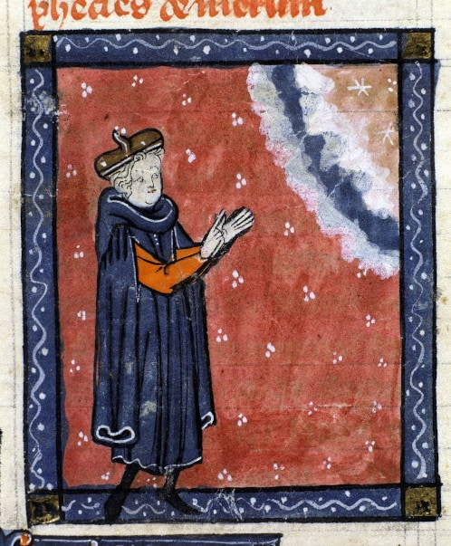
Geoffroy, manuscrit sur parchemin, 1136,
Bibliothèque des champs libres, Rennes
La carrière littéraire de Merlin commence vers 1135, lorsqu’un clerc et futur évêque gallois, peut-être d'origine normande ou bretonne, Geoffroy de Monmouth (1095-1154), publie en latin son premier ouvrage :
Prophetiae Merlini
. Ces Prophéties de Merlin sont une suite de 73 tableaux obscurs où Merlin décrit des événements dont certains avaient déjà eu lieu du vivant de l'auteur.
Celui-ci les incorporera deux ou trois ans plus tard dans un ouvrage qui connut un énorme succès :
Historia regum Britanniae
, l'Histoire des Rois de Bretagne (HRB)(*) . Cette Histoire marque l'apparition d'une fiction, la "matière de Bretagne" qui s'organise autour de quelques figures mythiques, dont
Arthur et Merlin
, évoquées par des auteurs plus anciens.
Dans l'Histoire des Rois de Bretagne, Merlin est d'abord un
enfant sans père
appelé à devenir un devin et un prophète. Il tire ses traits, au moins en partie, d’un
chef de guerre
Ambrosius Aurelianus
dont parlent trois protohistoriens :
•
Gildas
(500-570) qui, dans son
"De Excidio et Conquestu Britanniae"
(vers 544), indique aux chapitre 25 et 26 que des Bretons
"prirent les armes sous la conduite d'
Ambrosius Aurelianus
, un homme modeste, qui, de toute la nation romaine, était alors le seul, par un hasard providentiel, à avoir survécu au milieu du chaos de cette période troublée. Ses parents, qui, pour leurs mérites, avaient été revêtus de la pourpre, avaient été massacrés lors de ces mêmes troubles, et aujourd'hui, sa descendance, bien que honteusement déchue de la valeur de ses ancêtres, provoque au combat ses cruels conquérants et, par la grâce de notre Seigneur, remporte la victoire.
Après cela, tantôt nos compatriotes, tantôt l'ennemi, remportèrent la victoire, afin que notre Seigneur pût éprouver cette terre, selon sa coutume, et mettre à l'épreuve ses Israélites, pour voir s'ils l'aimaient ou non, jusqu'à l'année du siège de
Mont-Badon
, où eut lieu également le dernier, ou presque, mais non le moindre, massacre de nos cruels ennemis. Ce fut (j'en suis certain) quarante-quatre ans et un mois après le débarquement des Saxons, et aussi l'année de ma propre naissance."
On peut supposer la chronologie suivante : vers 456 : arrivée des premiers Saxons combattus par Ambroise Aurélien ; 500 : les Bretons (commandés par Aurélien ?) battent les Saxons au Mont-Badon et naissance de Gildas ; 570 : mort de Gildas.
•
Bède le Vénérable
(672-735), auteur d'une
Historia ecclesiastica gentis Anglorum
(vers 731), qui au chapitre XVI se contente de reprendre ce que Gildas écrit au sujet d'
Ambroise Aurelien
.
•
Nennius
, l’auteur principal de l'
Historia Brittonum
(HB) rédigée vers 826. Il distingue deux personnages :
-
Aurèle Ambroise
, chef de guerre
. Le chap. 30 relate des tensions entre Vortigern (*) , souverain de Dyfed, et Ambroise, fils du roi des Damnoniens, autour de Glasgow et Strathclyde) ;
- et
Ambroise l'enfant sans-père et le devin.
Chap. 40 : Dispute des enfants. Chap. 41 : L'enfant déclare qu’il s’appelle Ambroise, en breton
Embres Guletic
(**), et que son père était un consul romain. C'est, semble-t-il, ce même Ambroise qui, au chap. 47, est déclaré "grand roi parmi les rois de Bretagne" et dont il est dit, au chap. 61, qu'il combattit le roi Guithelin douze ans après le règne de Vortigern.
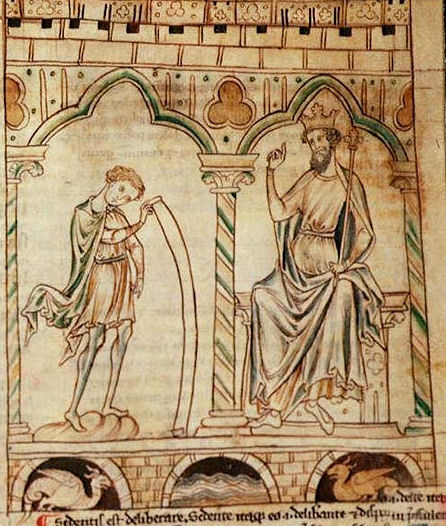
Vortigern et l'enfant Merlin
Manuscrit Cotton Claudius BVII f° 224
La même Historia Brittonum décrit
Arthur
comme un simple
dux bellorum
(chef de guerre).
Le nom d’Arthur apparaît dans le poème gallois
Y Gododdin
et dans les
Annales Cambriae
qu’on date de la même époque que l’Historia. Ces Annales donnent 3 dates importantes : v. 516 (au lieu de 500) : Mont Badon, v. 537 Camlan ; v. 573 Arfderydd.
(*) Vortigern (Vertigier) (394-457) était (un ?) roi de Bretagne quand commença l’invasion de l’île par les Anglo-Saxons.
(**) En gallois moderne Emrys Wledic, connu sous le surnom de Riothame (grand roi) battu par les Wisigoths en 469 à Déols (Léon Fleuriot, « Origines de la Bretagne », Payot, 1999, p.170-176).
I.3 Un "héros de synthèse" : l’Ambroise-Merlin de Geoffroy
Dans l'
Histoire
(HRB) de Geoffroy le nom de
Merlinus
apparaît tout d'abord, au chapitre 106 (de la traduction de Laurence Mathey-Maille, op. cité p. 3), à propos de la
Tour de Vortigern
que ce roi s'évertuait à construire et qui, assuraient ses mages, cesserait de s'effondrer chaque nuit si l'on sacrifiait un enfant sans père et si l'on arrosait de son sang les pierres et le mortier de l'ouvrage maudit. (*) Les émissaires partis à la recherche d'un tel enfant entendent une dispute entre deux garçons, Dinabut et Merlin
("quorum erant nomina Dinabutius atque Merlinus")
, le premier reprochant au second de n'avoir pas de père. Quelques pages plus loin (HRB, chap. 108, p.156), Geoffroy nous apprend que
Merlin s'appelait aussi Ambroise
("Merlinus qui et Ambrosius dicebatur")
, ce qui autorise Geoffroy à imputer audit Merlin ce que ses prédécesseurs racontaient au sujet de l'"enfant sans père Ambroise", le chef de guerre poursuivant, quant à lui, sa carrière dans le récit sous le nom d'"Aurèle Ambroise », frère d’Uther Pendragon, donc oncle d’Arthur.
(*) Le sacrifice humain destiné à renforcer une construction est le sujet de nombreuses légendes locales : forteresses de Rozafe et de Gajtan près de Shkodër (Albanie), pont d’Arta en Epire (Grèce), monastère de Curtea de Argès en Valachie (Roumanie)… Est-ce le souvenir d’un antique rite sur le thème de la mort créatrice ?
I.4 Le héros éponyme de Carmarthen
Au chapitre 106 où figure pour la première fois le nom de Merlinus, Geoffroy relie ce nom à celui de la ville galloise de
Carmarthen
.
Ce faisant, il montre qu’il associait au nom de Merlin un autre nom qui avait cours dans le domaine des langues brittoniques :
Myrddin
.
Il signale expressément que l'
enfant sans père
fut découvert "dans la ville que l’on appela dès lors Kaermerdin" (
quae postea Kaermerdin vocata fuit
). Le fait mérite d'être souligné, car l'
Historia Brittonum
(826) avait situé la découverte d'Ambroise, non pas à Carmarthen, mais dans le royaume de Glamorgan, alors appelé
Glywysing
.
Ce changement de lieu suggère que Geoffroy avait entendu parler, à propos de cette ville, d'un certain Myrddin, possédant le don de
double vue et de prophétie
comme l’enfant sans père de son récit. Ce nom était le produit de l'étymologie fantaisiste du toponyme
'Kaermerdin'
, anciennement
‘Moridunum’
, gallois moderne
‘Caerfyrddin’
et, si l’on en croit de nombreux auteurs, il aurait dû rendre ce nom sous la forme
"Merdin"
. Ce n'est qu'une dizaine d'années plus tard, qu'ayant, peut-être, approfondi sa connaissance de cet autre "Merlin", en particulier par la lecture des poèmes attribués à Myrddin, il lui consacrera un autre ouvrage, la
"Vita Merlini"
(VM) qu'il essaiera tant bien que mal de raccorder à ses précédents écrits. (*)
C'est ici que se pose la question : d'où vient le nom de Merlin ?
Geoffroy l'a-t-il trouvé dans
"le livre très ancien
(liber vetustissimus)
en langue bretonne"
qu'il déclare dans sa préface à l'"Histoire" (HRB) avoir reçu de Gauthier, archidiacre d’Oxford ? Dans le passage introductif des "Prophéties", il affirme avoir seulement
"modulé la traduction d'un langage qui lui est inconnu"
, à l’intention de son commanditaire, Alexandre, évêque de Lincoln, désireux de connaître la teneur de ce mystérieux écrit. Alors que les celtisants tels que Léon Fleuriot (*) suggèrent que ce livre a bel et bien existé, les autres critiques pensent qu'il s'agit d'une source imaginaire qui sert de caution à l'historien.
On peut difficilement admettre, comme le faisait E.K. Chambers (1866-1954) dans
"Arthur of Britain"
(1927), que le nom de ce personnage ait été
inventé
par Geoffroy lui-même.
Le médiéviste français Edmond Faral
(1882-1958), dans
"La légende arthurienne"
, t. II, p.39-48, propose une explication plus nuancée, puisqu'il lui faut 8 pages pour l'exposer, mais qui finalement revient au même. On a pourtant du mal à croire que Geoffroy fut le premier à utiliser le nom de Merlin. Il existait sans doute une tradition antérieure, orale ou écrite, autour d'un personnage portant ce nom.
On notera que le nom latin,
"Merlinus"
, apparaît également dans un document ancien, les
"Annales Cambriae"
et l’on date généralement l'original (version A) de cette liste d’événements, du 10ème siècle au plus tard. Cependant le membre de phrase, à propos de la bataille d’Arfderydd, qui contient ce nom
("Merlinus insanus effectus est")
ne se trouve que dans une seule des 5 versions connues, la version B, qui prétend aller "depuis la création du monde jusqu'en 1286"
("ab orbe condito adusque AD 1286")
. Cette mention doit donc être
postérieure
à l'"Histoire" de Geoffroy et lui
avoir emprunté
le nom de
"Merlinus"
.
Après avoir conté le prodige de la Tour de Vortigern, Geoffroy introduit les "Prophéties de Merlin" dans son "Histoire des rois de Bretagne" (§109) par ces mots :
"Nondum autem ad hunc locum historiae perveneram, cum de Merlino divulgato rumore, compellebant me undique contemporanei mei, ipsius prophetias edere: maxime autem Alexander Linconiensis Episcopus…"
"Je n'étais pas parvenu à ce point de mon histoire quand,
au bruit qui se faisait autour du nom de Merlin,
mes contemporains me poussèrent de tous côtés à publier ses prophéties et parmi eux, Alexandre, évêque de Lincoln... "
Cette remarque montre que le nom de Merlin circulait, mais elle suggère de plus qu'il existait au sujet de ce célèbre devin
une tradition antérieure à Geoffroy
.
Un corpus de contes merliniens circule encore en Bretagne, sous une forme bien évidemment conditionnée par le contact avec un répertoire oral européen et extra-européen et avec des œuvres littéraires diverses. Existe-t-il des liens de parenté ou de filiation, et dans quel sens, entre ces contes bretons et la tradition littéraire merlinienne ?
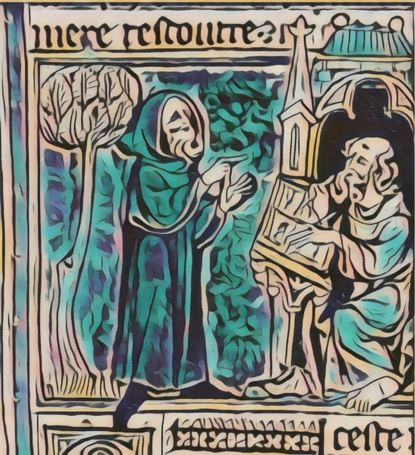
Merlin dicte un poème à Blaise (manuscrit c. 1300)
La présente étude se propose d’examiner divers éléments relatifs à cette question en suivant
le plan suivant :
Dans une
première partie
, nous poserons la question de l’existence d’un Merlin Breton :
• En comparant le "Merlin" de l
’Histoire des Rois
avec celui de la
Vie de Merlin
, nous verrons que le Merlin breton est un parent du second et de ses avatars gallois : le poète
Myrddin
, écossais : l’homme sauvage
Lailoken
qui est peut-être un personnage historique et irlandais : l’homme-oiseau Suibhne ou
Sweeney
.
• Merlin pourrait-il être le père de Myrddin ?
Nous examinerons deux points de vue opposés : celui de
Luzel
qui affirme que la muse bretonne ne sait qu’imiter la littérature et celui de
Sherman Loomis
qui affirme l’existence d’une
matière de Bretagne
spécifique à la Bretagne continentale et qui a fécondé la littérature arthurienne.
• Mais cette filiation suppose l’existence d’un domaine culturel brittonique unissant les deux Bretagne. Or certains thèmes récurrents de la
tradition bretonne moderne
ont leur équivalent dans la
littérature ancienne galloise
.
• Rassurés sur ce point, nous pourrons, sur la base de la quinzaine de pièces listées ci-après, esquisser un
portrait du Merlin breton
et évoquer la mythologie qui lui sert peut-être de toile de fond. Des considérations philologiques nous conduirons à évoquer à son propos un oiseau, l’émerillon,
• Puis nous nous pencherons sur le
nom de Merlin
jailli sous la plume de Geoffroy, nom que nous retrouverons dans la topologie de Haute et Basse Bretagne et dans la littérature bretonne.
• Enfin nous aborderons brièvement la teneur et le rôle passé et présent des
prophéties merliniennes
littéraires et populaires.
Dans une
Deuxième partie
, à titre de
justification
de l’existence d’un "Merlin breton", on trouvera les documents suivants :
- Des pièces appartenant à la tradition orale armoricaine :
un
Fragment
recueilli par Mme de Saint-Prix avant 1839 ; le
Merlin-Barde
consigné par La Villemarqué dans son premier carnet d’enquête ; le chant
Mort du roitelet
qui présente de frappantes analogies avec les textes précédents.
-Le conte Georgic et Merlin collecté par l’abbé François Cadic,
-le conte Coatalan collecté par F-M. Luzel,
-les contes Merlinn, Merlig, Erlinn et Santirine collectés par Luzel,
-le conte Capitaine Lixur collecté par Luzel,
-Le conte Le Murlu ou L’homme sauvage collecté par Luzel,
-Le conte La fille du marquis de Coatleguer collecté par Luzel,
-Le conte Merlin publié par le Dr Joseph Foulon-Ménard,
-Le conte Fantig publié par Christophe Jezegou,
-Le conte Le chevalier du Kergoat publié par Yeun ar Gow,
-Le conte Jozebig publié par Jef Philippe,
-Le conte Margot l’eau froide publié par Jef Philippe.
Un
tableau chronologique
retracera les itinéraires entrecroisés des différents personnages qui composèrent la figure de Merlin : tantôt ils coexistent, tantôt ils se supplantent, tantôt ils disparaissent, tantôt ils ressurgissent.
7 annexes
complèteront notre propos, suivies d’un
index
onomastique :
-L’annexe 1, le récit gallois
Histoire de Taliésin
, annonce les épisodes de poursuite accompagnée de métamorphoses de certains contes du Merlin breton.
-Les annexes 2 et 3, les
Dépouilles de l’abîme
et la
Robe de Dinogat
témoignent d’une réalité : l’existence d’une tradition et d’une littérature brittoniques médiévales communes à un ensemble de pays allant du Nord de l’Angleterre à la Bretagne. Dans ces traditions, les univers arthurien et merlinien étaient disjoints.
-L’annexe 4,
Merlin au berceau
, une berceuse tirée du Barzhaz de 1867 - et a priori authentiquement traditionnelle - raconte l’enfantement de Merlin par un esprit qui a pris la forme d’un oiseau, une idée qui ne doit rien à Robert de Boron lequel assigne ce rôle à un diable incube.
- L’annexe 5 évoque les
contes non-celtiques
qui ont laissé leur empreinte dans la tradition bretonne ou qui ont pu être enrichis par elle : le
Jean de Fer
allemand, l’
Homme sauvage
de l’Italien Straparole, l’
Asmodée
du livre de Tobie et du Talmud, les
Silène, Faune et Picus
de la mythologie classique ont tous un air de famille plus ou moins prononcé avec l’homme sauvage breton.
- L’annexe 6, l’aubade provençale
Magali
témoigne de l’ubiquité du thème de la poursuite jalonnée de métamorphoses entre Ceridwen et Gwion Bach.
- L’annexe 7 est consacrée à l’énigmatique
gwerz de Skolan
dans laquelle un revenant s’accuse des mêmes crimes que le lettré
Yscolan
dans un poème gallois du 12ème siècle. Il a enduré les mêmes souffrances qu’Yscolan, Myrddin-Lailoken et Suibhne et comme eux il est en quête de pardon. Ce n’est certainement pas en feuilletant des livres que les chanteurs bretons et bretonnants ont fait la connaissance de ce personnage tragique.
Un
épilogue
sera confié à un nouvel enchanteur : l’IA !
Je tiens à remercier M. Jérémy Loysance qui m’a fait généreusement profiter de ses connaissances inépuisables sur tout ce qui concerne la Bretagne et la matière de Bretagne.
Je remercie également M. Jef Philippe de m’avoir autorisé à reproduire et traduire les deux contes de Jean-Louis Le Rolland.
Si c'est le Merlin de
l’Historia regum Britanniae
qui eut la descendance littéraire la plus importante (en tant que magicien, prêtre, et même adepte de l’amour courtois), c’est du Merlin le fou, l’Homme sauvage, le Prophète aux multiples avatars de la
Vita Merlini
, que les conteurs de Haute et Basse Bretagne semblent avoir conservé le souvenir le plus vivace.
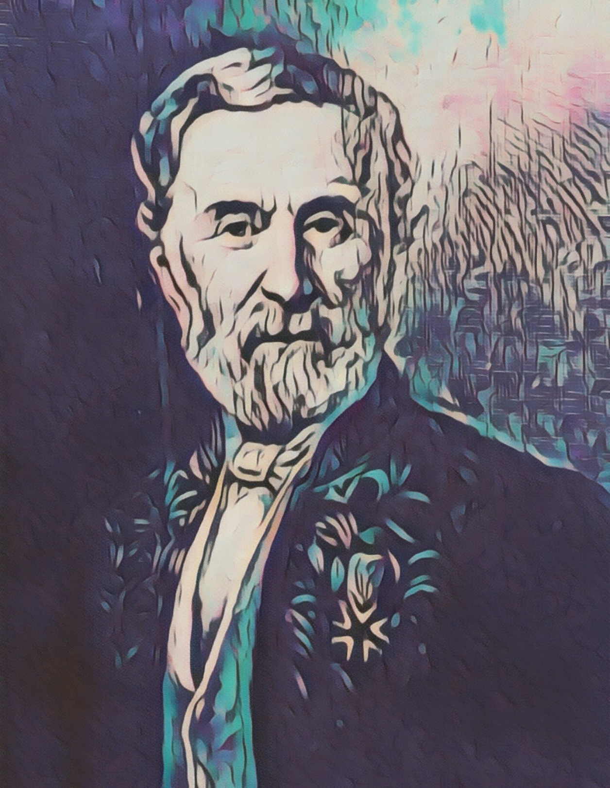
Théodore de La Villemarqué (1815-1895)
Cette dualité est soulignée d’emblée par
Théodore de La Villemarqué
, le grand collecteur et arrangeur de chants bretons, dès la première édition de son fameux recueil, le Barzhaz-Breizh, en 1839 (p.55) :
« Deux Bardes ont porté le nom de Merlin : l’un… eut pour mère une vestale et pour père … un consul romain et passa pour le premier des devins de son temps. L’autre, … [était un poète qui, après] la bataille d’Arfderydd, … perdit la raison, s’exila du monde et se retira dans la forêt de Celyddon (vers 577) ». (*)
Cette popularité de Merlin fait écho à une production littéraire relative à son alter-ego gallois
Myrddin
: des poèmes réputés autographes décrivent sa déchéance - ignorée de la tradition bretonne - dans tout le domaine brittonique ; des pièces éparses citent son nom qui concurrence celui de
Merlin
.
Par ailleurs, le double écossais de Myrddin,
Lailoken
, dont les Irlandais feront
Sweeney
, serait-il un personnage historique encore vivant dans la mémoire des conteurs ?
La première narration proposée par Geoffroy de Monmouth elle-même complexifie le personnage de Merlin. Elle fait de ce devin un
magicien
qui transporte Stonehenge d'Irlande en Grande Bretagne (HRB chap. 130). On lui assigne pour la première fois un rôle dans la
légende arthurienne
: il intervient dans l'engendrement d'Arthur en donnant par magie à Uther Pendragon l'aspect de l'époux de la reine Ingerne (HRB chap. 137-138), puis il
disparaît
du récit encore fort long des aventures d'Arthur contées dans l'"Histoire" (*).
On ne saurait exagérer le succès remporté par cet ouvrage de pseudo-histoire : on en recense encore plus de 200 copies anciennes et le texte latin est à la base de son équivalent français rédigé par le Normand
Wace, le "Roman de Brut"
vers 1155. Ce
"roman"
répond aux attentes du public, en mettant l'accent sur de nouvelles valeurs : la
chevalerie et l'amour courtois
, et en introduisant un élément essentiel de la fable arthurienne : la
"Table ronde"
...
Mais les prophéties de Merlin en sont absentes.
(*) Dans les « Dépouilles de l’Abîme » le résumé des noms et des choses que doit connaître un barde ne cite pas Myrddin (cf. Annexe 2)
1.2 Le Merlin religieux de Robert de Boron
Le Merlin de l'"Histoire des rois de Bretagne" poursuivit sa carrière littéraire. Vers 1200, le Bourguignon
Robert de Boron
fait de son poème intitulé Merlin la seconde partie d'une
trilogie
en vers dont la première raconte l'
Estoire du Graal
et la troisième est consacrée au chevalier
Perceval
.
Une partie de ces textes nous est connue uniquement par les comptes-rendus en prose du
Petit cycle du Graal
. Le magicien Merlin y devient profondément
chrétien, investi d'une mission divine
: inciter les hommes à se soumettre à la volonté de Dieu et inviter les chevaliers à se lancer dans la
quête du Graal
, le calice béni par Jésus lors de la Cène. Boron conclut son récit par un nouvel épisode imputable à la magie de Merlin, celui de l'
épée enfichée
dans un bloc de pierre que seul Arthur parviendra à dégager.
Dans
Perceval
, Merlin joue un
rôle secondaire
: dans le château du Graal, il raconte audit Perceval les exploits militaires et la mort tragique d'Arthur, avant de devenir un
ermite
qui
se retire dans une proche forêt
. Ce dernier trait évoque la saga de Myrddin dont il sera question plus loin.
Si Merlin est
totalement absent de l'œuvre de Chrétien de Troyes
(1130-1180), l'auteur arthurien par excellence, il n'est pas pour autant oublié des autres : Ce sont au total 5 volumes qui constituent la
Vulgate
(textes en prose) dont il existe encore 140 exemplaires plus ou moins complets. L’
Estoire de Merlin
(EM) - qui introduit
Viviane
et fait de Merlin une
victime de l’amour courtois
- est une des 5 parties de cet ensemble réputé dans toute l’Europe :
Estoire de Merlin, Estoire du Graal, Lancelot, Queste du Graal, Mort Artu.
Divers éléments de ce récit sont repris, vers 1230-1240, dans une trilogie appelée la
Suite-Vulgate
:
Saint-Graal, Merlin, Tristan.
‘Merlin’ inclut
l’Estoire de Grisandole
, en vers notés vers 1260, dont nous aurons à reparler à propos du
Roman de Silence.
Une version anglaise et imprimée de la Vulgate,
La Morte d'Arthur
en 8 parties, est donnée par
Thomas Malory
vers 1470. Merlin n'est plus magicien, mais seulement un sage, conseiller et ministre. D'autres personnages le dépassent de loin en importance : la reine Guenièvre, Lancelot du Lac, Gauvain et les autres chevaliers de la Table ronde ...
Comme on l’a dit, une autre œuvre de Geoffroy de Monmouth (*) eut beaucoup moins de retentissement que son "Histoire des rois de Bretagne". Il s'agit de la
"Vita Merlini"
, parue une douzaine d'années plus tard (vers 1150) qui nous présente un Merlin vieilli,
"après que bien des ans et bien des rois furent venus et passés"
. La scène se déplace du Pays de Galles et du sud-ouest de l'Angleterre vers la Forêt de Calidon (ou Celyddon) et le royaume de Cumbrie, à la frontière de l'Ecosse.
Merlin avait rang de roi de Dyfed en Galles du Sud en tant que principal astrologue et juriste. Lors d'une guerre entre le roi du Gwynedd (Galles du Nord)
Peredur
, allié de
Rodarch
, roi des Cumbriens d'une part, et
Guennolous
, roi d'Ecosse d'autre part, les trois frères de Peredur périrent, tandis que Peredur et Rodarch massacraient leurs adversaires. Merlin fut témoin de ce carnage et perdit la raison : il se couvrit la tête de poussière, déchira ses vêtements en se roulant par terre, avant de s'enfoncer dans la forêt où il se nourrissait de baies et de racines comme un animal sauvage.
(*) Tous les auteurs n’attribuent pas à Geoffroy de Monmouth la Vita Merlini. Cependant le texte se présente lui-même comme une œuvre de
‘Galfridus de Monemuta’
, le style, les thèmes et les préoccupations prolongent clairement ses œuvres antérieures et le dédicataire, Robert de Chesnay est son contemporain.
2.2 Merlin l'homme sauvage
Ganiéda
, la soeur de Merlin qui avait épousé le roi Rodarch envoya des messagers à sa recherche. L'un d'entre aux parvint à le faire sortir de sa cachette en évoquant, au son d'une guitare, le chagrin de Guendoloène, son épouse. Son retour fut salué par tant de joyeuses clameurs à la cour du roi, que Merlin, abasourdi, voulait retourner à la vie sauvage et que Rodarch dut le faire enchaîner.
En dévoilant au roi l'inconduite de son épouse qui avait provoqué son rire, Merlin obtint d'être relâché. Non sans avoir auparavant prédit trois fois la mort d'un jeune garçon - et chaque fois d'une façon différente: chûte d'un rocher, mort du fait d'un arbre, noyade dans une rivière. Cet apparent illogisme était censé réhabiliter Ganiéda aux yeux de son mari. Merlin repartit pour la forêt et sa prophétie se réalisa: le garçon tomba d'une falaise dans une rivière, il eut le pied pris dans les branchages d'un arbre, de sorte qu'il se noya.
Des années plus tard, l'homme sauvage sorti de la forêt de Calidon , chevauchant un cerf, pour empêcher le remariage de son épouse Guedoloène. Il arracha les ramures de sa monture et les jeta sur son rival qui tomba raide mort. Alors qu'il prenait la fuite pour rejoindre la forêt, il fut rattrapé au passage d'un gué et conduit auprès du roi et de son épouse Ganiéda.
Un compromis fut trouvé: on construisit à son intention un
pavillon dans les bois
où il trouverait de la nourriture pour l'hiver et des scribes pour consigner ses
prophéties
par écrit. Ces prophéties occupent plus d'une centaine de vers du poème: elles évoquent des guerres entre factions bretonnes ennemies telles que les Gallois et les Cornouaillais, la conquête de la (Grande) Bretagne par les Saxons, les raids des Vikings au 9ème siècle et la conquête normande de 1066. Elles enchaînent sur les prophéties de l'
"Histoire des rois"
faites à Vortigern.
Ganiéda est priée de faire venir au pavillon du bois le
barde Taliesin
(
Telgesinus) "récemment rentré de (Petite) Bretagne où il avait bénéficié de l'enseignement du sage Gildas"
(*). L'entretien du barde et du prophète constitue un long interlude où se mélangent science et superstition. C'est ainsi qu'à côté de pays réels dont Ceylan
(Taprobana)
, il est question de l'île des Pommes
(Insula Pomorum)
gouvernée par Morgane. C'est là, précise Taliesin, qu'a été transporté Arthur après avoir été blessé à la bataille de Camlan. Ledit Arthur a, sinon, complètement disparu du récit.
L'envahissement de la Grande Bretagne par les Anglo-Saxons est alors raconté en détail, jusqu'à l'avénement de Conan qui, malgré ses défauts, règne toujours sur les Bretons.
D'autres longs entretiens avec Taliesin ont pour objet les vertus curatives de l'eau, sujet imposé par le jaillissement d'une source qui guérit la folie de Merlin; puis les oiseaux migrateurs...
Un troisième Merlin fait son entrée en la personne de
Maeldin
, un soldat devenu fou après avoir mangé des
pommes empoisonnées
destinées au vrai Merlin. Il est guéri à son tour. Il décide de rester auprès de son mentor, tout comme Taliesin et
Ganiéda
qui manifeste, elle aussi, des talents de prophétesse et prédit le siège de Lincoln et autres malheurs provoqués par des envahisseurs normands.
Et c'est ainsi que s'achève la
Vie de Merlin
.
(*) Tous les auteurs n’attribuent pas à Geoffroy de Monmouth la Vita Merlini. Cependant le texte se présente lui-même comme une œuvre de ‘Galfridus de Monemuta’, le style, les thèmes et les préoccupations prolongent clairement ses œuvres antérieures et le dédicataire, Robert de Chesnay est son contemporain.
Combinée avec l’Histoire des Rois de Bretagne, cette Vita confère à son héros une intrigante particularité, à savoir la
longévité
.
En effet Geoffroy nous présente Ambroise Merlin commençant sa carrière au service de Vortigern vers 450, tandis que la bataille au cours de laquelle il perdit la raison, aisément identifiable comme celle d’Arfderydd, est datée par les
Annales Cambriae
de 573 environ. (*)
C’est que le
Merlinus
de l'"Histoire des rois de Bretagne" (le contemporain de Vortigern) n'est pas un clone du héros de la "Vie de Merlin" (le témoin de la sanglante bataille).
- Le premier vit dans le sud et plus particulièrement dans le pays de Galle, le second vit dans le nord de l'Île de Bretagne.
- Le roi
Rodarch
de la
"Vita Merlini"
est de toute évidence le
Roderc historique
du Rocher de Clyde (aujourd'hui château de Dumbarton, au nord de l'Angleterre) qui vécut dans la première moitié du 6ème siècle et dont parle la "Vita" de saint Columba (Colomban), rédigée vers l'an 700.
- C'est aussi le
Rhydderch de six (**) poèmes gallois de Myrddin
dont Geoffroy s'est inspiré de toute évidence pour sa "Vie de Merlin", mais non pour son "Histoire des rois". Ils sont notés dans des manuscrits postérieurs au 12ème s., le Livre Noir de Carmarthen (vers 1200) et le Livre Rouge de Hergest (vers 1400).
Myrdhinn Wyllt
("Merlin sauvage", expression apparue au 16ème siècle). y parle à la 1ère personne de la bataille d'Arfderydd (573) et de la forêt de Celyddon (ou Calidon).
Ces poèmes ont pour titres :
Afallenau Myrddin, Yr Oianau, Cyfoesi, Gwasgargerdd, Peirian vaban
(Les pommiers de Myrddin, les Salutations, Conversation, Chant d’adieu, Impérieux jeune homme).
Ymddiddan Myrddin a Thaliesin
(composé vers 1050-1100) est un Dialogue entre Myrddin et Taliésin, opposant le savoir traditionnel de son interlocuteur à sa propre sagesse prophétique.
Dans
Cyfoesi
(Salutations) Gwenddydd (Ganiéda) s’adresse à son frère Myrddin en l’appelant
llallawg / llallogan
(breton :
An all
= l’autre ?), un mot qui annonce
Lailoken
.
(*) A propos des écrits gallois de cet exposé, 3 dates sont à considérer : celle du manuscrit conservé (fin du 12ème-15ème s.), celle du premier écrit (9ème-11ème s., époque des rois de Gwynedd, Rhoddri Mawr et Hywell Dda) et celle de la « composition orale », proche des faits (5-6ème s.)
(**) Le nombre des poèmes de Myrddin varie selon les auteurs entre 5 et 7, selon que l’on distingue ou non deux poèmes distincts dans « Afallenau » et que l’on inclut ou non dans la liste « Peirian Faban ».
3.2 Déchéance de Myrddin : le poème des « Pommiers »
Voici le portrait que trace de Myrddin le poème Afallenau Myrddin du Livre Noir de Carmarthen. (*)
5.
Afallen
peren atif in llanerch.
Y hangert ae hargel rac riev ryderch.
Amsathir inybon. Maon (1) ynychilch.
Oet aelav vt vt dulloet diheueirch.
Nu nym cari
guendit
ac nimeneirch.
Oef kas gan gwassauc guaessaf (2) rydirch.
Ryrewineis y mab ae merch.
(3)
Aghev aduc paup. pa rac nam kyueirch.
A.
guydi guendolev
nep riev impeirch.
Nym gogaun guarvy. nym goffvy gorterch.
Ac igueith arywderit. oet eur. wygorthorch
Kin buyf. aelav hetiv gan eiliv eleirch.
7. Afallen peren. blodev essplit.
Atiff in argel in argoydit.
Chuetlev a giklev ir inechrev dit.
Ryssorri guassauc guaessaf (2) meufit.
Duywetih atheirgueith. pedeirguieth in un dit.
Och iessu. na dyffv wynihenit.
Kyn dyffod ar willave lleith mab guendit.
6. Afallen peren atiff ar lan. afon.
Iny llurv. ny lluit maer. arychlaer aeron.
Trafu vm puyll. wastad. am buiad inibon.
A bun wen warius. vn weinus vanon
Dec inlinet a dev ugein iny gein anetwon
It vif inymteith gan willeith agwillon.
Guydi da diogan aditan kertorion.
Nv nev nam guy. guall. gan wylleith a guyllon.
Nv nev nachyscafe ergrinaf. wynragon.
Vy argluit guendolev ambrorryv brodorion.
Guydi porthi heint a hoed am cylch coed keliton.
Buyf guas guinwydic. gan guledic gorchortion.
5.
Pommier
doux, tu t'élèves dans cette clairière,
Me cachant à la vue des hommes de Rhydderch
,
Bien qu'autour de ton tronc leurs pas tassent la terre.
Et leurs rangs indomptés affluent en quantités. (1)
Gwenddydd
ne m'aime pas et répugne à me voir ;
La plus puissante alliée (2) de Rhydderch me déteste :
J'ai immolé son fils ; j'ai immolé sa fille.
(3)
La mort emporte tout, mais ne m'appelle pas!
Gwendoleu mort
, nul prince à qui va mon estime !
Le plaisir me déserte et les femmes me fuient.
J’avais un torque d'or au combat d'Arfderydd.
Mais je suis dédaigné de celle au teint de cygne.
7. Pommier doux, paré de mille fleurs si suaves,
A l'orée des forêts tu te tiens bien caché,
Sais-tu ce que m'apprend cette aube qui se lève ?
Le plus puissant vassal (4) s'irrite de mes mots,
Deux fois en un seul jour, trois fois ou quatre même.
Hélas, Jésus, pourquoi ne suis-je mort avant
Que le fils de Gwenddydd de ma main ne périsse ?
6. Pommier doux qui pousses sur la rive d'un fleuve,
Quel intendant saurait cueillir tes fruits brillants?
Tant que j'avais l'esprit en repos, sous tes branches
Je menais une blanche fille aux traits princiers.
Cinquante ans, hors-la-loi, la proie de la misère,
Je vais de ci, de là, l'insensé vagabond ;
Adieu les beaux atours, les ménestrels, les pitres :
A moi, faim et folie, compagnie des errants
!
Jamais plus je ne dors et je vis dans la crainte,
De Gwendoleu mon maître et ceux de mon pays.
Aux bois de Celyddon j'ai connu la détresse :
O, Seigneur des Armées, ouvre-moi ton séjour !
(*) Ces premiers vers sont les plus archaïques contenus dans ce texte (mis par écrit entre le 9ème et le 11ème siècle), mais ils sont fortement corrompus, sans doute à la suite de diverses transcriptions par des copistes qui ne comprenaient plus le texte originel. L’ordre des strophes a été modifié dans un souci de logique.
Ce poème indique le
changement de situation
de Merlin : il a quitté le monde après la bataille d’Arfderydd, comme en témoignent aussi d’autres textes comme le
Dialogue entre Merlin et Taliesin
(*).
Nous insistons sur cette notion de dégradation par rapport à un état antérieur, parce qu’elle est
absente de la tradition bretonne
que nous aborderons plus loin, bien que cette dernière procède de sa parente galloise. Un des rares monuments
écrits
de ladite tradition armoricaine est le
Dialogue entre Arthur et Guinclan
, datant de 1450, dans lequel Guinclan (Gwynglaff ou Gwenc’hlan) est un des multiples
doubles bretons
de Myrddin. C’est un être hirsute et pitoyable dont il n’est pas dit qu’il eut auparavant une situation prestigieuse.
Il en va autrement outre-Manche.
Les travaux de d’A. O. H. Jarman, R. Bromwich, L. Fleuriot et D. Laurent, entre autres ont montré que le personnage de Merlin, homme des bois vivant en harmonie avec la nature, devenu « fou du bois » et capable de prophétiser, se reconnait également sous d’autres identités telles que celles d’
Yscolan
(Galles),
Lailoken
(Ecosse pré-gaélique),
Sweeney
(Irlande, par « importation » depuis l’Ecosse), identités qui couvrent tout le domaine brittonique. Tous sont des grands personnages déchus (**).
(*) Dans ce poème composé en 1050-1100, Taliesin est le barde du roi de Gwynedd, Maelgwn (6èms s.).et Myrddin celui de Gwendoleu roi de Dyfed.
(**) Notons que certains auteurs soutiennent que l'influence des "Poèmes de Myrddin" est également décelable dans l’Histoire des rois de Bretagne (HRB) de Geoffroy : Le jeune sorcier gallois leur serait redevable de ses dons de prophètes au même titre que l'homme sauvage du nord. Cette affirmation semble tout à fait contestable. Il est plus naturel de supposer que Geoffroy n'a eu connaissance de cette "matière du nord" qu'en cours de rédaction de son "Histoire" et qu'il n'a pas pu en tenir compte dans cette première chronique.
3.3 Autres occurrences du nom de Myrddin
Le nom gallois dont la forme normalisée est
"Myrddin"
n'est pas un inconnu à l’époque où Geoffroy rédige ses ouvrages :
Dans l'une des 2 versions du poème gallois du 7ème siècle
"Y Gododdin"
(Combat des Votadini contre les Angles à Catraeth en 600), une ligne mentionne
"gwengawd Mirdyn"
, "le beau chant de Myrddin";
Dans
"Armes Prydein Vawr"
(la prophétie de Grande Bretagne) de 940,
"Myrddin prédit que les Gallois rencontreront les économes des machtierns des Gaëls d'irlande et de Man et des Bretons de Cornouailles et de Strathclyde".
Enfin, on date généralement d'avant 1130 la
"Triade des noms de l'Île de Bretagne"
où figure le nom de Myrddin: l'Île de Miel, l'Île de Bretagne et
"Clas Merdin"
. "Clas" peut signifier "cloître" et l’expression complète se rapporter à la "forteresse maritime" qu’est, pour l’île entière, Carmarthen.
La forme ‘Merlinus’ concurrence Myrddin dans les écrits latins postérieurs à ceux de Geoffroy, mais la
Prophetia Merlini
en latin qu’on attribue au théologien Jean de Cornouailles (1127-1199) puiserait à la même source que l’Histoire, selon Léon Floriot.(*)
Par ailleurs, des
cartulaires
du 11ème siècle présentent la graphie
Merlini
au Tréport et à Merlemont dans l’Eure :
Merlini Campus
et
Merlini Mons
(**).
Notons que certains auteurs soutiennent que l'influence des "Poèmes de Myrddin" est également décelable dans l’Histoire des rois de Bretagne (HRB) de Geoffroy: Le jeune sorcier gallois leur serait redevable de ses dons de prophètes au même titre que l'homme sauvage du nord. Cette affirmation semble tout à fait contestable. Il est plus naturel de supposer que Geoffroy n'a eu connaissance de cette "matière du nord" qu'en cours de rédaction de son "Histoire" et qu'il n'a pas pu en tenir compte dans ce premier livre.
(*) Léon Fleuriot, « Les fragments du texte brittonique de la ‘Prophetia Merlini’ », Etudes Celtiques, t. 14, 1974, p. 43-56.
(**) Pierre Gallais, « Actes du 7ème congrès national de la littérature comparée, Poitiers », 1965, p. 60.
On peut se demander si le Myrddin de la
Vita
n'évoque pas un personnage ayant réellement existé.
Nous avons déjà cité le nom de Lailoken, un mystérieux "homme sauvage" qui aurait vécu au 6ème siècle dans les Basses Terres d'Ecosse. Son sort aurait été lié à celui de
saint Kentigern de Glasgow
, à celui de Rhydderch, roi de Dumbarton comme on l'a dit, et à des événements importants :
•
573
Bataille d'Arthuret (gall.
Arfderydd
) (*) où, selon les "Annales Cambriae",
"Gwendoleu cecidit"
(mourut). Elle opposait le prince breton de ce lieu, Gwenddolau, à ses voisins, Gwrgi et Peredur. Son fidèle vassal, Lailoken, traumatisé fuit dans la forêt. On lui prêtait le don de prophétiser. Un roi local, Meldred le captura, mais il s’échappa et fut tué.
•
Vers 580
saint Kentigern nait à Culross. Il viendra en Cumbrie à la demande de Rederech Haël. La tradition le fait rencontrer Lailoken.
•
Vers 700
, l'abbé Adomnan d’Iona (Ecosse), dans la "Vie de Saint Columba" (fondateur du monastère d’Iona en 565), mentionne Roderc, roi du Rocher de Clyde (Dunbarton) ou Rhydderch dans les poèmes gallois "pré-Galfridiens" (=antérieurs aux publications de Geoffroy de Monmouth). Celui-ci devient le roi du récit de Lailoken.
• Ce récit a certainement migré, à l’époque du royaume gaël de
Dàl Riada
(6ème -9ème siècle: ce royaume gaélique s’étendait de l’Ulster au nord-ouest de l’Ecosse.), vers l’Irlande où Sweeney est l’équivalent de Lailoken dans un texte qu’on date du 12ème s. intitulé
Buile Suibhne, la Frénésie de Sweeney
: Suibhne (=Sweeney), roi de Dal nAraide s’oppose à saint Ronan. Il devient fou à la bataille de Mag Rath (637) ou son suzerain affronte le haut-roi d’Irlande. Alladhan est un personnage dont le destin est en tout point identique à celui de Suibhne.
(*) Les textes parlent d’une bataille qui eut lieu « entre Lidel et Carwannock » (Carwinley= Caer Wenddoleu), c’est-à-dire à Arthuret=Arfderydd.
4.2 Transmission du souvenir de Lailoken
Si ce personnage solitaire, toujours en fuite, traumatisé par son expérience de la guerre, hôte des collines et des forêts de l'Ecosse du temps jadis a existé, on peut risquer l'hypothèse que le peuple de Bretagne continentale en a conservé le souvenir.
Les contes bretons cités ci-après (ch. 7 à 18) nous parlent en effet d'un Merlin sauvage hantant les forêts, possédant des dons divinatoires et qu'un roi s'évertue à garder prisonnier dans une cage... Il ne doit pas grand-chose au Merlin de la littérature arthurienne mais il doit beaucoup au Myrddin du nord de l'Angleterre, celui de la Vita Merlini.
La transmission sur une telle étendue dans l’espace - de l’Ecosse à la péninsule armoricaine- et dans le temps - du 6ème siècle à nos jours - du souvenir d’un personnage historique devenu figure littéraire n’est possible que s’il existe une inter-pénétrabilité entre le monde de l’écrit et celui de l’oralité.
Il se trouve que ce problème a été évoqué par deux celtisants éminents, François-Marie Luzel qui s’intéressait particulièrement au personnage de Merlin et Roger Sherman Loomis qui s’efforçait de prouver l’existence ces liens entre la tradition bretonne et les romans arthuriens. Nous allons à présent examiner ces points de vue opposés.
Que le Merlin breton puisse appartenir à une tradition spécifique dont l'Armorique hériterait - ou qu’elle aurait enrichie- au même titre que les Celtes de Grande Bretagne est un point de vue que
François-Marie Luzel
(1826-1895) ne partage pas :
Le répertoire des conteurs s’est constitué en partie à partir d’éléments importés du monde extérieur et c’est donc dans les régions côtières qu’il est le plus fourni et varié.
De plus, selon lui, les chaumières bretonnes ne savent que répéter ce qui se raconte chez les nobles instruits. Il ne faut guère s’attendre à trouver, dans les régions côtières riches en châteaux, que des échos de la littérature chevaleresque (issue comme on l’a dit de Geoffroy première manière) : Huon de Bordeaux, les Quatre Fils Aymon.
Pourtant, piège exploitant la gloutonnerie de l’homme sauvage en vue de sa capture, révélations inattendues et réactions paradoxales de celui-ci, travestissement … : tout cela est absent de la littérature « classique », mais figure dans le récit en prose de
Grisandole
et dans le poème de
Silence
et presque tout cela se trouve dans les contes collectés par Luzel, le plus grand collecteur de contes merliniens à son corps défendant !
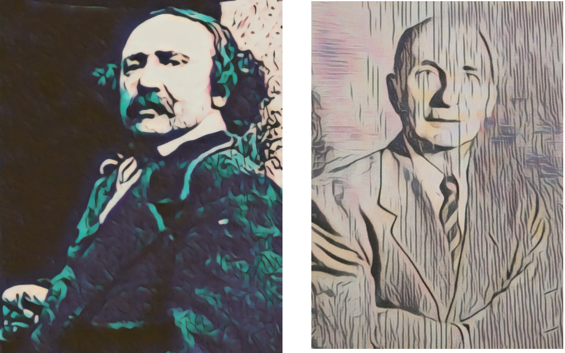
François-Marie Luzel (1826-1895) et Roger Sherman Loomis (1887-1966)
Le médiéviste américain
Roger Sherman Loomis
, (1887-1966) pense que l’aveuglement de Luzel s’explique par son parti pris dans la querelle du Barzhaz. Il existe au contraire des concordances significatives entre traditions anciennes et traditions récentes.
Il croit à l’enrichissements de la légende arthurienne par l’inventivité populaire, plutôt qu’à l’inverse : c’est le cas pour trois thèmes de la légende de Tristan.
Il signale bien d’autres correspondances diverses entre la tradition bretonne et la
matière de Bretagne
. Confronter ces deux points de vue antithétiques ne semble pas inutile pour éclairer le cas particulier du personnage de Merlin.
En 1871, le folkloriste breton F-M. Luzel rédige un
2ème rapport sur une mission en Basse-Bretagne
adressé au Ministre de l'Instruction publique et destiné aux
Archives des missions scientifiques et littéraires
, 2ème série, tome 7. Pages 126 et 127. Bien qu’il soit le folkloriste qui a collecté le plus de contes dont le héros soit le Merlin breton sous diverses formes, il porte un verdict sans appel :
"La région des montagnes est d'une pauvreté notable [concernant] la richesse en vieux chants et contes populaires, comparée avec [...] l'ancien évêché de Tréguier [...]
Je suis frappé des ressemblances nombreuses que les récits traditionnels du peuple breton présentent avec les productions analogues des Gallois, des Ecossais, des Irlandais, des Anglais, des Allemands, des Danois et des Slaves surtout. Il est vraisemblable que de ces traditions, les contes mythologiques principalement,
peu sont nées sur le sol où nous les trouvons
et que ce sont, pour la plupart, des importations datant ordinairement de très loin. Il est naturel que les populations des rivages [...] aient un plus riche trésor de ces traditions que les montagnards de la Cornouaille, isolée du reste du monde [...]"
"Quant aux
chants populaires
, j'ai encore remarqué que, chez nous, plus le pays est cultivé et riche, plus il s'y trouve de vieux châteaux et de manoirs nobles, plus on y chante aussi de gwerzioù et de sonioù. Or les vieux châteaux et les manoirs sont clairsemés en Cornouaille, tandis qu'ils sont très nombreux en Trégor [...]"
On a un peu de mal à suivre sa démonstration quand il écrit (p.133):
- que c'est à
Plonevez-du-Faou
qu'il entendit pour la première fois, sorti de la bouche d'un homme du peuple, le laboureur Jean Le Ny, un conte où il était question de
Merlin
.
- et qu'à
Collorec
, un charpentier, Jean Couchennec connaissait le conte de
Merlig
.
Ces deux localités voisines sont situées en plein cœur de cette Cornouaille si indigente en traditions orales.
Il ne nous dit pas où il entendit le conte de
la Santirine
, dans lequel un avatar de Merlin rit et s'afflige apparemment à contretemps, comme le héros de la "Vita Merlini" de Geoffroy de Monmouth que l'on date d'environ 1150. Il évoque à ce sujet des romans français,
Huon de Bordeaux et les Quatre fils Aymon
et ajoute:
"Ces romans étaient lus dans les châteaux; et de là ils descendaient dans le peuple qui les arrangeait et les modifiait à sa guise [...] C'est sans doute de cette manière que le nom de Merlin s'est conservé dans les récits de nos paysans. Dans la
POESIE
je ne l'ai jamais rencontré."
A propos du
Capitaine Lixur
, un conte où un satyre a le même comportement, il explique que cela doit
"être un souvenir d’un épisode semblable du
"Roman de Merlin", de Robert de Boron
, poète du XII° siècle."
On peut penser qu'en 1870, Luzel, dans le cadre de la
"querelle du Barzhaz Breizh"
qui avait éclaté trois ans plus tôt, prenait systématiquement, sans nommer ouvertement qui il visait, le contrepied des théories antiquisantes de La Villemarqué, lequel considérait la Haute-Cornouaille comme le sanctuaire où s'étaient le mieux conservées les traditions les plus anciennes. En outre, alors que, selon Luzel, Merlin était absent de la poésie populaire, le Barzhaz - dont la réédition, en 1867, avait déclenché la fameuse querelle - ne consacrait pas moins de 4 chants et des commentaires très fournis à la figure de Merlin, renommé
Marzhin
à partir de 1845.
Bien que Luzel ne les cite pas, il convient d’indiquer que l’on rencontre les
principaux thèmes des contes du Merlin breton
dans deux ouvrages manuscrits remontant respectivement aux années 1230-1240 et à la seconde moitié du 13ème siècle : la
Suite Vulgate et le Roman de Silence
d’Heldris de Cornouailles.
La
Suite Vulgate
reprend en prose ce que les vers de Robert de Boron nous apprenaient de Joseph d’Arimathie et de Merlin christianisé. Elle comprend en annexe de l’histoire de Merlin l’épisode de
Grisandole
, une jeune femme qui est la fille d’un duc d’Allemagne appelé Matthem et dont les aventures ont pour décor la cour de Jules César à Rome. Déguisée en écuyer, Grisandole, de son vrai nom Avenable, capture l’homme-sauvage Merlin, d’abord apparu dans le récit sous la forme d’un cerf doué de parole.
Le
Roman de Silence
est un roman en vers octosyllabiques qui raconte les aventures de Cador, héritier du comté de Cornouailles et de sa fille Silence qui, déguisée en homme, parvient à capturer Merlin, ce qui la place au centre d’un débat entre deux allégories,
"Nature"
et
"Norreture"
(nourriture sophistiquée, culture).
Dans les deux sources, le
piège
qui permet la
capture
de Merlin, suggéré à l’androgyne par l’intéressé lui-même, joue sur les
ressorts de la faim et de l’appétit
. C’est ainsi que le « sénéchal » Grisandole fait griller de la viande sous un beau chêne et que le fumet qui s’en répand dans toute la forêt attire bientôt l’homme sauvage.
Le récit articule également, dans les deux cas, d’autres motifs présents dans la tradition orale bretonne. On assiste à plusieurs
révélations
, dont celle de la trahison de la
reine infidèle
et de l’identité de la jeune fille
travestie
, suivie de la répudiation de la reine par le souverain qui
épouse l’héroïne
.
On a souligné en caractères gras plusieurs des thèmes centraux que l’on rencontrera à la lecture des contes ci-après, dont une bonne partie a été recueillie par Luzel lui-même,
le plus grand collecteur de récits merliniens
quoi qu’il en dise.
On peut,
- soit étendre le scepticisme de Luzel à Grisandole et Silence et affirmer que ces sources manuscrites ont inspiré au cours du temps la muse populaire bretonne,
- soit partager le point de vue du Dr Foulon-Ménard (cf. son "conte de Merlin" ci-après) et considérer que
ces deux textes consignent un corpus de récits anciens.
Il n’est dès lors pas interdit de dater ces récits d’une époque presqu’aussi reculée que les deux ouvrages de Geoffroy de Monmouth : 12ème ou 13ème siècle. On peut également proposer d’assigner au nom de Merlin la même antiquité.
Dans un article intitulé
"Le Folklore breton et les romans arthuriens"
, paru dans
"Annales de Bretagne et des pays de l'Ouest"
, 56-2, pp. 203-227, en 1949, le médiéviste américain
Roger Sherman Loomis
, (1887-1966), prenait le contrepied de la thèse de Luzel selon laquelle:
"On ne trouve le nom d'
aucun des héros de la Table Ronde
dans la bouche de nos conteurs populaires, pas plus dans la Basse que dans la Haute Bretagne, pas même le nom d'Arthur (*), et qu'on ne rencontre aussi aucun souvenir des
aventures et des exploits
qui, quoique imaginaires presque tous, les rendaient fameux".
Sherman Loomis est d'avis qu'obsédé par le désir de rejeter les doctrines de La Villemarqué et ne disposant pas d'une suffisante connaissance des romans arthuriens, Luzel n'a pas reconnu les
concordances significatives
entre traditions médiévales et tradition orale moderne.
Ce rôle a été reconnu par divers auteurs:
l'Abbé de La Rue
,
(Essais historiques sur les bardes, les jongleurs et les trouvères
, Caen, 1834)et
Gaston Paris
(Littérature française au moyen âge
, Paris, 1909) qui, reprenant les témoignages concordants de la sculpture de Modène, de Guillaume de Malmesbury, de Wace, de Giraud de Cambrais, assurent que la propagation étonnante du cycle arthurien était due, avant tout, aux
conteurs professionnels bretons
.
Et Loomis demande
"Comment les récits qu'ils avaient rendu célèbres au XIIème s.n'auraient-ils pas laissé de traces dans leur patrie ?"
Il donne plusieurs exemples de cette filiation:
(*) Ici encore, c’est le Barzhaz Breizh que vise Luzel. Le recueil consacre, outre de longs commentaires, deux chants au roi mythique :
la Marche d’Arthur
(1845) et
Saint Efflam et le roi Arthur
(1839). L’authenticité du premier est effectivement contestable. Le second est consigné dans le carnet N°1 sous le nom
Artur an terrupl
, Arthur le Terrible ou Arthur le Bel.
2.2 Trois motifs de Tristan.
F. Cambry dans son "Voyage dans le Finistère en 1794" rapporte que l'on raconte au village de Ploumarc'h près de Douarnenez les mésaventures de Portzmarc'h dont les roseaux devenus anches de hautbois proclamaient qu'il avait des
oreilles de cheval
, comme dans le Tristan de Béroul du 12ème siècle.
La légende classique du roi
Midas
aux oreilles de cheval a dû parvenir sur le sol celtique etse rattacher au roi Marc parce que son nom voulait dire cheval. Elle a été consevée par les paysans bretons aussi tard que 1800.
La victoire de Tristan
tueur de dragon
, vainqueur du Morhold se retrouve dans le conte breton moderne dont on donnera ci-après plusieurs exemples. C'est la légende de
Persée et Andromède
à laquelle la muse bretonne a ajouté un épisode de reconnaissance au moyen des têtes du dragon dont il a coupé les langues, ce qui lui permet de confondre un concurrent indélicat. Selon Loomis:
"les contes bretons de Tristan apparaissent non comme les rejetons des romans de Tristan, mais les
ancêtres
de ces contes ont contribué à la formation de ces romans : versions médiévales et modernes proviennent de schémas en vogue en terre celtique au début du 12ème s."
Le motif des
voiles noire et blanche
se trouve dans la légende classique de Thésée (transmise par le scholiaste Servius) et dans les contes populaires des Gaëls et de Bretagne. Dans un conte breton de Molène (Cuillandre, Rev. Celt., XXXVII (1917-19), p. 323), c'est la fille du roi qui attend le retour du jeune héros. Couleur des voiles, messagère, haine inspirant le mensonge... se correspondent dans une île où les romans médiévaux étaient certainement inconnus.
On en déduit ou bien que les contes bretons sont dérivés des formes orales perdues du roman médiéval, ou bien que les conteurs bretons du moyen âge ont inséré dans leurs récits ces situations, piquantes et dramatiques trouvées dans des légendes célèbres de l'antiquité:
Midas, Thésée et Persée
.
2.3 La Fontaine de Barenton
Loomis continue sa démonstration en invoquant d'autres éléments de contes populaires ayant des correpondances dans la littérature arthurienne, en particulier:
La fontaine de Barenton (cf.
le Royaume périlleux
de Michel Galiana) (*) qui produit des orages effrayants quand on verse de l'eau sur sa margelle est mentionnée dans l'
Yvain
de Chrétien de Troyes et dans le
Roman de Rou
de Wace (1160-74).
Il convient de signaler ici un paradoxe : les manuscrits gallois qui sont la source des œuvres de Geoffroy, Chrétien, Marie de France, Béroul, etc. sont plus récents que lesdites œuvres !
Nous avons en outre le témoignage irréfutable d'une série d'auteurs médiévaux sur cet usage: Giraud de Cambrais, Guillaume le Breton, Thomas de Cantimpré, et un document de l'an 1467 décrivant les coutumes de la forêt de Brocéliande. En 1835 après une sécheresse prolongée un curé de Concoret a conduit une procession à la source, a plongé un aspersoir dans l'eau, et a arrosé le perron (H. de La Villemarqué,
Romans de la Table Ronde
, 3e éd. Paris. 1860, p. 235.
Contes Populaires des Anciens Bretons
, tome I, p. 322-323, Paris, 1842).
Loomis exclut que ce soit le poème de Chrétien qui ait créé cet usage rustique. il ajoute:
Fréquemment dans l'histoire de la littérature on trouve un Théocrite, un Virgile, un Shakespeare, un Thomas Hardy, empruntant ses matériaux aux choses observées parmi les paysans. Jamais, si je ne me trompe, le génie littéraire n'imagine un rite, une pratique, et ne réussit à l'imposer aux gens de la campagne qui ne lisent point. Une fois de plus, donc, nous trouvons une légende bretonne, enfouie dans un roman du 12e siècle, qui a survécu indépendamment jusqu'au 19e siècle parmi les campagnards.
Mais, ajoute Loomis, cette conclusion ne doit pas diminuer notre confiance dans les autres auteurs cités dans cette étude : Luzel, Sébillot, et Cuillandre...La liste des analogies significatives entre contes populaires bretons et romans de la Table Ronde est assez longue pour démontrer qu'outre les nombreux éléments irlandais et gallois que la science nous a conduits à reconnaître,
la Petite Bretagne a produit quelques-uns des éléments les plus substantiels et les plus frappants de la
matière de Bretagne.
En particulier, la
tradition orale bretonne a pu féconder la littérature merlinienne
.
A l’inverse, elle a pu puiser plus spécifiquement
aux sources écrites brittoniques
pour ébaucher la figure du Merlin breton. C’est ce que nous allons examiner à présent.
(*) Une partie de ce site Internet est consacrée au poète Michel Galiana dont l’immense bibliothèque m’a fourni une grande partie des ouvrages de références pour la présente étude. Michel Galiana (1933-1999) était mon frère.
Cet adjectif suivi d’un point d’interrogation était le titre d’une exposition au musée de Bretagne à Rennes du 18 mars au 4 décembre 2022. En style télégraphique, ce titre posait la question de savoir s’il existe une
filiation entre les anciens Celtes et les Bretons contemporains
. Et, en réalité, il invitait tout un chacun à y répondre par la négative. Cette prétendue filiation serait une invention récente des nationalistes bretons à l’œuvre depuis La Villemarqué et utilisée à des fins condamnables au cours des années 1940-45. (*)
L’examen de la figure de Merlin donne l’occasion de contribuer à ce débat en montrant la
filiation
qui existe entre certaines
données insulaires et continentales
relatives à ce personnage ou à ses avatars. En particulier sur six points :
• Le récit dans un
chant royal
breton de la capture de Merlin ;
• La mention des
Lois de Hoël Da
dans un chant breton ;
• Celle du thème des
trois royaumes de Merlin
dans plusieurs contes et, peut-être, une comptine de Basse Bretagne ;
• Le
Skolan breton
, un clone de Merlin, et l’Yscolan gallois ;
• L’équivalent des récits gallois de
Pwyll et Rhiannon
et de la paralysie de
Pryderi
dans des chants bretons donnés en annexes 2 et 3 ;
• L’étendue du
domaine linguistique brittonique
.
On pourra se persuader que, dans le cas de cet homme sauvage tout au moins, la notion de
‘panceltisme’
ne procède pas d’une élaboration récente.
(*) Suite à une vague de protestation (Alan Stivell avait retiré son parrainage de l’exposition) les organisateurs modifièrent les panneaux explicatifs trop catégoriques !
I Le récit de la capture de l’homme sauvage
Ha kanomp bremañ, drin, drelin
Paket eo Merlig, me gav din!
Chantons maintenant, drin, drelin.
Il est pris, Merlin, je crois bien!
Ce dicton de Haute-Cornouaille cité par Per-Jakez Hélias dans sa préface aux
Contes et poèmes celtiques
de Léon Fleuriot, J-C. Lozac'hmeur et L-Ch. Prat en 1981 (*) a pour thème un exploit qui revient de manière obsessionnelle dans la tradition orale bretonne : la capture de l'enchanteur Merlin.
Elle peut faire écho, on l’a dit ci-dessus, à celle de
Lailoken
, l’homme sauvage d’Ecosse ou de son successeur gallois,
Myrddin.
(*) Récits et poèmes celtiques (Domaine brittonique VIe-XVe siècles) domaine brittonique, VIe-XVe siècles Préface de Pierre-Jakez Hélias Édité par Léon Fleuriot, Jean-Claude Lozac'hmeur, Louis Charles Prat, chez Stock.
1.2 Tout comme celui de sa double-vue
C’est le don de double vue du personnage qui le rend si précieux dans la tradition galloise, comme dans certains contes bretons (mais pas tous).
Il en est ainsi dans deux des contes collectés par Luzel : Le
capitaine Lixur
(chap. 11) met en scène un satyre qui semble rire à contretemps. L’animal fabuleux nommé la
Santirine
(chap. 10) en fait de même dans les mêmes circonstances.
Il est vrai que Luzel s’obstine à voir dans cette coïncidence une réminiscence littéraire (Robert de Boron, etc.)
Nous rencontrerons ce thème de la capture évoqué dans un ouvrage littéraire breton datant de 1450 :
Dialogue entre Arthur, roi des Bretons et Gwynglaff
. Gwynglaff ou Guinclan est un double de Merlin, un prophète que le roi Arthur capture pour le contraindre à lui révéler l’avenir.
Exonéré par les travaux de Donatien Laurent (*) des suspicions qui pèsent sur d’autres chants du Barzhaz-Breizh, on trouve dans le chant
Marzhin Barzh
(Merlin le Barde) de cet énigmatique ouvrage le thème de la capture de Merlin, non comme préalable, mais comme l’une des épreuves imposées au néophyte pour accéder à la royauté.
(*) D. Laurent, Aux sources du Barzaz Breiz, Ar Men, 1989, p. 287-296.
Parmi les poèmes les plus importants du
Barzhaz Breizh de La Villemarqué
figure donc une longue chanson publiée en 1839,
Merlin le Barde
, (
Chants populaires de la Bretagne Barzaz Breiz
, Librairie académique Perrin,1963, pp.63-73), racontant la capture par un jeune sorcier, aidé de sa (grand’) mère (*), de la harpe de Merlin, puis de l'anneau de Merlin, enfin de Merlin lui-même, puisque seul le célèbre sorcier était jugé digne de bénir le mariage du héros avec la fille du roi.
Dans cette chanson (dont Donatien Laurent a démontré le caractère authentique, en dépit des modifications apportées par le collecteur:
Aux sources du Barzaz Breiz
, Ar Men, 1989, p. 287-296), apparaissent d’autres liens entre la tradition orale bretonne et la littérature galloise ancienne. En particulier, les
attributs du barde gallois
de la cour (
bardd teulu
) sont décrits par les
lois de Hywel Dda
de la fin du Xe siècle, comme suit :
"Il a droit à un bœuf... Il est assis juste à côté de l'Intendant de la Maison du Roi. Il reçoit du prince (teyrn) une
harpe
et de la reine un
anneau d'or
et il ne doit jamais s'en séparer."
Ce sont les deux attributs du Barde Merlin de la ballade bretonne, dont le roi fait dépouiller leur détenteur. Ce fait fut constaté, dès 1839, par La Villemarqué lui-même qui citait les
Lois de Hoël-Da
selon un document jugé aujourd'hui médiocrement fiable, les
Myvyrian Archeologiae of Wales
.
Il est regrettable que La Villemarqué n’ait pas suivi fidèlement son modèle, tel qu’il l’avait noté dans son carnet. Il a fait disparaître toute une symbolique qui faisait sens et dont les conteurs pressentaient l’importance : la charrette d’indignité (**) , les couleurs des chevaux et des vêtements. C’est à vrai dire le passage où culmine du récit. Le voici :
- Petra c'hoari gant tud ar ger
Pa zo kement trouz e Gemper?
Krenañ a ra an nor-porzh
Gant an dud eno o youc'hal forzh!-
- N'eus netra nevez erruet,
Nemed Merlin a zo digouet.
Ha daou penn-kezeg zo gantañ
O sachañ e garrig amañ.
Ha daou penn-kezeg, sternet flamm:
Unan zo du, an all zo kann.
Unan zo d'ar paotr ’deus gouneet
Ho merc'hig-c'hwi da fried.
An hini-all a zo d'e vamm
Ur vaouezig kozh gwisket e kann.
- A quoi jouent les gens de la ville ?
Pourquoi dans Quimper tant de bruit ?
Le porche de la maison vibre
Tant on pousse de joyeux cris ! –
- Rien de neuf ici ne se passe,
Sinon de Merlin l’arrivée
Et de deux chevaux lesquels traînent
La charrette où il est juché.
Leur harnachement est superbe,
L’un est tout noir, l’autre tout blanc :
Sur l’un, le garçon qui pour femme
Aura votre fille à présent.
L’autre est monté par une vieille
Tout en blanc, sa mère je crois.
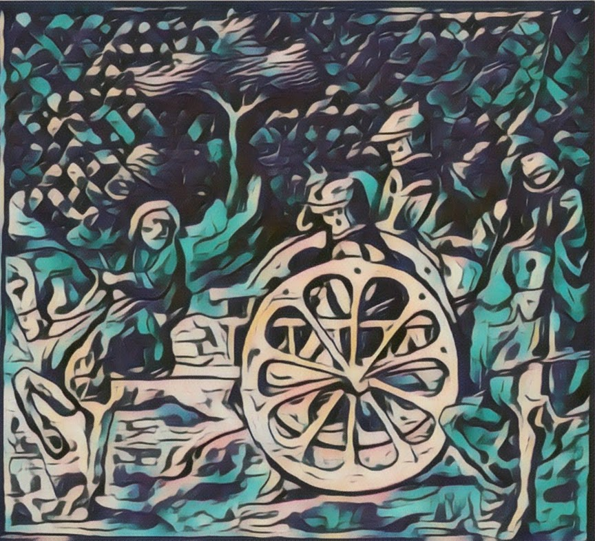
Lancelot dans la Charrette d'infamie
Si La Villemarqué a commis cette erreur de jugement, c’est peut-être parce que, soucieux d’attribuer une date la plus reculée possible à son chant, il avait identifié le roi du poème avec le roi Boudik que Clovis fit assassiner en 509 et que la référence à la charrette lui paraissait alors prématurée. Cela le conduit par ailleurs à ne pas nommer la ville où ces événements se déroulent. Cette symbolique du noir et du blanc rapproche un autre récit breton de l’univers mental brittonique : la
gwerz de Skolan
que nous examinerons plus loin.
(*) Dans le Barzhaz imprimé il s’agit de la grand’mère (
mamm gozh
) du héros, mais dans le carnet de collecte N°1 de La Villemarqué, p. 303, de sa mère (
mamm
) que la servante de la reine décrit comme une vieille femme habillée de blanc (
ur vaouezig kozh gwisket e kann
).
(**) Dans le roman
Le chevalier à la charrette
de Chrétien de Troyes (12ème s.), Lancelot se résout à monter dans une charrette de condamné conduite par un bouvier, signe d'opprobre à l'époque médiévale, dans le but de sauver sa dame : il perd son honneur et devient un paria selon le code de la chevalerie. Mais ce code courtois exige de lui un sacrifice, pour sa dame. Lancelot finit donc par monter dans la charrette, après une hésitation « de deux pas », révélant son caractère faillible. (Wikipédia)
III Les trois royaumes de Merlin
La quinzaine de textes que l’on trouvera en IIème partie de cet ouvrage permet d’explorer plus avant la correspondance entre données bretonnes et galloises anciennes. Dans deux d’entre eux, le
Chevalier du Kergoat
collecté par Yeun Ar Gow en 1939 et le conte populaire détaillé et complexe
Le Conte de Jozebig
, recueilli par Jef Philippe on trouve mention des
"trois royaumes de Merlin".
Il s’agit là d’une notion qui apparaît dans la littérature galloise ancienne, comme La Villemarqué le signale dans l'introduction à la comptine
"Les Séries"
dans le Barzhaz de 1845.
Les trois royaumes de Merzin paraissent correspondre à la troisième sphère mythologique des traditions galloises, celle de la béatitude. Il est remarquable en effet,
- d’une part, que ces traditions donnent le nom de
"tombeau de Merzin"
[1] au triple royaume de Loégrie (l’Angleterre), de Cambrie (le pays de Galles) et d’Alban (l’Écosse), qui forment l’Île de Bretagne ;
- d’une autre, que les Armoricains du sixième siècle faisaient de cette même île le séjour des âmes bienheureuses [2].
Le Merzin, auquel sont soumis les trois royaumes célestes dont il est ici question, n’est, on le sent bien, ni le barde guerrier de ce nom, ni le devin qui nous occuperont plus tard : je serais porté à voir en lui le
dieu
que les Gaulois adoraient comme l’inventeur de tous les arts, comme le génie du trafic, et que César, trompé par une similitude de nom [2] et d’attributs, identifie avec le
Mercurius
romain.
[1] "Klaz Merzin". (Myvyrian, Archives of Wales, t. II, p. 2.)
[2] Procope, de Bello gothico, liber IV, CXX).
On ne ferait sans doute pas exactement la même analyse de ce texte aujourd’hui (on traduirait plutôt
Clas Myrddin
par « Cloître de Merlin » …), mais l’idée d’un
dieu Merlin
séduit toujours certains auteurs : Jef Philippe évoque le Dagda irlandais et le Sucellos gaulois, Jean Brékilien le Cernunnos gaulois… Nous reviendrons sur cet aspect mythologique du Merlin breton.
Mentionnons enfin le lien qui existe entre la figure littéraire galloise d’
Yscolan
et un personnage de la tradition bretonne étudié à propos du chant du Barzhaz
Yannig Skolan
par
Donatien Laurent
.
Yscolan a sa place dans cet exposé parce qu’il est très proche de deux autres figures majeures de la littérature ancienne galloise : Taliésin et… Myrddin.
La tradition orale bretonne garde la trace indiscutable du débat gallois autour du
rejet de l'écrit
et le revenant breton Yannig Skolan - qui est avant tout un pénitent achevant son séjour au
purgatoire
-
a conservé quelques traits de son archétype gallois (couleur noire qui deviendra blanche, une fois qu’il aura été pardonné, enfer froid…). Yscolan a
‘noyé le livre’
; il expie ses fautes sur un pieu de pêcherie :
c’est un double de Myrddin-Lailoken.
On trouvera en annexe 7 un exposé plus détaillé de cette question sous le titre
La Gwerz de Skolan et le poème gallois d’Yscolan.
Cette appartenance à un univers mental celtique commun inclut d’ailleurs la composante
gaélique
de cet ensemble : Le poème gallois évoque un
homme sauvage
d'autant plus proche de son équivalent breton, qu'il semble intégrer, selon l'analyse de Donatien Laurent, le personnage irlandais de
Sweeney, l'homme-oiseau
exposé au supplice des vents au sommet des arbres. Or, c'est un aspect de Merlin que l'on reconnaît dans la tradition bretonne.
La capture de Merlin et sa rétention dans une cage sont dans plusieurs des contes cités dans le présent ouvrage un
préambule
. Le personnage surnaturel sera délivré par le fils du héros androgyne qui aura transgressé un interdit (vol de la clé de la cage détenue par sa mère) et, à titre de récompense, Merlin aidera celui-ci à triompher des épreuves initiatiques qui lui seront imposées avant de pouvoir épouser la princesse et devenir roi.
Certaines de ces épreuves soulignent l’étroite parenté entre les univers légendaires gallois et breton : Le capitaine Lixur est aux prises avec un sanglier fabuleux en qui on peut voir un avatar du
sanglier Twrch Trwyth
que
Culhwch
doit vaincre pour conquérir Olwen dans un conte fameux des Mabinogion (*) gallois que certains critiques datent du 11ème siècle.
(*) Contes épiques gallois dont la composition orale s’étale sur plusieurs siècles et qui furent mis par écrit au 13ème siècle.
Saint Efflam et le roi Arthur
On trouve sous la plume de La Villemarqué deux versions (Barzhaz et carnet 1) d’un même chant hagiographique, « Saint Efflam et le roi Arthur ». Elles ne se recoupent pas exactement et on ne peut pas affirmer que la première procède de la seconde. Cependant, les 2 récits présentent les mêmes épisodes : Mariage avec Enora, départ d'Efflam, rencontre d'Arthur, jaillissement de la source, le dragon est vaincu par Efflam/Arthur, arrivée d'Enora, vie commune et séparée des époux. La version du cahier est par la langue, le style et l'agencement des idées d'une qualité littéraire supérieure à celle du Barzhaz.
Claude Sterckx, maître d'enseignement à l'Université Libre de Bruxelles, souligne un fait très intéressant concernant les strophes 32 à 35 du chant du carnet 1 :(*)
Un “homme maudit” (
un den milliget
) poursuit en vain Honora dont le cheval est aidé par la Vierge Marie.
Quand il allait se saisir de la jeune femme, “son bras resta fixé à la porte (
e vrec'h war an nor stagas
). Ces passages font écho à deux épisodes des “Mabinogion” gallois : la poursuite de Rhiannon par Pwyll (dans ‘Pwyll, seigneur de Dyfed’) et la paralysie de Pryderi à la fontaine (dans ‘Manawydan, fils de Llyr’).On trouve sous la plume de La Villemarqué deux versions (Barzhaz et carnet 1) d’un même chant hagiographique, « Saint Efflam et le roi Arthur ». Elles ne se recoupent pas exactement et on ne peut pas affirmer que la première procède de la seconde. Cependant, les 2 récits présentent les mêmes épisodes : Mariage avec Enora, départ d'Efflam, rencontre d'Arthur, jaillissement de la source, le dragon est vaincu par Efflam/Arthur, arrivée d'Enora, vie commune et séparée des époux. La version du cahier est par la langue, le style et l'agencement des idées d'une qualité littéraire supérieure à celle du Barzhaz.
Claude Sterckx, maître d'enseignement à l'Université Libre de Bruxelles, souligne un fait très intéressant concernant les strophes 32 à 35 du chant du carnet 1 :
Un “homme maudit” (un den milliget) poursuit en vain Honora dont le cheval est aidé par la Vierge Marie.
Quand il allait se saisir de la jeune femme, “son bras resta fixé à la porte (e vrec'h war an nor stagas). Ces passages font écho à deux épisodes des “Mabinogion” gallois : la poursuite de Rhiannon par Pwyll (dans ‘Pwyll, seigneur de Dyfed’) et la paralysie de Pryderi à la fontaine (dans ‘Manawydan, fils de Llyr’).
(*) Contes épiques gallois dont la composition orale s’étale sur plusieurs siècles et qui furent mis par écrit au 13ème siècle.
Légende de saint Hervé
Ce n'est pas le seul témoignage de la survivance de la déesse gauloise des chevaux, Epona (Rhiannon), dans la tradition bretonne :
Rhiannon, renommée Riwanon, apparaît en rêve, 3 nuits de suite, en cavalière inaccessible, à Hyvarnion, avatar de Pwyll. Hyvarnion et Riwanon sont les parents de Saint Hervé.
De même, p, 280 de son carnet 1, La Villemarqué a noté le résumé d'un conte proche de Cendrillon, intitulé “Korrigan”, où l'héroïne échappe trois fois au prince “en montant sur son cheval blanc mystique et en disparaissant”.
Les pays de langue brittonique jusqu’au 12ème siècle comprenaient les royaumes de Gododdin et d’Ystrad-Clud (Strathclyde) au sud de l’Ecosse, les royaumes de Rheged et d’Elmet au nord de l’Angleterre, le Pays de Galles, la Cornouailles, le Devon (Plymouth) et la Basse-Bretagne à partit des 5ème et 6ème siècle quand les Brittons du sud émigrèrent en Armorique. Les traditions brittoniques les plus anciennes se rapportent au Vieux Nord (Yr Hen Ogledd) au nord du mur d’Hadrien : Y Gododdin, Canu Llyvarc’h Hen, poème de Taliesin. Elles diffusèrent vers le Pays de Galles à partir du 5ème siècle, quand un chef du nord vint en Gwynedd pour en chasser les Irlandais, puis vers la Bretagne. Les contacts culturels entre la Grande et la Petite Bretagne, y compris l’intercompréhension, subsistaient encore à l’époque de Geoffroy.
Nous donnons en annexes 2 et 3 deux textes, les
Dépouilles de l’abîme
et la
Robe de Dinogad
qui illustrent la réalité du domaine linguistique et culturel brittonique.
Le premier montre que le lien entre Arthur et Merlin, postulé par Geoffroy de Monmouth par d’autres auteurs, n’apparaît pas plus dans cet épitomé de l’univers mythique gallois que dans la tradition orale bretonne authentique.
Le second indique la correspondance qui existe entre une grande quantité de mots "cambriens" et de mots bretons modernes, en particulier les noms d'animaux.
On se rappelle qu’au début du §109 de
l’Histoire des Rois de Bretagne
, Geoffroy évoque le
« bruit qui a été fait autour du nom de Merlin ».
Il est significatif que Laurence Mathey-Maille qui traduit et commente ce texte dans la série "La roue aux livres" (1992) note à ce sujet :
Cette remarque tendrait à prouver
l'existence, à propos du personnage de Merlin, d'une
tradition
antérieure à Geoffroy
. Peut-être des contes oraux ou écrits circulaient-ils alors, qui évoquaient ce célèbre devin. » (Note 60, p.295).
Nous allons ci-après passer en revue quelques-uns des éléments récurrents dans les contes reproduits en IIème Partie. Il est sans doute bien difficile de désigner ceux d’entre eux qui peuvent se prévaloir d’une antiquité telle que Geoffroy en ait eu connaissance.
Le nom de « Merlin » est à coup sûr de ceux-là, selon nous.
D’autres épisodes de ces contes entrent-ils dans cette catégorie ?
La divination paradoxale
de l’homme sauvage (devinailles), sa
capture
qui exploite sa
gloutonnerie
, la
poursuite entrecoupée de métamorphoses
dans le récit de Taliesin dont le sort est lié à celui de Myrddin-Lailoken, etc. figurent en bonne place dans les récits gallois anciens, sous des formes différentes, il est vrai. La
contamination
par un répertoire de contes étrangers au monde celte peut brouiller les pistes.
Nous distinguerons parmi les caractéristiques de l’homme sauvage breton qui, d’ailleurs, ne porte pas toujours le nom de Merlin,
- celles qui ont trait à sa
capture
et aux circonstances qui précèdent ou suivent ladite capture
- et celles que l’on rencontre
plus rarement
et dont l’appartenance à la rhétorique celtique est moins assurée. Il s’agit le plus souvent de mythèmes tirés de l’
antiquité classique
, ou de l’inventaire des
contes européens ou universels
.
- Enfin, compte tenu du nom d’oiseau que porte notre prophète homme-sauvage, nous évoquerons une caractéristique inhérente au nom même du personnage : « Merlin l’homme-oiseau ».
Nous avons examiné au chapitre précédent les aspects de ce thème qui rapprochent les contes bretons des récits gallois. C’est essentiellement le désir d’utiliser à son profit le
don de clairvoyance et le savoir prophétique
de l’homme sauvage qui conduit un souverain à vouloir le capturer et à le maintenir en captivité.
Cet épisode est au centre des différents récits relatifs au Merlin breton, mais il y revêt tout une série de traits de caractère qui lui sont propres :
• L’homme sauvage, friand de victuailles et de vin, est
proche de l’animal
.
• Doué d’ubiquité :il apparaît partout où on l’invoque par une formule secrète.
• Il est également doué d'
omniscience
, en particulier il ne se laisse pas leurrer par les travestissements. Ses rires et ses larmes à contre-temps s’expliquent par la conscience qu’il a des réalités qui se cachent derrière les apparences. Dans ses
Contes bretons relatifs à la légende de Merlin
(p.349 -363), Emmanuel Philipot parle à ce sujet de
« devinailles »
, une divination paradoxale qui intrigue l’auditeur, jusqu’à ce que le conteur dévoile le mot de l’énigme.
• C'est le plus souvent une
vierge déguisée en homme
qui accomplit l’exploit de la capture de l’homme sauvage en attirant dans une cage la victime transie de froid et affamée, par un feu et de la nourriture en abondance.
• Elle a été choisie à l’issue d’une
épreuve
à laquelle
ses deux aînées
ont également été soumises, mais qu’elle seule a réussi à surmonter.
• Le travestissement de la chasseresse n’échappe pas à la sagacité de Merlin. Curieusement, dans plusieurs contes, Merlin déclare
savoir qu’il sera capturé par un androgyne
ou par une
vierge
et il lui arrive d’indiquer lui-même à sa poursuivante la marche à suivre. Ce trait le rapproche du Merlin de l’Estoire qui se laisse capturer par Viviane en lui livrant ses secrets.
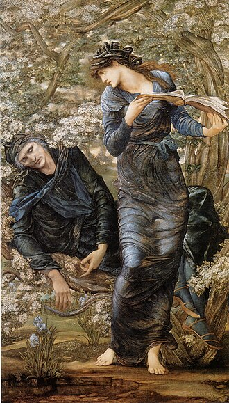
Merlin enchanté par Viviane
Edward Burne-Jones (1838-1898)
• L’héroïne qui réussira l’exploit de la capture, du fait qu’elle est déguisée en homme, est également souvent
courtisée par la reine
qui se sent, bien entendu, dédaignée et cherche à se venger en lui imposant des épreuves.
Dans bon nombre de contes Merlin qui a d’abord été présenté comme un être nuisible qui ruine les récoltes et pille les étables, devient dans une seconde partie un personnage positif quand il cesse d’être captif.
C'est un enfant,
le propre fils
de l’amazone victorieuse qui libère le prisonnier au mépris d’une interdiction qui punit de mort quiconque l’enfreint.
C’est pour récupérer un objet semi-magique, une boule d’or, qu’à l’incitation de Merlin, l’enfant commet une
transgression
: il vole à ses parents la clé de la cage.
En contrepartie Merlin accorde son
aide tutélaire
au jeune héros dans un parcours initiatique parsemé d'embuches, ce qui le rend sympathique, alors que le début de l’histoire en faisait un héros négatif. A la fin du parcours son protégé accède à la royauté.
Ces narrations bretonnes qui ne doivent rien à Geoffroy et ses épigones littéraires ne seraient-elles pas la tradition dont Mme Mathey-Maille a l’intuition ?
Elles autorisent à se distancer de l'attitude de Luzel, tout empreinte de ce positivisme soupçonneux qui le conduit à jeter le discrédit sur les plus belles pièces d’une autre collection, celle de Jean-Marie de Penguern :
La vieille Ahès, les Loups de la mer
...
Pour ne rien dire de celles du Barzhaz :
le Faucon, le Cygne
, etc., collectées dans une région, la Haute-Cornouaille, qu'il considère comme particulièrement pauvre en traditions orales.
Le fait que les thèmes les plus fréquents, ceux de la capture de l’homme sauvage et de la fille déguisée en homme courtisée par la reine soient très répandus – ils sont repérés sous les indicatifs AT502 et AT884A dans la classification Aarne-Thompson-Uther-, indique qu’ils ont été souvent réactivés par les conteurs. Il convient d’examiner s’ils ne sont pas l’écho de données bien plus anciennes.
C’est ce que fait Jef Philippe, en 1986, l’éditeur des contes
"Jozebig" et "Margodig an Dour Yen"
ci-après, qui n’hésite pas à faire des rapprochements entre ces contes et la mythologie celtique, telle qu’on peut l’appréhender à travers la littérature ancienne irlandaise et galloise. Il précise ainsi l’intuition de La Villemarqué qui évoque à propos de la figure protéiforme de Merlin, le dieu celte que César assimile à Mercure.
Jef Philippe propose de voir en Merlin un avatar du dieu irlandais
Dagda
, le "Bon dieu", le dieu-druide, maître des éléments, des sciences, de l'amitié, guerrier et mangeur vorace s'il en fût !
Le Dagda possède un
chaudron
magique et une
massue
qui tue d'un côté et qui ressuscite de l'autre.
Son équivalent gaulois,
Sucellus
, est, pensent certains, un dieu de vie et de mort. Son nom signifierait « bon frappeur » et il est représenté muni d'ustensiles semblables à ceux de Dagda, en particulier d’un
maillet
à deux têtes. Et, de fait, dans le conte Jozebig (chap.16) on rencontre aussi un
marteau
qui peut faire des miracles avec ses deux extrémités (ériger des palais d'or ou d'argent), mais c'est avec une
bombarde
que Jozebig
ramène les morts à la vie
, ce qui est pour le moins agir à la mode de Bretagne !
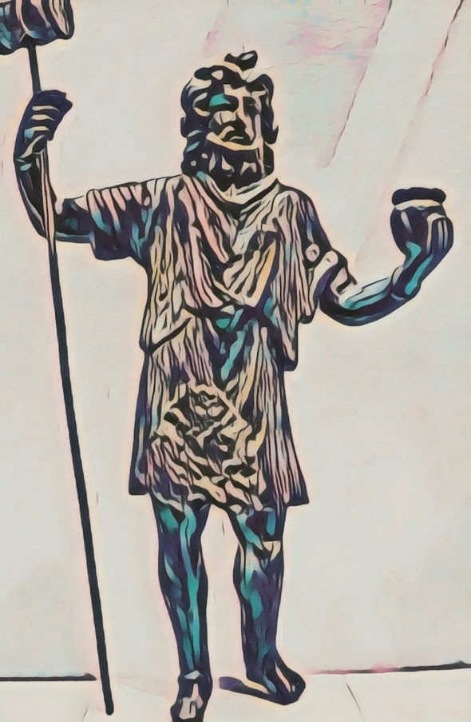
Sucellos, maillet et chaudron (Saint-Germain-en-Laye)
Dans notre langue l’instrument qui sert à assommer les bœufs s’appelle un merlin et le professeur Christian Guyonvarc’h connaissait l’usage, dans le Morbihan, d’un "maillet bénit " (
mell benniget
) « que l’on posait sur le front des mourants pour adoucir leur agonie et leur faciliter le passage dans l’autre monde. » On notera la proximité de
mell
et de
Melin
, forme de
Merlin
notée par Luzel et La Villemarqué.
On voit parfois dans Sucellus un dieu de l’ivresse, car son maillet est celui d’un tonnelier et qu’il est souvent représenté tenant un vase
(olla)
et le pied reposant sur un tonnelet. Une attestation épigraphique trouvée à Worms associe son nom à celui de
Sylvanus
, tutélaire des forêts. On n’est plus très éloigné de Silène dont nous parlerons plus loin.
L'illustration-titre de cette étude montre une des plaques qui constituent le
Chaudron de Gundestrup
dont le décor est au moins en partie d'inspiration celtique. On y voit ce qu'on croit être un dieu plongeant dans un chaudron de résurrection des fantassins qui deviennent des cavaliers. Un tel chaudron dispense l'inspiration poétique dans un sublime poème gallois
"Les Dépouilles de l'au-delà"
(cf. annexe 2).
Jef Philippe signale également dans le conte
Margodig à l’eau froide
le fait que le garçon était le "fils boiteux du roi" (dans "Hanes Taliesin », annexe 1, le héros
Afangddu
était le « plus vilain bonhomme au monde »). Pour être aimé et désigné comme roi à son tour, il lui fallait être débarrassé de son infirmité, ou si l'on veut anobli, épuré.
Il en est de même sans doute du bain commun et la lettre salvatrice qui confèrent une tonalité troublante au conte de
Fantig
de Christophe Jézégou (chap. 15).
C’est peut-être aussi à cette catégorie des réminiscences religieuses qu’appartiennent des éléments plus rares :
• Le nom inscrit sur le front de
Jozebig
(chap. 17),
• L’histoire des quatre garçons prodigieux (chap. 13,
La Fille du Marquis de Coatleguer
),
Les contes gallois des Mabinogion regorgent de tels personnages aux facultés surhumaines qui ressemblent fort à des allégories de phénomènes cosmiques naturels ou de qualités enviables.
Certains auteurs voient dans la grand-mère de Rafellig et son poulain enchanté ou la jument Thérèse de Coatalan, un avatar de la
Rhiannon
des Mabinogion qui n’est autre que la déesse gauloise des chevaux,
Epona
. Sous le nom de
Riwanon
, elle apparaît en rêve comme une cavalière inaccessible au père de saint Hervé.
3.5 La poursuite ponctuée de métamorphoses
Dans "Margot l'eau froide" (un prénom qui n'apparaît nulle part dans le récit), le rapprochement avec "Hanes Taliesin" (Histoire de Taliésin, texte gallois du 16ème siècle) s'impose, au point que le très sceptique Luzel lui-même ne peut s'empêcher de le signaler à propos d'un conte similaire collecté par Luzel, "Koadalan" (chap. 9) : la poursuite de Gwion Bach par Keridwen (cf. Annexes 1) préfigure les métamorphoses que les deux jeunes gens du conte breton mettent en œuvre pour échapper à leur poursuivant.
Ce thème est celui du chant « Magali » dans la « Mireille » de F. Mistral (Annexe 6).
Voilà un autre exemple de telles réminiscences. Le fin connaisseur de la "Matière de Bretagne", Jérémy Loysance, à qui ce livre doit tant de précieuses informations, est d'avis que les
trois Royaumes
des oies, des canards et des fourmis évoqués dans deux contes (
"Jozebig" et le "Chevalier du Kergoat"
) pourraient être une évocation des
éléments
distingués par
Empédocle
, au 5ème siècle avant notre ère. Cette hypothèse est corroborée par le fait que dans l'épilogue de Jozebig, le héros convoque non pas trois, mais quatre rois en actionnant quatre sifflets à la fois : le roi qui préside au feu n'est autre que Merlin.
Bien entendu, ces détails remarquables ne doivent pas faire oublier qu'à côté d'éléments qui évoquent le souvenir populaire d'un genre de "bon sorcier" et d'un "homme sauvage" assez semblable à Merlin, ces récits regorgent d'interférences et d'emprunts à d'autres contes qui brouillent les "traces du Merlin breton" (
roudoù Merlin e Breizh
) évoquées par Jef Philippe. C'est d'ailleurs le contraire qui serait étonnant ! (cf. Annexe 5)
• C'est ainsi que le
serpent à sept têtes
qui hante plusieurs de ces contes, rappelle immanquablement les
Travaux d'Hercule
de la mythologie gréco-latine ou la bête de l’Apocalypse.
•
Nettoyer une étable
qui ressemble fort aux
écuries d’Augias
est d’ailleurs, avec abattre une forêt et assécher un marais, un des trois exploits imposés au néophyte du conte
Margot l’eau froide
.
• Le thème du conte "l’Homme sauvage" a des correspondants à l’extérieur de l’univers brittonique : «
Silène
le satyre est fait prisonnier dans le fameux jardin des roses du roi Midas : le roi verse du vin dans une source à laquelle Silène avait coutume de boire.
• Dans la légende romaine du roi Numa, de grandes jarres d’hydromel et de vin sont mises dans un bois sacré à la disposition des demi-dieux
Picus et Faunus
qui se font prendre par leur gourmandise et révèlent au roi le secret qu’il voulait connaître, Car, dans les textes les plus anciens, la capture du
Satyre
est voulue, préméditée par le roi qui veut obtenir de lui la connaissance de certains secrets et des conseils de sagesse.»
Tel est le constat que fait le Professeur
Emmanuel Philipot
(1872-1950), en 1927, à l’issue une analyse détaillée (*) où il remet en cause le point de vue défendu par le Dr Foulon-Ménard à propos de son conte de Merlin en français. Ce dernier voulait y voir l’unique exemple d’un conte populaire de Merlin présentant la thématique arthurienne en
Haute-Bretagne
(traditionnellement francophone).
E. Philipot privilégie l’hypothèse d’une
provenance d’Europe orientale
des contes développant, comme le fait le conte de Foulon-Ménard, les trois thèmes :
la Fille travestie courtisée par la reine,
l’Homme sauvage et la Bête à sept têtes,
trois standards de la classification internationale des contes Aarne-Thompson-Uther : AT884A, AT502 et AT300.
• Nous verrons à l’Annexe 5 que d’autres thèmes plus tardifs qui sont les pendants exacts de ceux de la saga bretonne de Merlin se rencontrent dans des contes d’Europe et du reste du monde. C’est le cas en particulier du « Jean de Fer » des Frères Grimm, de l’Homme sauvage » de l’Italien Straparole et de l’Asmodée du Livre de Tobie et du Talmud.
(*) Philipot, Emmanuel, « Contes bretons relatifs à la légende de Merlin », in Mélanges bretons et celtiques offerts à M. J. Loth, membre de l’Institut, professeur au Collège de France, Rennes, Plihon et Hommay, 1927, p. 349-363.
Le nom « Merlinus » apparu sous la plume de Geoffroy de Monmouth est bien évidemment de consonnance française. Il fait immédiatement penser au « merle », l’oiseau chanteur par excellence. Pourtant rien dans les tribulations du Lailoken écossais, du Myrddin gallois ou du Merlin français ne laisse supposer que ce personnage avait une voix particulièrement mélodieuse.
Une autre énigme est celle de la localisation des lieux et lieux-dits que la tradition locale associe au fameux prophète.
Nous allons nous pencher sur ce double problème.
On remarquera que, pas plus dans les contes bretons que dans les documents authentiques exploités par La Villemarqué, l'homme sauvage ne s'appelle "Marzhin" !
Les contes populaires bretons n'expliquent pas le nom d'oiseau que porte ce personnage : soit celui du merle, soit celui de l'émerillon, toujours en usage, dans ce second sens, en anglais et en allemand. On notera cependant que le
lit de fer
où Merlin est enfermé ressemble, à la rigueur, à une cage à oiseaux. Et que, détail qui revient de façon assez régulière dans les diverses narrations, pour endormir ses soupçons lors de sa capture, le chasseur
fait s'envoler des oiseaux d'un arbre..
.
Par ailleurs, au fil des réécritures de la légende, le souvenir de ce caractère premier ne disparaît pas complètement : Le
Perceval
du manuscrit de Modène et Didot-Perceval, ainsi que le
"Méraugis de Port-Lesguez"
de Raoul de Haudenc (1170-1230) évoquent l'
Esplumoir Merlin
, où celui-ci dicte à Blaise l’histoire de la Bretagne et dans lequel on peut voir le lieu où l’Oiseau merveilleux perd ses plumes et effectue sa mue plus spirituelle que physique.
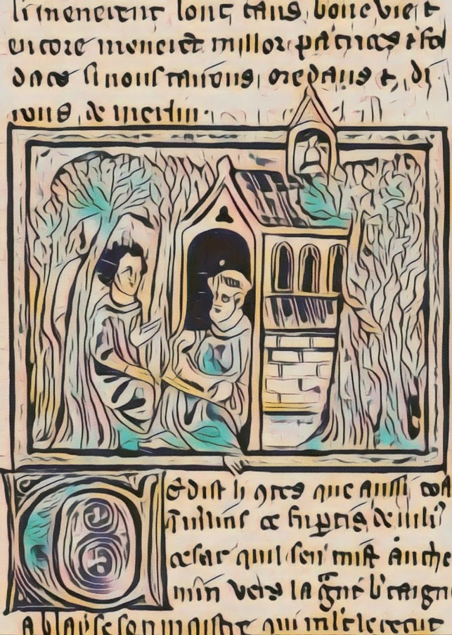
Esplumoir Merlin (BNF)
Il convient cependant de citer ici l'article
"Merlin"
du site "Etymonline" (anglais) qui assigne une date bien plus récente à l'apparition écrite du mot
"Merlin":
Espèce européenne de faucon robuste et de petite taille,
fin du 14e s.
, "merlioun" (peut-être début du 14e s.), de l'anglo-français (Anglo-French) "merilun", une forme abrégée de l'ancien français "esmerillon" "merlin, petit faucon" (12e s., français moderne
"émerillon"
), du franc "*smiril" ou d'une autre source germanique (comparez le vieux haut allemand "smerlo", et l'allemand "Schmerl"). L'espagnol "esmerejon", l'italien "smeriglio" sont également des mots empruntés au germanique. L'Oxford English Dictionary écarte tout lien avec le latin merula « merle ».
Les dictionnaires français ne connaissent pas ce sens du mot "merlin" que la référence à l'"Esplumoir" semble impliquer. Il resterait donc à expliquer pourquoi, dans un conte breton ou gallois, un homme-oiseau / homme-sauvage porte un nom anglo-français qui ne fut, semble-t-il, jamais en usage avec cette signification, sur le continent.
L’abondance de références traditionnelles à Merlin en Haute et Basse Bretagne autorise à supposer que le nom roman de Merlin ait pu être l’adaptation d’un
nom celtique plus ancien
dont les appellations relevées par Luzel seraient issues :
Murlu, Urlu, Erlinn, Merlig
(*) … Comme on l’a dit, Luzel qui n’admet qu'avec réticence la rémanence du personnage de Merlin dans l'imaginaire collectif breton, semble être l’auteur qui en fournit le plus de preuves. Ce qui n'empêche qu’il ne reconnaît pas toujours d’emblée l’équivalence de ces dénominations.
Hervé Le Bihan, professeur de breton et celtique, Université Rennes 2 – Centre de Recherche Bretonne et Celtique. propose de voir dans
Merlin
un surnom :
• Le
suffixe
-in
que l’on y trouve montrerait un qualificatif (selon L. Fleuriot dans « Yscolan », p. 156, qui rapproche ce nom de
mirzin
, « délicat ». Le suffixe -in vient d’un ancien *-īnyos, largement utilisé pour former des adjectifs, cf.
mibin
« agile » de mab « enfant ; fils »). À cette liste il faudrait aussi ajouter
Taliesin
, non pas le Taliesin qui fut le barde officiel des rois Cynan Garwyn, Urien et Owen au VIe siècle, mais celui que l’on dénomme le plus souvent le
pseudo-Taliesin
: personnage qui a hérité de la célébrité du Taliesin historique et à qui on a attribué un certain nombre de poèmes et de récits légendaires (selon Ifor Williams,
Canu Taliesin
, Caerdydd [Cardiff], 1960). » (**)
• La forme
« Aerlin »
citée par Luzel témoigne de l’influence du mot breton
« naer »
(
serpent
) sur «
Merlin
». Cet animal est évoqué dans l’histoire : «
Un aerlin a zo ur serpant bras gant ur c’horn war e benn,
» « l’Aerlin est un grand serpent doté d’une corne sur la tête ».
Si, en dépit de l’Esplumoir qui évoque la fauconnerie, le
merle
était l’animal éponyme de l’homme sauvage, le nom breton de cet oiseau (
Moualc’h
), aussi bien que le mot
Merle
lui-même, pourrait être à l’origine de la dénomination
Merlin
devenue universelle.
(*) Curieusement Luzel ne rapproche pas ‘Murlu’, etc. de ‘Merlin’ !
(**) Hervé Le Bihan, La figure du Merlin des Bretons : des Afallenau gallois aux contes bretons armoricains, p. 183-193.
Assigner à l'homme sauvage armoricain une ancienneté au moins égale à celle des écrits de Geoffroy de Monmouth et supposer que celui-ci le connaissait sous le nom de
"Merlin"
, permet d'éviter la peu vraisemblable hypothèse, défendue par le médiéviste Gaston Paris, d'une transformation par cet auteur d'un hypothétique
"Merdinus"
(équivalent du gallois
"Myrddin"
) en
"Merlinus"
, pour ne pas offusquer les oreilles sensibles !
Cette hypothèse est mise en doute par M. E. Brugger (cité par E. Philipot) dans « l’Enserrement Merlin » : « Si Geoffroy s’était laissé guidé simplement par son oreille, il eût abouti à ‘Merzinus’ ou ‘Mirzinus’. avec un z, tout autre consonne étant arbitraire ou analogique. Aurait-il subi l’influence d’un ‘Merlin’ populaire, d’origine continentale, dont il connaissait déjà la légende au moment où il composait sa grande pseudo-histoire ? ...La question n’est pas chimérique. »
M. Jérémy Loysance - dont le nom a été cité à plusieurs reprises dans cet ouvrage - suggère en outre que le lien de Merlin avec les oiseaux pourrait être le reflet de la
généalogie divine
évoquée plus haut. Plusieurs dieux que connaît la littérature celte se transforment en oiseaux. Dans la littérature arthurienne comme dans les contes bretons,
Merlin change souvent d’apparence
: moine, vieillard, enfant…
5.5 Le rite de la chasse au roitelet
Ce qui est indubitable, c'est le lien qui existe entre le Merlin des contes et le
roitelet
de la chanson d'enfant. L'interférence entre la saga bretonne de Merlin et le rite printanier de capture d'un roitelet est envisagée à une échelle européenne sur le
site de Mme
Cattia Salto
.
On y apprend que la "
Chasse au roitelet
" est un
rite panceltique
particulièrement en honneur dans le sud-ouest de l'Irlande. Le roitelet y serait le symbole de
Lug
, fils de la lumière triomphante et son sacrifice, lors du solstice d'hiver, un tribut sanglant, tant propitiatoire à l'adresse des esprits chtoniens, que bénéfique pour le soleil printanier, censé tirer un regain d'énergie du sang versé de son oiseau-emblème. La mort du roitelet et le partage de ses plumes étaient gages de santé et de bonheur pour les paysans. Aujourd'hui encore les
"Hommes-roitelets" (Wren-boys)
, vêtus de haillons et le visage peint ou masqué, vont de maison en maison, chantant la chanson du roitelet, accompagnés par des instruments traditionnels divers.
Dans son
"Rameau d'or"
(inventaire planétaire des mythes et rites en 12 volumes), l'anthropologue écossais
James George Frazer
(1854-1941) mentionne le fait que, bien que cette tradition ait aujourd'hui disparu des campagnes françaises, au 19ème siècle encore, celui qui parvenait à attraper le premier un roitelet était nommé
"roi"
.
La chanson bretonne
"Mort du roitelet"
apparaît dès lors, non pas comme une chanson enfantine, mais comme un
chant rituel
. Et on explique ainsi du même coup le nom français inattendu de cet oiseau.
La Haute et la Basse-Bretagne se disputent l’honneur d’avoir d’avoir abrité le
berceau
ou de conserver la
tombe
de Merlin.
Quelques monuments littéraires bretons célèbrent le
prophète
, tandis qu’un mystérieux poème publié par La Villemarqué en fait le fils d’un
esprit-oiseau
et lui impose le nom "Marzhin".
On serait bien en peine de discerner dans les deux cas s’il s’agit du personnage littéraire ou de la figure traditionnelle.
Le conte collecté par le Dr Joseph Foulon-Ménard en 1878
(Cf. chap. 13)
montre que la
zone d’extension de la narration
que nous examinons
s’étend à la Haute-Bretagne
et aux parlers romans.
Si la forêt de Paimpont - dite de «
Brocéliande
» - sert de décor à certains épisodes de la saga du Merlin des livres, elle abrite des
monuments naturels
portant des noms qui évoquent le fameux enchanteur. Il s’agit sans doute souvent de réminiscences littéraires montées en épingle par le romantisme du 19ème siècle, puis par le tourisme des siècles suivants. Mais peut-être a-t-on aussi parfois affaire à d’authentiques traditions anciennes :
Le
Tombeau de Merlin
, trois dalles en schiste rouge, au nord-est de la forêt, à Saint-Malon-sur-Mel, seuls restes d’une allée couverte détruite au XIXème siècle, mais vieille de plus de 5000 ans !
Une biographie datant de 1429 relate des mouvements de troupe, en Forêt de Brocéliande, « près de la
Croix de Malchast
ou Merlin faisait des merveilles ».
En matière de lieux-dits merlinesques la Bretagne bretonnante n’est pas moins fertile:
Dans la
Grotte de Merlin
à Quillio en Côtes d’Armor, le pauvre homme sauvage dormait dans une barrique.
Il y avait une autre
Grotte de Merlin
, un mégalithe, au Mont Dol, au nord de Dol en Haute-Bretagne.
Cette porosité des traditions entre domaines linguistiques contigus pourrait expliquer le paradoxe du nom français attribué à un prophète celte.
Mais c’est à l’Île de Sein que le nom de Merlin est particulièrement attaché. Un
site Internet
consacré à cette île dresse une longue liste de légendes locales qui visent à s’approprier ce mystérieux personnage.
Etienne Forcadel
(1518-1579), jurisconsulte, dans son Histoire de la Gaule,
De Gallorum imperio et Philosophia
(Paris, G. Chaudière, 1579), prétend que « Merlin, cet enchanteur si célèbre dans les romans de chevalerie,
est né dans l’île de Sein
. »
J. Albin Simon Collin de Plancy
dans son
Dictionnaire infernal
, en 1826, réécrit l’histoire de Vortigern et Ambroise-Merlin en la localisant à Sein :
On apprit qu’il venait de naître dans l’île de Sein un petit enfant qui était né d’une druidesse et qui n’avait point de père maternel ; c’était Merlin ; II présentait les qualités requises par les magiciens ; on l’enleva adroitement et on l’amena devant le roi Vortigern. Merlin n’avait que seize jours…
Arrivé en fin de carrière, le prophète revient dans son pays natal où il ne se contente pas de prophétiser :
Las de parcourir le monde, il se condamna à passer
sept ans dans l’île de Sein
. C’est là qu’il composa ses admirables
prophéties
, dont quelques-unes ont été publiées. On sait qu’il avait donné à l’un des chevaliers errants, qui firent la gloire de la France, une épée enchantée avec laquelle on était invincible ; un autre avait reçu un
cheval
indomptable à la course. Le sage enchanteur avait aussi composé pour le roi Arthus une
chambre magique
où ne pouvaient entrer que les braves amants et les amantes fidèles ; une
couronne
transparente qui se troublait sur la tête d’une coquette et une
épée
qui jetait des
étincelles
dans les mains des guerriers intrépides.
Concernant cette omniprésence de l’appellatif "français" dans la tradition basse-bretonne, ce qui était vrai au 19ème siècle l'était, naturellement, encore davantage en 1732, année de parution du Dictionnaire franco-breton du
Père Grégoire de Rostrenen
(1667-1750). De fait, à la page 618 de cet ouvrage, on trouve un article "Merlin", ainsi qu'à la page 481, un article consacré à un autre prophète breton,
"Guinclan"
.
Les rapports de ces personnages avec le légendaire Arthur ne sont pas mentionnés et l'infortuné roi ne figure nulle part dans le dictionnaire, preuve, peut-être, d'une moindre popularité.
On notera que, dans son article bilingue, Grégoire fait de Merlin
"un prophète ou un sorcier de Grande-Bretagne qui vivait vers la fin du 5ème siècle" (
profed pe sorser ginidik a Vreizh-Veur a veve e-tro 480 ghSJK
) (*). Il est appelé
‘Ambroise Merlin’
."
Ce nom double apparaît, on le sait, dans l'
Histoire des rois de Bretagne
de Geoffroy de Monmouth vers 1135 et il est repris par des chroniqueurs tels qu'
Alain de Lille
(1128-1202) ou
Aubry de Trois-Fontaines
, actif entre 1227 et 1241.
Le Père Grégoire connaissait également le
prophète Guinclan
, mais il ne l’assimilait pas à Ambroise-Merlin. A l'article "Guinclan", page 480 de son dictionnaire qui comporte plusieurs noms propres, on lit :
"Guinclan, prophète breton, ou plutôt astrologue qui vivait dans le 3ème siècle, [et] dont j'ai vu les prédictions en rimes bretonnes à l'abbaye de Landévennec entre les mains du R.P. Dom Louis Le Pelletier, était natif de la comté de Goélo en Bretagne Armorique et prédit aux environs de l'an de grâce 240, (comme il le dit lui-même), ce qui est arrivé depuis dans les deux Bretagnes [dans la traduction bretonne de l’article : 'en Armorique et en Grande Bretagne’]".
Il corrigera la date dans sa Grammaire Celto-Bretonne (1738) :
"…au mot Guinclan dont j'ai marqué les prédictions à l'an 240, au lieu qu'il faut mettre 450."
Il se trompait encore de 1000 ans! En 1924, Francis Gourvil découvrit la fameuse prophétie intitulée
"Dialog etre Arzur, Roe an Bretounet ha Gwynglaff"
(Dialogue entre Arthur, roi des Bretons et Guinclan), suivi des mots
"L'an de Notre Seigneur Mil quatre cent et cinquante"
(1450).
Ce qui montre que le père Grégoire tenait à compléter ce qu'il savait des traditions orales par des indications tirées de sources littéraires, même si les secondes s'écartaient de beaucoup des premières.
En 1837, on put constater que cette double-appellation est bien plus ancienne. Cette année-là, le secrétaire de l’évêque de Quimper, l’abbé Marzin (cela ne s’invente pas !) apprit, lors d’une visite pastorale dans la paroisse de Dirinon, près de Landerneau, l’existence d’un ancien manuscrit contenant un poème en langue bretonne :
"Buhez Santez Nonn", La vie de Saint Nonne, mère de Saint Devy (David)
. La presse confondit cette précieuse relique avec la "Prophétie de Gwynglaff", recherchée en même temps par le jeune La Villemarqué et par l'Inspecteur général dans l'administration des Beaux-arts, Prosper Mérimée, ce qui suscita une vive polémique entre ces deux personnages.
Pour en revenir à sainte Nonne, le texte en moyen-breton était, selon l’indication de l’éditeur de l’époque, l’abbé Sionnet, aidé pour la traduction par le grammairien Le Gonidec, « un "mystère" composé en langue bretonne antérieurement au 12ème s. ». Cette datation, qui n’est pas remise en cause par la fiche Wikipédia consacrée à ce texte, est celle de la langue, non celle du manuscrit qui remonte au 16ème siècle (Bibliothèque nationale de France, ms. celt.basq. 5). Ce
mystère
serait donc contemporain des premiers écrits de Geoffroy de Monmouth (1135, 1148), ainsi que des poèmes de Myrddin que l’on date ordinairement du 12ème siècle.
Un personnage intervient au début de l’histoire pour prédire le plus bel avenir possible à l’enfant qui naîtra du viol de la malheureuse sainte par le roi Keretic : saint Devy ou David, patron du Pays de Galles. Voici en quels termes :
Me eo MerLIN, am-eus vatiSINet :
Ur mab biHAN a deuy da vout GANet,
santel meurBET e bro VRETon,
den leun a GRAS, dre sPAS e preLASaj.
Bara ha DOUR evit e saOURaj
ne vezo muY e holl refekSIon.
Evel ma’z deuY da bredikaSIon,
eno e MAMM diNAMM gant estLAMM don
ne c’hallo SON ranDONiñ ‘r sarMONer.
’balamour REIZH d‘ar vuHEZ aNEZHañ
a vezo eVEL pep kenTEL sanTELlañ.
Ma’z gomzo SKAÑV, ne hallo renTAÑ gwer
Goude, serTEZ, kourTEZH ez esPRESer
buhez ha STAD ar mab MAT hep ADfer
pa deuy seDER e bro VretoNERi.
da pep KrisTEN birviKEN: ha TEÑsor
ha kalz a JOA deuyo dre e FAvor
ha kalz eNOR da gosKOR ArVORig.
(Orthographe modernisée)
C'est moi, MERLIN, qui ai prédit
qu’il naîtra un petit enfant,
qui sera très saint dans le pays des Bretons,
un homme plein de grâce, qui sera prélat
.
Du pain et de l'eau, c'est tout ce qu'il prendra
pour se nourrir et pour se régaler.
Lorsqu’ira à la prédication
sa mère pure, frappé de stupéfaction
le prédicateur ne pourra dire un mot,
à cause de la vie réglée de cet enfant,
qui sera saint par-dessus tout.
Voudra-t-il parler, il ne pourra dire mot
Quoiqu’on ait fait fi de la bienséance,
la vie et l’état de son bon fils sont purs.
Quand il viendra un jour en Bretagne,
il sera un trésor pour tous les chrétiens;
par sa faveur il surviendra beaucoup de joie,
et d’honneur à la nation armoricaine.
(D’après la traduction de Le Gonidec)
Ce qui frappe en premier lieu, c’est le système de rimes internes où une, souvent deux syllabes d’appui sont déterminées par l’avant-dernière syllabe d’un vers. Ce système se superpose à celui des rimes finales … mamm dinamm gant estlamm don ; …son randoniñ ‘r sarmoner…)
On remarque que le moyen breton emprunte volontiers au français : vaticiner, grâce, espace, prélat, saveur, réfection (=alimentation), prédication, sermonneur… et Merlin!
La correspondance des rimes internes "MerLIN – vatiSINet" confirme la prononciation indiquée par Luzel :
"Merlinn"
. Elle suggère aussi qu’à
vatisinet
devrait correspondre un
MerSIN ou MerZIN
et que le rédacteur a peut-être hésité entre un mot rare qu’il connaissait
(Merzin)
et celui
que l’usage avait déjà imposé à cette époque
reculée :
Merlin
. D’autant que ce vers fait écho dans
Armes Prydein Vawr
, la « Prophétie de Grande Bretagne » de 940, à la formule galloise
Dysdogan MyrDIN
…, « Myrddin prédit… ».
La coexistence de Myrddin et Merlin
, le premier issu d’une étymologie populaire, le second surdéterminé par l’assimilation du personnage à un oiseau, serait illustrée par ce texte.
On est dès lors en droit de penser que c’est bien
"Merlin"
et non
"Myrddin"
que Geoffroy de Monmouth transcrivit en latin sous la forme
"Merlinus"
.
Quant au nom de
Marzhin
que La Villemarqué utilise dans la partie bretonne de ses textes à compter de la 2ème édition du Barzhaz (1845 ; dans les 2 parties publiées en 1839, il s'agissait encore de
Merlin
), il visait à coup sûr à rapprocher le texte breton du gallois
"Myrddin"
. Il pouvait aussi être motivé par la présence de ce nom dans certaines versions de Basse-Cornouaille des
"Vêpres des grenouilles"
, article 3 : On le trouve en effet sous la forme explicite
"Varzin"
(Versions
"Brizeux -Bzg" et "Scaër 2-Sk2"
, peut-être par rétro-influence du Barzhaz: cf.
Ar Rannoù
), ou sous une forme composée
teir
(=3)
"gentifarinn", "gentefarzinn", "zatefarin" et "zadefarin"
, peut-être équivalente à
"kentel Varzhin"
, "leçon de Marzhin" (versions de Scaër et de St-Urien -
"Sk2, Sk3, StU1 et StU2"
).
De plus, le poème du
Merveilleux au moyen-âge
de 1858, puis du
Barzhaz-Breizh
de 1867,
Merlin au berceau
(cf. Annexe 4),
ne cite jamais le nom de l’intéressé
.
Mais ce nouveau-né (*) a des dons d'élocution extraordinaires. Il prend la défense de son père, dont il annonce qu'il sera le bon génie de la nation bretonne. Du coup la jeune mère s'écrie « Quel prodige
(marzh)
s’il n’en fut jamais ! », donnant ainsi un nom à l’enfant :
Marzhin
.
On ne sait trop quel statut accorder à cette pièce : est-ce une berceuse de nourrice authentique ou ce beau poème est-il le fruit de l’imagination et du talent poétique du collecteur?
La forme
Marzhin
existait réellement dans l'onomastique bretonne du haut Moyen Age et l'on trouve un
Merthin-hoiarn
et un
Merthin-haël
dans le cartulaire de Redon, même si la tradition orale et le dictionnaire du père Grégoire ne connaissent, pour désigner le héros légendaire que
Merlin
ou des formes dérivées.
Marzin
est un nom de famille répandu en Bretagne. Il semble être d'avantage le pendant du français
Martin
que celui du Gallois
Myrddin
(**).
(*) Marzhin a 4 mois car, dans la 1ère strophe de la berceuse, la jeune mère se plaint :
« Bremañ trizek miz ha teir sun/ Dindan ar c’hoad e oan e hun »
(Cela fait 13 mois et 3 semaines que sous le bois j’étais endormie…)
(**) Le Cartulaire de l’abbaye St Sauveur de Redon datant de 854 mentionne également un Lalogan identique au gallois Llallogan, première forme de Lailoken.
Les prophéties de Merlin publiées par
Geoffroy
et celles véhiculées par les
prophètes populaires
bretons diffèrent par leur objet, leur nature et leurs conséquences. Elles achèvent de compliquer l’écheveau que la littérature et la tradition orale a tissé autour de ce personnage. Vouloir le cerner de façon définitive semble aussi impossible que la
quadrature de la Table ronde.
Toutes ces prophéties bretonnes
ont un air de famille
. Bien qu'elles visent en général des aires géographiques restreintes (Guingamp pour le "Dialogue entre Gwynglaff et le roi Arthur", Brest pour celles de l'abbé Guillerm, Priziac et Langonnet chez Loeiz Philip et Philip Norman, le Trégor chez Guinclan-Gwenc'hlan, l'ouest de Vannes chez le roi Etienne), elles semblent tirer une bonne partie de leur substance commune d'un fonds de
formules
, dont certaines sont devenues des proverbes collectés par
L.F. Sauvé et Hippolyte Raison Du Cleuziou.
Les
thèmes qu'elles abordent
sont d'une étonnante modernité : triomphe de l'athéisme et de l'amoralité, confusion des sexes et des âges, dérèglement climatique et confusion des saisons, pollution du globe, épuisement des ressources naturelles, méfaits du désenclavement... On observera cependant que chaque époque peut y voir un miroir de ses propres préoccupations et qu'en 1891, le folkloriste l'
abbé Guilloux
faisait une tout autre lecture que nous des vaticinations du roi Etienne!
Les préoccupations
écologiques
et la méfiance à l’égard du
désenclavement
sont au centre de deux étranges poèmes collectés par
De Penguern
, "
le Vieillard aveugle" et la "Vieille Ahès"
, que l'on doit, assurent certains, au seul talent créatif de son secrétaire, Guillaume Kerambrun. Compte tenu de ce qui précède, on peut soutenir que, si ces magnifiques morceaux d'anthologie ont certainement bénéficié du savoir-faire littéraire de leur collecteur, ils procèdent d'un matériau de base dont le caractère populaire authentique ne fait guère de doute.
La Villemarqué consacre tout le Livre II de son
Myrdhinn
(1861) aux Prophéties de Merlin rapportées par Geoffroy de Monmouth. Il distingue celles qui ont trait au Pays de Galles, de celles qui portent sur la Cornouailles et l’Ecosse et de celles qui concernent l’Armorique. Elles couvrent une période allant de Hastings (1066) jusqu’au règne du duc Arthur III de Bretagne (1393-1458), le compagnon d’armes de Jeanne d’Arc.
A propos de
Hastings
, La Villemarqué cite, tirés de l’ouvrage de William Jenkins Reeds, ”Lives of the Cambro-British saints”, des vers composés six ou sept siècles plus tôt par des moines gallois :
Dives provincia ! Victoriosa !
Potens in armis ! Victrix Letavia !
Nulla potentior in laude bellica !
Sumpsit originem a matre britannica
Erudita fuit a matre filia
Sequitur natam tota victoria !
Britanni principes vigore pleni;
Nobiles duces, sed nobilissimi
Quondam haeredos, postem exhaeredati
Amiserunt propria, ut alieni.
O la noble contrée, à qui va la victoire !
Victorieuse Armorique à l’impérieuse épée !
Par les bardes guerriers nulle n’est plus chantée
Tu dois ton origine à ta mère bretonne
Elle t’instruisit bien :
la victoire te suit.
Car les princes bretons sont une race hardie
De nobles chefs issus de plus nobles encor.
Maîtres dépossédés jadis de leur patrie
Eux qu’on eût dit chez eux étrangers du dehors.
Ce texte semble illustrer la préoccupation de Geoffroy qui plaide la cause des Bretons auprès des conquérants normands contre celle des Anglo-Saxons. Les dédicaces de l’Historia (HRB) varient d’un manuscrit à l’autre, mais les personnages cités ont en commun leur origine normande : Etienne Ier, Robert de Gloucester, Galeran de Meulan, comte de Leicester. La Villemarqué écrit que Geoffroy
”…flattait ainsi l’orgueil des Normands de se voir appelés par Merlin les justiciers de la Providence. Les barons du royaume désiraient connaître ces prophéties auxquelles les bardes et le peuple gallois attachaient tant d’importance. Princes, prélats et nobles, divisés sur les questions de légitimité entre le roi Etienne et la reine Mathilde s’inclinaient devant l’autorité de Merlin. ”
La Villemarqué examine en détail l’influence historique, politique et littéraire des Prophéties. C’est ainsi qu’on apprend que
Jeanne d’Arc
fut victime lors de son procès de l’interprétation que l’on fit des prophéties 31 à 34 :
” (Prophétie 31)
...trois fontaines jailliront, dont les ruisseaux diviseront l’Île en trois parties. Deux de ces ruisseaux donnent la mort lente ou foudroyante et le troisième la vie éternelle. Les hommes s’efforceront en vain de tarir les deux sources malfaisantes. (Prophétie 32) Alors du
bois chenu
sortira une
vierge
qui arrêtera le fléau. Après avoir essayé tous les autres artifices, assèchera de son souffle les sources nocives
« quae ut omnes artes injerit, solo anhelitu suo fontes nocuos siccabit ».
(Prophétie 33)
Elle portera dans une main la forêt de Calédonie, dans l’autre la Tour de Londres... ”
Dans la phrase latine, on avait remplacé
artes
par
arces
, citadelles. Et on prétendait que le « bois chenu » était en Lorraine :
”Jeanne savait que des prédictions sur son compte circulaient. Elle déclara à ses juges
« Je ne crois pas aux prophéties de Merlin »
. Le théologien Alain de Lille (confondant Lille avec l’île de Bretagne) avait prévu la terreur qu’inspirerait la vierge du bois chenu et recommandé de la punir avec la plus grande sévérité, comme on le fit de son temps pour une sorcière de Lille, favorable aux Normands, car
« cette fille aura le pouvoir des sorcières qui affolent les hommes ou les tuent. »
Le commentateur au procès du prophète breton voyait dans le roi Henri VI le
« cerf dix cors qui tuerait la pucelle »
, au dire de la prophétie 34. ”
De telles arrière-pensées d’ordre politique sont absentes des prophéties de la tradition orale bretonne
(Cf. https://books.openedition.org/pur/19855?lang=fr).
2.2 Les prophéties de Gwynglaff
"La première moitié du XVème siècle a connu de nombreux prophètes comme en témoignent les procès de Jeanne d'Arc (1430-1431) et de Gilles de Rais (1440). Ils recouraient à un répertoire de lieux communs, usaient de tours apocalyptiques et évoquaient, entre autres, des phénomènes naturels ainsi que la dépravation et les malheurs du Clergé après le Schisme d'occident de 1378-1417 qui prolonge l'installation de la papauté en Avignon en 1309. On en trouve la peinture dans le Roman de la Rose. Ce
"chant royal"
(
Chant royal
est le nom donné à ce type de dialogue dont le titre complet est
"An dialog etre Arzur Roe d'an Bretounet ha Guynglaff"
, )
n'appartient donc pas à la poésie populaire
, mais est le fait d'un clerc qui use d'une rhétorique littéraire en vogue en 1450."
Selon Tourneur-Aumont, ce poème s'inscrit dans la préparation littéraire de l'expédition franco-bretonne en Normandie (août 1449 - août 1450) à l'initiative du roi Charles VII. Elle était commandée par le Duc François Ier et son oncle le comte de Richemont, Arthur de Bretagne...
Ce texte moyen breton
présente des liens étroits avec une tradition populaire orale de prophétie
dont ce chant royal, structuré en refrains et couplets, suivant des modèles français tels que
l'Art de dicter et de faire des ballades et chants royaux
(1392), constitue la
première apparition écrite.
Et, de fait, l’
introduction du chant
nous rapproche de notre propos : Elle nous montre le roi Arthur qui
s’empare de Guinclan
, présenté comme un
homme sauvage
, en tout point conforme au personnage du poème
Afallenau
ou au Lailoken séquestré par le roi Rhydderch, pour le forcer à rendre ses oracles:
Moyen-Breton
Dre Gracz Doe ez veze.
N'en devoe ezdre voe en beth
Nemet an delyou glas.
N'en devoe quen goasquet.
An rese en beve
N'en-devoe quen boet.
Didan un capel guel ez voe,
Noz ha dez en e buhez en beth.
Digant Doe en devoe e gloar en eff,
Ha ne manque quet.
Dre Graçç Doe ez gouuie,
Doediguez flam an amser
divin illuminet.
An Roe Arzur en ampoignas da sul,
Pan savas an heaul un mintin mat,
Ha dre cautel ha soutildet
Ez tizas e dorn, hac e quemeret.
Maz goulennas outaff hep si:
Refrain
En hanu Doe; me hoz supply,
D'an Roe Arzur ez liviry
Pebez sinou e Breiz
a coezo glan
Quent finvez an bet man,
Na pebez feiz, lavar aman:
Pe me az laquay e drouc saouzan.
Guynglaff
Couplet
Me a lavar dit a-deffry,
Quement a crenn a goulenny,
Diouziff a gouvezy,
nemet da maru ha ma hany.
Français
S'il vivait, c'était grâce à Dieu.
Il n'eut pendant qu'il fut au monde
Que feuilles vertes contre l'onde,
Comme unique abri sous les cieux.
Semblable aux bêtes des forêts
Il mangeait les baies et les pousses.
C'est couvert d'une cape rousse
Qu'il vécut sur terre caché;
Mais eut de Dieu sa gloire au Ciel
Qui le pourvut abondamment:
Par la grâce de l'Eternel,
Il voyait la venue du temps
Manifestée divinement.
Or, un matin, Arthur le roi,
C'était un dimanche, je crois,
Par ruse s'empara de lui.
Il chercha sa main et la prit.
Lui disant:
Refrain
" Je t'en prie, dis-moi,
Je te prie de dire à ton roi,
Quels événements, quels prodiges
Le Ciel à la Bretagne inflige
Avant que ce monde ait pris fin.
Et à quoi croira-t-on demain?
Dis, ou je te mets mal à l'aise..."
Guinclan
Couplet
Pourquoi, grand Dieu, te mentirai-je?
Demande-moi, tu sauras tout:
Tu sauras tout, quoi qu'il advienne,
Excepté ta mort et la mienne.
Une
étude de Jean-Christophe Cassard
, intitulée "Nul n’est prophète en son pays! Ou les tribulations de Merlin en Armorique" renouvelle et prolonge les travaux de La Villemarqué dans son
Myrdhinn
. Elle examine l’influence des Prophéties de Merlin (de Geoffroy) sur l’histoire de l’Angleterre, de la France et de la Bretagne : Combat des Trente (1351), prise de Trogoff (1360), procès de Jeanne D’Arc (1429), procès en réhabilitation (1456) …
Contrairement à Arthur, Merlin n’a pas vu sa popularité auprès du peuple affectée par cette mobilisation posthume.
En revanche les humanistes et les politiques l’ignorent à partir du règne de François II.
L’influence des Prophéties sur les vaticinations des devins populaires semble cependant bien difficile à établir et il ne paraît pas nécessaire de s’y attarder davantage.
Jef Philippe note en conclusion de son essai intitulé "Pevar c'horn an Daol Grenn" (La quadrature de la Table ronde) que bien des choses
"restent à investiguer en gros et en détail, car les études exhaustives en la matière ne sont pas légion, hormis les travaux de S. Loomis … et D. Laurent".
Il cite en exemple à suivre l'étude de Donatien Laurent
"La Gwerz de Skolan et la Légende de Merlin"
qui
"Démontre avec une rigueur scientifique que Yannig Skolan n'a pas été reformulé par La Villemarqué à partir du poème fameux conservé dans
le Livre Noir de Carmarthen."
Ces considérations ne doivent pas nous conduire à occulter le rôle de pionnier qu'a joué
La Villemarqué
qui a eu le premier l'intuition, tant des liens de parentés avec le protéiforme Merlin britannique, que de la physionomie propre du
"Merlin Breizh"
qu'il a choisi de nommer
"Marzhin"
.
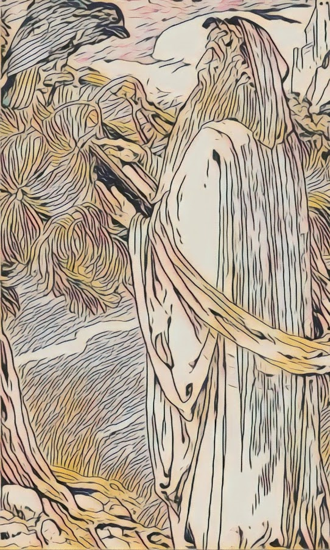
Merlin au merle
selon Louis-John Rhead (1857-1926)
C’est un chant que l’on retrouve à l'identique, à quelques mots près, dans la collection de Penguern, t. 92, 115, sous le titre
Bonjour ha joa barzh an ti man
.
L'origine commune de ces deux pièces est de toute évidence, le document homonyme collecté par Madame de Saint-Prix et conservé à la bibliothèque de l'Abbaye de Landévennec.
C'est, très vraisemblablement, la même Madame de Saint Prix qui a fourni à La Villemarqué le fragment dont il a été question plus haut
(Version du conte :
Le garçon qui vole le trésor de l’ogre
). Il n'y a pas grand-chose à ajouter à l'analyse de Donatien Laurent, si ce n'est que la présente
Invitation au mariage
et le chant manuscrit Merlin ont quatre vers en commun :
MERLIN :
106.2 "Na skabelloù da azeañ
106.3 Ha kant mevel d'ho servichañ."
116.3 "Deuet holl di bihan ha braz,
116.4 Da lakaat an alfe n'e lech."
Correspondent à :
INVITATION :
4.1 Skabell ‘vo d’azezañ,
4.2 Tud a vo d’ho servijañ.
3.1 Deuit holl, bihan a bras,
3.2 Da lakaat an alc’hwezh en e blas!
MERLIN :
106.2 "Des tabourets pour s'asseoir
106.3 Et cent valets pour vous servir."
116.3 "Venez-y tous, petits et grands,
116.4 Pour mettre la clé en place."
Correspondent à:
INVITATION :
4.1 Il y aura un tabouret pour s'asseoir,
4.2 Et des gens pour vous servir.
3.1 Venez tous, petits et grands,
3.2 Mettre la clé à sa place !
Cela confirme l'exactitude de l'assertion de La Villemarqué :
« J'ai été mis sur la trace du poème de Merlin par Mme de Saint-Prix, qui a bien voulu m'en communiquer des fragments chantés dans le pays de Tréguier. »
Il s’agit d’un chant collecté par Théodore Hersart de La Villemarqué
dans le 1er Carnet de Keransquer (pp. 202-203).
p.202
1°
Bal ar venec'h ru
[1][Texte à
l'encre]
1. Disul, dilun, dimeurzh,
dimeurzh ha dimerc'her
Un devezh 'tre daou,
ha sadorn ha gwener.
Dañsomp 'tre daou,
Debromp avaloù
,
C'hoarzhomp ganti,
Greomp goap anezhi!
2. Er c'hornik an aot,
an aot va muiañ-karet.
Disul abardaez
ez-ean d'he gwelet
[Entouré d'un grand trait
circulaire:] (Melin)
Hag a gasin ganin
Ur prof hervez he c'hoant,
Tri aval aour goant
En ur plad arc'hant. [2]
2°
Kouent
[Variante au crayon]
3. Me 'm-eus un dousik
manac'h barzh ar kouent
Disul, pa vin di[ga]bestr,
me yelo d'hen gwelet
Hag a gaso dezhañ
Ur [prof]ik koant:
Un avalik ruz oranj
Barzh ur plad arc'hant
…[3]
p.202
1°
Bal des moines rouges
[1] [Texte à
l'encre]
1. Dimanche, puis lundi,
mardi, puis mercredi
Sautons un jour,
puis vendredi, puis samedi,
Le jour sauté, dansons,
Mangeons, oui
mangeons des pommes !
Le jour sauté, rions,
Rire est le propre de l’homme !
2. Au détour du rivage
vit mon bien-aimé
Et j'irai le voir,
dimanche le soir tombé.
[Entouré d'un grand trait
circulaire :] (Merlin)
Et je lui porterai,
Digne de lui, ce présent :
Trois pommes d'or jolies
Sur un plateau d'argent. [2]
2°
Le couvent
[Variante au crayon]
3. Mon ami s'est fait moine.
Il est dans un couvent.
J'irai le voir dimanche,
si j'en ai le temps
Et je lui porterai
Digne de lui, ce présent :
Une pommette rouge
Sur un plateau d'argent
…[3]
[1] Moines rouges :
Bal ar menec'h ru
, "Bal des moines rouges ", est le titre donné par le manuscrit à la première partie du texte (notée à l'encre) où il n'est pas question de moine.
Selon La Villemarqué, on appelle ainsi en Bretagne les
Templiers
, cet ordre de moines-soldats brutalement dissous par Philippe Le Bel en octobre 1307.
[2] La
Variante
notée au crayon est la suite logique des 2 premières strophes. Une femme a recours à la magie pour "récupérer" son amant qui est entré au couvent.
C'est en tout cas dans ce sens que le jeune La Villemarqué interprétait ces
"trois petites pommes d'or dans un plat d'argent"
. En effet, Donatien Laurent indique que les vers
Hag a gasin...plad arc'hant
("J'emporterai ...plat d'argent") de la strophe 2, sont entourés d'un
grand trait circulaire
précédé (à première ligne de la strophe) du mot
Melin
, comme on l’a dit, une variante de
Merlin
.
Il est effectivement question dans
Merlin Barde
, à la strophe 81 (version Barzhaz) de trois pommes rouges qu'une magicienne donne à manger à Merlin, ce qui le met en son pouvoir et l'oblige à la suivre.
Le
plateau d'argent
dont il est question dans la présente pièce souligne le caractère surnaturel de ce cadeau.
[3] Il semble que La Villemarqué ait été le seul à collecter cette curieuse chanson. A moins qu'il ne s'agisse, comme dans le cas de l'Invitation, d'un des
Fragments
procurés par Madame de Saint-Prix dont il disait qu'ils
« l'avaient mis sur la trace du poème de Merlin ».
On remarquera certainement que les différents épisodes qui constituent la 1ère partie de ce conte se retrouvent avec une régularité d’horlogerie dans la plupart des autres contes du
Merlin breton
, si ce n’est qu’ici Merlin est explicitement
un oiseau
, un oiseau que l’on met en cage, tandis qu’ailleurs cette spécificité n’est évoquée que de manière allusive.
Comme on l’a dit, le
Perceval
de la Trilogie en prose des manuscrits Didot-Perceval et de Modène, ainsi que le
Méraugis de Port-Lesguez
de Raoul de Haudenc (1170-1230) évoquent l'"
Esplumoir Merlin
", dans lequel on peut voir le lieu où l’Oiseau merveilleux perd ses plumes et effectue sa mue et une justification du nom de
Merlin
, l’
émerillon
.
Le texte de l’Abbé Cadic est uniquement en français. Nous avons ajouté les titres intermédiaires.
L'abbé François Cadic (1864-1929) est le créateur en 1897 de l'association d'entr'aide "La Paroisse Bretonne de Paris" dont le revue mensuelle homonyme publia de nombreux chants en breton de Vannes d'avril 1899 à janvier 1929. Outre les 150 chants de la revue, il recueillit plus de 200 contes, ce qui fait de lui un des meilleurs collecteurs de tradition orale bretonne.
Dans un bosquet plein de mystère, auprès du château d'un riche seigneur, un oiseau chantait à ravir. Sa voix allait au cœur ainsi qu'une musique caressante. Il aurait rendu jaloux le plus mélodieux des rossignols. Le seigneur disait : « Voilà un gentil voisin qu'il me serait agréable d'avoir encore plus près de moi. Je donnerais beaucoup à celui qui m'aiderait à mettre la main dessus. » Un soldat qui revenait de servir le roi satisfit son désir. Il réussit à capturer l'oiseau. On fit une belle cage avec un treillage doré, on y mit un choix de nourriture variée, de l'eau fraîche dans des coupes qui avaient l'éclat de cristal. Vaines précautions. L'oiseau mangeait à peine du bout du bec et il ne chantait plus. Ses accords s'étaient perdus avec sa liberté. Son corps était pris, mais son âme était demeurée au fond du bosquet mystérieux. Le seigneur n'en tenait pas moins à son prisonnier. Pour l'or du monde il ne s'en serait pas séparé. « Malheur, répétait-il souvent, à qui le laissera fuir. La mort sera le châtiment. » C'était un homme dur que ce seigneur et nul au monde ne l'aurait empêché d'exécuter sa sentence, fût-ce contre le plus aimé des siens, contre son propre fils. Il avait en effet un fils nommé Georges, un enfant de dix ans qui n'avait pas son pareil sur la terre pour les qualités de l'esprit et du cœur. Un jour, comme il était en voyage et que le garçonnet et l'oiseau se trouvaient seuls ensemble, celui-ci se mit soudain à parler :
« Georgic, Georgic, ouvre-moi la porte de la cage et je te chanterai une belle chanson. - Je veux bien, répondit l'enfant qui, sans plus réfléchir, délivra le prisonnier. Fou de joie, celui-ci se précipita dehors. - Merci, ami, s'écria-t-il : tu m'as rendu le plus grand des services ; sois persuadé que tu n'as pas obligé un ingrat » ; et, détachant une plume de son aile : « Prends-la, ajouta-t-il : quand tu auras besoin de mes services, tu n'auras qu'à l'agiter, en prononçant ces mots : Merlin, Merlin, vite à mon secours ! Et à l'instant je serai auprès de toi. »
Déjà l'oiselet s'était enfui vers le bosquet, en chantant le plus mélodieux de ses refrains. L'enfant comprit alors la gravité de sa faute. Il la comprit encore mieux quand il vit sa mère pleurer toutes les larmes de son corps : « Mon fils, mon fils, gémissait la pauvre femme, qu'as-tu fait ? Avais-tu oublié les menaces de ton père ? Faudra-t-il donc que tu meures ? » Un saunier qui passait d'aventure dans le pays, en vendant son sel, entendit les plaintes : « Condamner un enfant à la peine capitale pour une semblable étourderie, s'écria-t-il, serait un abominable forfait. Si vous voulez, je vous tirerai d'embarras. Donnez-le-moi. Dans quelques jours je serai loin d'ici et jamais plus votre mari n'en entendra parler. » La proposition fut acceptée comme une faveur du ciel. On confia Georges au marchand avec un sac de cent écus pour pourvoir à son entretien et tous les deux partirent à la recherche des aventures du côté des terres neuves. Cependant le saunier, en cheminant, songeait à part lui: « Je doute que j'aie été bien inspiré de me mettre sur les bras ce moutard. À la première occasion je l'abandonne et j'emporte avec moi ses écus.» L'occasion s'offrit bientôt. Ils étaient arrivés devant un vieux château qui mirait ses grosses tourelles dans les eaux d'un étang, à la lisière d'une forêt. Laissant à la porte son petit compagnon, l'homme y entra. « N'auriez-vous pas besoin d'un berger ? demanda-t-il. - Si fait, lui fut-il déclaré, à condition qu'il soit fort. - Pourquoi fort ? - Parce que nos champs sont infestés de loups et il aura sans doute à défendre sa vie contre eux. - Il a l'esprit délié et l'œil bon. Prenez-le tout de même. » C'est ainsi que l'enfant, à son insu, se trouva gagé en qualité de gardeur de troupeau en ce château perdu. Déjà le saunier s'éloignait, sans plus s'occuper de lui : « Et mon argent ? dit Georges, vous ne l'abandonnez pas aussi ? » Un geste menaçant fut la seule réponse. « Merlin, Merlin, au secours ! » reprit le petit garçon, en agitant sa plume. Il y eut un frôlement d'ailes et voilà que l'oiseau du bosquet apparut et que sur le dos du voleur un dur bâton mû par une main invisible frappait avec vigueur. Il fallut bien à ce dernier entrer en composition et restituer les cent écus.
Le lendemain le petit garçon conduisait au pâturage les moutons du château. « Méfie-toi, lui recommanda-t-on, sinon les loups te mangeront. - Nous verrons bien », répliqua-t-il, et de nouveau il appela : « Merlin, Merlin, au secours ! » L'oiseau accourut : « Je veux, lui déclara-t-il, un sifflet pour appeler les loups et des muselières pour les empêcher de mordre. » On juge de la surprise du domestique qui à midi vint lui apporter son déjeuner. Il l'aperçut qui jouait à côté de ses moutons, ceux-ci broutant tranquillement au milieu du champ, tandis qu'une bande de loups autour d'eux, assis sur leur arrière-train, chacun une muselière dans la gueule, semblait les garder. « Pourquoi ces bêtes féroces ne dévorent-elles pas le troupeau ? questionna ce domestique. - Pour une très bonne raison, dit l'enfant : je ne leur en ai pas donné le droit. »
Le serpent et la fille du seigneur
Dans les profondeurs de la forêt vivait un serpent qui était la terreur de la contrée. C'était un monstre hideux qui avait sept têtes. Chaque année, pour éviter les effets de sa colère, les habitants étaient obligés de lui livrer une jeune fille à dévorer. Il y avait longtemps que cela durait. Il y avait longtemps aussi que Georges remplissait ses fonctions à la grande satisfaction de son maître, lorsque vint le tour de la fille de ce dernier. C'était précisément celle qui chaque midi apportait son déjeuner au berger sur la lande. La pauvre créature se lamentait de plus en plus, à mesure qu'approchait le terme fatal, et le berger ne cessait de la réconforter : « Adieu, ami, murmurait-elle, je ne vous reverrai plus car je vais à la plus affreuse des morts. - Qui sait ? répliqua-t-il, confiance et espoir. Il avait son idée. » Enfin le jour marqué arriva et la victime dut se mettre en route. Elle s'acheminait tristement vers la caverne du dragon, n'ayant plus aucun espoir, quand soudain elle entendit le galop d'un cavalier qui accourait à franc-étrier. C'était Georges.
Le manteau noir
Le brave garçon avait demandé à son oiseau ce qu'il lui fallait, un cheval, un manteau noir et une épée d'acier et maintenant il était prêt à affronter les plus redoutables dangers. « Montez en croupe derrière moi, dit-il à la jeune fille, nous saurons bien si le serpent s'attaquera aussi volontiers à un homme armé qu'à une faible femme. » La hideuse bête, au seuil de sa tanière, attendait : « Viens, lui cria Georges, viens, dragon cruel, chercher ta proie! » Mais sans doute ne pensait-elle pas voir paraître sa victime en pareille compagnie et elle eut un mouvement de recul : « Non, répondit-elle, je ne la veux que demain. Je n'ai pas faim aujourd'hui, jusqu'à midi ».
Le manteau gris
Georges enfonça les éperons dans les flancs de son coursier et repartit vivement. Un instant après il déposait la jeune fille à l'issue du bois et disparaissait. La pauvrette était tellement troublée qu'elle ne l'avait pas reconnu sous son déguisement. Elle avait eu cependant assez de présence d'esprit pour couper un morceau de son manteau noir et le rapporter à son père. À midi, comme les jours précédents, elle retournait vers la lande et racontait sa singulière aventure au berger. « Ne vous l'avais-je pas dit ? déclara celui-ci, la prière a du bon. Priez donc. » Le jour suivant, à la première heure, la jeune fille recommençait son triste voyage. Elle entendait les rugissements de colère de l'affreux dragon et elle tremblait de tous ses membres, mais elle n'était pas au milieu de la forêt que le cavalier, un manteau gris sur les épaules, la rejoignait et l'invitait à monter derrière lui. Le monstre que la faim semblait cependant exciter n'osa pas davantage sortir de son antre, malgré les excitations : « Ça sera pour demain », déclara-t-il. Georges dut s'en retourner. Il ramena sa compagne au même endroit et s'en alla. La jeune fille qui ne l'avait pas plus reconnu que la veille avait encore eu la précaution de couper un morceau de son manteau gris.
Le combat et le manteau rouge
Le troisième jour vint et il fallut bien que la victime reprît la route du bois. Pour la troisième fois elle rencontra son sauveur, revêtu d'un superbe manteau rouge. Comme ils passaient auprès d'une maison où un homme était occupé à chauffer son four avec une longue fourche de fer, le cavalier s'arrêta : « Yeux-tu me prêter ta fourche un instant ? demanda-t-il ; j'ai à débarrasser la terre d'un malfaiteur. - Oui, oui, volontiers, répliqua l'homme, dès lors qu'il s'agit d'une bonne action, je suis votre serviteur ; prenez-la.» Le serpent s'était réfugié au fond de sa caverne, car en entendant le galop du cheval il avait eu peur. « Me voici de retour, bête cruelle, cria Georges à l'entrée. Je te ramène ta proie. Si tu la veux, viens la chercher. - Je ne suis pas pressé, gronda le monstre ; un autre jour je me sentirai peut-être mieux disposé. » Georges se sentit l'âme remplie d'une violente colère : « Crois-tu donc, maudit, s'écria-t-il, que je te permettrai plus longtemps de te moquer de nous ? » Et saisissant la fourche il la lui enfonça dans l'une de ses gueules et l'entraîna dehors. L'épée d'acier fit le reste. En sept coups, les sept têtes tombaient. Le vainqueur repoussa dédaigneusement du pied la bête morte, lui enleva ses sept langues qu'il noua dans un mouchoir et prit congé de la jeune fille. Comme précédemment, celle-ci avait détaché à son insu un morceau de son manteau rouge.
Le charbonnier et les sept langues
Il avait été publié partout, par ordre du maître du château, que celui-là qui débarrasserait le pays du cruel dragon aurait la main de sa fille. Il suffisait d'apporter pour preuve les sept têtes. Un charbonnier dont la cahute de branchage s'élevait dans le bois et qui avait assisté au combat en cachette crut trouver là une bonne affaire. Il coupa les têtes et se rendit avec elles au château, en affirmant qu'il était le vainqueur. « Le vainqueur ! s'exclama la jeune fille, cela ne saurait être. Celui qui a tué la bête a emporté ses langues et non ses têtes. - J'ai mangé les langues, répondit l’imposteur ; il ne me reste que les têtes. »
Le premier banquet
Pour tirer la chose au clair, le seigneur ordonna un grand banquet auquel il invita gentilshommes et manants du pays. Il y avait des chances pour que le cavalier au manteau noir y assista aussi. Georges s'y rendit en effet, mais tellement bien grimé qu'il était impossible de discerner ses traits. La jeune fille cependant n'eut pas de peine à reconnaître le manteau. « Le voilà bien, s'écria-t-elle, je ne me trompe pas. » Le morceau d'étoffe en effet allait de façon exacte au manteau. Qui donc était cet homme ? On n'eut pas le temps de se renseigner. Georges avait disparu.
Le second banquet
À quelque temps de là, le seigneur donnait un second banquet. Les gens y accoururent aussi nombreux. Parmi la foule il y avait un brillant cavalier revêtu d'un manteau gris que la jeune fille remarqua aussitôt : « Ça doit être lui », murmura-t-elle aux oreilles de son père. Effectivement une coupure pratiquée dans son manteau s'adaptait à l'étoffe que celle-ci avait détachée. « Est-ce toi qui as sauvé ma fille ? demanda le père. - Peut-être », répondit le cavalier. Il n'en dit pas davantage et s'éclipsa vivement. En le voyant s'éloigner, la jeune fille restait songeuse : « Je ne sais si je me trompe, fit-elle, mais il m'a semblé que c'était Georges. »
Le troisième banquet
Un troisième festin eut lieu auquel se présenta autant de monde que les premières fois. Le charbonnier y figurait aussi, mais on sentait qu'il n'était pas à engraisser dans son coin, car le dénouement approchait. Un personnage de marque, les épaules recouvertes d'un riche manteau couleur de pourpre y attirait particulièrement l'attention. « Je suis sûre que c'est lui », s'exclama joyeusement la jeune fille. En effet le manteau rouge avait une coupure qui se confondait avec un autre morceau d'étoffe qu'elle tenait. Se voyant découvert, le mystérieux inconnu voulut encore fuir, mais il y avait des gardes partout. L'un d'eux, au moment où il franchissait la porte, lui jeta sa lance à travers les jambes et l'on n'eut pas de peine à l'arrêter. C'était bien Georges et la meilleure preuve était les sept langues de serpent qu'il avait dans son mouchoir. Quant à l'imposteur, il avait décampé sans bruit.
La jeune fille revenait maintenant de droit au vaillant gars. Il y avait déjà quelques jours que le mariage était célébré ; les deux époux vivaient heureux, lorsque soudain le maître du château tomba malade gravement. L'art des médecins n'y pouvait rien ; on appela un vieux sorcier : « Il faut, déclara celui-ci, quatre choses pour le guérir, un morceau d'orange de l'oranger qui est sur la mer d'Arménie, de l'eau de la fontaine de vie, une tranche du pain de la reine jaune avec un peu de son vin. La fontaine de vie n'est d'ailleurs pas éloignée du palais de cette reine. » Le seigneur avait deux autres gendres qui étaient très jaloux de Georges et qui réclamèrent l'honneur d'aller chercher ces remèdes. Ils partirent et pendant des mois ils ne revinrent pas. Le premier s'était égaré dans un pays sec et froid et il était demeuré à moitié mort au pied d'une montagne. Le second s'était embarqué sur l'océan et il avait été rejeté par la tempête sur un rivage désert.
Georges rencontre l’ermite
Georges s'en alla aussi à son tour, à la prière de sa femme. Il avait un petit cheval appelé Gilettic qui marchait aussi vite que le vent. Comme il traversait un bois, il rencontra un ermite. « Je connais l'objet de ta mission, lui dit le saint homme, et je veux seconder tes généreux desseins. Prends d'abord le chemin de la mer. Voici une
baguette
qui marchera toujours devant toi. Suis-la ; elle te conduira jusqu'à l'oranger. Tu cueilleras une
orange
que tu couperas en quatre et tu emporteras un morceau. « En continuant devant toi, tu parviendras à la
fontaine
de vie. Il n'est pas facile d'y aborder, car elle est gardée par un
lion
gigantesque qui de son corps couvre sept lieues de pays, laissant tout juste un sentier pour atteindre l'eau. Avant de chercher à y puiser, va d'abord au palais de la
reine jaune
. Tu trouveras près du foyer sa
lance
que tu emporteras. Puis tu couperas une
tranche de son pain
et tu rempliras une
, en répétant : « reine jaune, reine jaune, c'est pour la santé de mon beau-père. » Quand tu seras dehors, tu verras un
cerf
à l'attache près de la maison. Tu monteras sur son dos, après avoir eu soin de laisser ton cheval en route afin de ne pas effrayer le cerf, et tu retourneras à la fontaine. Le lion dormira. S'il se réveille, tu te cacheras derrière une touffe d'aubépine et tu l'attaqueras à l'improviste. Avec ta lance il te sera aisé d'en venir à bout. Une fois qu'il sera mort, tu auras soin de partager son corps
en quatre morceaux
et tu feras
trois coupes de sa queue
. Rien ne t'empêchera alors de puiser à la fontaine de vie.» Tout se passa ainsi que l'ermite l'avait prédit.
Georges recueille les remèdes
Georges arriva sans trop de peine à l'oranger de la mer d'Arménie et au palais de la reine jaune. Il prit le pain, le vin, le cerf de la princesse et se rendit vers la fontaine. Le lion dormait. « Bonne affaire ! » se dit-il et, sur la pointe des pieds, il approcha de l'eau. Malheureusement tandis qu'il y puisait, voilà qu'il y eut un glou-glou ; la bête sauvage se réveilla avec un rugissement et c'est à peine s'il eut le temps de se dissimuler derrière l'aubépine. Cinq minutes après, le lion sommeillait de nouveau. C'était le moment. Un coup de lance bien appliqué en plein cœur et il était mort. Georges partagea son corps en trois et partit à la recherche de son cheval.
Le loup qui devient monture
Il l'avait laissé paître l'herbe grasse dans une prairie, mais pendant son absence un loup affamé avait dévoré le pauvre Gilettic. Il n'y avait qu'un moyen de sortir de difficulté :
prendre le loup à la place comme monture
. Il donna un coup de sifflet. Le loup accourut et les voilà tous deux, lui grimpé sur le dos de l'animal, galopant sur le chemin du retour.
Rencontre des deux beaux-frères
Le premier homme qu'ils rencontrèrent fut un des beaux-frères. Le malheureux ne valait plus guère, car il était à bout de forces. L'eau de la fontaine de vie avec le pain et le vin de la reine jaune lui rendit la santé. Il ne put retenir un cri de contentement et d'admiration où perçait de l'envie : « Donne-moi tes remèdes, Georges, je te les paierai le prix qu'il faudra. » Georges en avait sur le cœur contre ce beau-frère qui par jalousie jusqu'à ce jour n'avait cessé de l'humilier : « Je te donnerai un peu de mon eau volontiers, répondit-il, mais j'y mettrai de lourdes conditions. J'exige
ton anneau de mariage et un bout de ton oreille
. » L'autre poussa un profond soupir et accepta. À quelque distance plus loin, les voyageurs rencontrèrent le second beau-frère qui lui aussi était fort mal en point. Grâce aux précieux remèdes il fut bientôt debout. À son tour il demanda : « Que veux-tu, en échange de ton eau, de ton pain et de ton vin ! » Ce beau-frère n'avait pas été meilleur que le premier pour Georges : « Le prix que je demande pour un peu de pain et une goutte de vin, répliqua celui-ci, te semblera peut-être exagéré.
Il me faut un de tes doigts de pied
. » Après un moment d'hésitation, le marché fut accepté. Content d'avoir humilié les deux orgueilleux personnages, Georges les laissa guérir le beau-père et se vanter à loisir d'avoir été eux-mêmes chercher les merveilleux remèdes.
Le retour de la reine jaune
Il leur réservait encore une désagréable surprise. " Je te préviens, lui avait dit l'ermite, que tu n'as droit sur cette eau, ce pain et ce vin que
pendant un mois
. Au bout de ce temps si tu ne les as pas rendus, la reine jaune viendra les chercher, et gare à sa colère. » Comme de juste, les beaux-frères qui n'étaient au courant de rien n'avaient non plus rien rendu au bout du mois. Aussi la reine jaune arriva chez eux, pleine de courroux, un fouet à la main. Georges n'était pas là. Se doutant de ce qu'il allait arriver, il était parti labourer aux champs avec son loup. « Mon eau, mon vin, mon pain ! » s'écria la reine. Le premier beau-frère apporta ses quelques gouttes d'eau, le second son peu de vin et ses miettes de pain. « Est-ce là tout ce que j'ai donné ? reprit la reine ; je ne permets pas qu'on se moque de moi » ; et
son fouet s'abattit
avec violence sur les épaules des deux malheureux. Ceux-ci avaient beau hurler : « C'est Georges qui a le reste ! c'est Georges qui a le reste ! » Le fouet continuait à frapper avec violence.
Triomphe de Georges
Il leur fallut courir jusqu'au champ où labourait leur beau-frère : « Georges, je t'en supplie, s'écrièrent-ils, rends l'eau, le vin et le pain de la reine jaune. - Volontiers, répondit Georges, et je vous rends par-dessus le compte l'oreille et la bague de mariage de l'un et le doigt de pied de l'autre. La première leçon que vous avaient méritée votre orgueil et vos dédains n'avait pas suffi à vous guérir. Puisse la seconde vous être plus profitable : cela ne profite guère de se grandir au-dessus de sa taille et au détriment d'autrui. »
"Le Cheval de Merlin l'enchanteur" par Yahne Le Tourmelin, 1953, un des tableaux de la rétrospective "Le surréalisme" du Centre Pompidou (2024)
Yahne Le Tourmelin (1923-2023) peint ce sujet 2 ans avant de rencontrer André Breton. Elle était mariée à Jean-François Revel. Boudiste elle-même, elle est la mère du moine boudhiste Matthieu Ricard.
Ce conte appartient à la thématique commune du Merlin de Bretagne : personnage surnaturel qui vient en aide au héros, poursuite ralentie par l'abandon d'objets que le poursuivant rapporte chez lui de façon illogique, mention d'une boule d'or qui joue un rôle dans l'évasion de Merlin... Cependant Luzel en 1869 n'était pas encore familiarisé avec ladite thématique et
ne fait donc pas le rapprochement qui s'impose entre Merlin et Thérèse
, la princesse métamorphosée en jument du conte Koadalan.
En revanche, dans les notes qui accompagnent la publication de ce texte dans ses
Contes et récits populaires des Bretons armoricains
(1869), il évoque, à propos de la course-poursuite entre Koadalan et les trois diables, entrecoupée de métamorphoses multiples, la
poursuite de Gwion par Keridwen
dans le Hanes Taliesin gallois qu'il connaissait par la traduction anglaise du Rev. Edward Davies publiée par Jules Leflocq dans
Etudes de mythologie celtique
, p. 69 (Cf. annexe 1 et annexe 6). Il ne formule aucune hypothèse quant à l'origine de cette similitude qui mériterait pourtant qu'on s'y attarde.
La fameuse
querelle du Barzhaz
qui avait éclaté deux ans plus tôt, le conduit peut-être à une telle prudence.
Luzel ne signale pas, non plus, que
La Villemarqué
se réfère au même poème sur l'engendrement de Taliésin à propos de la
strophe "Six" (2ème tercet)
des
Séries"
(p. 11 de l'édition 1867, note 4 :
"Myvyrian Archaiology of Wales
, t. I, p.17 et ss."). Il est vrai que l'épisode inséré dans les "Séries" (le nain qui porte son doigt à sa bouche) ne recoupe pas celui de la poursuite, repris de façon si étonnamment fidèle par la tradition orale bretonne. Il le précède.
Luzel insiste sur le fait que ce conte est calqué avec «
une grande fidélité sur le texte authentique
». Le conteur est
Jean-Marie Guézennec
, charpentier à Plouaret et la collecte faite par Luzel lui-même date de janvier 1869.
Par ailleurs il indique que «
Le nom de Koadalan, traduit en français, serait Bois-Allain ; — mais je doute fort que ce soit là le nom primitif, car nos conteurs populaires ont la fâcheuse habitude de changer arbitrairement les noms, ceux des personnages comme ceux des lieux, et de leur substituer d’autres noms, généralement connus de leur auditoire.
»
Pour ce conte de Luzel comme pour les contes suivants, on donne la graphie bretonne originale et la traduction du collecteur quand elle existe. Nous avons ajouté la division en chapitres et les titres intermédiaires.
Ur wez a oa daou denig hag a defoa ur mab digwet gant he bemzek pe c’houezek vloaz. Ha ’vel ma oant paour hag ho defoa poan braz o vewa, un dez a larjont d’éhan: — Rèd a vo did, ma faotr, mont un tu bennag da c’honid da voued. — Ma! a lâras ar paotr, mont a rin.
Ewenn Koadalan a oa he hano, ével hé dad.
He dad a ro d’éhan tric’houec’h diner, he vamm, un anter-dousenn grampoez, hag ec’h a-kuit ar paotr.
Pa oa o vont gant ann hent, a tigwezas gant-han un aotro gwisket kaer, pini a laras d′ehan:
— Pelec’h ec’h ez ével-se, ma faotr?
— Da vale-bro; da glask da c’honid ma boued.
— Mar kares dont ganen?
— Ia a-walc’h, na ran ket a forz gant piou.
— Goud a rez lenn?
— Un tammig, met nann kalz.
— Neuzé na out ket ann hini a glaskan, mar ouzoud lenn.
Hag ec’h eaz ann aotro a-rok.
— Sell! a laras neuzé Koadalan d’ehan he-unan, na tléjenn ket bea lâret a ouzoun lenn; me a vije bet mad gant[ann]aotro-se. Rèd eo d’in trei ma chupenn war ann tu-gill ha mont d’hen diarbenn; na anaveo ket an-hon.
Ober a ra ével-se, lakad he chupenn war ann tu-gill, redek dré ar parko
hag em gavoud aré diarok ann aotro war ann hent.
— Pelec’h ec’h ez ével-sé, ma faotr? a lâr aré ann aotro d’ehan.
— Da vale-bro, da glask bara da c’honid.
— Dont a raes ganen?
— Ia a-walc’h.
— Goud a rez lenn?
— Na ouzoun ket da! Ma zud a zo re-baour ewit ma c’hass d’ar skôl.
Neuzé a krogas ann aotro en-han hag a savas gant-han en er, uhel, uhel. Diskenn a eure gant-han e-kichenn ur c’hastell-kaer, en un ale vraz, lec’h ma oe souezet o welet skrivet war delio ar gwez: — Ann hini a antre aman, na sorti kén. — Ma teuas c’hoant d’ehan mont-kuit, met penoz? Antren a reont ho daou bars ar c’hastell; debri hag eva a reont, ha goudé koan, a kousk mad en ur gwélé-plun.
Il y avait une fois deux pauvres gens qui avaient un fils âgé de quinze ou seize ans. Comme ils étaient pauvres et qu’ils avaient beaucoup de peine à vivre, ils dirent un jour à leur enfant: — Il te faudra, mon fils, aller gagner ton pain quelque part.
— C’est bien, répondit le gars, j’irai.
Il s’appelait Yves Koadalan.
Son père lui donna dix-huit deniers, sa mère, une demi-douzaine de crêpes, et le gars partit.
Comme il s’en allait, sur la route, il rencontra un seigneur bien mis, qui lui dit: — Où vas-tu comme cela, mon garçon?
— Voyager, pour chercher à gagner mon pain.
— Veux-tu venir avec moi?
— Je veux bien; peu m’importe avec qui.
— Sais-tu lire?
— Un peu, mais pas beaucoup.
— Tu n’es pas celui que je cherche, si tu sais lire.
Et le seigneur poursuivit sa route.
— Tiens! se dit alors Koadalan, je n’aurais pas dû dire que je sais lire; j’aurais été bien avec ce seigneur-là. Il faut que je retourne ma veste, pour aller au-devant de lui; il ne me reconnaîtra pas.
Il fait ainsi; il met sa veste à l’envers, court à travers les champs et se retrouve sur la route au-devant du seigneur.
— Où vas-tu comme cela, mon garçon? lui dit encore celui-ci.
— Voyager, pour chercher à gagner mon pain.
— Voudrais-tu venir avec moi?
— Volontiers.
— Sais-tu lire?
— Non certainement; mon père est trop pauvre pour m’envoyer à l’école.
Le seigneur le saisit alors et s’éleva avec lui en l’air, très-haut. Il descendit près d’un beau château, dans une grande avenue, où Koadalan fut bien surpris de voir écrit sur les feuilles des arbres:
— Celui qui entre ici, n’en sort plus-
. Ce qui lui donna l’envie de s’en aller; mais comment? Ils entrent ensemble dans le château; ils mangent ensemble et, après le souper, Koadalan dort bien dans un lit de plume.
Ann de warlerc’h ar beure a lâr ann aotro d’ehan:
— Arsa ma faotr, me a ha breman en hent, wit un dro am euz da ober, hag a renki chomm da unan aman épad un dez hag ur bloaz. Na vanko netra d’id en ti-ma; sell aman ur zerviedenn, ha p’as bo c’hoant a un dra bennag da debri pé da eva, n’as bo netra da ober nemet lâret d’ehi: Serviedenn, gra da dever; digass d’in ann dra-ma-dra! Ha kerkent a tigwezo ar pez as bo goulennet. Deuss ganen breman, ma tiskouezin d’id da labour bemdé.
Hag hen kassas d’ar geginn, lec’h ma oa ur pot-houarn braz-braz war ann tan: — Sell azé ur pot-houarn hag a renki dewi indan-han diou gordenn-goad bemdez; ha na euz forz petra a glewi en-han, na selaou ket, ha gra tan bépred. Eomp breman d’ar marchosi. Sell azé ur gazek treut, hag ur fagodenn-spern dira-z-hi, el lec’h melchon. Met ur pred-all a défé c’hoaz. Sell aman ur vaz gargal ewit hi dorna, ken a c’houezi. Kommer ar vaz, ha gwelomp ha te a oar skei.
Ha Koadalan da skei war al loen-paour euz he wella.
Mad, mad, na skoës ket fall. — Breman a weles aman un eubeul iaouank, hag a vo rèd d’id rei melchon ha kerc’h d’ehan, kement ha ma karo debri. — Eomp breman d’ar c’hambrjo. Sell aman unan ha na digori ket, ha homan-all ken-neubeud. Sell mad, rag mar tigwezfé d’id digori unan ann diou gambr-se, gwaleur d’id! Ar re-all holl a c’halli da digori ha bale dré ar c’hastell ével ma kâri.
Pa hen doe lâret kement-se holl, ec’h eaz-kuit.
Arsa en ti biou on-mé aman iwe? En ti ann Diaoul, martézé. Met gwelomp da genta hag a ve gwir ar pez hen euz lâret euz he zerviedenn. — Serviedenn, gra da dever! Digass d’in kig-moc’h, ha rost, ha gistr mad ha gwinn!
Ha kerkent a em gavas ann treo-sé holl war ann daol.
Hola! a-vad, a laras neuze, mad eo ann dro! Em vezwi a reaz, hag a chommas kousket war ann daol. Pa dihunas, en-bezr: — Poent braz eo d′in, éméhan, ober ma labour!
Le lendemain matin, le seigneur lui dit:
Or ça, mon garçon, je vais partir maintenant pour un voyage que j’ai à faire. Tu resteras seul ici pendant un an et un jour. Rien ne te manquera dans cette maison. Voici une serviette et, quand tu voudras manger ou boire, tu n’auras qu’à lui dire:«Serviette, fais ton devoir; apporte-moi telle ou telle chose!» et aussitôt arrivera ce que tu auras demandé. Maintenant, suis-moi, pour que je te montre ton travail de chaque jour.
Et il le conduisit d’abord à la cuisine, où il y avait une grande marmite sur le feu. — Voilà une marmite sous laquelle il te faudra brûler deux cordes de bois par jour, et n’importe ce que tu y entendras, n’écoute pas et fais toujours du feu. Allons maintenant à l’écurie. Voilà une jument maigre qui a devant elle un fagot d’épine, en guise de trèfle. Mais on lui donne encore un autre régal. Voici un bâton de houx avec lequel tu la battras, jusqu’à ce que tu sues. Prends le bâton, et voyons si tu sais frapper.
Et voilà Koadalan de battre la pauvre bête, de toutes ses forces.
— Bien, bien! tu ne frappes pas mal. Tu vois ici, à présent, un jeune poulain auquel il faudra donner du trèfle et de l’avoine autant qu’il en voudra manger. Allons maintenant voir les chambres. En voici une que tu n’ouvriras pas; ni cette autre non plus. Regarde bien, car si tu venais à ouvrir une de ces deux chambres, malheur à toi! Toutes les autres, tu pourras les ouvrir et te promener partout dans le château.
Après avoir fait toutes ces recommandations, le seigneur partit.
Or ça, chez qui donc suis-je ici? se dit alors Koadalan; chez le Diable, peut-être? Mais, voyons d’abord si ce qu’il m’a dit de sa serviette est vrai. — Serviette, fais ton devoir! apporte-moi du lard et du rôti, et de bon cidre et du vin!
Et aussitôt tout cela se trouva sur la table.
—À merveille! dit-il alors, tout va bien. Et il s’enivra et s’endormit sur la table. Quand il se réveilla: Il est grand temps, se dit-il, que je me mette à l’ouvrage!
— Breman stag d′in plouz ha stoup indan ma zreid, ′wit na rin ket a drouz war bave ar porz, o vont-kuit.
Ober a ra se aré.
— Tap breman ann éponj, ann torch-plouz hag ar skrivell, — ha dreist-holl na ankouaz ket ann tri levr ruz. — Gret eo.
- Pign war ma c′hein breman hag eomp-kuit buhan.
Ann aigl na hell ket kriall, ar c′hloc′h na zôn ket iwé, ha setu-int o vont d′ann daou-lamp ruz!
Pa oant êt ur pennad, a lâr Theresa da
Koadalan.
—Sell war da lerc′h; na weles netra o tont?
—Eo; ur bagad chass; hag a réd, hag a réd!
— Tol buhan ann torch-plouz war da lerc′h.
Teurrel a ra ann torch-plouz, hag ar chass a lamp warnehan hag a réd d′hen kass d′ar gèr.
— Sell war-da-lerc′h, — a lâr aré Thérésa ur pennadig goudé, na weles netra?
— Nann sur, met ur goumoulenn a deu war-n-omp, hag a zo ker du, ma téféla ann dé gant-hi.
— Ar majisian a zo en kreiz ar goummoulenn-se! tol buhan ar skrivel.
Teurrel a ra ar skrivel, hag ar majisian a ziskenn euz ar goummoulenn, he zap hag ec′h a d′he chass d′ar gèr.
— Sell c′hoaz war da lerc′h, a lâr are Thérésa, ur pennadig goudé, na weles netra?
— Eo! ur bagad brini, hag a deu war-n-omp a denn-askel!
- Tol buhan ann éponj!
Teurrel a ra ann éponj, hag ec′h a ar brini d′hen kass d′ar c′hastell.
Skuiza a ré Thérésa baour; met leun a oa a galon. —N′hon euz ken nemet c′houezek lew da ober, emehi, ewit tapout ar ster, ha mar gallomp hi zrémenn, ez omp zalwet, rag n′hen défo galloud a-bed neuzé ar majisian war-n-omp; met sell bepred war da lerc′h; na weles nétra?
—Eo, ma Doué! ur c′hi-barbet du war hon zeulio!
Pa oa Thérésa o lampad bars ar ster, a oa iwe ar c′hi-barbet du o kregi en hé lost, ken a chommas gant-han leiz he c′heno a reun. Met un tammig re-divezad a oa!
— Un tol mad eo d′id, eméhan, o skrigna he dent, bea êt diwar ma douar!
— Ia, met breman me a ra goap anout, ha da dri levr ruz a zo ganen!
— Ia, siouas! met ar re-se a deuio c′hoaz d′ar gèr.
—Gwelet a vo!
Hag ar majisian d′ar gèr neuzé, fuloret braz hag oc′h ober tan ha kurun!
— Maintenant, garnissez mes pieds de paille et d’étoupe, pour que je ne fasse pas de bruit sur le pavé de la cour, en partant.
Il fait encore cela.
— Prenez maintenant l’éponge, le bouchon de paille et l’étrille, et surtout n’oubliez pas les trois livres rouges. — C’est fait. — À présent, montez sur mon dos, et partons, vite.
L’aigle ne peut plus crier, ni la cloche sonner, et ils partent au triple galop (littéralement: galop rouge).
Au bout de quelque temps, Thérèse dit à Koadalan:
— Regardez derrière vous; ne voyez-vous rien venir?
— Si, une meute de chiens; et ils courent, ils courent!
— Jetez, vite, le bouchon de paille derrière vous.
Il jette le bouchon de paille, et les chiens sautent dessus et courent le porter au château.
— Regardez encore derrière vous, dit Thérèse un moment après; ne voyez-vous rien?
— Je ne vois qu’un nuage qui vient sur nous, et il est si noir que le jour en est obscurci!
— Le magicien est au sein de ce nuage! Jetez, vite, l’étrille derrière vous.
Il jette l’étrille; le magicien descend du nuage, la prend et la porte au château.
—Regardez encore derrière vous, dit encore Thérèse un moment après, ne voyez-vous rien?
— Si, une bande de corbeaux qui viennent sur nous à tire d’aile.
—Jetez, vite, l’éponge!
Il jette l’éponge; et les corbeaux vont la porter au château.
Cependant la pauvre Thérèse était bien fatiguée; mais elle était pleine de courage.
— Nous n’avons plus que seize lieues à faire, dit-elle, pour atteindre la rivière, et si nous pouvons la passer, nous serons sauvés, car alors le magicien n’aura plus aucun pouvoir sur nous; mais regardez encore derrière vous, ne voyez-vous rien?
— Si, mon Dieu! un chien barbet noir qui est sur nos talons!
Au moment où Thérèse sautait dans la rivière, le barbet noir mordait à sa queue, si bien qu’il lui en resta des crins plein la bouche! Mais il était un peu trop tard!
— Tu es bienheureux, dit-il, en montrant les dents, d’être sorti de mes terres!
— Oui, répondit Koadalan, mais maintenant je me moque de toi, et j’ai tes trois livres rouges.
— Oui, malheureusement; mais ces livres-là reviendront à la maison.
—Nous verrons bien cela.
Et le magicien partit en fureur, faisant feu et tonnerre!
Ann daou-man a dalc′h da vont bépred, met war ho fouez breman, hag hep néc′hamant a-bed. Pa oent digwêt en ur c′hoad, e-kichenn ur roc′hell vraz-vraz, Thereza a gomzas évelhenn:
— Bréman a vo rèd d′id ma lac′ha.
— Jezuz! petra a laret? bikenn n′am bô a galon da ober-se.
— Rèd a vô hen ober, pa laran d′id, pé na dalveo netra holl kement hon euz gret bété vréman. Diwad an-hon dré ma gouk, digor neuzé ma c′hôf, hag a weli petra a c′hoarveo.
Lac′ha a ra Koadalan Thereza, digerri a ra d′ehi he c′hôf, ha kerkent a well tont e-meaz hag o sével en hé gichenn ur brinses ar gaera.
—Mé, éméhi, a zo merc′h d′ar roue Naplez; met mé n′oun ket ewit-oud; kaeroc′h ewit-on a tlé bea da bried, merc′h ar roue Spagn.
Met na euz forz pegoulz as po ezomm a zikour, deuss aman étal ar roc′hell-man, lâr ter gwez: Théréza! Théréza! Théréza! hag a teuin kerkent.
Kimiadi a reont neuzé ann eill euz égilé, en ur oela. Met lezomp breman ar brinses, ha heuillomp Koadalan.
Koadalan et Thérèse continuent leur chemin, mais tout à leur aise maintenant, et libres de tout souci. Arrivés près d’une grande pierre, dans un bois, Thérèse parla ainsi:
— Maintenant il vous faudra me tuer.
— Dieu! que dites-vous là? Je n’aurai jamais le courage de faire cela.
— Il faudra me tuer, vous dis-je, ou tout ce que nous avons fait jusqu’à présent, sera peine perdue. Saignez-moi au cou, ouvrez-moi ensuite le ventre, puis vous verrez ce qui arrivera.
Koadalan tue Thérèse, il lui ouvre le ventre et est bien surpris d’en voir sortir une princesse d’une beauté merveilleuse!
— Je suis, lui dit celle-ci, la fille du roi de Naples; mais je ne vous suis pas destinée; une autre, bien plus belle que moi, sera votre femme, la fille du roi d’Espagne. Mais n’importe en quelle occasion vous aurez besoin de secours, venez ici et dites trois fois: «Thérèse! Thérèse! Thérèse! et j’arriverai aussitôt.
Ils se font alors leurs adieux, les larmes aux yeux. Mais laissons maintenant la princesse, et suivons Koadalan.
— Ar pez am euz da ober, a laras neuzé d′ehan he-unan, eo mont étrézeg ar Spagn, pa eo gwir eman eno danvez ma fried. Met dré bélec′h? pa na ouzon hent a-bed.
Hen em wiska a ra evel ur prinz (gant hé dri levr ruz, a oa chommet
gant-han, a ré ével ma karé) hag a tigwez hep-dalé er Spagn. Mont a ra raktal d′ar palès, hag a c′houlenn komz gant ar roue. Ar roue hen digommer mad, dré ma sonjé gant-han a oa mab ar roue Franz, he niz, a behini hen defoa kommerret ar strumm hag ann neuz.
Daou pe dri dé goudé maoadigwêt, pa oa un dez o valé dre ar jardinn gant ar Roue, a c′houlennas diout-han:
— Petra, ma eontr, me a sonjé d′in penoz ho poa ur verc′h iwé?
— Nann a vad, ma niz, n′am euz merc′h a-bed.
Bea hen defoa unan, met na c′houlenné ket a vijé gouvéet, hag hen defoa hi dastummet en un tour, gant ur plac′h ar gambr. Ur wez bemdez ec′h ee da welet he verc′h, met na ee den a-bed nemet-han.
Ann de warlec′h pa oa Koadalan o valé aré bars ar jardinn gant he éontr, a oe souezet o welt ur voul-aour o ruillal war ann ale hag o tont da stoka euz beg he votez.
— Petra eo ar voul-aour-man, éméhan?
— Netra, emé ar roue.
Boul aour he verc′h a oa, péhini a oa o c′hoari war lein ann tour gant he flac′h ar gambr, hag a defoa tolet he boul d′ann traon, pa defoa gwelet ur prinz kaer o vale er jardinn gant he zad. Koadalan hen defoa gwelet anehi iwé.
— N′euz forz, éméhan, abred pe diwezad me a gavo ann tu da gomz gant-hi.
Sével a ra ann noz-se da anter-noz, ha gant he levrio a kav ann tu da vont béteg he dor, hep bea gwelet na klevet gant nikun. Skei a ra war ann or: tok! tok! tok!
— Aman na ve digoret da den; piou oc′h-c′hui?
— Mab ar roue Franz.
— Mab ar roue Franz, ma c′henderv! neuzé a vo digoret d′ac′h.
Hag a tigoras dehan, hag a em bokjont evel kenderv ha keniterv, hag a chommas gant-hi en he c′hambr bete ma tarzas ann dé. Hag a boe, a teue bebnoz, bebnoz, ha den na wié netra. Setu ma em gav dougéres ar brinses. Ar roue ac′h ée bemdez iwé d′hi gwelet hag evel ma kavé a wellaë, a lâras dehi un dé:
—Vad a ra ho poued d′ac′h, ma merc′h.
— Ia sur, ma zad; ha neuzé n′am euz morc′hed gant netra.
Dont a ra ann amzer iwé ma renk gwillioudi, hag a c′han ur mab bihan ar c′haera. Met setu pa deu a roue, evel bemdez, ha pa wel ur bugel bihan en ur c′hawel, hag he verc′h klanv en hé gwélé, ez eo terrupl fuloret, hag ec′h a-kuit, o toui-Doué. Na lâr netra wit-sé d′he niz. Met vel ma oa deut da vea trist ha morc′heduz, heman a lâras d′ehan un dé:
—Perag ma eontr, ma ′z oc′h evel-se trist ha morc′heduz ur pennad ′zo?
— Allas! ur verc′h am euz, hag am boa hi c′huzet euz ann holl; den na wélé anehi, német-hon hag he flac′h ar gambr, hakoulzgoudéa deûz ganet ur mab!
—Ia, ma eontr, ha me eo tad ar bugel, hag a c′houlennan diganac′h he vamm da bried.
—Ma! pa eo gret ann tol, gwella am euz da ober, eo hi rei d′id, ha gwelloc′h eo ganen a ve te ewit un-all.
Ma oe gret ann eured raktal. Met ar roue koz na rez ken joa a-bed, goude se. Prestig goudé a teuas da werwel, hag a oe laket Koadalan da roue en he lec′h.
— Ce que j’ai de mieux à faire à présent, se dit-il à lui-même, c’est de me diriger vers l’Espagne, puisque c’est là que se trouve celle qui doit être ma femme. Mais quel chemin prendre?
Il s’habille alors en prince (avec ses trois livres rouges, qu’il avait
conservés, il faisait tout ce qu’il voulait), et il se trouve sans tarder en Espagne. Il se présente aussitôt au palais du roi et demande à lui parler. Le roi lui fait bonne réception, parce qu’il le prend pour son neveu, le fils du roi de France, dont Koadalan avait pris la mine et les manières.
Deux ou trois jours après son arrivée, comme il se promenait un jour avec le roi dans son jardin, il lui demanda:
— Comment, mon oncle, je croyais que vous aviez une fille?
— Non, mon neveu, je n’ai pas de fille.
Il en avait une, mais il ne voulait pas qu’on le sût, et il la tenait enfermée dans une tour avec une femme de chambre. Il allait la voir une fois par jour; mais il allait toujours seul.
Le lendemain, quand Koadalan était encore à se promener dans le jardin avec son oncle, il fut tout étonné de voir une boule d’or rouler sur l’allée et venir heurter contre son pied.
— Qu’est-ce que cette boule d’or? dit-il.
— Ce n’est rien, répondit le roi.
C’était la boule d’or de sa fille, qui jouait aux boules avec sa femme de chambre sur la plateforme de sa tour et qui avait jeté cette boule à dessein dans le jardin, quand elle avait vu le beau prince qui s’y promenait avec son père. Koadalan aussi avait remarqué la princesse. —
Tôt ou tard, se dit-il, je trouverai moyen de lui parler.
Il se lève à minuit, et, grâce à ses livres, il arrive à la porte de la chambre de la princesse, sans être vu ni entendu de personne. Il frappe à la porte: tok! tok!…
— Ici on n’ouvre à personne. Qui êtes-vous?
— Le fils du roi de France.
— Le fils du roi de France, mon cousin! alors l’on va vous ouvrir.
Et la princesse lui ouvrit, et ils s’embrassèrent comme cousin et cousine, et il resta avec elle dans sa chambre jusqu’au point du jour.
Et, dans la suite, il y revint chaque nuit, sans que personne en sût rien. Mais la princesse se sentit bientôt mère. Le roi continuait de la visiter tous les jours et, remarquant qu’elle prenait de l’embonpoint, il lui dit un jour:
—Votre nourriture vous profite, ma fille.
—Oui, sûrement, mon père; et puis, je n’ai souci de rien.
Le temps arrive où il lui faut accoucher, et elle donne le jour à un fils, un enfant superbe. Quand vient le roi, selon son habitude, et qu’il voit l’enfant dans son berceau, et sa fille malade dans son lit, il entre dans une colère terrible, et il part en jurant. Malgré tout, il n’en dit rien à son neveu. Mais, comme il était devenu triste et soucieux, celui-ci lui demanda un jour:
— Pourquoi, mon oncle, êtes-vous ainsi triste et soucieux, depuis quelque temps?
— Hélas! j’ai une fille que j’avais dérobée à tous les yeux; elle ne voyait que moi et sa femme de chambre, et cependant elle a donné le jour à un fils.
— Oui, mon oncle, je le sais, et c’est moi qui suis le père de l’enfant, et je vous demande de m’accorder la main de sa mère.
— Eh! bien, puisque la chose est arrivée, ce que j’ai de mieux à faire, c’est de te la donner; et j’aime mieux que ce soit toi qu’un autre.
Et on fit la noce tout de suite. Mais le vieux roi ne donna plus aucune marque de joie. Il mourut peu de temps après, et Koadalan lui succéda sur le trône.
Met hema na blije ket kaer ar vuhe-se d′éhan, hag a-benn ur bloaz a c′hoantaas distrei d′he vro. Evel ma oa he levrio gant-han bepred, a c′houlenn ur c′haronz kaer, péhini a diskenn kerkent euz ann er. Mont a reont ho zri ebars, he vroeg, he vugel hag hen, hag ar c′haronz a sav are en èr, uhel, evel un aigl. Ma tigwez d′éhan trémen abiou
da gastell ar majisian braz Foukes
. Heman a oa o chomm en ur c′hastell-aour dalc′het gant péder chadenn aour ha péder chadenn arc′hant étré ann env hag ann douar. Foukes a oa en he brennestr, ha pa wel Koadalan o trémen en he garonz, a ped anéhan da diskenn un tammig. Foukes hen defoa esaët iwé kaout merc′h ar roue Spagn, met n′hen defoa ket gallet, ha pa hi gwelas o trémen, hen defoa hi anavéet raktal. Koadalan, pehini n′hen defoa disfianz a netra, a diskennas gant plijadur en kastell Foukes, hag heman hen degommerras mad. Goudé koan, a oe laket da gousket gant he bried en ur gambr kaer, hag ar bugel a oe roët da ur vagéres. Met allas! a-rok mont en he wélé ec′h ankouaas lakâd he levrio indan he bluek, ha pa dihunas, ann dewarlec′h ar beure, a oant laeret gant Foukes!
Setu-han glac′haret, ar paour kez. Foukes hen tolaz en ur punz dôn-dôn (ouspenul lew a donder hen defoa), hag a koueas dre eno en kreiz ur c′hoad braz.
— Arsa ma Doue, a lâras neuzé, pelec′h on-mé aman? Ha petra a rin-mé breman, pa eo kollet ganen ma levrio? Hag ar pez a zo gwasa, ma groeg ha ma bugel a zo chommetiwégant Foukes, ann trubard milliget! kollet sur ′on ar wez-man. Mar am bijè gallet c′hoaz kavoud ar c′hoad lec′h ma kimiadis euz Thérésa! Met pelec′h eman ar c′hoad-sé?
Bâlé a ra dre ar c′hoad, ha na wel na den na loen. Digwezoud a ra ann noz, hag a kousk, harp he benn ouz ur roc′hell-vraz goloët a spoen. Pa deu ann dez, a sell en-dro d′éhan, hag a anvez ar rochell e-kichenn pehini a kimiadas Théreza digant-han.
— Hola! a lâras neuzé, n′eo ket kollet holl c′hoaz!
Hag a c′halvas ter gwez: Théréza! Théréza! Théréza! Ha kerkent a em gavas Théréza.
— Ezomm a t′euz an-hon, emehi, Koadalan?
— Ia sur, prinses, rag néc′hamant a-walc′h am euz aman!
— Goûd a rann holl: kollet a t′euz da levrio, ha da vroeg, ha da vugel! Met mar kares ober penn-da-benn evel ma lârin d′id, me a raio d′id ho c′haout c′hoaz.
Hen kass a ra da gichenn kastell Foukes, hag a lâr d′ehan neuzé:
— Kousket int holl bréman bars ar c′hastell. Kè goustadig, goustadig da gambr Foukes, hag a weli anehan kousket war he wélé, hag war un daol vihan, étal he wele, ann tri levr-ruz. Tap an-he, ha deus-kuit gant-hé, hag e-keit-sé, me a gavo d′id da vroeg ha da vugel.
Mont a ra Koadalan bete kambr Foukes, pehini a diroc′hé, astennet war he wélé; tapout a ra ann tri levr-ruz, hag a teu-kuit gant-he neuzé, buhan-buhan. Thérésa a oa euz hen gortoz, ha gant-hi he vroeg hag he vugel. Ma pokas d′hè, hag a oelé gant ar joa.
— A-rok mont-kuit, a lâras neuzé Thereza: Pétra a vo gret da Foukes?
— Ma fé! p′am euz brema ma levrio, ma groeg ha ma bugel, na ioullan drouk-abet d′éhan kén.
— Ma! eomp-kuit neuzé, buhan.
Pa oent digwêt en kreiz ar c′hoad, a lâras c′hoaz Théréza d′éhan:
—Breman a kimiadan ouzid ewit bikenn, rag na em welfomp ken.
Hag a savas neuzé en er, ha prestig a kollas ar gwel anehi.
Celui-ci ne goûtait guère ce nouveau genre de vie, et, au bout d’un an, il voulut retourner dans son pays. Comme il avait toujours ses trois livres rouges, il demanda un beau carrosse; et aussitôt il en descendit un du ciel. Ils y montèrent tous les trois, sa femme, son fils et lui, et le carrosse s’éleva avec eux en l’air, très-haut, comme un aigle. Il passa par hasard devant
le château du grand magicien Fouques
. Celui-ci habitait dans un château d’or, retenu par quatre chaînes d’or et quatre chaînes d’argent entre le ciel et la terre. Fouques était à l’une des fenêtres de son château, et, en voyant passer Koadalan, il le pria de descendre un peu, pour lui faire visite. Fouques avait aussi essayé d’avoir la fille du roi d’Espagne, mais il n’avait pas réussi. En la voyant passer, il l’avait reconnue tout de suite.
Koadalan, qui ne se défiait de rien, s’arrêta avec plaisir au château de Fouques, et celui-ci lui fit bon accueil. Après souper, il le conduisit, avec sa femme, dans une belle chambre, pour passer la nuit, et leur enfant fut confié à une nourrice. Mais, malheureusement, avant de se mettre au lit, Koadalan oublia de placer ses trois livres rouges sous son oreiller, et quand il se réveilla, le lendemain matin, Fouques les lui avait dérobés. Le voilà perdu, le pauvre homme! Fouques le précipita dans un puits très-profond (il avait plus d’une lieue de profondeur) et il tomba au milieu d’un grand bois.
—Où donc suis-je ici, mon Dieu? se dit-il, et que ferai-je maintenant que j’ai perdu mes trois livres rouges? Et, ce qui est encore pis, ma femme et mon fils sont restés aussi au pouvoir de Fouques, le maudit traître! C’en est fait de moi, cette fois! Encore si j’avais pu retrouver le bois où je fis mes adieux à Thérèse! Mais où est ce bois-là?
Il se met à parcourir le bois, et ne rencontre ni homme ni bête. La nuit vient, et il dort, la tête appuyée sur une grande pierre couverte de mousse. Quand le jour revient, il regarde autour de soi, et reconnaît le rocher près duquel il avait fait ses adieux à Thérèse.
— Hola! se dit-il alors, tout n’est pas encore désespéré!
Et il cria trois fois: «Thérèse! Thérèse! Thérèse!» et aussitôt Thérèse arriva et dit:
— Vous avez besoin de moi, Koadalan?
— Oui, certainement, princesse, car me voici bien embarrassé!
— Je sais tout: vous avez perdu vos livres, et votre femme et votre fils; mais si vous voulez faire exactement ce que je vous dirai, je vous les ferai retrouver encore.
Puis elle le conduit devant le château de Fouques, et lui dit:
— Tout le monde dort en ce moment dans le château. Rendez-vous tout doucement à la chambre de Fouques, que vous trouverez dormant sur son lit, et sur une petite table, près du lit, vous verrez les trois livres rouges. Prenez-les, revenez vite, et, pendant ce temps, je vous retrouverai votre femme et votre fils.
Koadalan se rend à la chambre de Fouques, qui ronflait, étendu tout de son long sur son lit; il prend les trois livres rouges, et s’enfuit aussitôt. Thérèse l’attendait, avec sa femme et son fils. Il les embrassa, en pleurant de joie.
— Avant de partir, dit alors Thérèse, que voulez-vous que je fasse à Fouques?
— Ma foi! à présent que j’ai retrouvé mes livres, ma femme et mon fils, je ne lui veux plus de mal.
— Partons alors, et vite.
Quand ils furent au milieu du bois, Thérèse lui dit encore:
—Maintenant je vous fais mes adieux pour toujours, car nous ne nous reverrons plus jamais.
Et elle s’éleva en l’air, et il la perdit bientôt de vue.
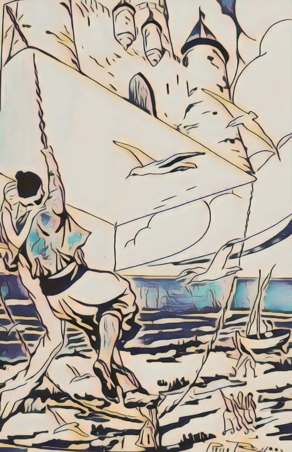
Le château dans les airs
par Pierre Rousseau (1903-1991)
Koadalan, he vroeg hag he vugel a bignas neuzé en ho c′haronz, pehini a deuas kerkent ha ma oe goulennet, hag a em gavjont hep-dâle en bro Koadalan, en Plouaret. Ma oe souezet braz ann holl o welet ur prinz hag ur brinses ker kaer, rag nikun n′ho anavéé, zoken tad Koadalan hag he vamm, péré a oa deut da vea koz, ha paour bepred. Ma savjont ur c′hastell kaer ar c′haera. Met ann daou goz a chommas en ho zi bihan-plouz, welloc′h a em gavent eno, hag ho mab n′ho lezé en ezomm a bed, hag a roë d′hè arc′hant, kement ha ma karent.
Un dez a Laras Koadalan d′he dad:
— Warc′hoaz, ma zad, a zo ur foar gaer en Lanhuon, hag a vo rèd d′ac′h mont d′ehi.
— Da bétra mont d′ar foar, pa n′am euz na marc′h, na buc′h, na porc′hell?
— N′ho pêt morc′hed, warc′hoaz ar beure a kavfet un ijenn kaer en ho kraou. It gant-han d′ar foar ha goulennet out-han ar pez a garfet, hag a ve mill-skoed, hag a vo roët d′ac′h; met na lest ket ann nask da vont gant ann ijenn; bêt sonj mad a-zé, pé n′am gwelfet ken.
— Ma! émé ar paotr koz.
Ann dé warlerc′h ar beuré ec′h a da welet d′he graou, hag ez eo souezet braz o welet eno un ijenn ar c′heara, ével n′hen defoa gwelet biskoaz, Lakâd a ra un nask d′ehan war he c′houk, hag ec′h a gant-han da Lanhuon. Ann holl a lâré, penn-da-benn war ann hent: — Kaera da ijenn! da biou eo? — hag a oa stad er paotr-koz.
Kerkent ha ma ′c′h arruas er foar-lec′h, a teuas ann holl en dro d′éhan.
— Pégement ann ijenn? — a lâré kigerrienn Lanhuon ha Landreger.
—
Mill-skoed!
— a lâré Koadalan goz. — Hag ec′h ent-kuit.
Paotred Montroulez, ha Léon, memeuz tra. Na oa den ′wit sevel ann ijenn.
Ma tigwezas en-bezr tri varc′hadour braz, leun ho godello a arc′hant, ha na anavéé den an-he (
Tri diaoul
a oant).
— Pégement ann ijenn?
— Mill-skoed!
—N′eo ket ewit netra, tad-koz; met na euz forz, ul loen-kaer eo, plijout a ra d′imp, ha gret ê ar marc′had; ha setu aman arc′hant raktal.
Ar paotr-koz a laka ann arc′hant en he c′hodell hag a ro ann ijenn d′ann tri varc′hadour, met a vir ann nask.
— Roët iwé ann nask, tad koz.
— N′am euz goerzet nemet ann ijenn, ha na roïn ket ann nask.
— Ann nask ac′h a atao da-heul ar vuc′h hag ann ijenn.
— N′am euz ket goerzet ann nask, ha na roïn ket anehan.
— Rèd eo d′imp kaout un nask; roët anehan, hag ho pô mill-skoed all.
— Na roïn ket, ha pa ve ewit dek-mill.
Hag a laka ar paotr koz ann nask en he c′hodell, hag ec′h a-kuit.
Ann tri marc′hadour a bign neuzé war gein ho ijenn. Heman a em laka kerkent da vléjal, da redek ha da bennfolli, hag ho stlej ho zri d′ann douar. Ha kerkent
a tro ann ijenn en ki
, ha da redek trezeg ar gèr. — Hag ann tri varc′hadour war he lerc′h, troït en
tri bleiz
! — Ar c′hi a arru da genta e-toull-dor ti Koadalan, hag a lamp ebars. Ha kerkent setu-han en den, rag Koadalan he-unan a oa. — Ann tri bleiz, deut da vea are tri varc′hadour, a chomm e-kichenn ann or:
— Re-diwezad un tammig paotred! a lâr d′he Koadalan, euz he di.
— Poent a oa d′id! met na euz forz, kregi a reomp c′hoaz en da golier un de!
— Gwelet a vo!
Hag hi kuit, ho zri, ha drouk en-he!
Pa digwezas Koadalan goz e ger:
—Ac′hanta! ma zad, gret oc′h euz foar vad?
— Ia vad! Mill-skoed! hag ann nask a zo deut ganen; sell.
Ur pennadig goudé a lâras are Koadalan d′he dad:
— Warc′hoaz, ma zad, eman foar-ann-nec′h, en Montroulez, ur foar gaer, hag a vo rèd d′ac′h mont.
— Gant petra?
— Gant
ur marc′h
a gavfet er marchosi warc′hoaz ar beuré, kaera marc′h oc′h euz gwelet biskoaz.
Daou-vill skoed
a c′houlennfet out-han, hag ho pô an-he are, met na roet ket
ar c′habestr
; tolet-pled mad da se.
Ann de warlerc′h ar beuré a kav Koadalan goz ur marc′h ar c′haera en he varchosi, vel m′hen defoa lâret d′ehan he vab, hag ec′h a gant-han da Vontroulez. Ann holl a oa souezet o welet vel ma oa kaer ar marc′h-se. — Pégement? pégement? a c′houlenne ar varc′hadourienn. Met pa glewent: daou-vill skoed! a souzent holl adré.
En-bezr a tigwez aré tri varc′hadour Lanhuon.
—Pégement ar marc′h, tad koz?
— Daou-vill skoed!
— Skoët aze, d′imp eo. — hag a em skojont en ho daoudorn.
— Eomp en un hostaleri da gonta ann arc′hant, ha da eva ur bannac′h.
Mont a reont en hostaleri nesa; ar paotr koz a ev muioc′h wit neubeutoc′h, ha setu-han mezw, ha
na sonj ket goulenn ar c′habestr
.
Mont a ra ar marc′h gant ann tri marc′hadour, hag he gabestr gant-han en he benn. Pignad a reont ho zri war gein ar marc′h; ma oa souezet ann holl euz ho gwelet.
— A be-lec′h è ann tri diot-man? a lârent. — Mont a rent war gè Leon, hag ar ganfarded a griè war-nhe, ha zokenn a stlapé mein gant-hè.
— Petra, tri genaouek, a lâras un den koz, sotoc′h oc′h ewit ho loen! Diskennit daou bépred; n′oc′h euz ket a vez?
Diskenn a reont o zri.
Ar marc′h a lamp kerkent bars ann dour, ha setu-han troët
en zilienn
. Ann tri varc′hadour a lamp war he lerc′h hag a deu da vea
tri fesk braz
, ewit tapout ar zilienn. Met homan a deu neuze da vea
ur goulm
, hag a nij uhel, dreist tier kèr. Ann tri fesk braz ac′h a neuzè en
ter sparfell
, hag a nij war he lerc′h.
Ar goulm, skuiz o nijal, ha prèst da vea tapet, pa oa o tremen a-uz d′un noblanz, a wel ur vates o karga dour en ur varac′h e-kichenn ur feunteun. Em lezel a ra da goueza er varac′h, ha kerkent ez eo troët en
goalenn-aour
. Ar vatez a denn ar walenn-aour euz ar varac′h, hag he laka war he biz, hag a dired d′ann noblanz. Ann ter sparfell a zo troët kerkent en
tri zôner
péré a ha da zon gant pep a violonz dirag ann noblanz. Aotronez hag itronezed a deu d′ho selaou er prennestro, hag a dol
arc′hant d′he.
— Trugare! a lâr ar re-man, na c′houlennomp ket a arc′hant.
— Petra a c′houlennet eta!
— Ur walenn-aour a zo bet kavet gant ar vatez, o vont da gerc′had dour d′ar feunteun.
— Bea ho pô anehi.
Klasket eo ar vatez. Homan a oa êt d′he c′hambr, da zellet euz he gwalenn-aour. A greiz-holl a oe fromet o welet
ur prinz kaer
en he c′hichenn, hag ar walenn êt diwar he biz.
— Na spontet ket, a lâras d′ehi ar prinz; me eo ar walenn-aour ho poa war ho piz. Ann aotro a zo o tont da c′houlenn diganac′h ar walenn-aour (rag bremaïg a zistroin are en gwalenn-aour war ho piz). Met n′he roët ket d′ehan, ken hen defo gret ar pez ec′h han da lâret d′ac′h: Lâret d′ehan ober
lakâd ann tan en ur bern-koad
a zo er porz; pavokrog mad ann tan, a tolfet ar walenn en he greiz, hag a lârfet d′ar zonerrienn mont d′he c′hlask ébars.
P′hen defoe lâret kement-se, ec′h eaz are en gwalenn-aour war viz ar vatez.
Ann aotro a deuas kerkent, hag a lâras:
— Pelec′h eman ar walenn-aour oc′h euz kavet o vont da gerc′had dour d′ar feunteun?
— Setu-hi aman, aotro.
— Roët d′in anehi.
—Salv-ho-kraz, lâret a zo d′in n′he rojenn ket ken ho po gret ar pez ec′h an da lâret d′ac′h. Gret lakâd ann tan er bern-koad a zo en ho porz; pa vo krog mad ann tan, a tolin en he greiz ar walennaour, o lâret d′ar zonerrienn: it d′hi c’hlask!
Laket eo ann tan er bern-koad, hag ar vatez a dol ar walenn-aour en he greiz, hag a lâr d′ar zonerrienn: it d′hi c’hlask! Ar re-man a lamp kerkent en tan, hag a glask, evel diaoulienn a oant. Met ar walenn-aour a zo troët neuze en
ur gorbonenn
e-touez ur bern-braz a winiz a oa en zolier ar c′hastell, hag ann tri all, en
tri c′hôg
, péré a em laka da glask ar gorbonenn er bern-gwiniz. Met ar gorbonenn a deu neuze da vea
ul louarn
, pehini a dag ann tri c’hôg.[1] Ha setu aze vel ma trec′has Koadalan war ann tri diaoul, hag a chommas gant-han he dri levr ruz.
Koadalan, sa femme et son fils remontèrent alors dans leur carrosse, qui revint aussitôt qu’il le redemanda, et ils arrivèrent sans tarder au pays de Koadalan, à Plouaret. Tout le monde y fut bien étonné de voir arriver un si beau prince et une si belle princesse. Personne ne reconnaissait
Koadalan, pas même son père et sa mère, qui étaient vieux alors, et toujours pauvres. Ils firent bâtir un château magnifique. Mais les deux vieux (le père et la mère) continuèrent d’habiter leur chaumière; ils s’y plaisaient mieux, et leur fils ne les laissait manquer de rien et leur donnait de l’argent autant qu’ils en voulaient.
Un jour Koadalan dit à son père:
— Demain, mon père, il y a une belle foire à Lannion, et il vous faudra y aller.
— Pourquoi aller à la foire, puisque je n’ai ni cheval, ni vache, ni pourceau?
— Ne vous inquiétez point de cela; demain matin vous trouverez un
bœuf
superbe dans votre étable. Menez-le à la foire, et demandez-en le prix que vous voudrez, et quand ce serait mille écus, vous les aurez. Mais ne donnez pas la
corde
avec le bœuf. Faites-y bien attention, ou vous ne me reverrez plus.
— C’est bien, dit le bonhomme.
Le lendemain matin le vieux Koadalan se rend à son étable, et est bien étonné d’y trouver un bœuf magnifique, comme il n’en avait jamais vu. Il lui passe une corde au cou, et se rend avec lui à Lannion. Tout le monde disait, sur le chemin, en le voyant passer: «Le beau bœuf! à qui est-il?» Et le vieillard en était tout fier.
Dès qu’il arriva dans le champ de foire, la foule s’empressa autour de lui.
— Combien le bœuf? demandaient les bouchers de Lannion et de Tréguier.
—
Mille écus
! disait le vieillard. Et ils s’en allaient.
De même pour les marchands de Morlaix et de Léon. Nul n’enlevait le bœuf.
Arrivèrent alors trois grands marchands inconnus, les poches bourrées d’argent et que personne ne connaissait: (C’étaient
trois diables.
)
— Combien le bœuf? dirent-ils.
— Mille écus!
—Ce n’est pas pour rien, grand père. N’importe, c’est une belle bête; il nous plaît, et nous sommes d’accord. Voici de l’argent comptant.
Le vieillard met l’argent dans sa poche et livre le bœuf aux trois marchands; mais il garde la corde.
— Donnez aussi la corde, grand père.
— Je n’ai vendu que la bête, et je ne donnerai pas la corde.
— La corde suit toujours la vache et le bœuf.
— Je n’ai pas vendu la corde et je ne la donnerai point.
—Il nous faut cependant une corde; donnez-la et vous aurez encore mille écus.
—Je ne la donnerai pas, même pour dix mille!
Et le vieillard met la corde dans sa poche, et part.
Les trois marchands montent alors sur leur bœuf. Mais celui-ci commence aussitôt à beugler, à courir, comme une bête affolée, et jette les
trois marchands à terre. Puis aussitôt
le bœuf se change en chien
; et de courir vers la maison! Et les trois marchands de courir aussi après lui, sous la forme de
trois loups
! Mais le chien arrive le premier à la porte du château de Koadalan, et y saute d’un bond. Et aussitôt il redevient homme, car c’était Koadalan lui-même! Les trois loups, redevenus trois marchands, s’arrêtent à la porte.
— Un peu trop tard, les gars! leur dit Koadalan de sa maison.
— Il était temps! mais n’importe, nous te prendrons encore au collet.
— C’est ce que nous verrons bien!
Et ils partirent, fort en colère.
Quand le père Koadalan arriva à la maison:
— Eh! bien, mon père, avez-vous fait bonne foire?
— Oui sûrement: mille écus! et j’ai rapporté la corde; la voici.
Quelque temps après, Koadalan dit encore à son père:
— C’est demain la foire-haute à Morlaix, mon père; une belle foire! il vous faudra y aller.
— Et avec quoi?
— Avec un
cheval
, que vous trouverez dans votre écurie demain matin, le plus beau cheval que vous aurez jamais vu. Vous en demanderez
deux mille écus
; et vous les aurez encore. Mais ne donnez pas la
bride
; prenez-y bien garde!
Le lendemain matin, le père Koadalan trouve un cheval magnifique dans son écurie, comme le lui avait dit son fils, et il va avec lui à Morlaix. Tout le monde admirait le cheval. «Combien? combien?» demandaient les marchands. Mais quand ils entendaient: «Deux mille écus!» tous se retiraient.
Tantôt arrivèrent encore les trois marchands de Lannion.
— Combien le cheval, grand père?
— Deux mille écus!
— Topez-là; il est à nous! Et ils se frappèrent dans les mains.
—Allons à l’auberge, pour compter l’argent, et boire un coup. Ils vont à l’auberge la plus voisine. Le vieillard boit un coup de trop, et s’enivre, si bien qu’
il oublie de retenir la bride
.
Les trois marchands emmènent le cheval, avec sa bride en tête. Ils montent tous les trois dessus. Tout le monde les regardait avec étonnement.
—D’où sont ces trois imbéciles? se disait-on. Ils longeaient le quai de Léon, et les gamins criaient dessus et leur lançaient même des pierres.
— Comment, trois imbéciles, leur dit un vieillard, vous êtes plus dépourvus de raison que votre bête; descendez au moins deux; n’avez-vous pas de honte?
Ils descendent tous les trois.
Le cheval saute alors dans la rivière, et se change aussitôt en
anguille
. Les trois marchands y sautent après lui, et se changent en
trois grands poissons
, pour poursuivre l’anguille. Mais celle-ci s’envole alors, sous la forme d’une
colombe
, et s’élève très-haut dans l’air, au-dessus de la ville. Les trois grands poissons la poursuivent encore, sous la forme de
trois éperviers
.
La colombe, fatiguée de voler, et se voyant sur le point d’être prise, voit, en passant au-dessus d’un château, une servante, près d’une fontaine, occupée à remplir d’eau un baquet. Elle se laisse tomber dans ce baquet, sous la forme d’une
bague d’or
. Aussitôt la servante retire la bague de l’eau, la met à son doigt et court au château. Alors les trois éperviers se changent en
trois musiciens
, et vont, portant chacun un violon, faire de la musique sous les fenêtres du château. Des seigneurs et des dames viennent les écouter aux fenêtres et leur jettent de l’argent.
— Merci! disent les musiciens, mais ce n’est pas de l’argent que nous demandons.
— Que voulez-vous donc?
— Une bague d’or que la servante a trouvée, en allant puiser de l’eau à la fontaine.
— Vous l’aurez.
On cherche la servante. Celle-ci était dans sa chambre, occupée à admirer sa bague. Elle fut effrayée de voir tout à coup un
beau prince
à côté d’elle, et la bague disparue de son doigt.
— Ne vous effrayez pas, lui dit le prince, je suis la bague d’or que vous aviez au doigt. Votre maître vient pour vous demander cette bague d’or (car je vais à l’instant redevenir bague d’or à votre doigt). Mais ne la lui donnez pas, jusqu’à ce qu’il ait promis de faire ce que je vais vous dire. Dites-lui de
mettre le feu à un grand tas de bois
qui est dans la cour; puis, quand le feu sera au plus fort, vous y jetterez la bague d’or, et direz aux trois musiciens de l’y aller chercher.
Quand il eut dit ces paroles, il redevint bague d’or au doigt de la servante.
Le seigneur arriva aussitôt, et dit à la servante:
— Où est la bague d’or que vous avez trouvée, en allant puiser de l’eau à la fontaine?
— La voici, monseigneur.
— Donnez-la-moi.
— Sauf votre grâce, on m’a bien recommandé de ne vous la donner que lorsque vous aurez fait ce que je vais vous dire. Faites mettre le feu au grand tas de bois qui est dans votre cour; quand le feu sera au plus fort, je jetterai la bague d’or au milieu, en disant aux musiciens: Allez l’y chercher!
On met le feu au tas de bois, puis la servante jette la bague d’or au milieu, et dit aux musiciens: Allez l’y chercher!
Aussitôt ceux-ci se jettent dans les flammes, et se mettent à y chercher la bague d’or, comme de vrais diables; ce qu’ils étaient en effet.
Mais la bague d’or est changée alors en un
grain charbonné
, dans un grand tas de froment qui était dans le grenier du château. Et aussitôt les trois autres deviennent
trois coqs
, qui se mettent à chercher le grain charbonné dans le tas de froment. Mais le grain charbonné devient aussitôt un
renard
, qui croque les trois coqs [1]!
Et voilà comment Koadalan remporta la victoire sur les trois diables, et comment ses trois livres rouges lui restèrent.
Goudé kement a boanio, a tistroas are d′ar gèr. He dad a oa marwet; he vroeg hag he vugel a deuas iwé da verwell, prestig goudé, hag a chommas he unan; met hé dri levr-ruz a oa gant-han bépred. Gant ar re-se a c′helle ober holl ar pez a garé, nemet tec’hel diouz ar Maro. Deut a oa da vea koz, hag hen defoa aoun-braz ouz ar Maro. Bemdez a studie mui-ouz-mui he levrio, o klask penoz ober ewit galloud em inkarni ha bewa da virwikenn. Hag un dez a sonjas hen defoa kavet ann tu, ha setu penoz.
Dastum a ra holl dut he di, hag a lâr d′he:
- Sentet ouzin, na euz forz petra a lârin d′ac′h, arc’hant ho po kement ha ma karfet. It da genta da glask d′in ur vagerez gant he bugel kenta newe ganet, hag ho digasset aman buhan.
Digasset a zo d′éhan ur vageres gant he bugel kenta newé-ganet, ha kalz a leaz gant-hi. Homan a tlee chomm c’houec’h miz er c′hastell hep gwelet den a-bed, zokenn he fried. Kant-skoed ar miz a vije paeet.
Lâret a ra neuze d′ehi:
- Me a vo lac’het breman, draillet munud evel kig-silzig, ha neuze laket en ur boudez. Ar boudez-se a vo laket en-kreiz ur bern teill-tomm, ha diou-wez bemdez, epad c’houec′h miz, da greiz-de ha da der-heur, a renkfet dont, un antér-heur bep gwez, da skuill leaz ho pronno a-uz d’ar boudez lec′h ma vin a bezio. Met diwallit mad a kouskfac’h epad ma véet o skuill ho leaz. A-ben c′houec’h miz, mar gret mad evel ma lâran, a savin em fez euz ar boudez, ha iac′h mad, ha krenvoc′h ha koantoc′h ewit biskoaz; ha neuze na varwin bikenn ken
.
- Ober a reet? lâret d′in. Kant-skoed ar mizh o pô
.
—Ia, emehi, ober a rin.
Gervel a ra neuzé he vewelienn, hag a lâr d′he:
— Breman a vo rèd d′ac′h ma lac′ha, ha lakâd ma c′horf holl a bezio, ker munud ha kig-silzig. Neuzé a lakafet ann holl bezio-se, gant ar gwad, en ur boudez, pehini a c′holofet gant ul lienn gwenn, hag ar boudez-se a lakafet en kreiz ur bern teill-tomm, lec′h ma renko chomm epad c′houec′h miz. Goude ar c′houec′h miz-se, ma gwelfet o sevel a-c′hané em fez, beo ha iac′h, ha krenvoc′h ha koantoc′h ewit biskoaz. Ha n′ho pêt nep aoun, rag pep-tra a c′hoarveo ével ma lâran d′ac′h.
- Ober a reet?
—Ia, a lâras ar mewelienn.
Holl a zo gret evel m′hen euz lâret. Lac′het eo, draillet-munud evel kig-silzig, ha laket ann tammo holl, gant argwad, en ur boudez, pehini a zo plantet e-kreiz ur bern teill-tomm.
Mont a ra ar vageres diou-wez bemdez, épad un anter-heur bep-gwez, da skuill leaz he bronno war ann teill, a-uz d′ar boudez.
Bet eo pemp miz oc′h ober evel-se, bet eo pemp miz hanter; na vanké kén nemet tri dé d′ar c′houec′h miz, pa vanas kousketwararbernteill, épad ma oa o skuilla leaz a-uz d′ar boudez.
Allas! ha neuzé a varwas Koadalan!
Pa oe dizoloét war-n-ehan, a oe kavet he gorf en he bez, ha kazi deut e-meaz ar boudez; a oa vont da zével; tri de c′hoaz, hag a vije deut he dol da vad.
Met allas! marw a oa, ha marw mad, ewit bea c′hoantaët na varwjé bikenn!
Après tant d’épreuves, Koadalan revint chez lui. Son père était mort; sa femme et son fils moururent aussi peu après, et il se trouva seul. Mais il avait toujours ses trois livres rouges. Avec eux il pouvait faire tout ce qu’il voulait; tout, excepté éviter la mort. Et il était déjà vieux, et il avait grand’ peur de la mort! Chaque jour il étudiait de plus en plus ses livres et y cherchait le secret de devenir immortel. Un jour il crut l’avoir trouvé, et voici comment.
Il assemble tous les gens de sa maison, et leur dit:
Obéissez-moi ponctuellement, n’importe ce que je vous commanderai, et je vous donnerai de l’argent et de l’or autant que vous en voudrez. Allez d’abord chercher une femme allaitant son enfant premier né et amenez-moi sur-le-champ et la mère et l’enfant.
On lui amène une mère allaitant son enfant premier né, et ayant du lait en abondance. Celle-ci devait rester six mois au château, sans voir aucun homme, pas même son mari. Elle aurait cent écus par mois.
Koadalan lui dit:
— Moi, je serai à présent mis à mort et haché menu comme chair à saucisses; puis, mon corps, ainsi réduit en morceaux, sera mis dans une grande terrine. Cette terrine sera enfouie dans un tas de fumier chaud, et, deux fois par jour, pendant six mois, à midi et à trois heures, il vous faudra venir, une demi-heure chaque fois, répandre le lait de
vos seins sur le fumier, à l’endroit où se trouvera la terrine. Mais prenez bien garde de vous endormir, pendant que vous répandrez le lait de vos seins! Au bout des six mois, si vous faites exactement ce que je vous recommande, je me relèverai tout entier de la terrine, plein de vie et de santé, et plus fort et plus beau que je ne fus jamais; et alors je ne mourrai plus jamais.
— Ferez-vous cela, dites-moi? Vous aurez cent écus par mois.
—Oui, dit-elle, je le ferai.
Alors il fait venir ses domestiques et leur dit:
—Maintenant il vous faudra me mettre à mort, et hacher tout mon corps en morceaux menus comme chair à saucisses. Puis, vous mettrez tous ces morceaux, et le sang aussi, dans une grande terrine, que vous recouvrirez d’un linge et enfouirez ensuite dans un tas de fumier chaud, où elle devra rester pendant six mois entiers. Les six mois accomplis, vous me verrez me relever de là, plein de vie et de santé, et plus fort et plus beau que je ne le fus jamais. Et n’ayez aucune crainte, car tout arrivera comme je viens de vous dire.
- M’obéirez-vous?
— Oui, répondirent les domestiques.
On fait chaque chose comme il a recommandé. On le met à mort, on le hache en morceaux menus comme chair à saucisses. Puis tous les morceaux, et le sang aussi, sont mis dans une grande terrine, que l’on enfouit dans un tas de fumier chaud.
Deux fois par jour, pendant une demi-heure chaque fois, la nourrice va répandre le lait de ses seins sur le fumier, au-dessus de la terrine.
Elle l’avait fait pendant cinq mois, cinq mois et demi; il ne s’en fallait plus que de trois jours que les six mois ne fussent accomplis, quand elle s’endormit sur le tas de fumier, en répandant le lait de ses seins au-dessus de la terrine.
Hélas! alors mourut Koadalan!
Quand on découvrit la terrine, on retrouva son corps tout entier, sorti du vase et sur le point de se relever. Encore trois jours, et il aurait réussi!
Mais, hélas! il était mort, bien mort, pour avoir voulu se rendre immortel!
A la p. 135 d’un rapport en date du 2 août 1870 destiné au ministère de l’Instruction publique, Luzel écrit:
"Je trouve souvent dans nos contes bretons
des souvenirs des romans français du moyen âge
, comme Huon de Bordeaux, Orson et Valentin, les Quatre fils Aymon, etc... Ces romans étaient lus dans les châteaux, et de là ils descendaient dans le peuple, qui les arrangeait et les modifiait à sa guise, les altérant, les interpolant et les mêlant à d'autres fables populaires. C'est sans doute de cette manière que le nom de Merlin s'est conservé dans les récits de nos paysans; dans la poésie, je ne l'ai jamais rencontré."
Autant dire qu'il n'accordait aucun crédit au postulat de transmission populaire depuis des temps immémoriaux affirmé par La Villemarqué qui note dans le Barzhaz de 1867, p.56:
"Les Bretons d'Armorique ont seulement quelques chants populaires qui concernent [Merlin]"
Il suggère en outre que les quatre poèmes de Merlin publiés dans le Barzhaz sont d'une
authenticité douteuse
, puisque lui n'a jamais rencontré de chants équivalents, mais seulement des contes dont Merlin est le héros.
Sa contribution à l'étude du "Merlin d'Armorique" est cependant essentielle, malgré cet écho de la "querelle du Barzhaz" commencée trois ans plus tôt.
La longue liste des
noms de l'homme sauvage
dans la tradition orale bretonne qu'il a relevés: Merlinn, Merlig, Erlinn, Murlu... tend à montrer que la forme
"Marzhin"
adoptée par La Villemarqué à partir du Barzhaz de 1845 pour se rapprocher de l'archétype gallois "Myrddin" est arbitraire. A ces noms, il convient sans doute d'ajouter le "Warc'hlan" dont lui avait parlé une femme de Louargat qu'il interrogeait au sujet d'un autre prophète, Gwinglaff.
La
liste des éléments caractéristiques
de la saga bretonne établie dans ce "Deuxième rapport" est à peu près complète: capture de Merlin par une vierge travestie, envoyée en troisième lieu; au moyen d'un lit de fer où l'homme sauvage vient se reposer après un copieux repas servant d'appât; chevaux attelés au lit pour conduire Merlin chez le roi, etc... Elle témoigne de la spécificité de la tradition orale bretonne.
Curieusement, peut-être du fait qu'elles corroborent les intuitions de son confrère, Luzel n'est pas satisfait de ses découvertes, lui qui écrit (p.134):
"On le voit, cela est loin de la fable du roman français; mais dans d'autres versions, j'ai trouvé des épisodes qui s'en rapprochent davantage."
A
Plounevez -du-Faou
, j'ai été plus heureux (qu'à Loqueffret). J'ai trouvé là deux ou trois zones assez gracieux et quelques contes dont un fort intéressant. Je le donne plus loin C'est aussi à
Plounevez -du -Faou
, que j'ai trouvé pour la première fois le nom de Merlin, altéré, dans la bouche des gens du peuple. Un laboureur, nommé Jean Le Ny, me dit avoir su autrefois un conte où il était question de lui, et il prononça nettement son nom,
Merlinn
. Je le pressai vivement de me dire ce qu'il avait retenu de ce conte, et voici tout ce que je pus tirer de lui :
Merlin avait dit qu'il
ne serait pris que par une jeune fille
. Et, en effet, le héros (ou plutôt l'héroïne) du conte est une jeune fille
déguisée en homme
, et crue tel.
Après s'être déjà tirée à son honneur de deux autres épreuves, elle fut envoyée,
en troisième lieu
, pour s'emparer de Merlin, avec menace de mort si elle n'y réussissait.
Elle fit fabriquer un
lit de fer
, un lit clos, qui devait se fermer de lui-même sur toute personne qui y entrerait, et l'y prendre comme dans une vraie boîte de fer.
Elle fit porter le lit
sous un grand arbre
, dans la forêt qu'habitait Merlin. Puis elle monta sur l'arbre, emportant des poulets rôtis, des gâteaux et plusieurs flacons de bon vin.
Quand Merlin vint à passer sous l'arbre,
elle lui jeta gâteaux, poulets et vin
. N'étant pas habitué, dans sa forêt, à de semblables friandises, il mangea et but, si bien qu'il se trouva ivre. Apercevant alors le lit, il y entra. Les ressorts jouèrent d'eux-mêmes, et le voilà prisonnier. La jeune fille descendit aussitôt de l'arbre,
attela quatre chevaux au lit
et conduisit Merlin au palais du roi...
On le voit, cela est loin de la fable du roman français; mais dans d'autres versions j'ai trouvé des épisodes qui s'en rapprochent davantage.
Interrogé sur la nature de Merlin, si c'était un homme ou un animal, un monstre quelconque, mon conteur répondit qu'il l'ignorait, mais qu'il pensait pourtant que c'était un
animal redoutable
.
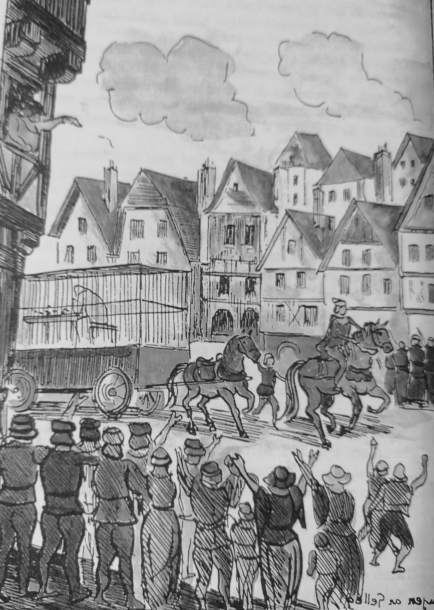
Illustration d'Eujen ar Gelleg
tirée de "Marc'heger ar Gergoad",1994
A
Collorec
, je trouvai un charpentier, nommé
Jean Couchennec
, qui me dit qu'il savait aussi le conte de
Merlig
(il l'appelait ainsi); mais malheureusement il était de baptême, par conséquent ivre, et devait l'être encore le lendemain et peut-être le surlendemain. Je compte retourner le voir, car il m'a affirmé qu'il sait plusieurs autres contes. Et, en effet, je me suis assuré qu'il a dans le pays la réputation d'un maître conteur.
Dans le pays de
Tréguier
, j'avais trouvé le nom d'
Erlinn
dans un conte où une
jeune fille, également déguisée en homme
, est
aussi envoyée, comme
troisième et dernière épreuve
, pour s'
emparer d'un animal
qui habite une forêt, et qui est la terreur de pays.
Dans une autre version, dont la fable est construite sur les mêmes ressorts:
l'animal s'appelle
Santirinn
[=Satyre+Merlinn?], et des
armées entières
envoyées contre lui ont été complètement détruites. Ce qui me fait croire que la Santirine est encore une altération du nom de
Merlin
, qui, comme on sait, prenait telle forme qu'il lui plaisait, c'est que je trouve dans le conte breton un épisode qui est aussi, presque mot pour mot, dans
le roman français de Merlin, de Robert de Boron
:
Quand la Santirine est prise et qu'elle suit docilement, sous la forme d'un
poulain
, la jeune fille qui l'amène à la cour du roi de France (du roi Vortigern, dans le roman français), ils rencontrent en route le convoi d'un enfant, que l'on porte en grand deuil au cimetière. Le bedeau chante devant le cercueil, et le père, ou du moins celui qui est cru tel, pleure par derrière. Tout le monde est triste. La Santirine
se met à rire
bruyamment. Interrogée par la jeune fille pourquoi elle rit quand les autres pleurent, elle répond: Je ris de voir le vrai père qui chante devant (le bedeau), et cet imbécile, qui n'est que le père nourricier, sa femme le sait bien, qui pleure par derrière! La Santirine fait encore plusieurs autres révélations semblables.
Je trouve souvent dans nos contes bretons des
souvenirs des romans français du moyen âge
, comme Huon de Bordeaux, Orson et Valentin, les Quatre fils Aymon, etc... Ces romans étaient lus dans les châteaux, et de là ils descendaient dans le peuple, qui les arrangeait et les modifiait à sa guise, les altérant, les interpolant et les mêlant à d'autres fables populaires.
C'est sans doute de cette manière que le nom de Merlin s'est conservé dans les récits de nos paysans;
dans la poésie, je ne l'ai jamais rencontré.
Comme dans
"Koadalan"
, l'homme sauvage omniscient dans ce conte ne s'appelle pas
"Merlin"
, mais celui-ci est aisément reconnaissable dans le personnage du
Satyre
: Il ne peut être capturé que
par une fille vierge déguisée en homme
. Sa capture met en œuvre des artifices vaguement apparentés à ceux utilisés pour celle de Merlin: neuf bassins de cuivre emplis de lait alternant avec des morceaux de pain trempés dans du lait (Contes populaires de Basse Bretagne, t. II, p.314-330) excitent la
gourmandise
du monstre, tout en mobilisant son attention; l'opération est suivie par la jeune fille grimpée dans un arbre.
Ce qui caractérise ce conte, ce sont les emprunts divers à d'autres sources:
à la mythologie classique, - le monstre a nom
"Satyre"
et, comme celui de
Méduse
, son regard tue;
à la légendes plus tardive de la
Licorne
à qui seule une vierge peut passer un licol (ici, la licorne est tuée et le licol est passé au satyre). Selon E. Philipot, le lait remplace ici le vin dont « on peut être assuré qu’il était traditionnel à cet endroit. »
le terrible sanglier rappelle
"Le sanglier d'Erymanthes"
vaincu par Hercule. Ou le terrible
sanglier de Calidon
tué par
Méléagre
dans la fable grecque. Ou encore le sanglier
Twrch Trwyth
que
Culhwch
doit vaincre pour conquérir Olwen dans le conte gallois.
Ce véritable catalogue de thèmes de contes reprend les mêmes épisodes que le récit du Strasbourgeois
Martin Montanus
(après 1537- après 1566) dont le recueil de contes drolatiques
« Wegkürzer »
(1557) servit de modèle, en 1812 et 1819 aux frères Grimm pour le conte KHM20
« Le vaillant petit tailleur »
(Das tapfere Schneiderlein)
. Ce conte correspond à pas moins de 6 indicatifs de la classification ATU : 1640, 1051, 1052, 1060, 1062, 1115. On assiste à la capture dans la chapelle du sanglier et à celle de la licorne dont la corne unique demeure fichée dans le tronc d’un arbre. Ici pas de mise à mort. C’est un quiproquo qui vaut au tailleur son ascension sociale foudroyante (il épouse la fille du roi). Ayant tué sept mouches, il se vantait de cet exploit en brodant sur sa ceinture la phrase sibylline
« Siebene auf einen Streich »
(Sept d’un coup !), dans un environnement infesté de dangereux géants dont on pressent l’origine scandinave : Norvège et Islande.
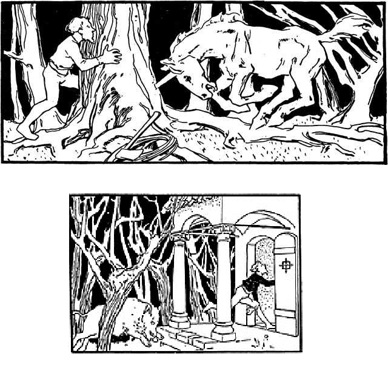
La licorne et le sanglier dans "Le vaillant petit tailleur"
illustré par Otto Ubbelohde (1867-1922)
Le
cousinage
par imaginaire commun entre la Bretagne et la Scandinavie s’observe également à propos du chant du Barzhaz
« An Aotrou Nann » (Sire Nann)
qui ressemble fort à la vise danoise « Elverskud » (Le coup porté par l’elfe). Les ballades scandinaves (*) procèdent certainement de la littérature qui florissait à la cour des rois normands d’Angleterre et à celle du roi de France. En 1226 le « Roman de Tristan » était traduit en norvégien à la demande du roi Haakon Hakonarson. A la même époque paraît un « Livre des Lais »
(Lioda bok)
où sont consignées, selon le prologue, « des histoires composées en Bretagne du Sud, un pays situé en France »
(Sydra Braetland er ligger i Franz)
. De sorte que, si Lixur et le Petit Tailleur sont liés par un processus de contamination, on ne peut dire avec certitude dans quel sens elle eut lieu.
(*) M. Moe dans « Eventyrlige Sagn in den aeldre historie » (Légendes aventureuses de l’histoire ancienne, Oslo, 1906 ; p.580 et ss.) du Pr. Moltke Moe (Norv.) qui voit un épigone de Merlin dans Marmael ou Marmennill ou Marbendilt, des noms, selon lui, antérieurs à Geoffroy, sous la forme Marmennilt.
Ce qui retient surtout l'attention, c'est le comportement de
ce Satyre qui semble rire et pleurer à contretemps
et qui s'avère plus perspicace dans ses réactions que le commun des mortels.
Cette attitude étonnante en fait le frère du Merlin de la
"Vita Merlini"
de Geoffroy de Monmouth que l'on date d'environ 1150, personnage fort différent de celui de l'
"Historia Regum Britanniae"
du même auteur, comme on l'a dit. Geoffroy s'est peut-être lui-même inspiré du
Lailoken
de la
"Vita Sancti Kentigerni"
, un manuscrit latin de 1147. (cf.
Merlin au berceau
, § "Contexte littéraire").
Ce point n'a pas échappé à Luzel qui fait le rapprochement avec un ouvrage puisant à la même source. Il écrit:
"L’épisode de l’enterrement de l’enfant, dans ce conte, doit être un souvenir d’un épisode semblable du "Roman de Merlin", de
Robert de Boron
, poète du XII° siècle:
Merlin chevauchait pour se rendre à la cour du roi Vortigern,[...] Voilà qu’on portait un enfant en terre. [...] Quand Merlin vit ces gens qui pleuraient et les prêtres, qui chantaient, il s’arrêta et éclata de rire. On lui demanda la cause de cette conduite. «Je ris, dit-il, d’une grande merveille que voici: Voyez ce prud’homme qui pleure et puis ce prêtre qui chante devant tous les autres. Il devrait, en vérité, faire le deuil du prud’homme; car, sachez que cet enfant qu’on porte en terre est son fils [...] Allez à la mère, et demandez-lui pourquoi le sire mène si grand deuil [...] Dites-lui: Nous savons aussi bien que vous que l'enfant est le fils du prêtre [...]» Quand la femme entendit cette réponse, elle [...] les supplia de n’en rien dire à son mari...
C’est à peu près
le seul souvenir
, avec quelques autres passages de ce même conte, que nous ayons rencontré, dans le peuple, du fameux prophète Merlin. "
Cette dernière assertion est surprenante, si l'on considère que Luzel fournit
la moité des références à Merlin
de la présente étude!
En revanche, il semble certain que Capitaine Lixur ainsi que la Santirine du 2ème rapport de mission soient
les seuls contes de la série à inclure l'épisode des rires et des pleurs insolites
.
La théorie chère à Luzel d'une la tradition populaire essentiellement tributaitre d'ouvrages littéraires, en l'occurrence l'œuvre de Robert de Boron, pourrait effectivement trouver à s'appliquer dans ces cas précis.
Le
Merlin l'Enchanteur
de La Villemarqué paru en 1861 contient des citations latines de la
Vie de Kentigern
et de la
Vie de Merlin
, appelée
Vita Merlini Caledoniensis
où l'épisode de la feuille révélatrice qui accuse sa sœur Ganieda préfigure celui du rire à contretemps du Satyre.
UN seigneur vivait tranquillement à la campagne avec ses trois enfants, trois filles. Il était veuf.
Mais, la guerre éclata tout à coup, et il reçut l’ordre de son roi de se rendre à l’armée, avec un cheval, et équipé à ses frais, comme c’était la coutume autrefois. Le voilà désolé, à la pensée qu’il lui faudrait abandonner ses filles, sans appui et sans protection.
— Ne vous inquiétez pas ainsi, mon père, lui dit
sa fille aînée
, je partirai à votre place.
— Hélas! ma pauvre enfant, lui répondit-il, cela n’est pas possible.
— Vous vous trompez, mon père, et vous verrez que, quand j’aurai revêtu votre équipement de guerre, je ferai un beau soldat et que personne ne se doutera que je suis fille.
Elle insista tant, que son père consentit à la laisser partir. Mais, dès qu’elle fut sortie de la cour, il prit son fusil et courut à travers champs l’attendre au bord d’une route où elle devait passer. Il voulait l’éprouver. Il se cacha derrière un buisson, et, quand il la vit venir, il tira sur elle, à poudre, en criant: — «La bourse ou la vie!»
La fille tourna bride aussitôt, et courut à la maison, tout effrayée.
Son père y était rendu avant elle et lui dit:
— Qu’y a-t-il de nouveau, mon enfant? Il me semble que tu n’es pas allée loin.
— J’ai été attaquée par une bande de voleurs, qui ont tiré sur moi, et j’ai été heureuse de pouvoir leur échapper.
— Quand je te disais, ma pauvre enfant, que tu n’irais pas loin! Mais, je suis heureux de te voir revenue sans mal, et je partirai moi-même demain matin.
— Non pas, mon père, dit
la puînée
, c’est moi qui partirai demain, et vous resterez à la maison avec mes sœurs.
Et la puînée partit aussi, le lendemain. Mais, elle n’alla pas plus loin que son aînée, et s’en retourna bientôt, tout effarée, en disant qu’elle aussi avait rencontré des brigands, qui avaient tiré sur elle et l’avaient poursuivie jusqu’à la porte du château.
C’était tout simplement son père, qui avait voulu l’éprouver, comme son aînée.
— A mon tour, à présent, dit
la cadette
, et je partirai aussi, demain matin.
— Ma pauvre enfant! lui dit son père, tu vois ce qui est arrivé à tes sœurs.
— Peu importe, répondit-elle, je veux aussi essayer.
Et elle partit, en effet, le lendemain matin, pleine de courage et de résolution.
Son père alla aussi l’attendre au bord de la route et déchargea encore son fusil, quand il la vit venir. Mais, au lieu de s’en retourner, comme ses sœurs, elle éperonna son cheval et passa outre.
En arrivant
à Paris
, elle alla tout droit trouver le roi, et lui dit que son père, vieux et malade, ne pouvant se rendre à l’armée, y envoie son fils, à sa place.
— C’est fort bien, répondit le roi.
On lui apprit l’exercice, à faire des armes, et elle faisait des progrès si rapides, qu’elle monta vite en grade. Au bout d’un an, elle était capitaine.
Un jour que l’on passait une grande revue, dans la cour du palais du roi, et que la reine y assistait, à son balcon, elle remarqua le jeune officier, et lui trouva si bonne mine et une tournure si distinguée, qu’elle voulut l’avoir pour page. Elle le demanda au roi, qui le lui accorda volontiers. On l’appelait à l’armée le
capitaine Lixur
Le beau page suivait partout la reine. Souvent, elle lui faisait chanter des chansons ou conter des contes de son pays, et elle y prenait beaucoup de plaisir. Elle devint
amoureuse de son page
, et lui tenait souvent de tendres propos et le regardait d’un air langoureux; mais, le jeune officier feignait de n’y rien comprendre. Les courtisans et les dames de la cour ne tardèrent pas à devenir jaloux de la faveur dont il jouissait, et ils cherchèrent à se débarrasser de lui. Ils délibérèrent sur la manière dont il fallait s’y prendre, et il fut convenu que l’on dirait au roi que le capitaine Lixur s’était vanté d’être
capable de tuer le sanglier du bois voisin
, qui causait tant de ravages dans le pays.
Un des courtisans alla donc trouver le roi et lui dit:
— Si vous saviez, sire, ce dont s’est vanté le capitaine Lixur?
— De quoi s’est-il donc vanté?
— De tuer le sanglier de la forêt, qui vous fait tant de mal.
— Ce n’est pas possible: un animal si terrible et qui a mis en fuite et maltraité des régiments entiers envoyés pour le prendre.
— Je vous assure, sire, qu’il a dit qu’il en viendrait facilement à bout.
S’il l’a dit, il faut qu’il le fasse, ou
il n’y a que la mort pour lui
. Dites-lui de venir me parler.
Le capitaine Lixur se rendit auprès du roi, qui lui dit:
— Comment, capitaine Lixur, vous avez dit être capable de me délivrer du vieux sanglier qui désole tout le pays.
— Je n’ai jamais dit rien de semblable, sire.
— Si, vous l’avez dit, et il faut que vous le fassiez, ou il n’y a que la mort pour vous. Je vous ferai donner tout ce dont vous aurez besoin pour cela. Allez donc et délivrez-moi vite de ce monstre, qui me cause plus de mal que toute une armée ennemie.
Le capitaine, obligé de faire contre mauvaise fortune bon cœur, prit ses armes, monta à cheval et se dirigea vers le bois, tout rêveur et triste. Avant d’y pénétrer, il descendit de cheval et s’assit sur l’herbe, près d’une fontaine, pour manger un morceau et boire un coup, afin de ranimer ses forces et son courage, car il n’était rien moins que rassuré. Il vit bientôt venir à lui
une vieille femme, couverte de guenilles
, courbée sur un bâton de houx et se traînant à grand-peine. Et elle dit, d’une voix tremblante:
— Ayez la bonté de me donner quelques miettes de votre repas, mon bon seigneur, car je n’ai pas mangé depuis longtemps et je me meurs de faim.
— Avec plaisir, grand-mère.
Et il lui donna du pain blanc, un peu de lard et un verre de vin, que la vieille mangea et but; puis elle dit:
— Tu as été bien avisé, capitaine Lixur, de me traiter comme tu l’as fait, et tu t’en trouveras bien. Je sais où tu vas et ce qui t’embarrasse. Le roi t’a ordonné, sous peine de mort, de prendre et de lui amener, mort ou vif, le vieux sanglier de la forêt, dont personne n’a pu venir à bout, jusqu’à présent. Toi, tu y réussiras, avec mon aide, et à la condition de faire bien exactement ce que je te dirai. Écoute-moi donc bien: Quand tu auras pénétré sous le bois, tu rencontreras, vers le sud,
une vieille chapelle en ruine
, dont le toit s’est effondré, et où l’ortie, les ronces et les herbes folles poussent en liberté. Tous les jours, à midi juste, le sanglier
y vient se rouler sur la pierre sacrée de l’autel
, renversée à terre. Cache-toi derrière la porte, et, dès que l’animal aura pénétré dans la chapelle, sors vite et tire la porte derrière toi, pour l’empêcher de sortir. Puis, tu courras à une petite fenêtre, qui est du côté du Levant, et par où tu verras le sanglier, étendu tout de son long sur la pierre de l’autel. Il est noir,
avec une marque blanche au milieu du front
. Tu le viseras à cet endroit, et, si tu peux l’y atteindre, il mourra aussitôt, en poussant des grognements et des cris épouvantables.
Le capitaine Lixur remercia la vieille, qui se retira alors, en lui souhaitant bonne chance.
Il remonta à cheval et pénétra sous le bois, un peu rassuré. Il trouva facilement la vieille chapelle en ruine, y enferma le sanglier, qui ne manqua pas d’arriver, à midi sonnant, le visa au front, par la petite fenêtre du côté du Levant, et le tua roide. Puis, il le chargea sur son cheval et s’en retourna tranquillement au palais du roi.
Quand on le vit rentrer en ville, avec le monstre privé de vie, ce fut une joie et une allégresse générale, car la bonne nouvelle se répandit vite, dans tous les quartiers, et l’on criait sur son passage: — «Vive le capitaine Lixur, qui nous a délivrés du sanglier!»
Le sanglier et le vaillant petit tailleur par G.Hinke (c.1920)
Le roi aussi était au comble de la joie, et il invita le capitaine Lixur à dîner à sa table, avec les principaux de la cour.
Cependant, l’amour de la reine pour son beau et vaillant page augmentait chaque jour, et la situation de celui-ci devenait fort embarrassante. Mais, à toutes les attentions et aux avances dont il était l’objet, il opposait une indifférence absolue et feignait de ne rien comprendre. Si bien que la reine, dépitée, lui demanda un jour:
— De quel pays êtes-vous, capitaine Lixur?
— De la Basse-Bretagne, Madame.
— Est-ce qu’il y a aussi des
hommes intelligents
, dans ce pays-là?
— Autant qu’en aucun autre du monde, Madame.
— On ne le dirait vraiment pas, d’après ce que j’en connais.
Il feignit de ne pas comprendre, et ne répondit point.
La reine était furieuse et ne pouvait se contenir. Elle alla trouver le roi et lui dit:
— Si vous saviez, sire, ce qu’a dit le capitaine Lixur?
— Qu’a donc dit le capitaine Lixur?
— Il a dit qu’il était capable de
prendre la Licorne
et de l’amener ici, comme il l’a fait du sanglier.
— Il n’est pas possible qu’il ait dit cela, à moins d’avoir complètement perdu la tète. Songez donc que la Licorne traverse de sa corne unique neuf grands troncs de chênes de rang, et qu’elle m’a détruit des armées entières envoyées pour s’emparer d’elle.
— Il l’a dit, je vous l’affirme. Depuis qu’il a pris le sanglier de la forêt, cet homme ne doute de rien, et se croit capable de tout. Vous lui diriez d’aller vous chercher la lune, qu’il ne dirait pas non.
— Eh bien! faites-lui dire de venir me parler; s’il l’a dit, il faut qu’il le fasse; il me rendra un fier service, s’il peut me débarrasser de la Licorne.
Et l’on prévint le capitaine que le roi voulait lui parler.
— Comment, capitaine Lixur, lui dit le vieux monarque, vous avez dit que vous étiez capable de prendre la Licorne et de me l’amener, comme vous l’avez fait du sanglier?
— Sire, je n’ai jamais dit rien de semblable, et ceux qui prétendent le contraire ne me veulent que du mal.
— Vous l’avez dit, capitaine Lixur, je le sais de bonne part, et il faut que vous le fassiez, ou il n’y a que la mort pour vous. Allez et songez à tenir votre parole.
Le capitaine s’en retourna, tout triste.
— Si la vieille fée de la forêt, pensait-il, ne vient encore à mon secours, je suis perdu.
Le lendemain matin, au lever du soleil, il se met en route. Arrivé à la lisière du bois, il s’assoit sur le gazon, au même endroit que la première fois, pour manger un morceau et boire une goutte. Il aperçoit encore la vieille qui s’avance vers lui, lentement et courbée sur son bâton, et cette vue le rassure. Il se lève et va au-devant d’elle, son chapeau à la main. Il la fait manger et boire, puis elle lui parla de la sorte:
— Votre épreuve, ma pauvre enfant (elle savait bien qui elle était), est des plus périlleuses. Pourtant, avec mon aide et si vous faites de point en point comme je vous dirai, vous pourrez encore vous en tirer. Écoutez-moi donc bien. La Licorne est un terrible animal. Elle transperce de rang neuf troncs de grands chênes, de la corne unique qu’elle porte au milieu du front. Elle arrivera à midi, juste. Elle s’annoncera par un cri qui fera trembler de frayeur tous les animaux de la forêt. Elle viendra du côté du midi. Vous verrez neuf grands chênes, rangés sur la même ligne, et dont les troncs sont percés de part enpart de plusieurs trous. Tous les jours, elle vient éprouver ses forces contre ces chênes.
Vous vous cacherez derrière le dernier, au nord
, non pas au milieu du tronc, autrement, vous seriez transpercée vous-même, mais un peu de côté. La Licorne prendra son élan, poussera un cri terrible et se précipitera sur les arbres, du côté du midi. Sa corne dépassera le neuvième et viendra sortir près de vous. Dès que vous la verrez, vous sortirez de votre cachette, vous courrez à la bête et
lui couperez le cou avec votre sabre
. Vous n’aurez rien à craindre, car il lui faut plus de temps pour retirer sa corne des arbres que pour l’y enfoncer. Ayez bien soin aussi qu’elle ne vous aperçoive pas avant d’avoir enfoncé sa corne dans les arbres, car
son regard seul suffirait pour vous donner la mort
. Allez, mon enfant, du courage et bonne chance.
Et la vieille se retira alors.
Le capitaine Lixur, rassuré, pénétra dans le bois. Il reconnut facilement, à leurs trous, les arbres que la fée lui avait désignés. Midi approchait, et il se cacha derrière le dernier, au nord. Bientôt il entendit un cri épouvantable, qui le glaça de frayeur, bien qu’il ne fût pas peureux. Et la Licorne arriva, un instant après. Elle prit son élan, poussa un autre cri, fondit tête baissée sur le premier des neuf chênes, au midi, et la pointe de sa corne sortit du dernier, si près du capitaine Lixur, que la peau de sa cuisse en fut effleurée. Cependant il n’en perdit pas la tête, et il courut à la bête, son bon sabre à la main, et lui coupa la tête.
Mais, ne pouvant l’emporter, à cause de sa corne, engagée dans les neufs troncs de chênes, il chargea à grand-peine son corps sur son cheval, et reprit tranquillement le chemin de la ville. Une foule nombreuse était accourue à sa rencontre, et le conduisit en triomphe jusqu’au palais du roi, avec des chants et des cris de joie. Le roi vint lui-même le recevoir, à la porte de son palais, et l’embrassa devant tout le monde. Puis, il y eut un grand dîner, à la cour, suivi d’illuminations et de réjouissances publiques.
Les fêtes terminées, le capitaine Lixur reprit ses fonctions de page auprès de la reine, qui avait demandé à le conserver, car le roi voulait l’élever au grade de général. La reine ne connut plus de frein à sa passion; elle embrassait son page, lui tenait des propos libertins… C’en était honteux.
Cependant le jeune homme restait indifférent et impassible, ce qui l’exaspérait jusqu’à la folie.
— O le sot Breton! s’écriait-elle; il me dédaigne! Mais, il me le paiera.
Et elle courut trouver le roi, furieuse.
— Sire, sire, s’écria-t-elle, le capitaine Lixur s’est vanté de prendre et de vous amener captif le Satyre, ce monstre qui désole et terrifie tout le royaume.
— Encore le capitaine Lixur! s’écria le roi, qui commençait à croire qu’il y avait en tout ceci plus de malveillance que de véritable intérêt pour lui et ses sujets; laissez-lui donc un peu de paix; on dirait que vous voulez sa mort; je ne puis croire, du reste, qu’il se soit vanté de ce que vous dites.
— Je vous affirme qu’il s’est vanté de vous amener le
Satyre
captif, et ce monstre vous fait trop de mal, à vous et à vos sujets, pour que vous hésitiez un moment à profiter de l’occasion qui se présente de vous en délivrer.
— Il faut, si ce que vous dites est vrai, que le capitaine Lixur ait complètement perdu la tête; ses succès contre le Sanglier et la Licorne lui auront sans doute inspiré tant de présomption. Mais, il ne sait pas ce que c’est que le Satyre: un monstre qui n’a pas son pareil, au monde, et qui fait le désert partout autour de lui;
le venin et la puanteur qu’il exhale frappent de mort tout ce qui vit à sept lieues à la ronde
autour de lui; il m’a détruit des armées entières envoyées contre lui.
— Raison de plus pour que vous ne négligiez pas l’occasion qui s’offre à vous de vous débarrasser d’un tel fléau. Le capitaine Lixur a réussi à tuer le Sanglier et la Licorne, qui étaient cependant deux monstres bien redoutables, et rien ne vous assure qu’il sera moins heureux contre le Satyre; il faut toujours essayer.
— Eh bien! faites dire au capitaine Lixur de venir me parler.
Et le capitaine Lixur se présenta encore devant le roi, avec de sombres pressentiments.
— Vous vous êtes donc encore vanté, capitaine Lixur, lui dit le vieux monarque, de pouvoir me délivrer du Satyre, comme vous l’avez fait du Sanglier et de la Licorne?
— Croyez bien, sire, que jamais je n’ai rien dit de semblable, et la personne qui vous a dit le contraire en veut certainement à ma vie.
— C’est aussi ce que vous me disiez pour le Sanglier et la Licorne; mais, je connais trop bien votre bravoure, et le Satyre me fait trop de mal, à moi et à tous mes sujets, pour que j’hésite un instant à saisir l’occasion de nous en délivrer.
— C’est à moi-même qu’il l’a dit, sire, interrompit la reine, qui avait voulu assister à l’entrevue.
— Vous l’entendez, capitaine Lixur? reprit le roi; il faut que vous m’ameniez le monstre, mort ou vif, ou il n’y a que la mort pour vous.
— Puisqu’il en est ainsi, autant vaut être tué par le Satyre que par vos soldats. Vous me donnerez au moins tout ce dont j’ai besoin pour tenter l’aventure?
Oui, vous n’avez qu’à demander.
— Il me faut d’abord un
bon cheval
, pour me porter, puis
sept autres chevaux avec leur charge d’argent
.
C’est beaucoup, mais, si vous me délivrez du Satyre, j’y gagnerai encore: vous les aurez.
Le lendemain matin, le capitaine Lixur se mit en route, monté sur un beau cheval et suivi de sept autres chevaux portant des sacs pleins d’argent. Après plusieurs jours de marche, il arriva à la
forêt des Ardennes
, où se tenait le Satyre. Il descendit de cheval et s’assit près d’une
fontaine
, pour manger un morceau et boire un coup, avant d’entrer dans le bois. Il était très inquiet de n’avoir pas rencontré la vieille fée, dans son chemin, et il conservait peu d’espoir de la revoir, tant il était loin du lieu où elle s’était déjà montrée à lui. Néanmoins, elle vint encore, et dès qu’il l’aperçut, il courut à sa rencontre et l’embrassa. Ils mangèrent un peu, burent du vieux vin de la cave du roi, puis la vieille parla de la sorte:
— On te met à de dures épreuves, ma pauvre enfant; c’est la reine qui est cause de tout. Mais, son tour viendra aussi d’être éprouvée.
On t’envoie prendre le Satyre, dans la forêt des Ardennes. Je ne saurais te dire le nombre des rois, des princes, des ducs et des généraux qui ont déjà tenté l’aventure, et y ont perdu la vie. Et pourtant, quelque périlleuse que soit l’entreprise, tu pourras encore t’en tirer à ton honneur, si tu fais exactement tout ce que je te dirai. Écoute-moi donc bien. Le monstre habite une caverne sombre et profonde, au milieu de la forêt, à sept lieues d’ici. Ni homme ni animal vivant ne peut l’approcher, à sept lieues à la ronde, à cause de l’odeur infecte et du venin mortel dont il empoisonne l’air: de plus, un seul regard de lui suffit pour donner la mort. Mais, voici
un onguent dont tu te frotteras le visage et les mains
, et qui te préservera de l’infection. Si tu parviens à éviter ses regards et à passer inaperçu, tout ira bien. Voici comment tu devras te conduire: écoute bien.
Le Satyre ne sort de sa caverne que vers l’heure de
midi
, chaque jour, pour se promener au soleil. Il est rouge comme le feu, et quand le soleil donne dessus,
il n’est œil d’homme ou d’animal qui puisse le regarder, sans en être aveuglé
, et celui sur qui tombe son regard tombe aussitôt
mort
, comme une mouche. Il faudra donc, avant tout, éviter son regard, et pour cela, voici ce que tu devras faire: la nuit, pendant que le monstre dormira, tu placeras, sur une seule ligne,
neuf bassins de cuivre remplis de lait doux
, depuis l’entrée de la caverne jusqu’à un
grand chêne
, qui en est à environ deux cents pas, et
sur lequel tu monteras
. Tu disposeras les bassins à vingt pas l’un de l’autre, et, dans les intervalles, tu sèmeras
des morceaux de pain blanc
trempés dans le lait, que le Satyre mangera, tout en marchant,
ce qui l’empêchera de lever les yeux
et de t’apercevoir, sur l’arbre où tu te tiendras. A mesure qu’il boira du lait, il perdra de son venin et de sa puanteur, et quand il sera arrivé sous ton arbre, après avoir épuisé les neuf bassins, tu crieras: «Holà, Satyre, te voilà pris» Alors, il lèvera la tête et sourira, à sa guise, en te voyant sur l’arbre. Tu descendras aussitôt et lui passeras un licol au cou, sans qu’il oppose aucune résistance, et
il te suivra, doux et tranquille
comme un agneau. Tu le conduiras au palais du roi, et là,
il dira des vérités
qui étonneront tous ceux qui les entendront.
Voilà, mon enfant, comme tu devras te conduire, pour mener ton entreprise à bonne fin. Et maintenant, je te fais mes adieux, car tu ne me reverras plus.
Et la fée disparut.
Le capitaine Lixur, rassuré désormais, s’occupa aussitôt des préparatifs de son entreprise. Comme l’argent ne lui manquait point, il trouva facilement les bassins de cuivre et le lait dont il avait besoin. Pendant la nuit, il posa les bassins sur des trépieds, depuis l’entrée de la caverne jusqu’au chêne que la fée lui avait désigné, il les remplit de lait, sema des morceaux de pain blanc trempés de lait dans les intervalles, fit tout enfin comme on le lui avait recommandé, et, à dix heures du matin, toutes ses dispositions étaient prises. Puis, il monta sur l’arbre et attendit.
Aucun être vivant ne se faisait voir ni entendre, dans la forêt, tant l’air était infecté et mortel; mais, sa pommade le garantissait contre l’infection. Le temps était beau et le soleil brillait. A midi, le monstre sortit de sa caverne. Il était rouge ardent, et ressemblait assez à
un poulain d’un an
, ou environ. A la vue des bassins de cuivre, rangés à la file, sur leurs trépieds, il parut étonné. Il s’approcha du premier, le flaira et le huma avec avidité. Puis le second, le troisième et le quatrième furent vidés, avec la même rapidité. Et à mesure que le lait disparaissait, l’air se purifiait et devenait respirable. Quand le dernier bassin, placé sous l’arbre, fut aussi absorbé, le capitaine Lixur cria:
— Holà! Satyre, te voilà pris!
Et l’animal leva alors la tête, aperçut le capitaine Lixur sur l’arbre et fit: «Hen! hen! hen!..» en secouant la tête et lui souriant, à sa guise. Le capitaine descendit alors de l’arbre, passa un licol de chanvre au cou du Satyre, qui se laissa faire, et lui dit:
Suis-moi à la cour du roi.
Et l’animal le suivit, aussi tranquillement qu’un jeune poulain que l’on ramènerait du champ à son écurie.
A peine furent-ils sortis de la forêt, qu’ils rencontrèrent, sur la route, le convoi d’
un petit enfant que l’on conduisait au cimetière
. Le père, la mère et les parents suivaient en pleurant, les prêtres chantaient devant. Le Satyre se mit à
rire
, en secouant la tête et en faisant: «Hen! hen! hen!»
Pourquoi donc rit-il, quand les autres pleurent? se demanda le capitaine Lixur.
Plus loin, comme ils passaient sur la place publique d’une petite ville, on se préparait à y
pendre un grand criminel
, et il y avait une grande affluence de spectateurs.
Le Satyre se mit à
pleurer
.
— Que signifie ceci? se demanda encore le capitaine; tout le monde est heureux de voir délivrer le pays d’un criminel que chacun redoutait, et mon animal pleure!
Ils vinrent à passer, un peu plus loin, au bord de la mer. La mer était mauvaise, et l’on voyait du rivage
un navire qui naufrageait
. Tout l’équipage était sur le pont, en prière, et élevant les yeux et les mains vers le ciel. C’était un spectacle navrant. Le Satyre se mit encore à
rire
.
— Qu’est-ce donc que cet animal, se dit le capitaine Lixur, qui rit, quand il voit le mal, et qui pleure, quand il voit le bien? Ne serait-ce pas le Diable?
Ils continuèrent leur route, tranquillement.
La nouvelle arriva avant eux dans la ville que le capitaine Lixur revenait avec le Satyre captif, et une foule immense sortit à leur rencontre, et l’on se disait partout avec des transports de joie:
— Le capitaine Lixur a pris le Satyre! quel homme, que ce capitaine Lixur!...
Le roi lui-même alla le recevoir, aux portes de la ville, avec toute la cour et la garnison, musique et bannières en tête.
En voyant l’animal suivre paisiblement le capitaine Lixur, qui le tenait par un simple licol de chanvre, chacun s’étonnait et disait:
— Comment, c’est là ce monstre si terrible, qui a donné la mort à tant de héros et dispersé de si vaillantes armées! On dirait un jeune poulain, paisible et doux comme un agneau!
Quand le Satyre entra dans la cour du palais royal,
il leva la tête pour regarder la reine
, qui se tenait à son balcon, entre deux filles d’honneur, et lui
sourit
, comme s’il la connaissait, en secouant la tête et en faisant: «Hen! hen! hen!...»
Tout le monde en fut étonné, et l’on se demandait:
—Comment peut-il connaître la reine, pour la saluer ainsi?
Pendant huit jours entiers, il y eut des festins et des réjouissances publiques.
Le capitaine Lixur visitait, plusieurs fois par jour, le Satyre, dans son écurie, et le soignait lui-même, lui donnant à manger et à boire.
Au bout de huit jours, l’animal lui dit:
— A présent que les fêtes sont terminées, nous allons voir une autre danse.
— Comment, Satyre, vous parlez donc aussi? lui dit le capitaine, étonné.
— Oui, je parle aussi, et j’ai des choses curieuses à dire.
— Vraiment? Quoi donc?
—La vérité. Dites au roi de passer la revue de son armée, demain, dans la cour de son palais, et je dirai la vérité, devant tout le monde, et vous entendrez de belles choses.
Le capitaine Lixur courut trouver le roi et lui dit:
— Sire! sire! vous ne savez pas?
— Quoi donc? demanda le monarque.
— Le Satyre parle, comme un homme.
— Ah! vraiment? Et qu’a-t-il donc dit?
— Il a dit que si vous voulez passer la revue de votre armée, demain, dans la cour du palais, il dira des choses qui étonneront tout le monde, et qui seront pourtant vraies.
— Je suis bien curieux d’entendre ses vérités, et je vais donner des ordres pour que la revue ait lieu, demain.
Toute la ville était venue voir la revue. Le roi était à cheval, au milieu de la cour, entouré de courtisans et de généraux. La reine était sur son balcon, avec ses deux filles d’honneur, qui ne la quittaient jamais. L’attente était grande. A midi juste, le Satyre devait parler. Quand les douze coups eurent sonné, à l’horloge du palais, le capitaine Lixur lui parla ainsi:
— Dites-nous, à présent. Satyre, ici, en présence du roi et devant tout le monde, pourquoi vous avez ri, lorsqu’au sortir de la forêt, nous rencontrâmes le convoi d’un
enfant que l’on allait enterrer
?
Et le Satyre répondit:
— Si vous saviez ce que je sais, moi, vous auriez sans doute ri vous-même.
— Dites-nous ce que vous savez, Satyre.
— Je riais de voir
le véritable père, le sacristain
, qui chantait, devant, pendant que
le père nourricier pleurait
, derrière.
Et tout le monde de rire.
— Et plus loin. Satyre, demanda encore le capitaine Lixur, lorsqu’en passant par une petite ville, nous vîmes
conduire au gibet un grand criminel
, pourquoi donc
pleuriez-vous
, alors que tout le monde était content?
— C’est que cet homme, qui avait commis tous les crimes et fait tout le mal possible, n’en avait aucun repentir et ne voulait pas écouter le prêtre qui l’exhortait à bien mourir, et je voyais à côté de lui
un diable prêt à emporter son âme.
— Effrayant! murmura la foule.
— Et plus loin encore, reprit le capitaine Lixur, comme en passant près de la mer, nous aperçûmes
un navire qui naufrageait
sur un écueil et tout l’équipage à genoux sur le pont priant et levant les mains et les yeux vers le ciel, pourquoi avez-vous ri à un spectacle si navrant?
— C’est qu’
au-dessus de chaque naufragé, je voyais un ange prêt à emporter son âme au ciel
.
— Qu’est-ce donc que ce Satyre? se demandait la foule, de plus en plus intriguée, et admirant la sagesse de ses réponses.
— Enfin, demanda encore le capitaine Lixur, quand nous sommes entrés dans cette cour,
pourquoi avez-vous ri
, en voyant
la reine à son balcon avec ses deux filles d’honneur
?
— J’ai promis de dire la vérité, répondit le Satyre, et je la dirai jusqu’au bout, s’en fâche qui voudra.
— Emmenez cette vilaine bête! s’écria tout à coup la reine, de son balcon.
— Non, dit le roi, qu’il reste et continue de parler, car ce qu’il dit est plein de sens et de sagesse.
Et s’adressant au Satyre:
— Parlez, Satyre, et ne craignez pas de dire la vérité.
— Si j’ai souri, dit le Satyre, en voyant la reine à son balcon avec ses deux filles d’honneur, c’est que
ces prétendues filles, qui ne quittent jamais la reine, sont des hommes
, ce que vous ignoriez, sans doute.
Un grand étonnement d’abord, puis une explosion de rires accueillirent ces paroles, et tous les regards se portèrent sur le balcon, pour y chercher la reine et ses filles d’honneur: mais, elles avaient disparu. Le roi, seul, ne riait point; au contraire, il était fort en colère.
— Un mot encore, avant de finir, reprit le Satyre: quand le capitaine Lixur m’a pris, dans la forêt, j’ai aussi
souri, en le voyant perché sur son arbre
.
— Et pourquoi avez-vous-souri? demanda le roi.
—Parce que vous croyiez avoir envoyé un vaillant capitaine pour me prendre, lorsqu’en réalité c’était une jeune fille, et en effet,
je ne pouvais être pris que par une jeune fille
.
Tout le monde était ébahi de ce qu’il entendait, et la curiosité était à son comble.
— Holà! dit le roi, ce n’est pas tout de parler; il faut que vos paroles soient éprouvées.
— C’est aussi ce que je demande, dit le Satyre; faites faire l’épreuve.
Des médecins furent chargés de visiter les deux filles d’honneur de la reine, et, comme ils étaient hommes, on les trouva hommes. Le capitaine Lixur fut soumis à la même épreuve, et, comme il était fille, on le trouva fille, et la vérité des paroles du Satyre fut ainsi constatée.
— Eh bien! dit le roi, puisqu’il en est ainsi, que chacun soit traité suivant ses mérites.
Qu’on fasse chauffer la grande fournaise et qu’on y jette la reine avec ses deux filles d’honneur
, puisqu’elle ne voulait jamais s’en séparer.
Et quant au capitaine Lixur,
je l’épouserai dès demain,
et il sera ma femme et votre reine à tous
.
Le peuple entier applaudit aux paroles du roi, et il fut fait en tout comme il avait dit.
Et quant au Satyre, il resta aussi à la cour, et le roi en fît son premier ministre.
Le récit du
Murlu
(Contes populaires T. II, p. 296-313) a été recueilli par Luzel auprès de Guillaume Garandel, à Plouaret en 1871. L' authenticité du conte est garantie par le fait que Jef Philippe le retrouve pratiquement identique chez le conteur Jean-Louis Rolland en 1984: "Kontadenn Jozebig" le "Conte du petit Joseph".
E. Philipot (ouv. cité) voit dans ce nom l’influence du français (huron, hurluberlu…) et une forme qui, tout comme « Merlin », est empruntée au français.
Luzel assorti ce texte de la note suivante:
A rapprocher du conte de Straparole, Nuit V, fable I.
«Guerrin, fils unique de Philippe Marie, roy de Sicile, délivre un homme sauvage de la prison du père, et la mère, pour la crainte du père, l’envoya en exil, et l’homme sauvage, estant apprivoisé, délivra Guerrin de plusieurs grands inconvénients.»
Il n'y a sans doute pas de lien de filiation traçable entre ces deux contes. Tous deux procèdent de sources plus anciennes, en l'occurrence, par exemple, la mythologie grecque: l'histoire de
Persée délivrant Andromède
grâce à la tête de Méduse et le cheval ailé Pégase né de son sang.
Même si la tradition orale bretonne a emprunté ça et là certains éléments exogènes, le Merlin breton constitue un ensemble cohérent autonome.
Il y avait autrefois, au château de Keranrais, en Plouaret, un vieux seigneur qui allait à Rennes ou à Saint-Brieuc, chaque fois que les États de Bretagne s’y réunissaient. Il avait trois filles, Marguerite, Francesa et Aliette, et pas de fils.
Un jour, comme il partait pour se rendre à Rennes, ses filles lui dirent:
— Achetez à chacune de nous, père, un accoutrement de cavalier, pour aller à Paris offrir nos services au roi, qui croira que vous avez trois fils, au lieu de trois filles.
— Cela ne se peut pas, mes enfants, leur répondit-il, car, maintes fois, j’ai dit au roi que j’avais trois filles, et pas un fils.
— C’est égal, père, achetez-nous des accoutrements de cavaliers, et laissez-nous faire, ensuite.
Le vieux seigneur promit et partit, et, les États terminés, il revint avec tout ce qu’il fallait pour l’équipement de trois cavaliers. Les jeunes filles en furent heureuses, et il fut décidé entre elles qu’elles se rendraient à la cour du roi, mais, successivement et une par an, pendant trois ans.
L’aînée, Marguerite, partit la première. Elle fit ses adieux à son père et à ses sœurs et se mit en route.
Mais, dès qu’elle fut sortie de la cour du château, son père prit une vieille arquebuse rouillée, une veste de paysan avec un chapeau à larges bords, et courut à travers champs s’embusquer derrière un tronc d’arbre, au bord d’un chemin creux par où devait passer sa fille. Quand elle vint à passer, il se montra subitement, son fusil à la main, et cria: — «Halte-là! La bourse ou la vie!» Aussitôt la jeune fille tourna bride et revint à la maison, où elle arriva toute pâle et toute bouleversée. Son père, qui avait pris à travers champs, l’y avait devancée, et elle lui conta son aventure.
Le lendemain matin, Francesa voulut partir aussi, et il lui arriva absolument comme à sa sœur aînée.
Le troisième jour, ce fut le tour d’Aliette, qui n’avait encore que dix-sept ans. Son père l’éprouva comme les deux autres, en lui demandant la bourse ou la vie, comme un brigand; mais, au lieu de s’en retourner, comme ses sœurs, elle poussa son cheval en avant, força le passage, et continua sa route jusqu’à Paris.
Elle se rendit immédiatement à la cour, et se présenta au roi comme le fils du seigneur de Keranrais, qui venait se mettre à sa disposition, comme page, ou pour aller à la guerre, comme il lui plairait.
Le roi en fut d’abord étonné et dit:
— Le seigneur de Keranrais m’a dit lui-même qu’il n’avait pas de fils, mais trois filles.
— Excusez-moi, sire, répondit Aliette, sans s’intimider, c’est sans doute une surprise que vous préparait mon père, en parlant ainsi, car je suis bien son fils.
Le roi fut satisfait de l’intelligence et de la bonne mine du jeune homme, et le plaça comme page auprès de
la reine
. Celle-ci ne tarda pas à devenir amoureuse de lui. Mais, comme le page répondait à ses avances par une indifférence complète, elle en fit une maladie et
mourut
.
Cependant,
une des filles d’honneur de la reine s’étant trouvée enceinte, on en rejeta la faute sur le beau page breton
. Le roi le fit venir en sa présence et lui dit qu’il lui fallait épouser la fille d’honneur ou quitter la cour. Il eut beau protester de son innocence, on ne le crut pas. Il avoua alors au roi qu’il était non le fils, mais une des trois filles du seigneur de Keranrais, la plus jeune. Le roi fit vérifier le fait par son médecin, et celui-ci lui assura qu’elle avait dit la vérité.
La fille d’honneur fut écartelée entre quatre chevaux, et Aliette passa alors au service du roi et l’accompagna partout, toujours comme page; car, seuls, le médecin et lui connaissaient la vérité à son sujet. Le vieux monarque ne tarda pas à devenir aussi amoureux de son beau page; bien mieux,
il l’épousa
, et il y eut, à cette occasion, de grands festins et de belles fêtes.
Au bout de neuf mois,
la reine eut un fils
, un enfant superbe.
Des gens de la cour, en chassant, dans un bois voisin du palais du roi, y virent un jour
un animal extraordinaire
et comme ils n’en avaient jamais vu jusqu’alors. Ils s’en revinrent tout effrayés le dire au roi. Celui-ci envoya
son devin
avec une centaine de soldats pour observer l’animal. Le devin, de retour du bois, dit au roi:
— Sire, c’est un Murlu, un animal des plus redoutables.
— Il faut faire en sorte de
le prendre
, dit le roi, et de me l’amener en vie, de manière à ce qu’on puisse le voir et l’examiner, sans danger.
— Voici, dit le devin, comment on devra s’y prendre pour s’en rendre maître: Il faudra construire une grande
cage de fer
avec un
ressort
qui fera que la porte se fermera d’elle-même, quand on y entrera. On portera la cage dans le bois, on y mettra
de la viande, des gâteaux et du vin
, et on en laissera la porte ouverte. Des
soldats
se tiendront à l’affût, cachés derrière les troncs d’arbres et des buissons, pour guetter le moment où le Murlu y entrera. Dès qu’il y sera entré, la porte se fermera d’elle-même sur lui. On chargera alors la cage et l’animal
sur un chariot
et on vous les apportera dans la cour du palais.
On fit comme le devin avait dit, et le Murlu fut amené captif, dans la cage de fer. Il grinçait des dents, mordait les barreaux de sa prison et poussait des cris épouvantables. Le roi mit la
clef de la cage dans sa poche
, et dit que quiconque rendrait la liberté au Murlu serait puni de mort.
Un jour, le jeune fils du roi jouait avec des
boules d’or
, dans la cour du palais. Le Murlu, qu’on avait enfermé dans une tour forte, le regardait, à travers les barreaux de fer de sa prison.
Le prince lui lança une de ses boules
, et elle entra dans la tour, ce qui le contraria beaucoup.
— Rends-moi ma boule, cria-t-il au Murlu.
— Oui, si tu veux m’ouvrir la porte de la tour, répondit celui-ci.
— Je ne puis pas, je n’ai pas la clef.
— Rends-toi à la chambre de ton père, qui dort, en ce moment, prends la clef, qui est dans sa poche, puis viens m’ouvrir, et je te rendrai ta boule.
Le prince
déroba la clef
à son père, ouvrit la porte de la tour et mit en liberté le Murlu, qui lui rendit sa boule d’or et lui dit:
— Si jamais tu as besoin de secours, — et tu en auras besoin, —
appelle-moi et j’arriverai
.
Puis, il partit et retourna au bois.
Le prince remit ensuite la clef de la tour dans la poche de son père, qui dormait encore.
Cependant, le roi, qui venait tous les jours voir le Murlu, et lui jeter, à travers les barreaux, des gâteaux, dont il était friand, ne l’apercevant plus, s’en inquiéta. Il ouvrit la porte de la tour et vit qu’il avait disparu. Il entra dans une grande colère, alla trouver la reine, et lui dit:
— Le Murlu est parti! Qui lui a ouvert la porte de la tour?
— Je n’en sais rien, répondit-elle.
— Ce ne peut être que vous ou mon fils, car il n’y a que vous deux à pénétrer dans ma chambre, où la clef m’aura été dérobée, pendant mon sommeil.
— C’est moi! dit le jeune prince.
— Ah! malheureux! Pourquoi as-tu fait cela? J’ai juré de faire mourir celui qui mettrait le Murlu en liberté, quel qu’il fût, et je ne puis manquer à ma parole.
Et le vieux roi était furieux et désolé, à la fois.
Fuis, mon fils,
fuis vite, dit la mère
au jeune prince.
Le jeune homme descendit les escaliers, quatre à quatre, traversa lestement la cour et le voilà dans le bois. Il y rencontra le Murlu, qui lui demanda:
— Où vas-tu, mon garçon?
— Je n’en sais rien; mais, mon père est furieux de ce que je vous ai mis en liberté, et, si je n’avais pris la fuite, il m’aurait tué.
— Eh bien! monte sur mon dos, et je vais te porter là où ton père ne te retrouvera pas.
Il monta sur le dos du Murlu
, et celui-ci le porta au loin, bien loin, et le déposa à la porte d’un beau palais, en lui disant:
— Voilà le palais du
roi de Naples
. Va frapper à la porte et demande à être reçu comme valet, garçon d’écurie ou même porcher. Du reste, ne m’oublie pas, et quand tu te trouveras dans quelque danger, appelle-moi à ton secours, et j’arriverai aussitôt.
On le prit pour
garder les pourceaux
, et on lui promit pour gages
un écu pour chaque petit cochon qui naîtrait
.
Le lendemain matin, on lui confia deux cents verrats et cent truies, pour les aller garder tout le jour sur une grande lande, près d’un grand bois.
— Ne les laissez pas entrer dans le bois et ramenez-les à l’étable, au coucher du soleil, lui dit-on, pour toute recommandation.
Le Murlu vint lui tenir compagnie, durant la journée. Un peu avant le coucher du soleil, il rassembla son troupeau grognant, et s’aperçut qu’il avait sensiblement augmenté en nombre. En effet, chaque truie avait eu dix petits cochons.
— Voici qui va bien, pour commencer, se dit-il, si l’on me paye comme on me l’a promis.
Il ramena ses bêtes à l’étable: le portier les compta, lui remit un écu par tête d’augmentation, et lui dit:
— Demain, vous irez
garder les moutons
; vous aurez encore un écu par tête d’augmentation; mais aussi, s’il vous en manque une seule, vous serez pendu.
— Ceci commence à devenir peu gai, se dit-il. Il n’en dormit pas, de toute la nuit.
Le lendemain matin, on lui confia cent béliers et deux cents brebis, et il les mena sur la même lande où il avait mené les pourceaux, la veille.
Le Murlu vint encore le trouver et lui dit de laisser entrer ses bêtes dans le bois, qu'elles trouveraient de l’herbe à discrétion, tandis que la lande était brûlée et aride.
— Je ne veux pas les laisser entrer dans le bois, répondit-il, car si j’en perds une seule, je serai pendu.
— Fais comme je te dis, répliqua le Murlu, et ne crains lien, pendant que je serai avec toi.
Et voilà tout le troupeau dans le bois.
Dans ce bois, habitait un
géant
qui enlevait et dévorait tous les animaux du roi qui y entraient. Il voulut enlever tout le troupeau, mais le Murlu l’en empêcha, car il était sans doute plus fort que le géant.
Au coucher du soleil, le Murlu rassembla les béliers et les brebis: il n’en manquait pas un, et bien mieux, chaque brebis avait eu trois petits moutons.
Le prince les ramena à l’étable, et le portier fut bien étonné de voir encore le troupeau plus que doublé en nombre. Il paya un écu pour chaque mouton nouveau-né et dit au berger que, le lendemain matin, il irait garder des vaches et des taureaux.
En effet, on lui confia, le lendemain, un troupeau de deux cents
vaches
et de cent taureaux, en lui disant encore qu’il aurait un écu pour chaque tête d’augmentation, et qu’il serait pendu, s’il en manquait une seule.
Il se rendit avec son troupeau cornu et beuglant sur la même lande que les jours précédents. Le Murlu vint encore lui dire de laisser aller, sans crainte, ses bêtes dans le bois, où l’herbe était abondante et fraîche. Il ajouta:
— Il te faudra, aujourd’hui, combattre contre le géant.
— Moi, combattre contre le géant! s’écria-t-il. Comment voulez-vous que je m’en tire?
— Prends cette
épée
; rends-toi avec elle auprès d’une fontaine qui est dans le bois. Le géant y viendra boire, et, te voyant là, il voudra t’exterminer, sur-le-champ. Mais défends-toi avec ton épée et n’aie pas peur, car moi-même je ne serai pas loin de là, et si tu as besoin de secours, tu en trouveras.
Le prince se rend à la fontaine, pas trop rassuré, malgré les paroles du Murlu; il s’assoit sur une pierre, près de l’eau, et attend. Le géant ne tarde pas à venir.
— Ah! te voilà, s’écrie-t-il,
fils du roi de France
, qui es devenu gardeur de vaches, de moutons et de cochons! Tes bêtes viennent paître sur mes terres, et elles m’appartiennent, par cela même.
— Il faudra les gagner, à la pointe de l’épée, répond le prince.
— Comment! petit avorton, tu oses parler de me résister? Je vais te punir de ton insolence.
El le combat commença aussitôt. Le géant était loin de s’attendre à cette résistance. A chaque coup que lui portait le prince, de sa bonne épée enchantée, il poussait un cri épouvantable, qui faisait trembler de peur tous les animaux du bois. Le combat dura deux heures. Le géant finit par demander quartier: mais, le prince refusa et lui
trancha la tête
.
Le Murlu se montra alors et dit au vainqueur:
— Rends-toi, à présent, au
château du géant
, qui est ici près. Il y a là des chambres pleines
d’argent, d’or et de pierres précieuses
de la plus grande valeur. Remplis-en tes poches, puis reviens rejoindre ton troupeau.
Le prince alla au château du géant et n’y trouva personne. Il fut étonné de voir les richesses immenses qui y étaient entassées, de tous côtés. Il remplit ses poches d’or et de diamants et revint, avant le coucher du soleil, pour ramener son troupeau à l’étable.
En le voyant rentrer avec toutes ses bêtes, et un petit veau à côté de chaque vache, le portier se dit que ce jeune pâtre devait être un magicien, et qu’il n’avait pas son pareil au monde. Le roi lui-même en était émerveillé et très content, car jusqu’alors, le géant prélevait sur son bétail tout ce qu’il lui plaisait.
Le prince eût bien pu, à présent, quitter le métier et aller courir le monde, à sa fantaisie, puisqu’il avait de l’or et des diamants, à discrétion. Il continua néanmoins d’aller, tous les matins, garder les troupeaux du roi, sur la grande lande et dans le bois, et le Murlu venait presque tous les jours lui tenir société.
Un jour qu’il était seul avec ses bêtes dans le bois, il vit passer
une jeune demoiselle
, accompagnée de cinquante chevaliers tous armés. La pauvre fille pleurait, à faire pitié. Il s’approcha et reconnut en elle la fille du roi.
— Où allez-vous de la sorte, princesse, lui demanda-t-il, et qu’est-ce qui cause votre désolation?
— Hélas! on me conduit à un
serpent à sept têtes
qui habite dans ce bois.
— Comment! et ces chevaliers ne peuvent vous protéger contre lui?
— Hélas! c’est un monstre si terrible, qu’une armée entière serait impuissante contre lui; mon père l’a, du reste, éprouvé plus d’une fois.
— Eh bien! si ces cinquante chevaliers ne sont bons qu’à vous conduire à la mort, qu’ils s’en retournent à la maison; moi, je vous arracherai, tout seul, au monstre, ou j’y perdrai aussi la vie.
Alors, il appela le Murlu à son secours.
Le Murlu se présenta aussitôt, sous la forme d’un beau cheval
. Le prince sauta sur son dos,
prit la princesse en croupe
et se dirigea vers la caverne du serpent.
— Jette-moi la princesse, dit celui-ci, qui attendait, à l’entrée de la caverne.
— Viens la prendre, lui répondit le prince.
— Jette-la-moi, vite, te dis-je, ou tu t’en repentiras.
— Si tu veux l’avoir, il te faudra la gagner, car je suis bien décidé à te la disputer.
Alors le monstre se mit à lancer du feu de ses sept gueules. Mais,
le cheval vomissait sur lui tout autant d’eau et éteignait le feu
. De son côté, le prince besognait avec la bonne épée avec laquelle il avait déjà tué le géant, et il fit tant et si bien qu’il abattit
six têtes du monstre
.
— Quartier jusqu’à demain! cria-t-il alors.
— Je le veux bien, répondit le prince, qui avait lui-même grand besoin de repos.
— Retournez à la maison, princesse, dit-il ensuite à sa protégée, et revenez demain.
— Accompagnez-moi, répondit-elle, pour que je vous présente à mon père.
— Non, je ne puis pas aller avec vous, aujourd’hui; plus tard, nous verrons.
La princesse revint donc seule à la maison, et la joie y fut grande, car personne ne s’attendait à la revoir.
Elle raconta tout à son père, et celui-ci lui dit
:
— Pourquoi ne m’avoir pas amené le vaillant chevalier qui a combattu pour vous, ma fille?
— Je l’ai bien prié de m’accompagner, mon père, mais, il m’a répondu qu’il ne le pouvait pas encore.
Le lendemain, la princesse retourna à la forêt, accompagnée, comme la veille, de cinquante chevaliers.
Son protecteur de la veille vint encore à sa rencontre, la prit en croupe et poussa au monstre. Celui-ci avait ses sept têtes, comme si rien ne lui était arrivé, la veille, et paraissait plus furieux et plus redoutable que jamais.
Le combat commença aussitôt, et l’on se battit, de part et d’autre, avec acharnement, le serpent lançant du feu par ses sept gueules, le cheval vomissant des torrents d’eau, et le prince frappant le monstre de sa bonne épée. Enfin,
les sept têtes du monstre furent abattues
.
— A présent, du moins, vous voudrez bien m’accompagner chez mon père, afin que je puisse lui présenter mon sauveur? dit la princesse au prince.
— Pas encore, répondit celui-ci; retournez seule à la maison, et plus tard, bientôt, vous me reverrez.
Et elle s’en retourna encore sans lui, à son grand regret, et le pâtre rentra tranquillement, le soir, avec son troupeau, comme s’il ne savait rien de ce qui s’était passé.
Toute la cour et la ville étaient en allégresse et en fête, et les cloches sonnaient, à grande volée, à tous les clochers. Il y eut aussi un grand festin. Il feignit d’être étonné de tout cela, et en demanda la cause.
Cependant le vieux roi était désireux de connaître le sauveur de sa fille, et il fit publier par tout le royaume qu’il n’avait qu’à se présenter à la cour, faire la preuve, et, quel qu’il pût être, il lui accorderait la main de la princesse.
Un
charbonnier
, en passant par la forêt, aperçut les sept têtes du serpent, coupées et gisant à terre. Il avait connaissance de la promesse du roi; aussi, se hâta-t-il de mettre les têtes dans un sac et de se présenter à la cour pour réclamer la récompense promise. La princesse avait beau protester et dire que ce n’était pas là l’homme qui l’avait arrachée au monstre, le charbonnier disait pour sa raison:
— Voilà les sept têtes du serpent, que j’apporte; quelqu’un ici prétend-il les avoir coupées?
— C’est évident, disait le roi, il n’y a rien à répondre à cela, et je ne puis pas aller contre ma parole: cet homme vous a sauvé la vie, et il est juste qu’il en soit récompensé, comme je l’ai promis: les noces auront lieu, dans la huitaine.
Voilà la princesse fort en peine, car le charbonnier était laid et mal élevé, autant que le prince était beau, intelligent et galant.
On s’occupa immédiatement des préparatifs de la noce.
Le charbonnier se croyait sûr de son affaire, et se vantait partout, à qui voulait l’entendre, en racontant les péripéties de son combat avec le serpent, quand le berger se présenta aussi, avec un petit sac sur l’épaule, et demanda à parler au roi, en la présence de la princesse et de son prétendu sauveur.
Le roi leur donna audience, devant toute la cour.
Le berger dit que c’était lui, et nul autre, qui avait tué le serpent et délivré la princesse.
— Comment oses-tu parler de la sorte, méchant imposteur? Ne l’écoutez pas, sire, et faites-le mettre en prison, s’écria le charbonnier.
La princesse, qui avait reconnu son sauveur, se leva alors et dit:
— Oui, mon père, c’est lui! Je le reconnais bien; c’est lui qui a combattu pour moi et tué le serpent.
— Qu’il le prouve, alors, cria le charbonnier; voici ma preuve, à moi! Qu’il en donne une meilleure, s’il le peut.
Et il tira de son sac
les têtes du serpent
.
— Produisez vos preuves, dit le roi au berger.
— C’est ce que je vais faire, sire, répondit celui-ci. Voilà bien, en effet, les têtes du serpent: je les reconnais; mais,
où sont les langues?
Ouvrez les sept gueules, vous ne trouverez de langues dans aucune d’elles.
Le roi donna l’ordre à un valet d’ouvrir les gueules, devant tout le monde, et on constata que toutes elles étaient sans langue.
— Que sont devenues les langues? demanda le roi.
— Les voici, sire! dit le berger; et il s’avança vers le roi et jeta à ses pieds les sept langues du serpent.
On les rapprocha de la partie restée dans les gueules et on vit qu’elles s’y adaptaient parfaitement.
— Jugez, à présent, sire, qui est l’imposteur, dit le berger.
Le roi,s’adressant à ses valets, en montrant du doigt le charbonnier, s’écria alors:
— Saisissez cet homme,
faites chauffer un four et jetez-le dans le feu!
Ce qui fut fait.
Alors,
le fils du roi de France épousa la fille du roi de Naples
, et il y eut, à cette occasion, de grands festins et de belles fêtes.
Comme on était à table, le premier jour, leMurlu parut tout à coup dans la salle du festin. Tout le monde se leva, saisi de frayeur, et voulut fuir. Mais le monstre, changeant soudain de forme, se présenta sous les traits d’une belle reine et parla de la sorte:
— Je suis
la première femme du roi de France
. Pour me punir d’avoir voulu séduire le premier page qu’il me donna, et qui était une jeune fille déguisée, laquelle devint plus tard la mère de ce jeune et vaillant prince, dont vous célébrez aujourd’hui le mariage, j’avais été condamnée à rester sous la forme que je viens de quitter, jusqu’à ce que j’eusse réussi à marier le prince à une princesse qu’il aurait sauvée du serpent qui devait la dévorer.
Ces conditions sont accomplies et mon expiation est terminée.
Et, ayant prononcé ces paroles, elle s’évanouit et disparut.
Dans cette version du Merlin breton on reconnaît quelques éléments de la
"Vulgate de l'homme sauvage"
: la mise à l"épreuve des trois sœurs, l'héroïne travestie, les exploits réussis avec l'aide d'un être surnaturel qui apparaît quand il est invoqué... Mais cet être affecte ici une
forme multiple
: la
"Vieille de l'inconnu"
dont le nom suggère une origine gallaise de la fable, la
Licorne
(qui est aussi une des épreuves imposées à l'héroïne) prise au piège de son intempérance, comme Merlin dans les verions plus orthodoxes , et les
Quatre champions
aux performances surhumaines.
MERC'H MARKIZ KOADLEGER pe FAÑCH KREÑV HA
YANN KOFEG, YOUENN AR REDER HA JOB AL LAGADEK
Eur wech e oa eur markiz o chom e maner Koadleger, hag a oa manet intanv gant teir verc’h. Eur mab en devoa bet ivez, met marvet ’oa d’an oad a driouec’h vloaz.
Ma savas brezel a-greiz holl, hag e renkas mont d’an arme, rak, siouaz! e garg hen goulenne… Pa voe fin d’ar brezel-ze,
e tistroas d’ar gêr
. Pa voe digouezet e bourk Louargat, ec’h antreas en eun ostaleri, hag e c’houlennas penaos ’oa ar bed en Koadleger.
— Nikun n’hen goar, eme an ostizez, rak an teir verc’h yaouank a zo eno ne zigemeront den, abaoue ma ’z eo êt o zad d’ar brezel, ha ne glever gwech ebet komz aneze.-
Ar markiz koz a bignas neuze war e varc’h, hag a gemeras hent maner Koadleger. P’arruas, ’oa serret an noz hag e oas war an nor.
— Piou ’zo aze? a voe goulennet eus eur prenestr.
— Eun tremeniad kêz, kollet gantan e hent; m’ ho pefe ar vadelez d’hen repui evit an noz?
— Aman, va den paour, ne ve lojet den ebet.
— En hano Doue, digorit d’in; me ’roio kelou d’ec’h eus ho tad.
— Antreit neuze.
Hag e voe digoret d’ezan. Kastizet ha koseet e oa, ha n’anaveze ket e verc’hed anezan, ha koulskoude e sellent, hag o c’halon a domme outan. Met ar markiz koz n’hallas et en em viret pelloc’h, hag e lavaras:
— Me eo ho tad!
Ha kerkent, setu int d’en em vriata ha da ouela gant ar joa.
Met, allaz! a-boan e oant bet tri miz asamblez, ma tigouezas lizer digant ar roue da lavaret d’ar markiz koz
distrei raktal d’an arme
, e oa diskleriet ar brezel a-nevez. Ha setu int glac’haret holl, a-greiz ma oant en o joa vrasa.
— Ma vije beo c’hoaz va mab, eme an tad paour, e vije êt d’ar brezel em lec’h, hag e vijen chomet er gêr ganec’h, va bugale gêz!
Ha ne reant bemdez nemet gouela.
— Me, va zad, a lavaras eun deiz
ar verc’h henan
, a yelo d’ar brezel en ho lec’h.
— Petra ’lârez, va merc’h paour? Se n’hall ket beza.
— Eo, eo, va zad! Deskit d’in eun tammig c’hoari an armou, me ’lavaro e vezin ho mab, ha p’am bezo gwisket ho tilhad brezel, den ebet n’ouezo ’vin eur plac’h.
Kement e talc’h war he zad, m’he lez da vont. Mont kuit a ra eur beure war eur marc’h kaer, ha hi henvel mat ouz eur brezeller. Met he zad a ya en he raok, a-dreuz ar parkou hag
en em guz dindan ar pont war stêr al Leger
, dre belec’h e renke tremen. Kerkent ha m’he c’hlevas o tont war ar pont, e laoskas eun tenn fuzul hag e krias: «Qui vive?». Ma voe spontet ar plac’h; ha hi o trei brid he marc’h, ha d’ar gêr buan. He zad a redas iveza-dreuz ar parkou hag a arruas en he raok.
— N’out ket êt pell, va merc’h paour! a lavaras d’ezi, p’he gwelas o tont.
— Oh! va zad, pa oan o vont da dremen pont al Leger, e oa eno eur bagad soudarded, a zo en em lakaet da denna warnoun, hag evel m’oan va-unan, ez oun diredet d’ar gêr. Dre c’hras Doue, n’em eus bet droug ebet.
— Mat a-walc’h ’teus grêt, va merc’h, Kerz buan da gemer da zilhad plac’h.
An eil verc’h
a c’houlenn mont kuit an deiz war-lerc’h. Kaer en devoe he zad lavaret d’ezi e c’hoarvezje ganti evel gant he c’hoar hena hag e tistroje emberr:
— Ah! ne dalv ket, emezi, ret ’vo d’in mont; me n’oun ket ken aounik-ze. Gwelet a refet!
Setu ma wisk eta an dilhad soudard dilezet gant he c’hoar hag e pign war varc’h, ha kuit. He zad a ya adarre d’ar red a-dreuz ar parkou hag en em guz dindan ar pont. Pa glev treid ar marc’h o tont warnan, e tifluk en eun taol, hag e tiskarg e fuzul, en eur lavaret:
— Ar yalc’h pe ar vuhez!
Hag ar plac’h d’ar gêr, d’an daoulamm, evel eben. He zad a oa arru en he raok, hag a lavaras, p’he gwelas:
— Setu te distro ’ta, va merc’h? Lavaret mat em oa d’it.
— Oh! va zad paour, eur bagad laeron a oa dindan pont al Leger hag o deus tennet warnoun gant o fuzuliou! N’hoc’h eus ket klevet an drouz? Darbet eo bet d’in beza lazet.
— Ma! kerz d’en em ziwiska. Warc’hoaz ar beure ’vo ret d’in mont va-unan; aoun em eus c’hoaz da veza re ziwezat.
An deiz war-lerc’h ar beure,
ar verc’h vihana
a c’houlenn mont ivez d’he zro.
— Te ivez, va bugelig paour? Sell a zo c’hoarvezet gant da ziou c’hoar…
Met kaer en devoe he zad lavaret evit he distrei, ret e voe d’ezan he lezel da vont kuit. Mont a ra adarre da guza dindan ar pont, ha, p’oa e verc’h o tremen, e tiskargas e fuzul, en eur lavaret:
— Ar yalc’h pe ar vuhez!
Met houman ne spontas ket hag, e-lec’h distrei; d’ar gêr, en em lakaas da zorna he marc’h gant eur wialenn a oa ganti, ha kuit d’an daoulamm-ruz.
— Hola! eme he zad, houman a yelo pell!
Hag e tistroas laouen d’ar gêr.
LA FILLE DU MARQUIS de COATLEGUER ou FRANCOIS LE FORT,
JEAN LE VENTRU, YVES LE COUREUR ET JOSEPH OEIL-PERCANT
Il y avait jadis un marquis qui habitait au château de Coatléguer et qui était resté veuf avec ses trois filles. Il avait eu aussi un fils qui était mort à l'âge de 18 ans.
Quand la guerre éclata partout, il lui fallut aller à l'armée, car, hélas, sa charge l'exigeait...Quand la guerre fut finie,
il rentra chez lui
. En arrivant au bourg de Louargat, il entra dans une auberge et il demanda des nouvelles de Coatléguer.
- Personne ne sait rien à ce propos, dit l'aubergiste, car les 3 jeunes filles du château n'ont pas pris d'époux, depuis que leur père est parti à la guerre et l'on n'entend jamais parler d'elles.
Le vieux marquis monta sur son cheval et pris le chemin du château de Coatléguer. Il y arriva à la nuit tombante et frappa à la porte.
- Qui est là? demanda quelqu'un à la fenêtre.
- Un pauvre voyageur qui a perdu sa route. Auriez-vous la bonté de lui donner asile pour la nuit?
- Ici, mon pauvre homme, on ne loge personne.
- Au nom de Dieu, ouvrez-moi, je vous apporte des nouvelles de votre père.
- Alors, entrez.
Et on lui ouvrit. Il était amaigri et avait vieilli, au point d'être méconnaissable et pourtant ses filles, en le voyant, sentaient leur cœur tressaillir. Mais le vieux marquis ne put se retenir de parler plus longtemps:
- C'est moi, votre père!
Et aussitôt les voilà qui s'embrassent et pleurent de joie.
Mais hélas, cela faisait à peine trois mois qu'ils étaient réunis, qu'arriva une lettre du roi, demandant au vieux marquis de
retourner à l'armée
immédiatement, car la guerre était déclarée à nouveau. Tant de chagrin au milieu de tant de joie!
- Si mon fils était encore vivant, disait le pauvre père, il serait parti à la guerre à ma place et je searis resté ici avec vous, mes pauvres enfants!
Et ils ne faisaient chaque jour que pleurer.
- C'est moi, mon père, dit un jour
la fille aînée
, qui irai à la guerre à votre place.
- Que dis-tu là, ma pauvre fille? Cela ne se peut pas!
- Si, si, mon père. Apprenez-moi un peu le maniement des armes; je dirai que je suis votre fils et quand j'aurai revêtu vos habits de guerre, nul ne saura que je suis une fille.
Elle pressa tant son père, qu'il la laissa partir. Elle s'en alla un beau matin, sur un cheval magnifique, et elle campait un fier guerrier. Mais son père prit les devants à travers champs et
alla se cacher sous le pont du Léguer
, qu'elle était obligée de traverser. Dès qu'il l'entendit approcher du pont il tira un coup de fusil en criant «Qui vive?». La fille fut effrayée, elle fit tourner bride à son cheval et rentra vite à la maison.Son père rentra ç travers champs et arriva avant elle.
- Tu n'es pas allée bien loin, ma pauvre fille! lui dit-elle, en la voyant venir.
- Oh, mon père, alors que j'allais passer le pont fu Léguer, m'y attendait une troupe de soldats qui se sont mis à tirer sur moi. Et comme j'étais seule, je suis rentrée en courant.
Grâce à Dieu il ne me fut fait aucun mal.
- Tu as bien fait, ma fille, Cours vite remettre tes vêtements féminins!
La 2ème fille
demande à partir, le lendemain. Son père eut beau lui dire qu'il lui arriverait la même chose qu'à sa sœur aînée et qu'elle reviendrait sous peu:
- Ah! Ce n'est pas vrai, il faut que j'y aille, je ne suis pas aussi peureuse. Vous verrez!
La voilà donc qui met la tenue de soldat abandonnée par s sœur et qui monte à cheval pour partir. Son père repart en courrant à travers champs et se cache sous le pont. Quand il entend les pas du cheval venir sur lui, il jaillit brusquement et décharge son fusil en disant:
-La bourse ou la vie!
Et voilà la fille qui rentre au galop à la maison, tout comme l'autre. Son père l'y avait précédée et lui dit en la voyant:
-Te voilà de retour ma fille? Je vous l'avais bien dit?
-Oh, mon pauvre père, une bande de voleurs était cachée sous le pont du Léguer. Ils ont tiré sur moi avec leurs fusils! Vous n'avez pas entendu le bruit?J'ai failli me faire tuer!
-Bien, cours te changer. Demain matin il faudra que j'y aille moi-même; et j'ai peur qu'il soit déjà trop tard!
Le lendemain matin
la plus jeune des filles
demanda d'y aller à son tour.
-Toi aussi, ma pauvre enfant? Vois ce qui est arrivé à tes deux sœurs!
Mais il eut beau essayer de la dissuader, il fallut qu'il la laissât partir. Il alla a nouveau se cacher sous le pont, et quand sa fille le traversait, il déchargea son fusil en disant:
-La bourse ou la vie!
Mais la jeune fille ne prit pas peur et au lieu de tourner les talons, elle se mit à cravacher son cheval avec une baguette qu'elle tenait à la main, et elle partit au galop!
-Holà, dit son père, celle-là ira loin!
Et il rentra tout content.
Pa voe arru ar plac’hig yaouank eur pennad en tu all d’ar pont, e lakaas he marc’h d’e gammed, hag e tigouezas ganti eur wrac’hig koz, daoubleget war he baz.
— Demat d’it, emezi, merc’h vihan markiz Koadleger!
— Ha d’ec’h ivez, mammig koz.
— Bez’ az pefe ar vadelez
d’am sikour da dremen an dour?
— Ya sur, mamm-goz.
Hag e tiskennas, evit he sikour da bignat war he marc’h, hag e tremenjont eur waz-dour a oa eno. Digouezet en tu all, e tiskennas ar wrac’h hag a lavaras:
— Va bennoz d’it, merc’h vihan markiz Koadleger, ha, m’az pefe biken ezomm a sikour, evel az pezo,
goulenn Gwrac’h-koz an Inkonu, ha kerkent en em gavin
.
— Trugarez, mammig koz
.
Hag ar wrac’h a yeas kuit, ha hi a zalc’has gant he hent.
Eun tammig pelloc’h, o tremen dre eur c’hoad, e welas
eur paotr o keuneuta
.
— Petra ’rez aze, va faotr? a lavaras d’ezan.
— Klask keuneud d’am mamm a zo er gêr.
— Pe hano a teus?
—
Fanch Krenv
.
— Kontant out da zont ganen?
— Pelec’h?
— D’an arme.
— Petra eo ze?
— D’ar brezel.
— Ah! ya, d'en emganna, ne c’houlennan ket well; met va mamm he deus ezomm ac’hanoun.
— Sell aze evit da vamm.
Rei a ra d’ezan peziou aour.
— Petra ’raio va mamm gant ar boutonou melen-man?
— Pelec’h eman da vamm?
— Du-hont, ’barz al lochenn.
Mont a ra gantan beteg e vamm.
— Demat d’ec’h, mamm-goz.
— Ha d’ec’h ivez, aotrou.
Kontant ’vefec’h e teufe ho mab ganen?
— Jezuz! aotrou kêz, ha penaos ’rin-me neuze evit beva, koz ha dinerz evel ma ’z oun?
— Setu aman peadra da veva, keit ma vezo ho mab ganen.
Hag e roas d’ezi eun dornad aour
.
— Trugarez! ha bennoz Doue d’ec’h, va aotrou mat!… Bezit fur ha sentit oc’h an aotrou, va mab Fanch.
— Ober a rin, mamm. Kenavo, mamm!
— Doue d’ho pennigo, va mab!
Hag ez ejont kuit o-daou asamblez.
Emberr e weljont eun den o redek war-lerc’h eur c’had, ha
stag eur mean-milin ouz pep troad d’ezan
.
— Sellit, sellit, aotrou! eme Fanch.
— Petra ’rit-c’houi, va den mat?
— Esaat tapout ar c’had-hont a welit chomet war va lerc’h.
— Hag e stagit mein-milin ouz ho treid?
— Ya sur, aotrou, rak ker buan oun, ma ran eul leo pep kammed, ha bep tro e tremenan dreist ar c’had.
— Pe hano hoc’h eus?
— Youen ar Reder
.
— Ma! ha kontant ’vefec’h da zont da vale bro ganen?… Me ho paeo mat.
— Ya, aotrou; ne c’houlennan ket well.
Setu int tri.
Eun tamm pelloc’h, e weljont unan hag
eur c’hof bras-bras d’ezan
, kement ha teir barrikenn! Lakaet en devoa e gof war eur c’hleuz, hag e c’houeze, e c’houeze etrezeg ar meneziou.
— Petra ’rit-c’houi aze evel-se, va den mat? a lavaras d’ezan hon marc’heg yaouank.
— C’houeza evit ober trei ar milinou-avel.
— Pelec’h eman ar milinou-ze?
— N’o gwelit ket du-hont, war ar menez, teir leo ac’han?
— Hag oc’h paeet pegement bemdez?
— Pemp kwenneg bemdez, ha va boued.
— Pe hano hoc’h eus?
— Yann Kofek.
— Ma! deuit ganen, ha me ho paeo kalz muioc’h.
— Kontant oun, ne c’houlennan ket well, rak skuiz a-walc’h oun oc’h ober ar vicher-man.
Ha setu int pevar.
Pelloc’h c’hoaz e weljont unan
o viza gant eur wareg
, met ne welent loen ebet.
— Petra a vizit evel-se, va den mat?
— Eur gudon a welan du-hont war vrank eur wezenn, teir leo ac’han.
— Eun tenner mat e tleit beza neuze?
— Ya sur, aotrou.
— Pe hano hoc’h eus?
— Job al Lagadek.
— Kontant ’vefec’h da zont ganemp da vale bro?… Me ho paeo mat.
— Ya sur, aotrou.
Ha setu int pemp.
Quand la jeune fille fut arrivée l'instant d'après de l'autre côté du pont, elle laissa son cheval aller au pas et elle rencontra une petite vieille, pliée en deux sur son bâton.
-Bonjour, dit-elle, petite fille du marquis de Coatléguer!
-Bonjour à vous, grand' mère!
-Auriez-vous la bonté de m'
aider à passer la rivière?
-Mais bien sûr, grand-mère!
Et elle descendit, pour l'aider à grimper sur son cheval et elles passèrent un cour d'eau qu'il y avait là. Parvenue de l'autre côté, la vieille descendit du cheval et dit:
-Ma bénédiction soit sur toi, jeune fille du marquis de Coatléguer et si jamais, tu as besoin d'aide, en quoi que ce soit,
appelle la Vieille de l'Inconnu et j'apparaîtrai aussitôt
.
-Merci, grand-mère!
Et la vieille s'en alla et elle poursuivit son chemin.
Un peu plus loin, en traversant un bois, elle vit un garçon qui
ramassait du bois
.
-Que fais-tu là, mon garçon? Lui dit-elle?
-Je ramasse du bois pour ma mère qui est à la maison.
-Quel est ton nom?
-François Le Fort
.
-Cela te dirait de venir avec moi?
-Où ça?
-A l'armée.
-Qu'est-ce que c'est?
-A la guerre, si tu préfères.
-Ah oui! Je ne demande pas mieux que de me battre, mais ma mère a besoin de moi.
-Voilà! C'est pour ta mère!
Elle lui donne des pièces d'or.
-Elle en fera quoi, ma mère, de ces boutons dorés?
-Elle est où, ta mère?
-Là bas, dans la cabane.
Elle va avec lui chez sa mère.
-Bonjour, grand-mère!
-Bonjour, seigneur!
Cela vous dirait que j'emmène votre fils avec moi?
-Jésus, seigneur, et comment ferais-je pour vivre, vieille et sans force que je suis?
-Voici de quoi vivre le temps que votre fils sera avec moi.
Et
elle lui donna une poignée d'or
.
-Merci, et la bénédiction de Dieu soit sur vous, mon bon seigneur!...Soyez sage et obéissez à votre maître, mon fils François!
-Comptez sur moi, Adieu ma mère!
-Dieu vous bénisse, mon fils.
Et les voilà partis, tous les deux.
Bientôt ils aperçurent un homme qui courait après un lièvre, alors qu'il avait
une meule de moulin attachée à chaque jambe
.
-Regardez, regardez, Seigneur! dit François.
-Que faites-vous donc, mon brave homme?
-J'essaye d'attraper le lièvre là-bas que vous voyez et que j'ai dépassé.
-Et vous attachez des meules à vos jambes?
-Oui bien sûr, seigneur, car je suis si rapide, que je parcours une lieue à chaque enjambée, et à chaque fois je dépasse le lièvre.
-Quel est votre nom?
-Yves le Coureur.
-Bien! Cela vous dirait de voyager avec moi?...
Je vous paierai bien.
-Oui, Seigneur, je ne demande pas mieux!
Et voilà qu'ils sont trois.
Un peu plus loin, ils virent un homme
pourvu d'un ventre énorme
, grand comme trois barriques! Il avait posé son ventre sur un talus et il soufflait, il soufflait entre les montagnes.
-Qu'est-ce que faites-là, mon brave homme? lui dit notre jeune chevalier.
-Je souffle, pour faire tourner les moulins à vent.
-Ils sont où, ces moulins?
-Vous ne les voyez pas là-bas sur la montagne, à trois lieues d'ici?
-Et combien êtes-vos payé pour une journée?
-Cinq sous la journée et je suis nourri.
-Qu'elle est votre nom?
-Jean le Ventru.
-Bien, venez avec moi et je vous paierai beaucoup plus.
-Cela me va, je ne demande pas mieux, car je suis assez fatigué de faire ce métier.
Maintenant ils sont quatre.
Un peu plus loin, ils virent un homme qui
visait avec un arc
, mais on ne voyait pas d'animal.
-Qu'est-ce qye vous visez ainsi, mon brave homme?
-Un ramier que je vois là-bas sur la branche d'un arbre, à trois lieues d'ici.
-Vous êtes dons un fameux tireur?
-Pour sûr, Seigneur.
-Quel est votre nom?
-Joseph L’œil perçant.
-Cela vous dirait de voyager avec nous? Je vous paierai bien.
-Assurément, Seigneur,
Et à présent les voilà cinq!
— Setu d’in breman pevar mevel mat, a lavare houman, hag eun dra bennak a rin gante.
Digouezout a reont ivez en Pariz
, hag ez eont da loja en
eun ostaleri
vat. Koania ’reont o-femp asamblez. Naoun o devoa, ha Fanch Krenv dreist ar re all. Pa veze servijet eur plad bennak war an daol, e lampe warnan raktal, hag e lonke ar boued hag a-wechou ar plad ivez. Ma oa souezet ar re all, ha drouk-kontant, o welet ne chome netra gante.
E vestr, pa welas, a lavaras d’an ostiz:
— Grit soup d’an den-man en eur varrikenn didalet, ha digaset d’ezan eur varrikenn jistr.
Pa glevas Fanch, ez eas da bokat d’e vestr, ha da frota e gein d’ezan, en eur lavaret:
— Ah! va mestrig kêz, c’houi, ’vat, ’zo eur mestr mat! Me ’raioholl vel ma lavarfet d’in; me ’zo krenv, gwelet a refet!
An deiz war-lerc’h ar beure, ar mestr a lavaras d’e bevar mevel:
—
Ez an da welet ar roue en e balez;
c’houi ’chomo ama, ken am bezo ezomm ac’hanoc’h, ha va gourc’hemennou a roïn evit na vanko netra d’ec’h.
Ha d’an ostiz e lavaras ivez:
— Ez an breman en eun dro ha n’ouzon ket mat pegeit a vin; va mevelien a lezan aman, hag ho pedan da soursial oute ha da rei d’eze holl kement a c’houlennfont. Unan aneze, Fanch Krenv, a zo eun tammig rust ha gouez; met n’ho pet ket aoun dirazan, rak n’eo ket drouk evit se. Me ho paeo ar pez a c’houlennfet, ha setu aman daou-c’hant skoed arrez.
Mont a reas neuze da balez ar roue. Digemeret mat eo.
— Sellit ’ta, eme ar roue, va mignon koz,
markiz Koadleger, en deus digaset e vab d’in
, pa na c’hell ket dont e-unan! Evurusamant eo grêt ar peoc’h… Met n’eus forz, pa ’z out deut, e chomi ganen; me en em garg ac’hanout, hag a skrivo d’az tad.
Ma voe roet da bach d’ar rouanez
, dre ma oa koant hag en devoa feson vat.
-J'ai maintenant quatre bons valets, dit la fille: voyons ce que je vais en faire!
Et
ils arrivèrent à Paris
où ils descendirent dans une bonne
auberge
. Ils dînèrent tous les cinq. Ils avaient faim et François le Fort plus que les autres. Quand on apportait un plat sur la table, il se jetait dessus le premier et il dévorait la nourriture sans oublier parfois l'assiette. Comme les autres étaient surpris et mécontents de voir qu'il ne leur restait plus rien, son maître, voyant cela, dit à l'aubergiste:
-Faites-lui de la soupe dans une barrique sans fond et apportez-lui une barrique de cidre.
Quand François l'entendit, il alla embrasser son maître et lui taper dans le dos en disant:
-Ah, mon cher maître! Le bon maître que j'ai là! Je ferai tout ce qu'on me dira de faire: je suis fort, vous verrez!
Le lendemain matin, le maître dit à ses quatre valets:
-Je vais voir le roi en son palais
: vous, vous resterez ici jusqu'à ce que j'aie besoin de vous et je donnerai mes instructions pour que vous ne manquiez de rien.
A l'aubergiste il dit en outre:
-Je vais à présent faire un tour et je ne sais pas pour combien de temps. Je laisse ici mes valets et se vous prie de veiller sur eux et de leur donner tout ce qu'ils demanderont. L'un d'entre eux François Le Fort, est un peu fruste et sauvage; il n'y a rien à craindre, car il ne pense pas à mal. Quant à moi, je vous paierai ce que vous demanderez et voici deux-cents écus d'avance.
Et il s'en fut au palais du roi. On l'y reçoit bien.
-Voyez-vous cela, dit le roi, mon vieil ami,
le marquis de Coatléguer, m'a envoyé son fils
, ne pouvant venir lui-même! Heureusement on a fait la paix... Mais cela ne fait rien, puisque tu es venu, tu resteras avec moi: je me charge de toi et j'écrirai à ton père.
Or
on le donna comme page à la reine
, en raison de son allure avenante et de ses bonnes manières.
Ar roue a yeas eur pennadig goude-ze da welet eur roue all a oa mignon d’ezan, hag e keit-se, e lezas ar rouanez da ren ar rouantelez. Houman a blije kaer he fach d’ezi, ha bemdez e vezent o vale asamblez dre ar palez hag ar jardinou; c’hoari ha c’hoarzin a ree gantan,
ober serriou-lagad, lavaret komzou tener
. Ar pach ne ree van ebet; ober a ree memez eun tamm e baotr diwezat, met nec’het bras ’oa koulskoude. Ar rouanez, o welet kement-se, a yee droug enni hag a damalle he fach hag a lavare d’ezan:
— Genaouek! ne vi biken mat da netra ’ta?…
Digouezout a reas ivez ar roue er gêr. Goulenn a eure kelou digant ar rouanez eus he fach:
— Roït peoc’h d’in gant ar genaouek, ar mic’hiek-ze, emezi; kredi a rafac’h
en deus c’hoantaet pokat d’in!
— Hen c’hoantaet pokat d’ec’h!
— Ya sur, an den divergont! ha gant-se ez eo leun a c’houez; ma ouifac’h petra en deus lavaret c’hoaz?
— Petra ’ta?
— Petra?… Lavaret en deus beza den da c’hallout
trec’hi e-unan ar roue Kezar
, da zigas d’ec’h
e gurunenn hag eun dant
eus e benn!
— Hola! hola! ret eo lavaret d’ezan dont da gomz ganen dioustu.
Lavaret eo d’ar pach dont.
— Penaos, pach, eme ar roue, hag ez oc’h bet divergont a-walc’h evit c’hoantaat pokat d’ar rouanez?
— Penaos e c’hellit kredi eun dra eveLse, va roue?… An hini en deus lavaret ze a oar a-walc’h n’eo ket gwir. N’hen selaouit ket, aotrou roue, rak gaou a lavar.
— C’hoaz a zo: lavaret hoc’h eus beza den da drec’hi hoc’h-unan ar roue Kezar, ha da zigas d’in e gurunenn hag eun dant eus e benn?
— Penaos Doue, aotrou roue, eun denig striz eveldoun en defe gallet lavaret eun dra evel-se, nemet kollet e vefe e skiant-vat gantan?
—
Eo! lavaret hoc’h eus
, ha ret e vo d’ec’h ober ar pez hoc’h eus lavaret, pe n’eus nemet ar maro evidoc’h!
Dont a ra neuze d’an ostaleri da gavout e dud, hag e lavar d’eze:
— Setu labour, paotred!
— Petra eo, mestr? eme Fanch Krenv; me ne c’houlennan nemet labour.
— Ma! Fanch, kontantet e vi neuze. Kerz da genta da c’hovel ar marichal, ha lavar d’ezan ober d’it
eur vaz houarn a vo pemp kant livr enni
.
— Ma! eme Fanch, mont a ran raktal.
Pa voe grêt ar vaz, e krog Fanch enni, hag e lavar:
— Bah! bah! grit d’in eur vaz vat, an dra-man n’eo nemet eur blouzenn; gwelet a rit?
Hag he zorr war e c’hlin. Ma voe klasket neuze an holl houarn a oa en kêr, ha grêt d’ezan eur vaz all hag a boueze tremen mil livr.
— Breman c’hoaz! emezan; gant houman e rin eun dra bennak.
Le roi se rendit peu après chez un autre roi, l'un de ses amis. Et pendant ce temps, il confia à la reine la conduite du royaume. Celle-ci était fort attachée à son page et chaque jour ils se promenaient ensemble dans le palais et les jardins: elle jouait et riait avec lui,
elle lui faisait des clins-d'oeil et lui disait des mots doux
. Le page faisait comme si de rien n'était: il faisait même l'innocent, tout en étant grandement inquiet cependant. La reine, voyant cela, en prit ombrage et en fit reproche à son page, lui disant:
-Sot que tu es! Ne seras tu donc jamais qu'un bon à rien?
Et voilà que le roi est de retour chez lui. Il demanda des nouvelles de la reine et de son page.
-Laissez-moi tranquille avec ce benêt, ce morveux, dit-elle: vous ne le croiriez pas:
il a voulu m'embrasser!
-Il a voulu vous embrasser!
-Mais oui, l'insolent! Et de cela il est très fier! Savez-vous ce qu'il a dit encore?
-Quoi donc?
-Quoi?... Il a dit qu'il était de taille à pouvoir
vaincre, tout seul, le roi César
et à vous rapporter
sa couronne et une dent
de sa mâchoire!
-Holà, holà, il faut qu'il vienne me parler sur le champ.
On dit au page de venir.
-Comment, page, dit le roi, pouvez-vous être assez insolent, pour vouloir embrasser la reine?
-Comment pouvez-vous croire une chose pareille, sire? Quiconque vous a dit cela sait bien que ce n'est pas vrai. Ne l'écoutez pas, sire, car il dit des mensonges.
-Il y a plus: vous avez dit être capable de vaincre, tout seul, le roi César et de me rapporter sa couronne ainsi qu'une de ses dents provenant de sa mâchoire!
-Comment, mon Dieu, un simple mortel tel que moi, pourrait-il dire une chose semblable, à moins d'avoir perdu la tête?
-
Si, vous l'avez dit
. Et il faudra que vous fassiez ce que vous avez dit, sinon n'espérez rien d'autre que la mort!
Il retourne alors à l'auberge rejoindre ses valets et il leur dit:
-J'ai du travail pour vous, les gars!
-Quoi donc, maître, dit François Le Fort, je ne demande qu'à travailler.
-Eh bien, François, tu vas être servi! Tout d'abord, cours jusqu'à la forge du maréchal-ferrant à qui tu diras de te faire
un bâton de fer de cinq cents livres
...
-Bien, dit François, j'y vais immédiatement.
Quand le bâton fut prêt, François le saisit et dit:
-Pouah! Pouah! Faites-moi un bon bâton, celui-ci n'est rien qu'un fétu de paille: regardez!
Et il le casse sur son genou. Quand on eut réuni tout le fer qu'il y avait en ville et qu'on en eut fait un autre bâton, il pesait plus de mille livres.
-Enfin, dit-il, voilà de quoi faire quelque chose!
En em lakaat a reont neuze o-femp en hent. Goude beza baleet pell, pell, e tigouezjont ivez
dirak palez ar roue Kezar
. Arpalez-man ’oa ken kaer ha ken uhel ha ken krenv ar mogeriou, ma chomjont da sellet outan, ha n’ouient petra d’ober.
— Eomp bepred da dremen an noz
en eun ostaleri
, a lavaras ar mestr, hag e sonjfomp penaos en em gemer.
Goude koan, ar re all a ya da gousket, hag ar pach pe merc’h markiz Koadleger, mar deo gwelloc’h ganec’h, a chom da ziviz ha da eva gant an ostiz. Hag e lavar d’ezan:
— Me ’m eus pevar mevel ha n’eus ket o far war ar bed; gante, hepken, me ’c’hallfe trec’hi ar roue Kezar, lemel digantan e gurunenn, ha tenna d’ezan eun dant eus e benn
.
— Ha gwir?
— Ya, gwir a-walc’h; met
na livirit ket ze da zen ebet!
— Nann, nann!
An ostiz, kerkent ha ma voe êt egile da gousket, a redas da balez ar roue hag a lavaras d’ezan:
— Va roue! va roue! ma ouifac’h!…
— Petra ’ta?
— Me ’m eus lojet eun den, gant e bevar mevel, hag a lavar ez int gouest o-fevar da drec’hi war hoc’h armeou, da lemel diganec’h ho kurunenn ha da denna d’ec’h eun dant eus ho penn.
— An den-ze a renk beza mezo, pe kollet gantan e skiant-vat. Met me ’ya da skriva d’ec’h
eul lizer da lavaret d’ezan dont da gomz ganen
.
Digas a ra an ostiz al lizer d’ar pach. Hen lenn a ra heman, hag e lavar:
— It da lavaret d’ar roue Kezar, m’en deus c’hoant da gomz ganen, dont d’am c’havout; evidoun-me ne flachin ket.
Mont a ra an ostiz da gas e respont d’ar roue Kezar.
— Peseurt den eo hennez ’ta? a lavar Kezar souezet;
ret eo d’in mont d’hen gwelet
.
Dont a ra.
— Petra, emezan, c’houi, va den mat, hoc’h eus lavaret gallout trec’hi va armeou gant ho pevar mevel, ha lemel diganen va c’hurunenn, ha tenna eun dant eus va fenn?
— Ya sur, lavaret em eus hen ober, ha bepred hen lavaran.
— Ma!
deuit ganen da leina ho-pemp warc’hoaz
, ha neuze ewelfomp.
— Gant plijadur, aotrou roue; met unan eus va faotred n’eo ket fur a-walc’h, hag em eus aoun e rafe eun dra bennak da zisplijout d’ec’h.
— Deuit bepred, ha deuit ho-pemp.
— Trugarez, aotrou roue! Mont a refomp, p’ hoc’h eus c’hoant.
Pa voe êt ar roue kuit, e teuas da gavout e dud, hag e lavaras d’eze:
— Pedet omp, paotred, da vont da leina warc’hoaz gant ar roue Kezar, en e balez, hag ec’h efomp. Te, Fanch Krenv,
a vo ret d’it beza eno divergont
, divez, hag ober vila ma c’halli.
— Ma! va mestr, eme Fanch, va lest da ober.
An deiz war-lerc’h, ez eont o-femp d’ar palez, war-dro kreisteiz. Pedet e oa ar brinsed ha pennou an arme, ma oa eur fest kaer. A-boan ’oa d’eze beza azezet ouz taol, ma kemer Fanch al loa-bod, hag
en em laka da stlepel soup
a-gleiz, a-zehou, a bep tu, en eur lavaret:
— Petra, evit eul logodenn va c’hemer ar roue-man, rei d’in ken nebeud a soup!… Me n’oun ket deuet aman da vervel gant an naoun; digasit d’in soup en eur varrikenn didal!
Setu savet an holl ouz taol, labezet a soup hag a druzoni; ha kri, ha trouz.
— Dastumit prim al loen-ze ’barz ar prizon! a lavaras ar roue.
Ha kerkent eur bagad soudarded en em daolas warnan. Met Fanch a dapas e vaz, en devoa lezet e toull an nor, hag o stlejas hag o drailhas holl. Diskenn a reas neuze er porz a oa leun a soudarded, ha da
c’hoari gant e vaz.
— Tennit warnan gant ar c’hanoliou! eme ar roue.
Met
Fanch a dape ar bolodou diwar nij
, hag a lavare:
— Petra? Piz, bili, mat d’ar vugale da c’hoari poullig!
Ma renkas ar roue goulenn gras, evit na vije ket drailhet e holl soudarded.
— Hola! eme ar roue, setu aman, avat, eun den!
Et ils se mirent en route tous les cinq. Après avoir marché longtemps, longtemps, il arrivèrent
devant le palais du roi César
. Ce palais était si beau et si haut et si bien fortifié qu'ils restaient là à le regarder, ne sachant que faire.
-Allons toujours passer la nuit dans
une auberge
, dit le maître et nous réfléchirons comment nous y prendre. Après dîner, les autres vont dormir et le page -ou la fille du marquis de Coatléguer, si vous préférez, reste à bavarder et à boire avec l'aubergiste. Et il lui dit:
-J'ai quatre valets qui n'ont pas leur pareil au monde.
Grâce à eux uniquement, je viendrais à bout du roi César, lui ôterais sa couronne et j'arracherais une dent de sa mâchoire.
-C'est vrai, ça?
-Rien de plus vrai, mais
ne le dites à personne!
-Comptez sur moi!
L'aubergiste, dès que l'autre fut allé se coucher, courut au palais du roi et lui dit:
-Sire, sire! Si vous saviez!
-Si je savais quoi?
-J'héberge un homme qui a quatre valets dont il dit qu'ils sont capables, à eux quatre, de défaire vos armées et de vous dérober votre couronne et d'arracher une dent de votre mâchoire.
-Ce bonhomme-là doit être ivre ou avoir perdu la raison. Mais je vais vous dicter
une lettre pour lui dire de venir me parler
.
L'aubergiste apporte la lettre au page qui la lit et déclare:
-Allez dire au roi César, que s'il voulait me parler, qu'il vienne me voir. Quant à moi je ne bouge pas d'ici.
L'aubergiste transmet la réponse au roi César.
-Quelle sorte d'homme est-ce donc? Dit César, interloqué.
Il faut que j'aille le voir.
C'est ce qu'il fit.
-Eh bien, dit-il, brave homme, vous affirmez pouvoir vaincre mes armées avec vos quatre valets, me prendre ma couronne et arracher une dent de ma mâchoire?
-Pour sûr, je l'ai dit, et je le maintiens!
-Bien,
venez déjeuner avec moi, demain, tous les cinq
et alors nous aviserons.
-Avec plaisir, sire; mais l'un de mes gars, n'est pas très vif d'esprit et j'ai peur qu'il ne commette quelque bourde de nature à vous déplaire.
-Venez quand même et venez tous les cinq.
-Merci, sire! Nous viendrons, si tel est votre désir!
Quand le roi fut parti, il s'en alla voir ses gens et leur dit.
-Nous sommes invités, les gars, à déjeuner demain chez le roi César, dans son palais, et nous irons.Toi; François Le Fort,
tu devras être d'une grossièreté éhontée
et te comporter aussi mal que tu le pourras.
-Bien, maître, dit François, comptez sur moi!
Le lendemain, ils allèrent tous les cinq au palais, aux environs de midi. Les princes et les chefs de l'armée étaient conviés: c'était un beau festin.
A peine fut-il assis à sa place que François saisit la louche et
se mit à faire jaillir la soupe
de droite et de gauche en disant:
-Quoi, ce roi me prend pour une souris, pour qu'il me donne aussi peu de soupe!... Je ne suis pas venu ici pour mourir de faim: qu'on m'apporte de la soupe dans une barrique sans fond!
Et voilà que tous se lèvent de table, tout éclaboussés de soupe et de graisse, au milieu des cris et du vacarme.
-Qu'on mette immédiatement en prison ce goujat! Dit le roi.
Et aussitôt un peloton de soldats se jeta sur lui. Mais François se saisit de son bâton qu'il avait laissé à la porte, et se mit a taper comme un sourd. Ensuite il descendit dans la cour qui était pleine de soldats et où il continua de
jouer du bâton
.
-Tirez sur lui au canon! dit le roi.
Mais
François saisissait les boulets au vol
en disant:
-Quoi? Des pois, des billes pour que les enfants aient de quoi jouer!. Le roi n'a qu'à demander grâce, pour que ne soient pas exterminés tous ses soldats.
-Holà, dit le roi, en voilà un homme!
— Ya sur, aotrou roue; met tri all am eus c’hoaz hag a zo kouls hag hen; setu aman eur reder avat, ha n’hoc’h eus hini da c’hoari gantan en ho rouantelez a-bez.
— Ma!
lakaomp klaoustre
.
— Ya, a-walc’h; petra a lakafomp?
Va zenzor, mar kollan, enep da vuhez, ha hini da baotred, mar kollez.
— Kontant oun; lavaret eo!
Ma voe lakaet an deiz war-lerc’h evit ar redadeg.
— Da dro eo, Youen ar Reder, ha diwall da goll, pe e kollfomp holl hon buhez.
— Bezit hep morc’hed, va mestr.
An deiz war-lerc’h, d’an eur lavaret, en em gav an daou reder er par. Roet e voe d’eze peb a bod-pri, hag e tleent mont
da garga o fodou d’eur feunteun a oa dek leo ac’hane, ha distrei gante leun a zour
. Ar roue a skoas tri daol en e zorn kleiz, ha setu int êt kuit.
War o hent e oa
eur chapel
hag e oa merket war he mogeriou holl geloiou ar rouantelez. Youen en devoa amzer, hag a chom eno da
lenn
. Ma krog neuze ar c’hoant kousket ennan, hag e kouez d’an douar, harp e benn war benn
eur marc’h maro
’oa eno.
Reder ar roue a oa bet beteg ar feunteun ha dija e oa o tistrei, gantan war e benn e bod leun a zour. Job al Lagadek,
an tenner mat
, a welas neuze ’oa manet kousket Youen ar Reder. Tapout a ra prim e wareg, ha gant eur bir
e skarz ar penn marc’h
a oa dindan e benn. Heman
a zihun neuze
, a grog en e bod, hag e teir pe beder gammed e voe e-kichen ar feunteun. Karga ’ra e bod a zour, hag e tistro, hag
ec’h arru da genta er par
. Poent ’oa d’ezan, rak egile n’en devoa ken nemet daou gammed da ober!
— Va malloz! eme ar roue Kezar, holl a ran!
Ha
ma renkas rei e denzor.
E-pad eiz deiz, e oa bet eiz kemener oc’h ober sïer da lakaat an aour hag an arc’hant. Pa voent
kaset holl war eul lestr
, e tistrojont dre vor.
Digouezet ’oant dija pell, pa weljont o devoa
ankounac’haet kurunenn ar roue Kezar hag e zant
. Ma voe ret d’eze dont war o giz.
Fanch Krenv a voe kaset da gerc’hat ar gurunenn hag an dant. Antren a ra ’barz ar palez, hep ma krede den hen harz; an holl a sponte oc’h hen gwelet. Monta ra beteg ar gambr ’lec’h m’oa ar roue, hag hen trist mat.
Gant eun taol dorn e ralampat eun dant
eus e c’henou; neuze
e tap ar gurunenn
a oa war e benn, ha kuit!
Setu kri forz, ha trouz ha glac’har er palez. Kaset eo eur strollad a dregont lestr war o lestr. P’o gweljont o tont, an avel gante:
— Alo! paotr e gof bras, labour brema!
— Ya, ya, mestr.
Ha
Yann Kofek da c’houeza
, da c’houeza, ha diskar ha beuzi holl listri Kezar.
Arruout a rejont neuze hep poan. Pa welas ar roue Frans tenzor Kezar hag e gurunenn hag e zant, en devoe eur joa vras, hag
e lakaas e bach da veza marc’heg.
-Pour sûr, Sire, mais j'en ai encore trois autres du même genre: Voici un coureur si rapide que vous n'avez personne à lui opposer dans tout votre royaume.
-Bien,
prenons le pari!
-Oui, d'accord: que parions-nous?
Mon trésor, si je perds, contre ta vie, celle de tes garçons, si tu perds.
-Affaire conclue: ce qui est dit est dit!
Et l'on fixa au lendemain le jour de la course.
-C'est ton tour, Jean Le Coureur, et garde-toi de perdre, sinon nous perdons tous la vie.
-Vous n'aurez rien à regretter, mon maître.
Le lendemain , à l'heure dite, les deux coureurs étaient sur le départ. On donna à chacun d'eux un pot en terre cuite et ils devaient aller
remplir leur pot à une fontaine éloignée de dix lieues avant de la rapporter pleine d'eau
. Le roi frappa trois fois dans sa main gauche et les voilà partis!
Sur leur itinéraire, il y avait une
chapelle
sur les murs de laquelle était inscrite tout l'histoire du royaume. Yves avait le temps et il s'attarda à
lire
. C'est alors que le prend l'envie de
dormir
et il tombe par terre et appuie sa tête sur celle d'un
cheval mort
qu'il y avait là.
Le coureur du roi avait déjà atteint la fontaine et revenait portant sur sa tête son pot plein d'eau. Joseph l’œil perçant, le
tireur d'élite
, aperçut alors Yves le Coureur resté endormi. Vite il saisit son arc et d'une flèche il
fit voler en éclats la tête du cheval
où son compagnon appuyait la sienne. Ce dernier
se réveilla
, saisit son pot et en trois ou quatre enjambées il arriva à la fontaine. Il remplit son pot d'eau et revint aussitôt.
Il atteint le premier la ligne
de départ. Il était temps, car l'autre n'avait plus que deux enjambées à faire!
-Malheur à moi!dit le roi César, je perds tout!
Et
il lui fallut donner son trésor
.
Pendant huit jours, huit tailleurs furent occupés à faire des sacs où l'on mit l'or et l'argent. Quand ils furent tous
chargés sur un bateau
, ils traversèrent la mer.
Ils étaient déjà éloignés, quand ils virent qu'ils avaient
oublié la couronne du roi César, ainsi que sa dent
. Ils n'avaient plus qu'à retourner sur leurs pas.
François Le Fort fut chargé d'aller chercher la couronne et la dent. Il entra dans le palais, sans que personne ne s'y opposa: sa vue effrayait tout le monde. Il alla jusqu'à la chambre où était le roi complètement prostré. D'
une chiquenaude il lui fit sauter une dent
de la bouche: puis
il saisit la couronne
qui était sur sa tête et s'en alla!
Que de cris alors, que de bruit que de lamentations par tout le palais! On envoya une escadre de trente navires à la poursuite du leur. Quand ils les virent approcher poussés par le vent:
-Allons; Gros-Ventre, c'est ton tour!
-Oui, oui, maître!
Et
Jean Gros-ventre de souffler
, de souffler et de disperser et de couler tous les vaisseaux de César.
Ils arrivèrent alors sans encombre. Quand le roi de France, vit le trésor de César et sa couronne et sa dent, il fut si heureux qu'
il fit de son page un chevalier
.
Eur pennad goude, ec’h eas adarre ar roue en hent, hag e lezas adarre e rouantelez da ren gant ar rouanez. Bepred e plije d’ezi ar pach koant, hag e veze o klask beza gantan, ha war e lerc’h dre-holl. Met heman ne ree bepred van ebet, ma kounnare ar rouanez gant an droug a oa enni.
Pa zistroas ar roue d’ar gêr, e lavaras d’ezan:
— Eun
aerlin
a zo aze ’barz ar c’hoad, hag a c’hlac’har ac’hanomp; hon holl denved hag alïes ar vesaërien a ve lonket gantan. Ret e vo dont a-benn d’hen laza, en eun tu bennak.
— Gouzout a rit hag a dud hon eus kollet dija oc’h êsaat hen laza.
— Ho marc’heg nevez en deus lavaret d’in
’oa den da zont a-benn anezan.
— Ya?… Ze ’zo mat neuze, ha ret ’vo d’ezan ober ar pez en deus lavaret.
Digemennet eo ar marc’heg nevez da vont da gavout ar roue.
— Penaos, marc’heg, hag hoc’h eus lavaret beza den da laza an aerlin a zo aze ’barz ar c’hoad, hag am glac’har?
— N’em eus ket, va Doue, aotrou roue.
— Eo! eo! lavaret hoc’h eus d’ar rouanez, ha ret ’vo d’ec’h ober ar pez hoc’h eus lavaret, pe n’eus nemet ar maro evidoc’h.
Setu hon marc’heg yaouank nec’het bras:
— Penaos, emezan? en em dennin eus ar pleg-man?… Pa oan o vont kuit dioc’h ti va zad, e tigouezas ganen eur wrac’h koz, a sikouris da dremen eur waz-dour, hag a lavaras d’in, m’am bije eun deiz ezomm a sikour, n’am bije netra d’ober nemet gervel Gwrac’h anInkonu hag e teuje. Ezomm a-walc’h am eus a sikour, a gredan; gwelomp ’ta ha hi a deuio… «
Gwrac’h koz an Inkonu
, deuit d’am sikour, m’ho ped!»
Ha kerkent e tigouez eur wrac’h.
— Petra ’zo evit ho servij, merc’h markiz Koadleger?
— Lavaret a zo d’in e renkin tapout eun aerlin a zo aze ’barz ar c’hoad, pe n’eus nemet ar maro evidoun.
— Ma! va selaouit mat, ha mar grit pep tra evel ma lavarin, e teufet a-benn eus ho taol.
Lavarit d’ar roue rei d’ec’h
eun hanter varrikenn kassis, eur vouc’hal, eur c’habestr aour hag eur marc’h eus e varchosi, hag ouspenn eun talar.
It gant an holl draou-ze ’barz ar c’hoad; lakit ar varrikenn didalet dindan eur wezenn-dero, ha pignit neuze war ar wezenn.
Pa santo an aerlin ar c’houez, e teuio d’ar red hag en eur skrijal spontus. P’en devo evet eur banne kassis, e redo dre ar c’hoad, hanter-vezo, hag a laosko kriadennou euzus; teurel a raio tan, pa welo ar marc’h e lampo warnan, met heman hen pellaio gant gwinkadennou. Dont a raio adarre da eva kassis, hag e savo e benn hag ho kwelo; neuze ez aio kuit gant eun drouz euzus, hag e tistroio d’ar red, hag e planto e gorn ’barz ar wezenn, ken n’hallo ket hen tenna.
Diskennit neuze prim evit hen genna e-barz an toull.
Skrijal a raio, ha teurel tan, ken a rosto ar gwez en-dro d’ezan; met na spontit ket evit kement-se, ha lakit ar c’habestr alaouret war e c’houzoug.
Neuze, pa welo n’hello ken en em zifenn, e lavaro: «Lavaret mat e oa ’vijen kemeret gant eur plac’h yaouank gwisket en marc’heg. Trec’het a teus warnoun, merc’h markiz Koadleger!»
Neuze n’ho po ken ezomm da gaout aoun: an aerlin ’vo deut donv evel eun oan, hag e c’hallfet hen staga ouz lost ho marc’h, ha dont gantan da gavout ar roue.
An holl a sponto war an hent hag en kêr oc’h ho kwelet o tont gantan, met ne raio ken droug da zen ebet.
P’arruo e porz ar palez, dirag ar roue,
e lavaro d’ezan
:
«Te bepred, roue Frans, a zo diota den a vale; te a zo d…… aliesoc’h a wech eget a vean a zo oc’h ober da balez!»
Ma kounnaro neuze ar roue hag a lavaro: «Petra ober?
— Lakaat gori eur forn, ha teurel da wreg e-barz!»
— Trugarez! ha va bennoz, mammig koz!
Hag
ez eus kuit kerkent
.
Holl e c’hoarvezas evel m’he devoa lavaret ar wrac’h koz, hag ar rouanez a oa taolet en eur forn goret ruz, ha gwentet he ludu en avel…
— Breman, aotrou roue, a lavaras c’hoaz an aerlin, e tleit eureuji ho mab da verc’h vihan markiz Koadleger, a zo aman.
— Merc’h markiz Koadleger! a lavaras an holl souezet.
— Ya, merc’h yaouanka markiz Koadleger, ha nann e vab, evel ma sonje ganec’h holl!
Ma voe dimezet hag eureujet merc’h yaouanka markiz Koadleger da vab ar roue Franz, hag e voe festou, dansou ha c’hoariou eno neuze, evel n’hoc’h eus gwelet biskoaz. Ar markiz koz a voe ivez pedet d’an eured gant e diou verc’h all, hag ar re-man a eureujas prestik goude peb a brins yaouank hag e vevjont holl evurus asamblez.
Quelque temps après, le roi repartit en voyage et confia à nouveau son royaume à la reine. Celle-ci était toujours aussi séduite par le joli page et ne cessait de demander après lui, pour qu'il l'accompagne partout. Mais lui ne s'en souciait pas d'avantage, ce qui provoqua la colère de la reine dont le fond était méchant.
Quand le roi rentra, elle lui dit:
-Il y a une
licorne
dans la forêt et nous nous lamentons: tous nos moutons et souvent les bergers sont dévorés par elle. Il faut arriver à la tuer d'une manière ou d'une autre.
-Vous savez bien combien de personnes nous avons déjà perdu en essayant de la tuer.
-Votre nouveau chevalier m'a dit qu'il était
homme à venir à bout du monstre
.
-Ah oui? Très bien alors, il faudra qu'il fasse ce qu'il a dit.
On signifia au nouveau chevalier d'avoir à se présenter au roi.
-Est-ce vrai, chevalier, que vous avez dit être capable de tuer la licorne qui hante le bois et qui me chagrine?
-Non, je le jure, sire!
-Si, si, vous l'avez dit à la reine, et il faut que vous fassiez ce que vous avez dit sous peine de mort.
Voilà notre jeune chevalier fort en peine!
-Comment, dit-il, me tirerai-je de ce mauvais pas?...
Quand j'ai quitté la maison de mon père, j'ai rencontré une vieille que j'ai aidée à franchir un cours d'eau et qui m'a dit qu'en cas de besoin, je n'aurais qu'à appeler la Vieille de l'Inconnu et qu'elle viendrait. J'ai certainement besoin d'aide, je crois: Voyons donc si elle viendra... «La
Vieille de l'inconnu
, venez à mon secours, s'il vous plaît!»
Et aussitôt une vieille apparut.
-Qu'y a-t-il pour votre service, fille du marquis de Coatléguer?
-On me dit qu'il faut que je capture une licorne qui vit dans le bois là-bas, ou que sinon je mourrai.
-Bon! Écoutez-moi bien! Et si vous faites ce que je vais vous dire, vous réussirez votre coup.
Dites au roi, de vous donner une
demi-barrique de cassis, une hache, un licol en or et un cheval d'écurie, ainsi qu'une tarière
.
Allez avec tous ces objets dans le bois. Disposez la barrique sans fond sous un chêne.et grimpez dans l'arbre.
Quand la licorne sentira l'odeur, elle arrivera en courant et en poussant d'horribles cris. Quand elle aura bu un peu de cassis, elle courra à travers bois, a-moitié ivre, et elle poussera les cris effrayants: elle crachera du feu, quand elle verra le cheval, et elle se jettera sur lui, mais celui-ci l'éloignera avec des ruades. Elle reviendra boire du cassis et en redressant la tête, elle vous verra. Alors elle s'échappera avec un bruit horrible, puis elle reviendra en courant et elle plantera sa corne dans un arbre, dont elle ne pourra plus la retirer.
Descendez vite pour coincer la corne dans le trou.
Elle criera et jettera du feu, si bien que les arbres autour d'elle seront carbonisés; mais ne vous laissez pas impressionner et placez le licol d'or autour de son cou.
Ensuite, quand elle verra, qu'elle ne peut plus se défendre, elle dira: «On m'avait prédit que je serais capturée par une jeune fille habillée en chevalier. Tu m'as vaincue , fille du marquis de Coatléguer!»
Alors, vous n'aurez plus rien à craindre. La licorne deviendra aussi docile qu'un agneau et vous pourrez l'attacher à la queue de votre cheval et retourner voir le roi avec elle.
Tout le monde aura peur le long de la route et en ville, en vous voyant venir avec elle. Mais elle ne fera de mal à personne.
Quand elle sera dans la cour du palais, devant le roi,
elle lui dira
:
«Toi, roi de France, tu seras toujours l'homme le plus stupide au monde. Tu es bête bien plus qu'il n'y a de pierres dans les murs de ton palais!»
Si le roi se met en colère et dit «Que puis-je faire?»
-«Faire chauffer un four et y jeter ta femme!»
-Merci, grand-mère , ma bénédiction soit sur toi!-
Et elle
disparut aussitôt
.
Tout se passa comme l'avait annoncé la vieille. Et la reine fut jetée dans un four chauffé à blanc et ses cendres furent dispersées au vent...
--Maintenant, majesté, dit encore la licorne, vous devez marier votre fils à la troisième fille du marquis de Coatléguer, ici présente.
-La fille du marquis de Coatléguer! Répéta l'assistance étonnée.
-Oui, la fille la plus jeune du marquis de Coatléguer et non son fils, comme vous le croyez tous!
Quand on eut fiancé, puis marié la plus jeune fille de marquis de Coatléguer au fils du roi de France, il y eut des fêtes, des danses et des réjouissances comme il n'y en eut jamais. Le vieux marquis fut invité lui-aussi au mariage avec ses deux autres filles et tout ce beau monde fut bientôt marié à de jeunes princes et tous vécurent des jours heureux, tous sans exception!
Le collecteur a entendu ce conte en français ou en gallo (*). L’être mystérieux qui ravage les potagers du roi s’appelle
Merlin
. C’est sans doute au contact de cette langue romane, que ce nom est passé dans la tradition basse-bretonne où il a peut-être supplanté une appellation celtique plus ancienne.
Ce conte est assez proche de l'archétype, si ce n'est qu'il n'y a que 2 sœurs dont le travestissement en hommes, cuisinier et valet de chambre n'est pas justifié. L'attirance de la reine pour son valet est ici encore à l'origine d'une mise à l'épreuve, mais celle-ci vise à lever le doute sur le sexe dudit valet: seule une femme peut capturer l'être qui ravage chaque nuit le potager du roi, Merlin. La capture met en œuvre le matériel habituel: un lit qui associé à un coffre constitue un piège, un feu qui réchauffe et une table bien servie qui rassasie...(**) La méfiance de Merlin est endormie par la présence d'oiseaux qui s'envolent par deux fois quend il jette des pierres sur la haie.
C'est alors le fils de la reine, Pelo, qui devient le héros de l'histoire. Cette forme du prénom Pierre indique l'origine de ce conte: la région de Rennes d'où provient la chanson du soldat
"Pelot de Betton"
. Pour récupérer sa "cannette" (bille) d'or tombée dans la cage de Merlin, il dérobe à sa mère la clé et délivre l'homme sauvage qui en récompense l'aidera à vaincre la bête à sept têtes, quand il sera devenu gardien d'oies au royaume de Barenton. Il combattra par trois fois revêtu d'une armure et chevauchant une monture couleur de fer, de vair, puis d'argent, frappant à droite, à gauche, puis de face. Il sauvera la princesse promise au monstre et l'épousera, après s'être fait reconnaître lors d'un banquet auquel tous les hommes du royaume étaient convoqués: La princesse avait découpé une mêche de ses cheveux, lorsqu'elle était en croupe sur son cheval. En outre lui seul était en possession des sept têtes de l'hydre.
Les lecteurs du "Roman de Rou" de Wace (12ème siècle) et du "Chevalier au Lion" de Chrétien de Troyes connaissent bien la
"fontaine de Barenton"
et le
"Perron de Merlin"
en forêt de Paimpont où se produisaient des miracles (cf.
le Royaume périlleux
de Michel Galiana).
Dans la préface d’un traité de médecine, le
Demostérion
, de son ami Roch le Baillif, le lettré breton Noël du Fail (1520-1591), situe ces deux curiosités en forêt de
Bresselian
, même s’il voit en la fontaine de Barenton "le lieu où se baignait la bête glatissant, une proie que les chevaliers poursuivaient". Cette référence à la bête est la transposition d’une aventure survenue à Arthur à Carduel au Pays de Galles.
(*) Mélanges historiques, littéraires et bibliographiques publiés par la Société des Bibliophiles bretons, Nantes, 1878, p. 10-21.
(**) Le « valet de chambre » sait d’avance comment capturer Merlin.
L'analyse que fait le docteur
Joseph Foulon-Ménard
(1808-1879) de ce conte retient l'attention (
« La tradition de Merlin dans la forêt de Brocéliande »
, in
"Mélanges historiques, littéraires, bibliographiques"
, Vol. 1, Nantes, Société des bibliophiles bretons et de l’histoire de Bretagne, pp. 4-5, 1878). Il présente son conte de Merlin comme l’
unique exemple
d’un conte populaire de Haute-Bretagne reprenant des thématiques arthuriennes liées à la vie de Merlin :
« Nous avons eu la chance de retrouver sur le territoire de Brocéliande, sur les marges de la forêt actuelle de Paimpont, un conte essentiellement populaire dont Merlin est le héros. Il a un caractère enfantin comme l’Owen, le Ghérent, le Pérédur, traduits en français et publiés par M. de la Villemarqué, comme les Mabinogion, manuscrit cambrien édité par lady Charlotte Guest. Seulement, à l’inverse de ceux-ci, il pourrait bien n’avoir jamais été écrit. [...] Notre conte est donc
un nouveau fragment du cycle légendaire de Merlin en Armorique
, il a sa place auprès des fragments déjà publiés ou indiqués par le savant auteur du Barzaz Breiz. »
Foulon-Ménard est d'avis que ce conte se rattache à la dernière phase du cycle de Merlin en 4 parties du Barzhaz-Breizh (naissance, devin, barde, conversion), celle du
Merlin sauvage
:
"Nous sommes très portés à croire que notre Conte de Merlin,
au lieu d’être un reflet
, une parcelle des vastes poèmes de Chrestien de Troyes et de Robert Wace, leur est au contraire assez
ANTERIEUR
, et a fait primitivement partie - sous une forme quelconque - de cette littérature bardique des anciens Bretons, dont les épopées françaises de la Table Ronde ne sont qu’une altération fort amplifiée."
Il y avait une fois... un roi, qui voulait savoir combien de garçons contenait son royaume. Et il y avait un pauvre homme qui n’avait que des filles; deux d’entre elles dirent à leur père:
—Faut nous
habiller en hommes
; nous irons nous présenter au roi. Peut-être nous donnera-t-il quelque gratification.
Le roi retint ces deux visiteurs; de l’un (Jeanne) il fit un
cuisinier
, de l’autre (Marie) un
valet de chambre
. La reine dit un jour au roi:
—Le valet de chambre est un insolent; il m’a manqué de respect.
Le valet de chambre fut mis en basse-fosse.
Le cuisinier allait porter à manger au captif, qui l’interrogeait sur la durée de son emprisonnement:
—Pas de mention qu’on te délivre, disait le cuisinier.
—Il y a moyen, reprit l’autre, il y a moyen de me sauver.
Monte dans un arbre
sur le passage du roi, couvre-toi de feuilles et de brindilles, cache-toi sous les branches et crie d’une voix forte: «le sujet qui est dans la basse-fosse n’est point un garçon, c’est une fille!»
Le roi et la reine, dans leur promenade, entendirent cette voix sans trop y faire attention. Ils revinrent le lendemain au même endroit, à la même heure, et entendirent de nouveau la voix cachée qui disait: «le prisonnier du roi, qui aurait manqué à la reine, n’est point un garçon, c’est une fille.»
Le roi dit à la reine:
—C’est étrange, vérifions.
—C’est vrai, répliqua la reine, c’est étrange, il faut vérifier.
Le cuisinier eut ordre d’informer le captif qu’il allait sortir de prison, le roi voulant le faire coucher dans sa chambre, afin, de s’assurer s’il était, oui ou non, fille ou garçon.
—Cours chez l’apothicaire, dit le valet de chambre au cuisinier, et apporte-moi vite
la liqueur qui fait dormir
.
Voilà donc le prisonnier entrant le soir dans la chambre du roi. Mais le roi, à ce moment même, sent la vertu du liquide qui fait dormir et, grâce à cette essence, tombe dans un sommeil de plomb. Le lendemain, la reine curieuse l’interroge. Le roi répond qu’il n’en sait pas plus que la veille, un sommeil subit et profond s’étant emparé de lui.
Une vieille, soupçonnée de magie, habitait une masure dans un des hameaux voisins:
—Qu’on la consulte, dit la reine.
La
sorcière
consultée répond:
—Un être mystérieux ravage toutes les nuits le potager du roi; mettez le prisonnier à la garde du jardin.
S’il prend le malfaiteur, c’est une fille.
L’ordonnance de la sorcière est suivie. On a posté le valet de chambre en surveillance:
—Mais, dit-il, pour exécuter ma consigne, il me faut trois choses:
un feu allumé en face d’une table bien servie, un lit et un coffre.
On lui fournit ce qu’il demande. Au coup de minuit, l’être fantastique arrive. Il se parle à lui-même:
—
Merlin
, ô Merlin, prends garde! Voilà un bon feu, et tu as froid; une bonne table, et tu as faim. Ne te fie pas trop à ton bonheur. On a peut-être des desseins contre toi.
Quand l’oiseau repose, dit-on, tout est tranquille
. L’oiseau repose-t-il?
Et il
jette une pierre dans la haie
. Un oiseau s’envole. Merlin se dit:
—Il dormait, donc le lieu est sûr.
Alors il se chauffe tout à son aise et soupe avec appétit; cela fait, il aperçoit le lit et le coffre:
—Depuis si longtemps que je couche sur la dure et à la belle étoile!... Mais, avant de me coucher, vérifions encore si l’oiseau repose.
Il jette de nouveau une pierre, un second oiseau réveillé s’envole:
—C’est bien, dit Merlin, l’oiseau repose; soyons sans crainte. Couchons-nous.
Il s’approche du lit. Mais à peine pose-t-il, pour y monter, un pied sur le coffre, que le garde du jardin (notre valet de chambre),
qui avait fait un piège de ce coffre, y enferme Merlin
et va trouver le roi:
—Sire, le ravageur est pris.
—Pas possible!
On s’assure de cette prise, on constate le bon renseignement de la sorcière et, vérification faite,
valet de chambre et cuisinier sont reconnus pour filles.
Les congédiera-t-on? Non.
On les réinstalle dans leurs services
. Quant à Merlin, il fut mis, tout coffré qu’il était, dans la basse-fosse. Et le roi fit un édit portant: «celui qui désemprisonnera Merlin, je le ferai mourir!»
La reine, pour plus de sûreté, prit la clef du coffre; et elle l’attacha par un ruban à une chaîne d’or qu’elle portait au cou. L’enfant du roi — car j’ai oublié de dire que leurs majestés avaient un fils unique —
l’enfant du roi
était à l’âge où l’on joue à la cannette. On l’appelait
Pelo
, comme les petits enfants qui ont nom Pierre. Un jour qu’il jouait sur les parquets cirés avec ses cannettes d’or, voilà
une de ces billes
qui tombe, par un trou invisible, jusque dans la basse-fosse.
—Merlin, s’écria Pelo, Merlin, mon Merlin, rends-moi ma cannette d’or!
—Oui, dit Merlin, si tu me donnes ma liberté, ta cannette d’or je te la rendrai.
—Mais tu sais bien que mon père a dit: je ferai mourir qui délivrera Merlin. Tu veux donc qu’on me fasse mourir?
—Non, tu ne mourras pas, j’aurai soin de toi. Fais ce que je te demande et ne crains rien. Quand ta maman te peignera, avec les ciseaux de sa ceinture coupe le ruban qui retient la clef, et viens m’ouvrir.
L’enfant fait ce que lui a demandé Merlin et le désemprisonne. Quand le cuisinier (Jeanne) alla porter à manger à Merlin, elle trouva la basse-fosse ouverte et le prisonnier absent.
—Sire, un grand malheur, va-t-elle dire au roi; Merlin est en fuite et la prison vide.
Le roi en colère dit:
—Mon édit sera exécuté; quiconque a ouvert la porte à Merlin sera tué!
La reine s’était aperçue que le petit prince lui avait dérobé la clef. Elle dit à Marie, la femme de chambre:
—Voilà de l’or et de l’argent,
voilà mon fils; emmène-le en pays étranger
, bien loin!
Marie partit avec le petit Pelo, qui s’habitua bien vite à l’appeler maman; et ils furent bien loin, bien loin, dans un royaume nommé
Barenton
. Un soir donc, bien fatigués, ils aperçurent la porte d’un château-fort, et demandèrent si on avait besoin d’une domestique. On leur dit: «Oui». La maman adoptive ajouta:
—Mais j’ai mon fils avec moi.
—C’est égal, on en tirera parti,
il ira garder les oies
.
Or, dans ce royaume de Barenton,
il venait une bête tous les sept ans.
Elle avait sept têtes; et à chacune de ses apparitions il fallait lui donner à dévorer un enfant. Le roi de Barenton avait une fille. Son tour était venu d’être dévorée. Cette petite princesse avait pris pour compagnon de jeux le petit Pierre, qu’elle aimait à rencontrer dans la prairie aux oies. Elle lui disait:
—Mon Pelo, je n’ai plus que deux ans à vivre. Je suis destinée à la bête dévorante...
—Oh! disait le petit Pierre, ce n’est pas possible!
Et il aurait voulu être en âge et en force de combattre cette bête. Tous les jours même rencontre, mêmes jeux, même plainte de la princesse, même douleur de Pelo. Cependant le temps courait; et voici qu’un matin, en l’appelant pour jouer, la princesse dit au petit gardeur d’oies:
—C’en est fait, je n’en ai plus que pour huit jours!
Le soir venu, Pelo était rêveur; il songeait à la princesse, à la bête, à lui-même, à son malheur.
—Oh! dit-il, c’est Merlin qui est cause de tout cela, mais il m’a promis d’avoir soin de moi. II me devrait bien venir en aide à ce moment.
Le lendemain matin, comme il conduisait son troupeau dans la prairie, Merlin lui apparut:
—Tu as donc besoin de moi?
—Grand besoin, répond l’enfant. Je t’en supplie, sauve la princesse de ce pays.
Sauve-la de la bête à sept têtes!
—Soit, lui dit Merlin. Quand cette princesse partira pour être livrée au monstre sur la colline, elle te fera ses adieux, car elle t’aime.
—Et moi je l’aime aussi, je l’aime à en mourir!
—Hé bien! au moment du départ, appelle-moi.
La nuit se passe. Le jour revient. Voici la princesse sur son départ:
—Ah! Pelo, tu ne me verras plus.
Et elle pleurait. Et Pelo, cachant sa figure entre ses mains, pleurait plus fort. La voyant disparaître:
—Merlin! crie-t-il, Merlin! mon Merlin, viens à moi!
Merlin arrive avec un cheval gris de fer
, une armure de même couleur et une grande épée:
—Prends cette armure et cette épée, monte ce cheval et va au rendez-vous. Tu diras à la princesse de monter derrière toi, et quand tu l’auras en croupe,
combats toujours à droite
.
Le petit Pierre, ainsi vêtu en chevalier, aborde la princesse, qui, bien entendu, ne le reconnaît pas et répond à ses questions:
—Je suis résignée à mon sort; j’attends la bête qui doit me dévorer.
—Montez derrière moi, je viens combattre avec vous et pour vous.
La princesse s’y refuse, disant:
—Au lieu d’une proie le monstre en aurait deux.
Le chevalier insiste, la princesse saute en croupe et le combat commence: car déjà l’affreuse bête est arrivée, jetant eau et feu par les narines.
Deux de ses têtes
tombent tranchées par l’épée du jeune chevalier; et la bête quitte le champ en disant (car elle parlait):
—A demain! avec cinq têtes je serai plus forte qu’avec sept.
Et la princesse, pleine de terreur et de reconnaissance, prie instamment son sauveur de lui apprendre son nom et de venir avec elle au château de son père.
Le chevalier refuse de se nommer et se retire de son côté, emportant pour gages, dans une cassette et un mouchoir enchantés, les deux têtes coupées du monstre.
—Voici les deux premières têtes, dit-il à Merlin qui vient à sa rencontre.
Je vous les livre
avec l’armure et la monture que vous m’avez prêtées.
Et petit Pierre, redevenu gardeur d’oies, retourne dans la prairie, où la princesse vient le rejoindre.
—Mon Pierre, lui dit-elle, me voilà sauvée pour aujourd’hui. Un beau chevalier a passé, qui m’a fait monter en croupe, et a si puissamment combattu le monstre de son épée merveilleuse, qu’il l’a vaincu en lui coupant deux têtes. Mais, hélas! sauvée... je ne le suis que pour un jour! Demain je retourne.
—Demain, interrompt Pierre, demain aura peut-être sa grâce, comme aujourd’hui.
Et ils fondaient en larmes tous deux, car il n’y avait point d’espoir au cœur de la princesse.
Le lendemain
, la scène de la veille se renouvelle. Merlin, invoqué par petit Pierre, lui ramène monture et armure, mais cette fois
couleur de vair
, et lui recommande de combattre, non plus à droite, mais à
gauche
:
—Et hâte-toi, dit-il, car la bête est impatiente et tout proche.
Le combat reprend. Trois autres têtes tombent. La bête, cinq fois décapitée, quitte encore le champ en remettant la partie finale au lendemain. Petit Pierre met les trois têtes dans le mouchoir, le mouchoir dans la cassette enchantée, et disparaît: non sans nouvelles instances de la princesse pour qu’il vienne au château paternel, ce qu’il refuse, pour retourner au contraire, comme la veille, à son troupeau d’oies.
Malheureusement, le soir, en rendant son équipage à Merlin, il ne le prévient point de revenir le lendemain. Aussi, le moment venu,
c’est en vain qu’il l’appelle
:
—Merlin, viens à moi, viens à moi mon Merlin! Si je t’ai manqué hier, c’est que j’étais hors de moi de joie et d’exaltation. Entends mes cris et mes excuses. Viens, viens!....
Enfin Merlin arrive; cette fois cheval et armure sont
couleur d’argent
, et ordre est donné de combattre
en face:
—Allons, à cheval et de l’éperon! dit Merlin.
Pelo galope ventre à terre et arrive juste pour rattraper d’une main la princesse, que la bête entraînait déjà par sa robe, et qu’elle eût étouffée, rien que de son haleine, une seconde plus tard. La lutte est terrible. Une des deux têtes tombe; mais dans celle qui reste toutes les forces de la bête semblent concentrées, doublées... A la fin, elle tombe aussi, le monstre succombe et meurt. Son cadavre, pestant l’air, force à quitter la place. La princesse, pendant ce temps-là, s’avise de
couper une mèche de cheveux à son dernier sauveur
: car elle croyait que c’étaient trois chevaliers différents. Elle ne reconnaîtra point les deux autres, mais de cette façon elle retrouvera peut-être celui-ci.
—Je vous en prie lui dit-elle, comme elle l’avait dit les deux autres jours, venez auprès de mon père; oh! venez-y avec moi! Et, si vous n’êtes pas marié et que je vous plaise, mon père fera de vous mon époux et son héritier.
—Impossible. Déjà même je suis en retard pour une bataille acceptée; si j’y manquais, on m’accuserait de lâcheté et de félonie.
De retour auprès de Merlin, Pierre lui dit:
—Que faire? Elle me propose sa main et la couronne après son père. Mais
c’est à toi que l’une et l’autre sont dues
.
—C’est bien, lui dit Merlin. Pour ces choses-là, le moment venu, tu me rappelleras.
La princesse est dans la grande salle du château, à côté de son père assis sous le dais. De toutes parts on la complimente. Les uns font, les autres écoutent dans tous ses détails le récit de la délivrance. On conte que son sauveur est un beau jeune homme inconnu, qu’
elle lui a coupé une mèche de cheveux
, et que
le roi a fait injonction, à tous les écuyers, chevaliers et autres gentilshommes du royaume de venir à l’épreuve
. II en vint et en grand nombre et qui tentèrent bien des fraudes. On se teignait les cheveux à l’aventure, on se coupait une mèche aux endroits présumés. Mais à quoi bon? Il fallait autre chose,
il fallait pouvoir montrer les sept têtes
dans le mouchoir. On s’épuisa en efforts, en recherches dans tous les rangs et dans toutes les classes; on fit comparaître successivement tous les hommes du pays, si bien qu’un jour, à bout d’espoir, la princesse dit:
—Ah! mon père, c’est fini: il n’y a plus personne à examiner... Je me trompe.
Il y a encore ce pauvre petit Pierre!
—Ma fille, répondit le roi, on ne se moque pas des innocents. Qu’a à faire ici notre gardeur d’oies?... Enfin... pour te faire plaisir... voyons Pierre.
Pierre, averti que le roi l’allait mander, avait de suite appelé son tout-puissant protecteur.
Merlin était arrivé, amenant l’équipage couleur d’argent
dont Pelo s’était servi dans le dernier combat et apportant les sept têtes du monstre dans le mouchoir. Il donne le tout à petit Pierre, qui endosse l’armure, monte à cheval, et entre, fier et galant, dans la cour du château.
—Le voilà! s’écrie la princesse. Oui, mon père, voilà celui qui m’a sauvée!
Et Pierre de répondre modestement:
—Ce n’est point à moi la gloire ni la récompense, mais à celui qui me suit et m’accompagne, au véritable auteur du salut de la princesse,
au grand et puissant Merlin!
Merlin s’avance et salue le roi, en disant:
—Ne l’écoutez pas, sire. C’est à lui que vous devez donner la main de la princesse et la couronne,
non à moi, qui ne suis point de sang royal. Mais j’épouserai Marie, sa mère adoptive.
Si l’enfant m’a délivré de la prison, Marie a opéré pour moi une bien autre délivrance. Car en me prenant dans un piège au jardin, elle a rompu un horrible charme.
Le pouvoir supérieur d’une fée maudite avait fait de moi un animal farouche et malfaisant
: j’étais en métamorphose, et elle m’en a délivré.
Pour le mariage, on rechercha les vrais parents et l’origine de petit Pierre. Depuis sa disparition, le roi son père n’avait cessé de pleurer sa perte. Il fut donc ravi de retrouver son fils. Les deux rois se traitèrent entre eux magnifiquement, et comme leurs royaumes étaient limitrophes, par l’union de leurs deux enfants, ils n’en firent plus qu’un.
On aura remarqué que le travestissement et l'ambiguïté sexuelle sous-tendent presque systématiquement les versions populaires bretonnes de la saga de Merlin. Dans "Fantig" cet élément élimine tous les autre, précédé de la mise à l'épreuve des trois sœurs. La capture de Merlin est donc absente de cette version, au profit d'un "épreuve du bain en commun", scabreuse à souhait. Qui était donc ce Kristof Jezegou, auteur de "E korn an oaled" (Au coin de l'âtre) qui agrémentait de vers à sa façon ce récit louche s'il en fut?
Natif de Plounéventer, Christophe Jézégou, après avoir été vicaire à Châteaulin avec Jean Quéré, curé de cette paroisse et écrivain breton, devint à son tour curé de «Pornalec» (Plobannalec, selon l'administration). C'est là qu'il mit par écrit les contes populaires qu'il avait entendus dans sa jeunesse. Il publia une partie d'entre eux en 1909, loin de la Bretagne, à Abbeville. Le second recueil «Au coin de l'âtre» parut après la guerre de 14-18, en 1923 chez JM. Guivarc'h, Librairie Saint-Corentin (52 rue Keréon, Quimper), imprimé chez Ti-Moullerez Ru ar C'hastell, à Brest.
Les 'vres de Christophe Jézégou: quelques livres d'enseignement chrétien, des contes, des pièces de théâtre, un livre d'histoire: «Notre pays sous la Révolution». En français: «Histoire de Châteaulin».
En outre, il avait recopié et fait publier les «Chansons de Cornouaille» et les «Sermons» de Jean Quéré.
Heb eur begad pebr hag holen
Eo meurbed divlaz ar zoubenn :
Er hiz-se, ma n’ho-peus bemdez
Nemed labour tenn hag enkrez
E vo divlaz ho teveziou...
Red eo plijadur, a-wechou.
Sans sa pincée de sel et poivre:
La meilleure soupe est bien fade
Et si votre quotidien
N'est que dur labeur et chagrin,
Vos journées seront sans saveur:
Rire un peu fait passer les pleurs.
Gwechall-goz, oa eur roue hag en-doa
teir merh
. Med n’en-doa mab ebed. E verhed, avad, oa koantig oll, evel an deiz pa ve brao.
Ar roue oa klañv-diglañv. Ne deue morse euz e gambr. Enni en-doa
teir hador
: unan zu, unan hlaz hag unan ruz. E verhed o-deve mall, bemdez, da weled war beseurt kador e vije azezet. An hini zu a verke ar maro pe e ranke unan bennag mervel; an hini hlaz a ziskoueze en-doa ar roue laouenedigez; hag ar gador ruz a lavare ez oa dleet dezañ ober brezel.
Eun devez en eur vond er gambr e kavont o zad azezet war eur gador ruz.
-Petra ‘zo digouezet ‘ta, tad? emezo.
-Roue ar vro dosta, va amezeg, a ya da ober brezel din. Klañv evel ma’z on, ne hellan en em lakaad e penn va zoudarded. Red e ve kaoud eur habiten, koulskoude. Mez piou da glask ha piou da gaoud?
-Me, va zad, eme
ar gosa
. Mar am lezit, me ‘vo ar habiten-ze. C’hwi ‘welo. N’eo ket kalon a vanko din.
-Merh kêz, eme an tad, tristig oll, mond e penn ar zoudarded d’ar brezel ne zere ket ouz ar merhed.
-Lezit ahanon da vond, atao. Gweled a reot pegen brao eh en em dennin ganti.
-Mad. Ra vo greet hervez da hoant. Kemer va zoudarded ha kas anezo d’an emgann. Mez gra, bepred, avad, evel eur gwaz. Ma teu en da benn soñjou euz ar seurt na ve nemed e penn ar merhed, deus buan en-dro. Gand ar seurt soñjou-ze, ne hellfes biken beza treh. Kerkoulz, me ‘lavaro d’am zoudarded beza war evez.
Ar briñsez a ya d’ar brezel.
En eur vond, e tremen dre eur
hoadad gwez korz
. Hag hi da zelled gand trugar. O! ar horz kaer! a lavare. Hag eeun ‘ta! Nag a glezeliou skañv ha flour a hellfed da ober gand an dra-ze!
-D’ar gêr! d’ar gêr, eme ar zoudarded. C’hwi ‘zo en ho penn huñvreou merhed. D’ar gêr !
Hag an oll a zistroas d’o hêr.
An eil euz ar merhed
a ginnigas, neuze, d’he zad, mond e-leh he c’hoar.
-Mad, kee ‘ta, a lavaras dezi. Med diwall na lakfes en da benn soñjou merhed. Ma teu soñjou evel-se dit, deus buan en-dro. Rag ma vefes gounezet gand ar zoñjou-ze, ne hellfes birviken kaoud an treh.
-O! me ne rin ket evel ma hoar. C’hwi ‘welo, tad. Hag ar briñsez yaouank en hent gand ar zoudarded.
En eur vond, e tremenas dre eur gêriadenn. Eno, an oll verhed yaouank, azezet war dreujou o ziez, oa o farda
dantelez
.
Ha hi d’o haoud da weled o labour.
A-bann e chomas da zelled.
-O! koanta dantelez ! a lavare.
Nag ar hoefou brao, nag an tavañcherou kaer a hellfed ober gand an dra-ze!
-D’ar gêr! D’ar gêr, eme ar zoudarded. Ne helloh ket beza mestr war eun arme gwazed. C’hwi n’eus en ho penn ken soñj nemed deuz ar braoigou a zere ouz ar merhed. D’ar gêr!
Hag an oll en-dro, da balez ar roue.
Ar roue kêz, pa welas, a deuas da veza teñval e benn ha d’en em jala forz.
-Sur, a veize, ne gavin kabiten ebed. Penaoz a rin-me?
Ha setu o tond d’e gaoud, en e gambr,
Fantig, e verh yaouanka.
-Va zad, emezi, me ‘gaso ar zoudarded d’ar brezel. Me ‘honezo ganto an treh war ar roue hoh enebour.
-Te, bugel paour! eme ar roue, te ‘zo re yaouank. Da ziou hoar n’o-deus ket gellet ober evel gwazed a galon. Petra ‘rafes te?
-Va lezit, atao, da vond ganto, va zad. C’hwi ‘welo, goude, peseurt kalon ‘zo em hreiz.
-Mad, eme ar Roue, kee ‘ta, ma vezo gwelet.
Fantig
a wiskas dillad soudard
. Eur hleze a stagas ouz he hostez hag en he dorn e kemeras eur bistolenn. Pignad a reas war varh. Doue, na koanta kavalier! mistr he horv, sonn he fenn, he daoulagad o lugerni. Ar zoudarded ne dennent lagad diwarni hag a oa foug enno o vond d’he heul.
Tremen a reas dre ar hoad korz; gweled a reas ar merhed yaouank oh ober dantelez ha traou all c’hoaz. Mez ne zoublas ket he fenn da zelled ha ne reas van ebed outo.
Pelloh oa digouezet dirag ar zoudarded ez ee da ober brezel dezo. Chomet oant a-zav war bordou douar o bro. Ha dirazo, o roue a yee hag a deue euz eur hostez d’egile. Eur paotr yaouank oa euz ar muia fetiz, sonn ha drant war e ellou.
Fantig her gwelas dioustu. Mez ne jomas ket da zelled outañ. Ha hi, ive, da vond ha da zond dirag he soudarded evid lakaad urz vad en o zouez.
Autrefois il était un roi qui avait
3 filles
. Mais il n'avait pas de fils. Et ses filles étaient jolies toutes les 3, comme le jour quand il fait beau.
Le roi n'était guère vaillant. Jamais il ne quittait sa chambre. Là, il y avait
3 chaises
: une noire , une bleue et une rouge. Ses filles s'empressaient, chaque jour, d'aller voir sur quelle chaise il était assis. La noire signifiait la mort et que quelqu'un allait mourir; la bleue montrait que le roi était de bonne humeur; et la rouge disait qu'il lui fallait partir à la guerre.
Un jour, en entrant dans sa chambre, elles trouvèrent leur père assis sur la chaise rouge.
-Qu'est-il arrivé, père, dirent-elles?
-La roi du pays à côté, mon voisin, va me faire la guerre. Malade comme je suis, je ne peux me mettre à la tête de mes soldats. Il faudrait pourtant trouver un capitaine. Mais à qui demander, et qui va-t-on trouver?
-Moi, père, fit
l'aînée
. Si vous m'autorisez, je serai ce capitaine. Vous verrez, Ce n'est pas le courage qui me manque.
-Ma pauvre fille, dit le père, tout attristé, aller à la guerre à la tête des soldats ne convient pas aux filles.
-Laissez-moi toujours y aller. Vous verrez comme je m'en tirerai bien.
-Bon, Si tu y tiens. Prends mes soldats et conduis-les au combat. Mais conduis-toi toujours comme un homme. Si des idées te viennent comme il n'en naît que dans la tête des filles, reviens-vite. Avec ce genre d'idées, tu ne pourrais jamais l'emporter. Aussi bien vais-je dire à mes soldats d'être sur leurs gardes.
La princesse s'en va-t-en guerre.
En chemin, ils passent par
une roselière
. Et elle regarde avec ravissement. Oh! Les jolis roseaux! Si lisses! Que d'épées légères et douces au toucher on pourrait en faire!
-Rentrons, rentrons, dirent les soldats. Vous n'avez en tête que des rêves de filles. Rentrons!
Et tout le monde rentra.
La seconde des filles
proposa alors à son père de remplacer sa sœur.
-Bien, vas-y, lui dit-il. Mais prends garde qu'il ne te vienne pas des idées de fille. Si c'est le cas, reviens vite. Car si tu te laisses gagner par ce genre de rêves, jamais tu ne pourras remporter la victoire.
-Oh! Je ne ferai pas comme ma sœur! Vous verrez, maon père. Et voilà la jeune princesse qui se met en route avec les soldats.
Chemin faisant, ils passèrent par un village où toutes les filles, assises sur le seuil de leurs maisons, faisaient de la
dentelle
.
Elle les aborde pour voir leur ouvrage.
Et elle restait là à regarder.
-Oh, quelle belle dentelle! disait-elle.
Que de belles coiffes, de jolis tabliers on pourrait faire avec cette dentelle!
-Rentrons, rentrons! dirent les soldats! Vous n'êtes pas faite pour commander des hommes. Vous n'avez en tête que de jolies choses qui conviennent aux filles! Rentrons!
Et tout le monde rentra au palais du roi.
Le visage du pauvre roi s'assombrit, quand il vit sa fille et il se tourmentait de plus belle.
-Pour sûr, disait-il, je ne trouverai pas de capitaine. Que vais-je faire?
Et voilà que vient le voir dans sa chambre,
Fantig, sa cadette
.
-Mon père, dit-elle, c'est moi qui conduirai les soldats à la guerre. Je remporterai grâce à eux la victoire sur le roi qui est votre ennemi.
-Toi, mon pauvre enfant! Dit le roi, tu es trop jeune. Tes deux sœurs n'ont pas pu se conduire comme des hommes de cœur. Comment le pourrais-tu?
-Laissez-moi aller avec eux, mon père. Vous verrez, finalement, si moi aussi j'ai du cœur.
-Bien, dit le roi, vas-y, nous verrons bien.
Fantig
revêtit un costume de soldat
. Elle suspendit une épée à son côté et empoigna un pistolet. Elle monta en selle. Mon Dieu! Quel joli cavalier! Un corps svelte, une tête droite, des yeux resplendissants. Les soldats ne la quittaient pas des yeux et ils étaient fiers de marcher à sa suite.
Ils passèrent par la roselière; ils virent les dentellières au travail et d'autres choses encore. Mais elle ne détourna pas la tête pour les regarder et n'y prêta aucune attention.
Plus loin ils arrivèrent devant les soldats venus leur faire la guerre. Ils avaient pris position le long de leurs frontières. Et devant eux, leur roi allait et venait en long et en large. C'était un jeune homme des plus trapus, droit et à l'aise tel un coq sur ses ergots.
Fantig l'aperçut aussitôt. Mais elle ne s'attarda pas à le regarder: Elle aussi se mit à arpenter son régiment pour le ranger en bon ordre de bataille.
Mez ar roue yaouank, diouz e gostez, en-deus, ive, gwelet anezi. Chom a ra a-bann da zelled; n’eo ket evid mired ouz e lagad da bara warni. Ne zoñj mui eo deuet d’ober brezel.
Ha pelloh e teu d’he haoud. Pedi ‘ra anezi da vond gantañ d’e balez. -Sod eo, a lavare, ober brezel an eil d’egile, pa heller en em gleved. Sur, ni ‘en em glevo ha
ne vo ket a vrezel
.
Fantig a yeas d’e heul.
Ar Roue ‘gasas anezi d’ar gambr kaerra euz e balez. Ne ehane da zelled outi, selled a ree ouz he dremm, ouz he bleo, ouz he daouarn. Ha seul-vui e selle, seul-vui e soñje: Hemañ, ar habiten-mañ , ‘zo eur plah yaouank.
Hag eñ ha mond da gaoud e vamm, da gonta ar pez en-doa greet. -Mamm, emezañ :
Ar habiten-ze a lintr evel an erh.
E lagad hag e vouez zo gwerh.
Hennez a rank beza eur verh.
-Ya? a lavaras ar vamm, te gav dit? Kas anezañ d’
ar gambr ema an armou enni
hag e weli. Mar deo eur vaouez eo, ne zello na ne lakaio e zorn war tra ‘bed.
Ar roue ‘gasas Fantig da stal an armou.
En eur vond er gambr, Fantig a zellas ouz kement tra ‘oa eno. Kemered a reas eur zabrenn hag e lakeas anezi er-vann. Goude-ze, c’hoaz, e kemeras eur fuzuill ha dre ar prenest lezas eun tenn.
Ar roue ‘ zistroas da gaoud e vamm hag a lavaras dezi ar pez en-doa greet ar habiten. Ha koulskoude, a lavare c’hoaz:
Ar habiten-ze a lintr evel an erh.
E lagad hag e vouez zo gwerh.
Hennez a rank beza eur verh.
-Mad, eme ar vamm, kas anezañ d’
ar jardin
. Mar deo eur vaouez eo, e kutuillo roz ha bleun ar goukoug a zo eno e-leiz, hag e lakaio anezo ouz
he bruched. Mez mar deo eur gwaz ne zello ket, zoken, ouz ar bleuniou. E-leh kement-se e reio eur hornad butun pe eur zigaretenn.
Ar Roue a yeas d’ar jardin gand e gamarad.
En eur zigouezoud, Fantig ne zellas nag ouz roz nag ouz bleuniou all. Mez ruill a reas eur zigaretenn etre he bizied, ha goude-ze e lakeas anezi e pleg he skouarn.
Ar roue a deuas da lavared d’e vamm ar pez oa tremenet. Mez atao. e randonenne ar memez tra:
Ar habiten-ze a lintr evel an erh.
E lagad hag e vouez zo gwerh.
Hennez a rank beza eur verh.
-Mad, eme ar vamm
kas anezañ ganez da leina
. Ma troh bara en eur lakaad an dorz da harpa ouz e stomok, e hellez lavared, heb en em fazia, ez eo eur vaouez. Med ma troh e damm, en eur zougen an dorz etre e zaouarn, eo sur eur gwaz.
Leina rajont kevred.
Ha Fantig a drohas he bara heb lakaad an dorz da harpa outi.
Ar roue zistroas da gonta d’e vamm ar pez oa digouezet. Mez, en despet da ze, ne ehane da lavared:
Ar habiten-ze a lintr evel an erh.
E lagad hag e vouez zo gwerh.
Hennez a rank beza eur verh.
Mais le jeune roi, de son côté, l'avait remarquée. Il s'arrêta pour la regarder: Il ne pouvait empêcher son regard de s'attarder sur elle. Il ne songeait plus guère à faire la guerre.
Alors il vient à sa rencontre. Il la prie de venir avec lui à son palais.
-C'est stupide, disait-il, de se faire la guerre, quand on peut s'entendre. A coup sûr, nos nous entendrons et
il n'y aura pas de guerre.
Fantig le suivit.
Le roi la conduisit à la plus belle chambre de son palais. Il n'arrêtait pas de la regarder, de contempler son visage, sa chevelure, ses mains. Et plus il la regardait, plus il se disait: Celui-ci, ce capitaine, est une jeune fille.
Et il s'en fut voir sa mère pour lui raconter ce qui s'était passé. -Ma mère dit-il.
Ce capitaine-là comme la neige brille
Et d'une vierge il a la voix et les pupilles
A coup sûr il ne peut s'agir que d'une fille.
-Ah, tu crois? Dit sa mère. Conduis-le dans
la pièce où sont les armes
et qu'il les voie. Si c'est une femme, elle ne regardera ni ne saisira rien de tout cela.
Le roi conduisit Fantig dans la salle d'armes.
Là, Fantig inspecta chaque objet qui s'y trouvait. Elle prit un sabre et le brandit. Après cela, elle saisit un fusil et tira par la fenêtre.
Le roi revint voir sa mère et lui raconta ce qu'avait fait le capitaine. Après cela il répéta
Ce capitaine-là comme la neige brille
Et d'une vierge il a la voix et les pupilles
A coup sûr il ne peut s'agir que d'une fille.
-Bien, lui dit sa mère, conduis-le
au jardin
. S'il s'agit d'une fille, elle cueillera les roses et les coucous dont il regorge et elle en ornera sa poitrine. Mais si c'est un homme elle ne jettera pas même un coup d’œil aux fleurs. Au lieu de cela elle allumera une pipe ou une cigarette.
Le roi alla au jardin avec son compagnon.
En y entrant, Fantig ne regarda ni les roses ni les autres fleurs. Mais elle roula une cigarette entre ses doigts et ensuite elle la glissa sur le pli de son oreille.
Le roi vint dire à sa mère ce qui s'était passé. Mais il chantait la même rengaine:
Ce capitaine-là comme la neige brille
Et d'une vierge il a la voix et les pupilles
A ne pas s'y tromper, il s'agit d'une fille.
Bien, dit la mère,
invite-le à déjeuner
.
S'il coupe le pain en appuyant la miche sur son ventre, tu pourras dire, sans te tromper, qu'il s'agit d'une femme. Mais si elle coupe une tranche en tenant la miche entre ses mains, à coup sûr c'est un homme.
Ils déjeunèrent ensemble.
Et Fantig coupa son pain sans appuyer la miche contre elle.
Le roi retourna raconter à sa mère ce qui s'était passé. Mais en dépit de cela, il ne cessait de répéter:
Ce capitaine-là comme la neige brille
Et d'une vierge il a la voix et les pupilles
A ne pas s'y tromper, il s'agit d'une fille.
-Mad, eme ar vamm, gra c’hoaz eun esa all. Lavar dezañ mond
d’en em walhi ganez kevred
d’ar poull-braz. Ma nah mond, e kredfen a-walh e ve eur verh
.
Ar roue a ya d’ar haloup da gaoud ar habiten hag a lavar dezañ:
-An amzer ‘zo tomm; dond a rez da neuñ, d’ar poull-braz?
-Warhoaz, eme Fantig, nann hirio: n’am-eus ket amzer.
Med, kerkent, e karg eur zoudard da gas d’he zad eul lizer hag a lavar dezañ:
-Va zad ker, skrivit, dioustu, din, da lavared oh klañv da vervel hag e rankan mond d’ar gêr.
D’an deiz war-lerh, e mare ar hreisteiz, ar roue a hede Fantig war bord ar poull.
Pa zigouczas, pelloh, e lavaras:
-Diwiskom on dillad.
-O! nann, emezi. Tomm eo din. Gortozit ken a vezo tremenet va hwezenn.
Mez, e gwirionez, ne hortoze netra nemed
eul lizer digand he zad
. Siwaz! ne deue ket. Hag ar roue a ziskoueze kaoud mall hag a lavare c’hoaz:
-Diwiskom ‘ta on dillad.
-O ! nann, emezi. ‘Mez aon on klañv. Kridienn am-eus em diskoaz hag em divesker. Kement-se ‘zo sin fall. Eun droug bennag a zo ‘vond da hoarvezoud ganen, koulz lavared sur.
-Ba ! Ba ! An dra-ze n’eo netra, lavaras ar roue. Allo. Deom en dour. Peseurt droug, kerkoulz, a hellfe digouezoud ganeoh ?
Dres, d’ar mare-ze, setu eur zoudard o tigouezoud, ha gantañ eul lizer. Rei ‘reas anezañ dezi. Ha Fantig en eur e lenn dond da veza teñval he fenn ha lavared d’ar roue:
-A! me ‘zoñje mad e teuje eun droug bennag beteg ennon. Setu aze eur helou ankeniuz. Va zad zo ‘vond da vervel hag a halv ahanon da vond d’e weled, dioustu. Ho kuitaad a rankan ‘ta. Mez kredit ahanon : greom ar peoh. C’hwi neuze, a deuio d’am gweled d’am falez hag ez afom, pa vo tomm an amzer, da neuñv on daou kevred.
Ar priñs yaouank a vennas koll e benn gand an dipit. Mez ne helle ket enebi ouz bolontez eun tad. Plega ‘rankas.
Fantig a yeas d’ar gêr. Med a-raog mond kuit, e skrivas ar geriou-mañ hag e lakeas anezo war an daol er gambr oa bet roet dezi:
Fantig amañ en ho palez
A zo deuet ha chomet gwerhez;
Gwerhez kuit ez a en he dro
Ha deoh e lavar kenavo.
Ar priñs ne gouskas banne ‘pad an noz. E spered a nije war- lerh Fantig.
Pa deuas an deiz ez eas d’ar gambr m’oa bet ar habiten enni, da weled ha n’oa chomet netra war e lerh.
Kaoud a reas al lizer war an daol. Lenn a reas anezañ. Ha setu eñ da leñva, da hirvoudi, da grial. Melkoni en-doa leiz e galon. Gervel a reas e vamm hag e tiskouezas dezi an tamm paper lezet gand Fantig.
Pelloh e laka sternia e garroñs hag
ez a da di tud ar plah yaouank
.
Hag evel-se, Fantig he-doa gounezet peder viktor ha greet ar peoh.
Dimezi ‘reas, na petra ‘ta, d’ar roue yaouank. Ha pa oe maro he zad e oe rouanez, evelse, war diou rouantelez.
Evel eur boked livet koant
Diglink eo kaer ar plah yaouank.
-Eh bien, dit sa mère, faisons encore un autre essai. Dis-lui de venir
se baigner avec toi
dans le grand bassin. S'il refuse d'y aller, je croirais volontiers que c'est une femme.
Le roi va en courant rejoindre le capitaine et lui dit: -Il fait une de ces chaleurs! Tu viens nager dans le grand bassin?
-Demain, dit Fantig, pas aujourd'hui, je n'ai pas le temps.
Mais aussitôt, elle charge un soldat de porter à son père une lettre où elle lui disait:
-Mon cher père, écrivez-moi tout-de-suite pour me dire que vous êtes malade et sur le point de mourir et que je dois rentrer à la maison.
Le lendemain, sur le coup de midi, le roi rencontrait Fantig au bord du bassin.
Du plus loin qu'il la voit, il dit:
-Ôtons nos vêtements!
-Oh non, dit-elle. J'ai eu trop chaud. Attendez que je finisse de transpirer.
Mais en réalité ce qu'elle attendait, c'était
la lettre de son père
. Hélas, elle n'arrivait pas. Et le roi manifestait son impatience et insistait:
-Déshabillons-nous!
-Oh non, dit-elle, j'ai peur d'être malade; j'ai des frissons dans les épaules et dans les jambes. C'est mauvais signe. J'ai dû attraper quelque chose, c'est quasiment certain.
- Bah! Bah: Ce n'est rien, dit le roi. Allons dans l'eau! Quel genre de mal, aussi bien, pourriez-vous avoir attrapé?
Juste à ce moment, voilà qu'arrive un soldat porteur d'une lettre. Il la lui remit.
Tandis qu'elle lisait le visage de Fantig s'assombrit. Elle dit au roi:
-Ah! Je savais bien qu'un malheur devait m' arriver. Voici une bien mauvaise nouvelle: Mon père est sur le point de mourir et me demande de venir le voir tout de suite. Je dois donc vous quitter. Mais croyez-moi: faisons la paix. Alors c'est vous qui viendrez me voir dans mon palais et s'il fait chaud, nous irons nous baigner ensemble.
Le jeune prince faillit crever de dépit. Mais il ne pouvait pas s'opposer à la volonté d'un père. Il ne put que s'y plier.
Fantig retourna chez elle. Mais avant de partir, elle écrivit ces quelques mots et plaça le billet sur la table dans la chambre qu'on lui avait donnée:
Fantig fut dans votre château,
Y entra vierge et l'est restée
C'est ainsi qu'elle est retournée
Chez elle et vous dit «A bientôt!»
Le prince ne put fermer l’œil de la nuit. Son esprit volait à la poursuite de Fantig.
Quand il fit jour, il alla dans la chambre qu'occupait le capitaine, pour voir s'il n'avait rien oublié.
Il trouva la lettre sur la table. Il la lit. Et le voilà qui gémit, qui s'afflige et pousse des cris! La mélancolie le gagne. Il appela sa mère et lui montra le morceau de papier laissé par Fantig.
Ensuite il fait atteler son carrosse et
il se rend chez les parents de la jeune fille
.
C'est ainsi que Fantig remporta quatre victoires et fit la paix.
Elle se maria, vous pensez bien! avec le jeune roi. Et quand elle perdit son père, elle devint reine et régna ainsi sur deux royaumes.
Plus riche en couleurs qu'un bouquet:
La jeune fille sans apprêt.
Voici un article écrit dans le journal War Raok, par
Philippe Perc’hirin
, sur les contes et légendes de Bretagne.
Afin de varier les plaisirs, nous allons [...] commenter un conte rapporté par
Yeun ar Gow
et publié pour la première fois en langue bretonne en 1939 par
Breuriez ar brezhoneg er skolioù
, avec des illustrations d’Eujen ar Gelleg. Il a été depuis republié par Hor Yezh en 2008. Il s’agit là en effet d’un très beau récit, tout-à-fait charmant et dont la trame est caractéristique de beaucoup d’autres contes typiquement bretons. Et pour changer, son personnage central n’est pas un héros, mais une héroïne. Honneur donc à la gent féminine, et plus encore aux courageuses femmes de Bretagne ! Je veux parler du
« Chevalier de Kergoat » (Marc’heger ar Gergoad)
.
Il était une fois un beau château-fort niché sur une colline surplombant une rivière et entouré d’un bois, en Haute Cornouaille. On l’appelait le château de Kergoat, et il appartenait à un seigneur qui avait été, dans sa jeunesse, un héros de la guerre contre ces maudits Français qui ne cessaient de vouloir s’emparer de la Bretagne.
Mais il était désormais devenu vieux et sa vigueur autrefois si grande ne cessait de lui faire défaut et de le trahir. Le seigneur de Kergoat avait été largement récompensé par le roi de Bretagne pour ses prouesses et les services rendus au royaume, mais avait aussi contracté de ce fait des devoirs envers ce dernier. Comme il avait
six fils et trois filles
, chacun de ses fils devait, à l’âge de 18 ans, se rendre l’un après l’autre, tout harnaché et équipé, à Rennes pour se mettre au service du roi de Bretagne.
Ce que firent les cinq premiers sans aucune difficulté. Mais le sixième n’était qu’un vaurien, qui s’enfuit un jour après avoir dérobé de l’argent à son père, et ne reparut plus jamais au château.
Le vieux seigneur était désespéré à l’idée d’être déshonoré par son benjamin. Il lui restait cependant encore trois filles, Argantael, Gwenn et Levenez, qui étaient toutes plus belles les unes que les autres et aimaient leur vieux père de toute leur âme. Comme elles avaient remarqué le trouble qui oppressait le cœur de ce dernier, elles le questionnèrent à ce sujet et surent ainsi la cause de ses soucis. L’une après l’autre alors, elles proposèrent alors à ce dernier de se substituer à leur frère défaillant afin de sauver l’honneur de la famille.
La première, Argantael
, se mit en route et parvint bientôt à une fontaine située au fond d’une forêt aussi profonde que sombre, auprès de laquelle se tenait
une petite vieille
courbée sous le poids des ans, toute dépenaillée et édentée, laide à faire peur. Cette dernière lui demanda l’
aumône
. Mais Argantael était peu généreuse et dédaigna de répondre favorablement à la demande de l’horrible gwrac’h, alors qu’elle avait été richement dotée, habillée et équipée pour le service du roi. Mais peu après cette rencontre singulière et tandis qu’elle poursuivait sa route, un
homme de grande taille
, vêtu d’un manteau et d’un chapeau noir, lui barra le chemin, saisit les rênes de son cheval et exigea d’elle qu’elle lui remette sa bourse, à peine de perdre la vie. Argantael affolée lui jeta alors sa bourse en pâture et rentra dare-dare à la maison toute penaude.
La
cadette, Gwenn,
tenta elle aussi l’expérience mais subit le même sort que son aînée.
Il ne restait donc plus que
Levenez, la plus jeune
, la plus jolie, la plus tendre envers son père dont elle était la préférée. Levenez n’avait que seize ans, mais elle avait grandi et mûri, et avait acquis de l’esprit plus que son père ne le supposait. Bien qu’elle ne fût apparemment qu’une enfant, il se résolut avec beaucoup de réticence à la laisser partir devant l’insistance de cette dernière, qui se prépara mieux que ses aînées en prenant notamment quelques bonnes leçons d’escrime. Levenez rencontra à son tour la petite vieille édentée près de la fontaine, à laquelle
elle donna la moitié de son or
et avec laquelle elle partagea sa pitance par bon cœur. A la suite de quoi la vieille lui dit qu’elle était très touchée par la bonté de la jeune jouvencelle, et qu’elle pouvait lui être plus tard d’un grand secours. Il suffirait pour cela à Levenez de l’
appeler
en cas de besoin. Plus tard, Levenez rencontre également le grand homme au manteau et au chapeau noir.
Mais au lieu de s’enfuir lorsqu’il la menace de lui prendre la vie si elle refuse de lui donner son argent, elle tire hardiment son épée, désarme et blesse le vilain brigand au bras. Comme celui-ci crie de douleur, elle se précipite à son secours en lavant et pansant sa blessure pour découvrir… que le malandrin en question n’était
nul autre que son père déguisé
! Lequel se confond en excuses auprès de sa fille chérie, tout en lui expliquant qu’il voulait par ce stratagème tester son courage comme il l’avait fait pour celui de ses sœurs avant elle. Et Levenez seule avait démontré qu’elle possédait à la fois un cœur généreux et le courage d’un lion, pour son plus grand bonheur. Superficiellement blessé, le vieux seigneur rasséréné pour la suite embrasse sa fille, la remet sur le chemin de Rennes et retourne au château par un raccourci connu de lui seul.
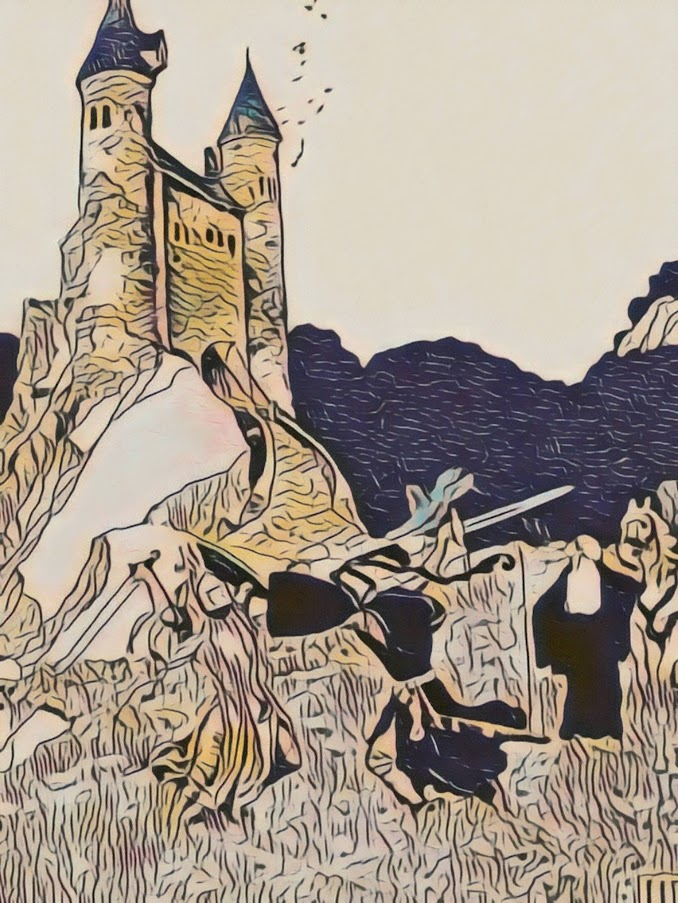
D'après Bataille entre Arthur et le chevalier noir en présence de Merlin.
Illustration de l'Américain Howard Pyle (1853 - 1911)
Levenez arrive donc à Rennes où elle est introduite à la cour du roi. A sa grande surprise, elle découvre que celui-ci est un
homme jeune de vingt-quatre ans
: c’est que le vieux roi vient tout juste de mourir, laissant le trône à son jeune fils. Le roi de Bretagne se déclare enchanté de la venue du dernier fils du seigneur de Kergoat, qu’il n’attendait plus.
Car Levenez se fait appeler par tous
Yann de Kergoat
.
Il décide, au vu de la silhouette fluette de celui qu’il croit être un jeune homme, d’en faire
un page de la reine
sa belle-mère. Car la vraie mère du roi était morte alors qu’il était encore en bas âge et, son père s’étant remarié, il avait été élevé par sa
belle-mère
qui exerçait une forte influence sur lui.
Au début, tout se passa bien, car Levenez alias Yann de Kergoat était aimable, serviable et obéissant et ne traînait pas dans les rues et les tavernes mal famées de Rennes comme bien d’autres, ce qui plut à la reine-mère. Mais cela ne dura pas. Car celle-ci avait la manie de jouer les entremetteuses et s’avisa un jour que Yann de Kergoat était
un époux tout désigné pour une de ses demoiselles d’atour
, une jeune et belle héritière (pennhêrez) issue d’une famille noble du Léon, riche et honorable. On se doute de l’embarras de la pauvre Levenez ! « Yann » de Kergoat ne peut que balbutier qu’il a voué sa vie à Dieu et qu’il ne peut se marier de ce fait. Mais la reine-mère prend mal la chose. Elle déteste qu’on lui résiste et prend le refus du jeune chevalier pour une marque de mépris envers elle et la jouvencelle qu’elle a choisie pour lui. Dès lors, elle suscite de l’animosité envers notre malheureuse héroïne dans le cœur du roi, qui décide
de mettre son page à l’épreuve
.
Le roi décide donc de mettre Levenez alias Yann de Kergoat face à un choix difficile : soit il se plie au caprice de la reine-mère ; soit il remporte avec succès
trois épreuves
. Son sort sera sans cela scellé par l’expression bretonne consacrée
« ne vo nemet ar marv evitañ »
(sous peine de mort). La malheureuse Levenez, alias Yann de Kergoat, n’a évidemment pas le choix, la loi sur le mariage pour tous étant impensable dans la Bretagne de l’époque…
Sa première épreuve
consiste à ramener, pieds et poings liés,
le terrible sorcier Merlik
au roi. Merlik, sans doute un souvenir de Merlin l’enchanteur, est un grand sorcier chenu et barbu qui vit une vie sauvage dans la forêt. Un « fou du bois » dans la tradition celto - bretonne, ici décrit comme un magicien terrifiant et dangereux. Notre héroïne, dans un premier temps désespérée, se souvient brusquement alors de la petite vieille. Elle l’appelle, et à peine a-t-elle prononcé les paroles
« Gwrac’hig ar c’hoad, gwrac’hig ar c’hoad, deuit d’am skoazellañ ervat »
(La gwrac'h du bois venez vite à mon aide) que la vieille apparaît.
Elle est bien sûr au courant de tout, et elle s’avère de bon conseil, en
lui expliquant comment s’y prendre pour s’emparer de Merlik
. Et dès le lendemain, Levenez alias Yann de Kergoat s’en va trouver le roi, qui lui avait promis de lui donner tout ce dont il/elle aurait besoin pour parvenir au bout de sa mission.
Elle demande
une
solide cage montée sur des roues
et pouvant être fermée de l’extérieur, mais non ouverte de l’intérieur ;
et
toutes sortes de mets délicieux
préparés par le chef du château.
Et enfin des
oiseaux
du maître-oiseleur.
Une fois tout cela obtenu, Levenez alias Yann de Kergoat se rend dans la forêt où vit Merlik, dispose la cage ouverte avec à l’intérieur une table couverte des délicieux mets préparés par le cuisinier du roi et va se cacher dans un buisson de houx avec les oiseaux. Merlik arrive, inspecte les environs,
jette une pierre dans le buisson
pour voir ce qu’il y a là et, rassuré par l’envol d’oiseaux qui s’ensuit et ne soupçonnant de présence humaine, rentre dans la cage pour se rassasier. Là-dessus, comme on s’en doute, la porte se ferme et Merlik ne parvient pas à s’en délivrer. Il est ramené alors à Rennes par Levenez alias Yann de Kergoat accompagné de son page. Et le peuple acclame Levenez alias Yann de Kergoat, devenue le nouveau héros du royaume.
Mais notre héroïne n’est toujours pas pour autant arrivée au bout de ses peines. Le roi lui demande maintenant de tuer
le Grand Cerf
(ar C’harv Meur), un terrible animal géant qui terrorise le pays. Une fois encore, Levenez alias Yann de Kergoat fait appel à la petite vieille rencontrée au début de sa quête. Celle-ci lui explique comment tuer ce terrible monstre : il suffit de le provoquer, de le faire charger puis, lorsqu’il ne se trouve plus qu’à quelques mètres, de
tracer trois croix au sol
. Celles-ci contraindront le cerf à stopper net, ce qui sera l’occasion de lui tirer une flèche à bout portant en plein dans
la tâche blanche
(bailh) qu’il porte sur le front. C’est en effet son seul point faible, son talon d’Achille, sa
"takad gwiridik"
.
Levenez alias Yann de Kergoat applique ce plan et sa flèche tue net le Grand Cerf (ar C’harv Meur). Et sa renommée s’en trouve encore accrue, ce qui rend la reine-mère encore plus furieuse.
Elle se mit alors en tête l’idée que
le roi se devait d’épouser la fille du roi des Indes
, un pays dans lequel on trouvait autant de pierres précieuses que de galets sur les plages de Bretagne. Notre héroïne repart donc à l’aventure, non sans s’être préalablement concertée avec son amie, la petite vieille édentée de la fontaine du bois.
Elle demande au roi tout ce que la gwrac’h lui a recommandé de prendre
. Puis elle prend le large, en route pour les Indes, à la tête d’une flottille de trois bateaux battant fièrement pavillon breton.
En route, sa flotte est brusquement arrêtée par un énorme poisson noir monstrueux. Lequel lui explique être le
roi des poissons
, et que son peuple est en train de mourir de faim. Qu’à cela ne tienne, Levenez alias Yann de Kergoat fait alors jeter à l’eau toute la cargaison du vaisseau de tête, qui consistait en nourriture pour poissons, comme le lui avait recommandé la gwrac’h. En reconnaissance de quoi le roi des poissons promet à Levenez alias Yann de Kergoat de voler à son secours en cas de besoin. Il lui donne à cet effet
une conque
dans laquelle il lui suffit de souffler pour l’appeler. Plus tard, la flotte bretonne accoste une île pour refaire le plein d’eau.
Celle-ci est peuplée
d’oies et de canard
en train de mourir de faim. Un des oiseaux aborde alors Levenez alias Yann de Kergoat et lui dit être le roi des oies et des canards en le suppliant de venir à l’aide de son peuple. Notre héroïne fait alors décharger la cargaison du second navire, qui est justement, sur recommandation de la gwrac’h, de la nourriture pour des oies et des canards. En reconnaissance de quoi le roi des oies et des canards promet à Levenez alias Yann de Kergoat de voler à son secours en cas de besoin. Il lui donne à cet effet
une plume dans laquelle il lui suffit de souffler
pour l’appeler.
Ils débarquèrent enfin en Inde, pour se trouver néanmoins d’abord dans un pays aride et désertique peuplé seulement de
fourmis mourant de faim
. Et là à nouveau, à la demande de la reine des fourmis, Levenez alias Yann de Kergoat fait débarquer la cargaison du troisième et dernier bateau, de la nourriture pour fourmis. La reine des fourmis lui donne alors
une courte paille
, dans laquelle il lui suffit de souffler pour l’appeler à l’aide.
La flottille de Levenez alias Yann de Kergoat finit par arriver en Inde à bon port. Les Bretons y découvrent une
ville magnifique
au milieu de laquelle trône le palais de la princesse convoitée. Levenez alias Yann de Kergoat obtient une audience et peut ainsi soumettre la demande de son maître auprès de la princesse. Mais celle-ci hésite à donner son accord comme cela. C’est pourquoi elle met comme condition à son consentement le passage avec succès de deux
épreuves
par Levenez alias Yann de Kergoat:
La première consiste à
assécher un lac
situé derrière sa capitale, ce à quoi aucun ingénieur du royaume n’était jamais parvenu. Levenez alias Yann de Kergoat fait alors appel au roi des
oies et des canards
, dont le peuple vide le lac en moins de deux.
Puis Levenez alias Yann de Kergoat doit
trier les grains
jetés pêle-mêle par des serviteurs peu soigneux dans l’énorme grenier de la princesse. Levenez alias Yann de Kergoat fait alors appel à la reine des
fourmis
, dont le peuple remet tout ça en bon ordre en deux temps trois mouvements.
La princesse indienne doit finalement se résoudre à
accepter le mariage
, et est bientôt amenée en Bretagne par la flotte bretonne. Mais à peine arrivée, elle déclare au roi de Bretagne qu’elle ne peut l’épouser que s’il peut lui
rendre la clé d’un petit coffre
qui est à elle, et qui est malheureusement
tombée à l’eau
pendant la traversée. Et cette mission est bien entendue confiée par le roi à son plus fidèle serviteur, Levenez alias Yann de Kergoat. Il ne reste plus à notre héroïne qu’à faire appel au
roi des poissons
, dont les sujets ne tardent pas à trouver ladite clé. Levenez alias Yann de Kergoat remet donc la clé entre les mains du roi, ayant enfin remporté sa troisième et dernière épreuve.
C’est là que
Merlik
le sorcier chante à tue-tête dans tout le palais, que
Yann de Kergoat est Levenez
, la fille benjamine du seigneur de Kergoat. Il l’avait déjà chanté lorsque Levenez l’avait amené à Rennes, mais personne ne l’avait alors cru.
Le roi n’en pouvant plus, demande à Yann de Kergoat si cela est vrai. Et Levenez avoue alors la supercherie et en explique les raisons au roi, implorant son pardon. Le roi ému décida alors que Levenez était la plus courageuse et la plus belle fille de Bretagne, et qu’
il n’en épouserait aucune autre.
La princesse indienne dut retourner désappointée dans son pays, et la reine-mère en mourut de dépit.
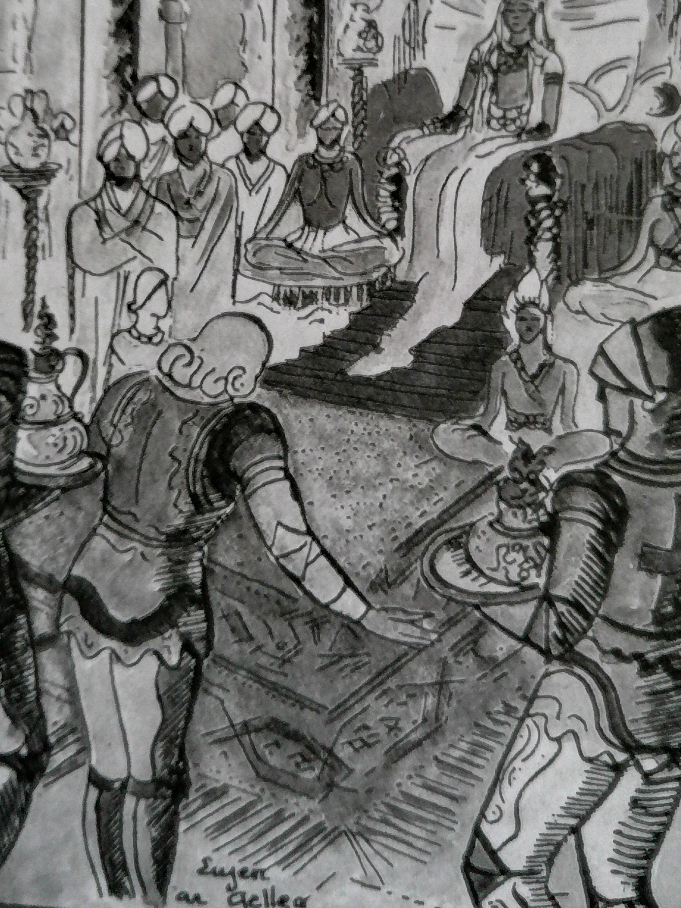
Illustration d'Eujen ar Gelleg
tirée de "Marc'heger ar Gergoad",1994
Ce conte très détaillé fait partie du répertoire d'un conteur cornouaillais
(marvailher kernevat)
, Jean-Louis (Le) Rolland (1904-1985) de Trébrivan. Celui-ci avait mis tout ce dont il se souvenait par écrit en tapant à la machine. En 1980 Jef Philippe, diacre et délégué épiscopal pour la foi et la culture bretonne, auteur de poèmes et de nouvelles en langue bretonne ("Telenn ar C'hi", "En tu-mañ d'an Ifern"...), l'enregistra en train de raconter l'histoire de Jozebig. Il s'appuya sur son manuscrit dactylographié pour publier ce texte, - ainsi qu'un deuxième conte du même "marvailher", "Margodig an Dour Yen" -, sous le titre "War roudoù Merlin e Breizh" (Sur les traces du Merlin breton), aux "Mouladurioù hor yezh" en 1986.
Nous donnons ici un compte-rendu de "Jozebig" où des extraits in extenso alternent avec des passages résumés.
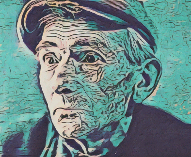
Jean Louis Rolland (1904-1985)
Jean-Louis Rolland o kontañ ar marvailh "Jozebig" (deroù ha diwezh)
Gwechall-gozh tri-chant vloaz zo, pe war-dro, e Frañs e oa ur roue, gantañ ur jeneral anvet Duge, hag a oa erruet war an oad. Un devezh ez eas da gavout ar roue:
«Bonjour, Sir!»
«Bonjour, Duge, petra zo nevez?»
«Me zo erruet war an oad hag em-eus c'hoant da gaout va c'hoñje...Bez ez eus jeneraled vras a soñj gante emaint kalz kapaploc'h eget ar re gozh ha ret eo lezel anezhe da welout petra int kapapl d'ober.»
«Gwir eo. Met araok mont da repoziñ, kit d'ar vagazen da choaz un abid nevez-nevez penn-da-benn evit mont da repoziñ.Hag ekeit-se me breparo ho paperoù.
Dont a reas Duge da barrez Duaot da vaner Lespoull e pelec'h ez ae da chaseal. Eürus e oa eno gant e wreg hag e deir merc'h.. Met en doa bet ul lizer digant ar roue da larout dezhañ mont war e giz da gemer ar penn eus an arme, rak an Alamaned o-doa deklaret brezel d'ar Frañs, hag ar jeneraled all ne oa ket evit resistañ outo.
Duge a ouelas ken na wele netra.
En em gavout a reas
e verc'h koshañ
da dremen e-kichen kambr he zad:
«Petra c'hoarvez ganeoc'h da ouelañ evel-se?»
«O, n'oc'h eus nemet lenn al lizer am-eus bet a-berzh ar roue: ar roue a lar din mont c'hoazh da gemer ar penn eus an arme...»
«O ma zad , n'eoc'h mui evit mont d'ar brezel. D'an oad oc'h erru!»
«N'eus hini da ramplas ac'hanon? C'hwi n'afec'h ket da gemerout va flas?»
«A, feiz, nann avat! N'ho-peus klevet ez a ar merc'hed d'ar brezel! Honnezh a vefe ur brezel ha ne badfe ket pell!»
Ur pennad goude,
an eil eus e verc'hed
A-benn ur pennad goude
e verc'h yaouankañ...
«A, bez! Me a ya d'ho ramplas raktal!»
«Aze es eus un abit er pres , sellit ma'z eo mat deoc'h, ha ma n'eo ket e vo graet unan nevez deoc'h raktal!»
P'he-deus gwisket anezhi ez ae ken mat vel ma vije graet ouzh he c'horf.
«Ha va sabrenn a zo aze ivez. Me m'eus bet tromplet kalz a dud gant honnezh. Gant honnezh ne vo ket ret deoc'h kaout aon, Rak honnezh a droc'h dek meudad en tu-all d'he beg! Hag ar gazeg wenn a zo er marchosi aze a gasit ganeoc'h ivez: honnezh a zo reizh ouzh ar c'hombajoù hag a oar penaos ober. N'ho-po nemet lezel anezhi d'ober he mod ha ne vanko ket da c'hounit ar viktor.»
Jadis, il y a 300 ans environ, il y avait un roi de France ayant à son service un général, nommé Duguay, qui avait atteint l'âge de la retraite. Un jour il alla voir le roi:
«Bonjour, Sire!»
«Bonjour, Duguay, quoi de neuf?»
«J'ai atteint l'âge et je désire prendre ma retraite... Il y a de grands généraux qui pensent être plus à même de commander que les vieux. Il faut les laisser montrer ce qu'ils sont capables de faire.»
« C'est vrai. Mais avant de partir, allez au magasin choisir un habit complètement neuf que vous porterez en retraite. Pendant ce temps je ferai vos papiers.
Duguay se rendit dans la paroisse de Duault, au manoir Lespoul où il allait à la chasse.Il y vivait heureux avec sa femme et ses 3 filles. Mais il reçut une lettre du roi lui demandant de rentrer pour prendre la tête d'une armée, car les Allemands avaient déclaré la guerre à la France et les autres généraux n'étaient pas de taille à leur résister. Duguay pleura à chaudes larmes.
Sa
fille aînée
vint à passer devant la chambre de son père:
«Que vous arrive-t-il que vous pleuriez ainsi?»
«Oh, vous n'avez qu'à lire la lettre que j'ai reçue du roi: le roi me demande de revenir prendre la tête d'une armée...»
«Oh, mon père, vous ne pouvez plus aller à la guerre. Vous êtes trop âgé!»
«N'y-a-t-il personne pour me remplacer? Vous n'iriez pas prendre ma place?»
«Ma foi non! Avez -vous jamais entendu parler de femmes qui vont à la guerre! Voilà une guerre qui ne ferait pas long feu!»
Un moment après la
seconde fille
passe devant la chambre...
Un moment après c'est le tour de
la plus jeune...
«Si fait! Je vous remplace sans hésiter!»
«Il y a un habit dans l'armoire, voyez s'il vous va, sinon, on vous en fera faire un sans tarder!»
Quand elle le revêtit, il lui allait comme si il avait été fait sur mesure.
«Et voici aussi mon sabre. Il en a fait trembler plus d'un, ce sabre. Avec lui vous n'aurez pas à avoir peur. Car il fait des entailles profondes de 10 pouces! Et la jument blanche qui est à l'écurie, prenez-la aussi: elle est docile et sait comment se comporter pendant les combats. Vous n'aurez qu'à la laisser faire à sa façon et vous ne manquerez pas de remporter la victoire.»
La cadette se rend à Paris où elle se présente au roi comme le fils de Duguay empêché par son âge de prendre la tête de l'armée et qui le charge de le remplacer,
«Fort bien, mais je crains que vous n'ayez pas les talents de votre père;» «Qui sait? Peut-être le surpassé-je...»
«On verra. Demain matin, à l'autre bout de la ville, vous trouverez une armée prête à combattre l'ennemi avec vous.»
Le lendemain, saluée par les officiers incrédules, elle affronte l'ennemi:
Sa jument allait d'un bout à l'autre de l'armée, et tous les boulets qui pleuvaient sur eux, elle les renvoyait avec ses sabots sur les ennemis qui tombaient comme des mouches, contrairement aux soldats du général. En peu de temps la victoire fut totale et l'on n'avait pas perdu un seul homme. Elle s'en retourna au palais du roi.
«Sire, je vous avais dit, que j'étais peut-être plus vaillant que mon père. Voici une attestation signée par le "roi des Boches" disant qu'ils ont perdu la guerre.»
Neuze ar jeneral-se a oa gwelet ken mat gant ar roue, ken hini ebet eus ar re al ne voa biskoazh.
Hag ar warizi en em gavas ouzh ar jeneral yaouank. Un devezh o deus en em serret asambles evit gouzout ha ne oa ket moien da zistrujañ anezhañ. Ur jeneral kozh a laras:
«N'ho-peus nemet da larout
en-deus laret e oa kapapl da dapout Merlin a zo er c'hoad en tu all diouzh ker.»
Ha sur-mat ar roue a laro: «Ma 'n-deus laret ober, e ranko ober pe bezañ lakaet d'ar marv.»
Mont a reas unan da larout kement-se d'ar roue. «Ha gouzout a rit, Sir, klask tapout hennezh a zo bet koll kalz a dud ha kalz a draoù ivez.»
«Larit dezhañ dont d'am c'havout!»
Pa'z eo erruet ar jeneral yaouank e palez ar roue, en-deus goulet gantañ: «Petra zo, Sir?»
«Laret hoc'h-eus e oac'h gouest da dapout Merlin a zo er c'hoad du-se!»
«O, Sir, biskoazh n'em-eus ket laret an dra-se. Ma zo laret se deoc'h, a zo laret gevier deoc'h.»
«A, bez! Laret ho-peus hag hen ober a rankoc'h, pe bezañ lakaet d'ar marv raktal»
«O! Neuze on sur da vezañ lakaet d'ar marv. Pa n'eo ket bet gouest ar re-all d'e dapout, n'eo ket me a raio ivez!»«Laret ho-peus hag e rankoc'h!»
Mont a reas ar jeneral yaouank d'ar marchosi e-lec'h e oa e gazeg o ouelañ eus an tristañ. A-benn ar fin
e gazeg
a c'houllas digantañ:
«Petra c'hoarvez ganeoc'h da ouelañ er mod-se?»
«Trawalc'h 'm-eus evit gouelañ! Laret ez eus bet d'ar roue e oan gouest da dapout Merlin a zo er c'hoad en tu-all d'ar ger. Met da vetek amañ ,
den n'en-deus gallet tostaat outañ
.»
«O, se n'eo netra d'ober! Tapit un tammig paper hag ur c'hreion ha me zo o vont da larout deoc'h petra da goulenn digant ar roue:
Da zigentañ e c'houlloc'h ur gwele houarn klozet dro-di-zro gant ur stalaf. Ha n'eus forzh petra ez ayo e-barzh e serro e-unan, ha den ne vo gouest d'e zigeriñ, ken a roio Duge an alc'hwez d'e zigeriñ.
Hag ur forniad bara a bemp lur
ha dek barrikadenn gwin gwenn
ha dek barrikaden gwin ruz,
ugent kartel ejen preparet mat,
div varrikennad Kognak eus ar finañ a vo kavet
ha kant lur butun karot
hag ur c'horn kement hag ur bigod,
ha daou loen-nij eus a bep seurt: 2 laouenanig, div voualc'h, daou bichon, div big ha div vran.
Ha ma rent tout ar re-se deoc'h, neuze e voc'h sur d'e dapout.
Met e faot deoc'h larout d'ar roue reiñ anezhe e-kreiz ar c'hoad, e-lec'h ma zo un dachenn c'hlas.
Hag un tantad bras e ranko ober eno ivez, graet gant gwez sec'h a zo trawalc'h er c'hoad eno.
Ar c'hig a lakaoc'h an tostañ d'an tan, ar bara goude, ar gwin gwenn e-kichen ar bara, ar gwin ruz goude hag an div varrikennad Kognak goude, pep hini 'n he flas; ar butun, un tammig a gostez, hag ar gwele dirak an tan, en tu all an dachenn.
Met al loened nij ez ay ganeoc'h pa'z eoc'h da dapout Merlin, en ur baner gloz.
En tu all an dachenn-se ez-eus
ur wezenn
leun a zelioù glas ha c'hwi a yelo warni da guzhat da c'hortoz Merlin da zont da welout petra vo eno...
Dès lors ce général fut estimé par le roi plus qu'aucun autre ne l'avait été avant lui. Et l'on devint jaloux de ce jeune héros. Un jour il y eut une réunion pour savoir s'il n'y aurait pas moyen de le perdre. Un vieux général proposa:
«Vous n'avez qu'à dire qu'
il a déclaré être capable de capturer Merlin l'homme du bois de l'autre côté de la ville.»
A coup sûr, le roi dira: »S'il a dit qu'il pouvait le faire, qu'il le fasse ou qu'il soit mis à mort.»
L'un d'eux alla dire cela au roi.
«Comme vous le savez, Sire, en cherchant à la capturer, on a perdu beaucoup d'hommes et beaucoup de moyens aussi.»
«Dites-lui de venir me voir!»
Quand le jeune général arriva au palais du roi, il demanda «Que se passe-t-il, Sire?»
«Vous avez dit être capable de capturer Merlin, au bois là-bas!»
«Sire, jamais je n'ai dit une chose semblable! Si on vous l'a rapporté, c'est un mensonge».
«Mais si! Vous l'avez dit et il vous faudra tenir parole ou, sinon, c'est la mort sur le champ.»
«Dans ce cas je suis sûr(e) de mourir. Si personne n'a pu le capturer, mi non plus!»
«Vous l'avez dit. Il faut le faire!»
Le jeune général se rendit à l'écurie où était sa jument et il versait des larmes amères. Tant et si bien que
sa jument
lui demanda:
«Qu'est-ce qu'il vous arrive pour pleurer comme cela?»
«J'ai une bonne raison de pleurer! On a dit au roi que j'étais capable de capturer Merlin qui hante le bois de l'autre côté de la ville. Mais jusqu'à ce jour,
nul n'a jamais pu l'approcher
».
«Oh, rien de plus facile! Prenez un bout de papier et un crayon et je vais vous dire ce qu'il faut demander au roi:
Premièrement, vous demanderez un lit clos en fer fermé entièrement par un volet. Et sur tout ce qui y entrera, il se refermera de lui-même. Et personne ne pourra l'ouvrir, tant que Duguay n'aura pas donné la clé pour ce faire.
Et une fournée de pain de 5 livres
et 10 barriques de vin blanc
et 10 barriques de vin rouge
20 quarts de bœufs bien assaisonnés
2 tonneaux du meilleur Cognac que vous trouverez
et pour 100 livres de tabac
et une pipe avec un bourre-pipe (bigod?)
et des couples d'oiseaux: 2 roitelets, 2 merles, 2 pigeons 2 pies et 2 corbeaux.
Et s'il vous accorde tout cela, vous êtes sûr(e) de le capturer.
Mais il faut dire au roi d'acheminer tout cela au milieu du bois, dans une verte clairière.
Et il faudra qu'on y allume un grand bûcher composé d'arbres secs qu'on trouve en abondance dans cette partie du bois.
On placera la viande près du brasier, le pain un peu plus loin, puis le vin blanc près du pain, puis le vin rouge, puis les deux tonneaux de cognac, puis, chacun à sa place, le tabac un peu sur le côté, et le lit devant le feu, à l'autre bout de la clairière. Quant aux oiseaux c'est vous qui les apporterez dans un panier fermé, pour capturer Merlin.
De l'autre côté de la clairière il y a
un arbre
à épais feuillage. Vous vous sous y cacherez jusqu'à ce que Merlin vienne voir ce qu'il recèle.
Le général présente sa demande au roi "au long nez". Un tambourinaire parcourt la ville pour savoir s'il se trouvait quelqu'un capable de fabriquer le lit. On déniche un vieux maréchal-ferrant qui s'acquitte de cette tâche avec une modification: on fut obligé d'adapter au lit des roues car il était trop lourd pour qu'on puisse le charger sur une charrette. On plaça le lit dans la remise des carrosses, tout au bout du palais carrosse. Duguay jeta son képi à l'intérieur et les volets se refermèrent avec un claquement sec!
Tout le matériel fut disposé dans une clairière dont on savait que Merlin la traversait chaque jour. Des soldats allumèrent un grand feu. Un peu avant midi, le général arriva avec les oiseaux et il s'installa dans l'arbre, parmi le feuillage de façon à ne point être vu.
A midi on vit Merlin s'approcher et s'écrier: "«Oh, voilà un piège insidieux tendu par le roi!» Il ramassa une pierre et il la jeta vers l'arbre. Duguay lâcha les deux roitelets. «Oh, reprit Merlin, là il y a des oiseaux, il n'y a point d'humains». Et il se mit à dévorer la nourriture. Le même manège se répéta avec le vin blanc suivi d'un vol de merles, le vin rouge avec deux pigeons lâchés par Duguay, le cognac et les deux pies, et enfin le tabac fumé dans la pipe accompagné d'un vol de corbeaux. Bien entendu, après ce festin Merlin était ivre, avait envie de dormir et ne put résiter à l'appel du bon lit-clos. Et sitôt qu'il fut à l'intérieur, il fut enfermé par les volets qui se rabattaient.
«Ah, fille vierge du général Duguay, vous m'avez capturé!»
«Eh oui!» dit-elle.
«On m'avait dit, quand on m'a mis ici, que personne ne me capturerait, sinon une fille vierge du général Duguay. C'était vrai:»
Elle s'empressa de porter la nouvelle de la capture de Merlin au roi qui dès lors ne tarissait plus d'éloges sur le jeune général.
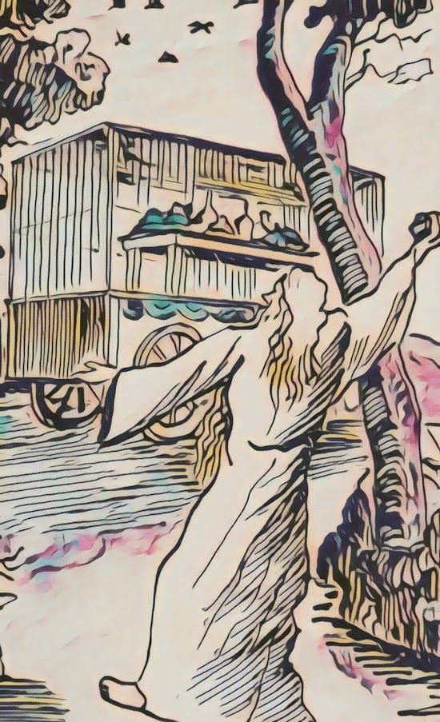
Illustration d'Eujen ar Gelleg
tirée de "Marc'heger ar Gergoad",1994
Mais ainsi en alla-t-il de la jalousie que lui portaient les autres. Un jour ils se réunirent tous pour voir s'il n'y aurait pas moyen de le perdre. Un jeune général à la barbe longue déclara:» Nous n'avons qu'à aller voir la reine et lui demander si elle ne s'associerait pas volontiers à notre projet ...»
«Et comment! dit la reine, je suis lasse de sa présence. Il ne m'est plus possible de m'entretenir avec le roi, depuis qu'il est ici!»
«Quand vous le verrez se rendre chez le roi, vous n'aurez qu'à venir à sa rencontre dans les escaliers et quand vous l'aurez atteint, vous n'aurez qu'à vous appuyer sur lui, tout en criant qu'il était en train de vous violer...»
Le roi accourut et vit le couple débouler dans les escaliers.
«Cette fois, c'est trop, dit le roi, je vous ai permis bien des choses, mais vous passez les bornes. Vous serez exécuté demain à deux heures de l'après-midi!»
Le lendemain à deux heures, on le conduisit dans le champ où il serait fusillé. Quand il fut attaché au poteau, le roi lui demanda quelles étaient ses dernières volontés. «Je ne veux rien d'autre que la vie!» «Vous n'aurez pas la vie car vous vous êtes trop mal conduit»...
Lorsque le peloton d'exécution allait faire feu, il s'adressa au roi: «Jamais je n'ai entendu dire qu'une femme puisse en violer une autre.» «Quoi, vous êtes une femme?» «Oui, je suis la fille vierge du général Duguay» «Avant de le croire, je veux le voir!»
Il fallut donc qu'elle se déshabille complètement, pour que le roi puisse voir. «Mais tu dis vrai! Quelle est la langue de vipère qui a calomnié ce jeune général? J'ai vu la reine s'en prendre à lui. Allez la chercher immédiatement! Que quatre soldats harnachent quatre chevaux et qu'elle soit écartelée entre ces quatre chevaux. Cela lui apprendra à dire des mensonges:»
Elle eut beau pousser des hurlements, les soldats la saisirent par les pieds et la traînèrent au supplice … Un coup de fouet et la voilà en quatre morceaux!
«Ah, dit le roi, cela lui apprendra à s'en prendre aux autres! Et toutes les mauvaises langues devraient subir le même sort!»
Puis le roi s'enticha de la fille du vieux général à un tel point, il fallut qu'elle se marie avec lui. Et désormais elle était reine de France.
Au bout d'un an, elle mit au monde un petit garçon aux cheveux blonds et frisés et son nom était inscrit sur son front: «Jozebig». Ce n'était pas la peine de chercher comment l'appeler. Quand il eut onze ans on lui acheta un jeu: trois boules d'or.
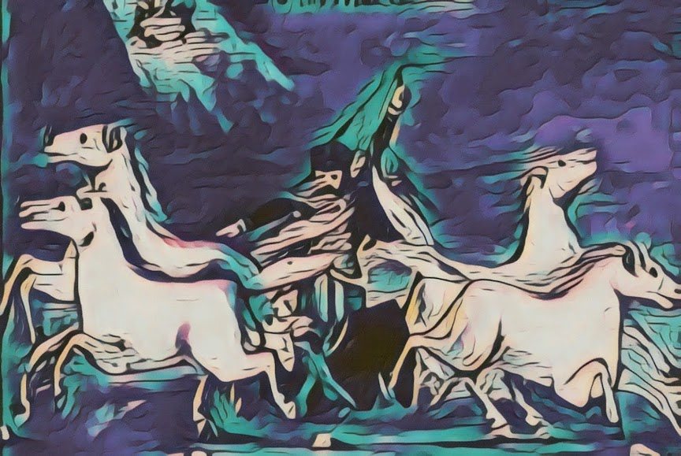
Illustration pour une ballade populaire serbe (19.s)
Mont a ree Jozebig da c'hoari gant e voulloù en ur gambr a-us da Verlin. Roulañ a rae ar boulloù diouzh penn ar zal d'ar penn all. Strafuilhet e voa Merlin gant kement a drouz evel ma rae.
Un devezh e oa distaget ur marc'h er marchosi hag e oa ezhomm un talar d'ober un toull nevez evit e stagañ . A benvioù a veze barzh al lec'h ma oa Merlin hag an hini a oa bet o tapout an talar pa oa deut d'e zegas war e giz n'en-doa ket sellet pelec'h e bozañ hag a lakaas anezhañ war wele Merlin, pehini dre doull ar barrennoù en-doa tapet anezhañ ha graet un toull e-barzh ar gambr a-us d'e wele. Pa oa aet mab ar roue da c'hoari gant e voulloù, e kouezhas unan e gwele Marlin. Ha Jozebig d'ar c'haloup da larout en ur c'harmal dezhañ:
«Roit,va boull din, Merlin!»
«A! Va faotr bihan, c'hwi ho-peus div c'hoazh ha bremañ me am-eus unan ivez hag e kavin berroc'h an amzer o roulañ honnezh war va gwele diouzh ur penn d'ar penn all. Ha c'hwi ho-peus c'hoazh div voull da c'hoari ganto.»
---bremañ a gavo berroc'h an amzer o stokañ an div-mañ an eil ouzh eben...
--- «Ya , ma leuskit ac'hanon kuit!»
«Met n'on ket gouest d'ober!»
«A! Bez, va faotr, ma rit evel ma larin deoc'h ober. Kit d'ho mamm ha larit dezhi e ve leun ho penn a laou. Hag e-keit ma vo o sellout out ho penn, c'hwi a zistago an alc'hwez a zo en he c'herc'henn, staget gant ur chadenn aour. Ha neuze e c'helloc'h digeriñ ar stafalioù warnon.»
Mont a reas Jozebig en ur c'harmal da gavout e vamm da larout dezhi e oa leun e benn a laou.
«Petra larit? C'hwi eo leun ho penn a laou? Daoust eta mab ur roue ez eo e benn leun a laou? Me gav din ez eus tud a-walc'h amañ evit dilaouiñ ho penn deoc'h. N'eo ket ret din d'hen ober! Met c'hwi n'eus ket laou en ho penn!»
«Beus 'vat! Ne badan ket ganto!»
«Mat! Deuit amañ! Me a zo vont da welout ma'z eo gwir ar pezh a larit!»
Evel-se Jozebig a zistagas an alc'hwez diouzh kerc'henn e vamm hag e c'haloupas kuit en ur larout:
«Barzh va fenn n'eus ken laou!»
«Ac'hanta, c'hwi, evit mab ur roue zo karget a c'heizoù. Me ouie mat ne oa ket laou en ho penn!»
Pa oa ar bugel erruet gant Merlin ne oa ket evit digeriñ an nor warnañ;
«Roit an alc'hwez din ha me hen zigoro!»
Pa oa digoret ar stafalioù hag e oa er-maez e laras da Jozebig:
«Leusket ho-peus ac'hanon kuit, met c'hwi ne voc'h ket pell war va lerc'h ivez. Setu amañ ur c'hwitell, ha ma'n-em gavit nec'het un dro bennak, n'ho-po nemet
ober teir c'hitelladenn gantañ ha raktal me'n-em gavo dirazoc'h
.»
Pa he-doa klevet e vamm en-doa leusket he mab Merlin kuit, e oa prest da vervel gant an displijadur. An hini en-defe leusket Merlin kuit a vefe lakaet d'ar marv raktal. Ha setu e oa he mab o vont da vezañ lazhet!
«Bremañ e teuio al laou en ho penn! Bremañ e rankit mont ar pellañ ma c'helloc'h diouzhin, e-lec'h ne glevin ket e voc'h tapet ha lakaet d'ar marv.»
Ober a reas e bakadenn dezhañ da vont kuit.
Mont a reas ar buanañ ma c'hellas pell diouzh ar ger e-lec'h ne vefe klevet ober kont outañ. Pa oa gouvezet piv en-doa leusket Merlin da vale an dud a lare:
«Trist eo memes tra gwelout ar paour-kaezh bugel-se bezañ kollet hag a chomo da vervel en un toull bennak!»
Jozebig allait jouer avec ses boules dans la chambre au-dessus de Merlin. Les boules roulaient d'un bout à l'autre de la pièce. Merlin était excédé par le bruit qu'elles faisaient.
Un jour un cheval s'était détaché à l'écurie et l'on eut besoin d'une tarière pour faire un nouveau trou pour l'attacher. Les outils étaient dans la pièce où se trouvait Merlin. Celui-ci s'était servi de la tarière, ne voyant d'autre endroit où la mettre, la posa sur le lit de Merlin, lequel, par l'espace entre les barreaux, s'en saisit et fit un
trou débouchant dans la chambre au-dessus de son lit. Quand le fils du roi s'en vint jouer aux boules, une d'entre elles tomba dans le lit. Et Jozebig arrive au galop pour réclamer en pleurnichant:
«Rendez-moi ma boule, Merlin!»
«Ah, mon garçon, il vous en reste encore deux et moi désormais j'en ai une aussi, et je m'amuserai à la faire rouler d'un bout à l'autre de mon lit. Vous cependant en aurez deux pour jouer.»
--- Maintenant pour me distraire je ferai s'entrechoquer ces deux boules...
--- «Oui, si vous me laissez sortir!»
«Mais je n'en suis pas capable!»
«Si, mon garçon, vous n'avez qu'à faire ce que je vais vous dire. Allez voir votre mère et dites-lui que vous avez des poux. Et pendant qu'elle examinera votre tête, vous détacherez la clé suspendue à son cou par une chaîne en or. Et alors vous pourrez m'ouvrir les volets.»
Jozebig alla en pleurnichant trouver sa mère pour lui dire qu'il avait des poux.
«Qu'est-ce que vous dites; Vous avez la tête pleine de poux? Est-ce que le fils d'un roi peut avoir des poux? Je pense qu'il y a ici assez de domestiques pour vous épouiller.Ce n'est pas à moi de le faire. Mais vous n'avez pas de poux!»
«Si, j'en ai, c'est insupportable!»
«Bon, venez ici! Je vais voir si ce que vous dites est vrai!»
C'est ainsi que Jozebig détacha la clé du cou de sa mère et s'en alla en courant, disant:
»Ça y est, je n'ai plus de poux!»
«Allons donc, comme tous les fils de roi, vous avez des lubies. Je savais bien que vous n'avez pas de poux!»
Quand l'enfant fut auprès de Merlin, il ne parvint pas à lui ouvrir la porte:
«Passez-moi la clé, je vais ouvrir!»
Quand les volets furent ouverts et qu'il fut sorti, il dit à Jozebig:
«Vous m'avez laissé sortir, mais vous n'allez pas tarder à prendre ma suite. Voici un sifflet, et si vous vous trouvez en fâcheuse posture, vous n'aurez qu'à
siffler trois fois et instantanément j'apparaîtrai
.»
Quand sa mère apprit que son fils avait laissé s'échapper Merlin, elle pensa mourir de chagrin. Quiconque laisserait partir Merlin, serait mis à mort immédiatement. Et voilà que ce sort était échu à son fils!
«C'est maintenant que vous êtes devenu un pouilleux! Il faut que vous partiez le plus loin possible, que je n'entende pas parler de votre arrestation ni de votre mise à mort!»
Il fit donc ses bagages et s'en alla.
Il s'éloigna le plus vite qu'il put du pays où l'on n'entendit plus parler de lui. Quand ils apprenaient qu'il avait laissé partir Merlin, les gens disaient:
«C'est quand-même triste de voir ce pauvre garçon aller se perdre et mourir dans quelque tanière!»
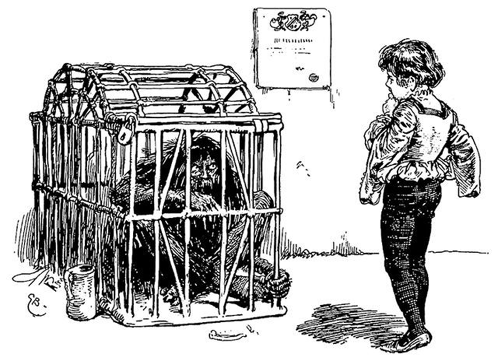
. L’homme sauvage en cage, par Gordon Browne (1858-1932)
pour « Eisenhans » des Frères Grimm
Un devezh en em gave en ul lanneg vras ha ne ouie ket pelec'h mont. Da zebriñ n'en-doa tra ken. Met dont a reas da soñj dezhañ ouzh c'hwitell Merlin hag e reas teir c'hwitelladenn enni. Merlin en em lakaas dirazhañ raktal:
«Petra zo, va faotr?»
«Kollet 'm-eus va hent ha boued n'em-eus mui ivez!»
«Me a rayo
un dourbi
deoc'h ha gant honnezh n'ho po ket ezhomm d'en em jenañ. Pa zispakoc'h anezhi, n'ho po nemet goulenn ar seurt boued ho po c'hoant, eus ar seurt a gavoc'h ar gwellañ, ha raktal e vo roet deoc'h, evel ma c'houlloc'h.»
Setu bremañ e tispakas an dourbi ha da c'houlenn traoù eus a blije dezhañ ar gwellañ. Met e welas
ur pezh den bras
ha gros o tont etrezhañ hag a chomas da sellout outañ o tebriñ.
A-benn ar fin e laras dezhañ:
«C'hwi a zebr mar ho poued, va faotr bijan!»
«Ya, eontr, ha c'hwi , m'ho-peus c'hoant, a rayo ivez!»
«Kontant bras e vefen avat, rak hanter-kant vloaz zo n'em-eus debret tamm ebet!»
… Un dro bennak en-doa karget e gof hag e laras da Jozebig;
«Va faotr bihan, ma karje deoc'h ober
trok
ganin? Ho tourbi evit
ma bazh
. C'hwi gant honnezh a rafe kant cheu gaer. Me zo erruet kozh ha n'on mui evit labourat ganti. Met c'hwi zo yaouank...»
«Ya, met pese vertuz he-deus ho pazh neuze?»
«Pa zivontoc'h anezhi, n'ho-peus nemet larout:
-Pevar c'havalier gwisket e glas, sortiit eus va bazh, evit va sikour ha difenn e bep-lec'h em-bo ezhomm!-
ha kerkent en em brezanto ar re-se, ur pezh kanol gant pep hini war e vrec'h, prest da fraeañ war en enbourien ma vez ret.»
Jobig a roas e dourbi d'an den-so evit e vazh. Mont a reas ar pezh den bras-se a-dreuz d'ar brug hag al lann, en ur henpennañ, ken mezv a oa. A-benn ur pennad goude, Jozebig a zispakas e vazh hag e laras:
«Pevar c'havalier...»
«Petra zo va mestr?»
«Me'm-eus kavet ul laer aze hag en-deus laeret va dourbi din. Kit war e lerc'h ha degasit din anezhi en-dro!»
Kerkent se oa graet.
«A, laras Jozebig neuze, bremañ avat ne vo ket ret din kaout aon rak den ebet ken!»
Mont a reas adarre a-dreuz lanneier ha koadoù. Un devezh e oa o tebriñ hag e welas ur pezh den o tont etrezhañ hag a oa un hanter brasoc'h c'hoazh eget an den c'hentañ ... «evit
ma morzhol
...»
«Hennezh pa stokoc'h ur penn anezhañ war an douar, a savo
un ti arc'hant
deoc'h; pa stokoc'h ar penn all a savo
un ti aour
deoc'h.. Gwechall pa oan yaouant me 'c'houneze kalz arc'hant gant hennezh!»
Dispakañ adarre e bazh a reas Jozebig hag a pevar c'havalier a degasas e dourbi en-dro dezhañ.
Un devezh all en em gavas e-kreiz ur penn lanneg vras leun a vrug hag a a elestr. E-kreiz ma oa o tebriñ...
«Kant hanter-kant vloaz zo n'em-eus dbret tamm ebet!»
… «reiñ ho tourbi e plas
va bombard!
… Pa c'hwezhoc'h enni
a resusito
an holl dud ne vint ket nemet peder eur war 'n ugent zo. Ar re-se a savo da zañsal evel ma ne vefent biskoazh marv!»...
Ha setu bremañ emañ montet mat evit ober hent. Ha
sabrenn e vamm
a oa gantañ ivez. Honnezh a oe roet dezhañ evit en em zifenn diouzh a dout ar pezh en dije ataket anezhañ.
Un jour il se trouvait dans une grande lande et ne savait dans quelle direction aller. Il n'avait plus rien à manger. Mais il se souvint du sifflet de Merlin et il siffla trois fois Merlin apparut aussitôt:
«Que ce passe-t-il, mon garçon?»
«Je me suis égaré et n'ai plus rien à manger»
«Je vais vous donner
une nappe
grâce à laquelle vous n'aurez plus besoin de jeûner. Quand vous la déploierez, vous n'aurez qu'à commander les mets dont vous avez envie, de la meilleure sorte selon votre goût, et aussitôt votre vœu sera exaucé.»
Et le voilà donc qui étend la nappe et passe commande des mets le plus à son goût. Mais il vit
un énorme géant
s'approcher et s'arrêter pour le regarder en train de manger.
A la fin il lui dit:
«En voilà de la nourriture pour un petit garçon!»
«Oui, mon oncle,et vous, si vous le désirez, en aurez autant.»
«Ça, j'aimerais bien, car ça fait cinquante ans que je n'ai plus rien mangé.»...
Vint un moment où son ventre était rempli et il dit à Jozebig:
«Mon garçon, voudriez vous faire du
troc
avec moi? Votre nappe contre ma
baguette
. Vous ne perdriez pas au change. Je suis vieux et elle ne me sert plus à rien. Mais vous, vous êtes jeune...»
«Oui, mais quel genre de vertu a donc votre baguette?»
«Quand vous enlèverez le bouchon à l'extrémité, vous n'aurez qu'à dire:
«Vous les quatre cavaliers à l'habit bleu, sortez de ctte baguette pour m'aider et me défendre en tant que de besoin!»
et vous les verrez aussitôt apparaître, tenant chacun une bouche à feu dans ses bras, prêt à faire feu sur les ennemis au besoin.»
Jobig céda la nappe à cet homme contre le baguette. Le géant traversa la bruyère et l'ajonc en titubant, tant il était ivre. Au bout d'un moment, Jozebig déboucha son baguette et il dit:
«Vous les 4 cavaliers...»
»Qu'y a-t-il, patron?»
«Je viens de tomber sur un voleur qui m'a dérobé ma nappe. Poursuivez-le et rapportez-la moi!»
Aussitôt dit, aussitôt fait.
«Ah, s'écria Jozebig, maintenant je n'ai plus peur de personne!»
Il repartit à travers landes et forêts. Un jour, alors qu'il prenait son repas, il vit venir vers lui un géant moitié plus grand que le précédent..
«... contre mon
marteau
...»
«Quand on frappe le sol avec une de ses extrémités, il vous bâtit une
maison d'argent
; si c'est avec l'autre extrémité, ce sera une
maison d'or
. Autrefois quand j'étais jeune, j'ai gagné beaucoup d'argent grâce à lui.»
Josébig déboucha à nouveau son baguette et les 4 cavaliers lui rapportèrent sa nappe.
Un autre jour il se trouvait dans une grande lande pleine de bruyères et d'iris. Tandis qu'il mangeait...
«Cela fait 150 ans que je n'ai plus rien mangé!»
… «échanger votre nappe
contre ma bombarde
! … Quand on souffle dedans tous les morts
ressusciteront
s'ils sont décédés il y a moins de 24 heures. Ils se mettront à danser comme s'ils n'avaient jamais été morts! …»
Et le voilà donc bien équipé pour la route. Et il avait aussi
le sabre de sa mère
. Elle le lui avait donné pour se défendre contre tous ceux qui l'auraient attaqué.
Un jour Jozébig est perdu dans une forêt. Il souffle trois fois dans le sifflet de Merlin qui apparaît ausssitôt. Ce dernier lui indique qu'il va sortir du bois et qu'il rencontrera une grande ferme où il aura à acheter un cheval et 3 sacs: d'avoine, de seigle et de blé noir. Alors il pourra affronter trois royaumes: celui des oies, celui des canards et celui des fourmis. «Et si vous n'avez rien à leur offrir, ils vous dévoreront!»
Il reprit la route en direction du sud-est, jusqu'à ce qu'il arrive au royaume des oies. Mais il n'avait pas pénétré bien loin dans ledit royaume, qu'il vit un énorme troupeau d'oies venir vers lui, le bec grand ouvert, prêt à le dévorer. Alors Jozebig avec son sabre perça le sac d'avoine et toutes les oies se jetèrent sur l'avoine et le laissèrent passer sans l'inquiéter.
Quand toute l'avoine fut mangée il entendit une oie qui le suivait en appelant:
«Jozebig, Jozebig!»
«Qu'est-ce qu'elles veulent encore celles-là?»
«Jozebig, revenez, car nous avons oublié de vous rétribuer pour la nourriture que vous nous avez fournie. En outre nous vous chanterons le chant des oies.»
Quand le chant fut terminé, la plus grande oie vint le trouver:
«Voici le
sifflet du Roi des Oies
et si vous aviez besoin de moi en quelque occasion, vous n'avez qu'à siffler trois fois et aussitôt je me présenterai à vous.»
«Bien», dit, Jozebig, et il rangea soigneusement ce sifflet dans sa musette avec les autres objets.
De la même façon, Jozébig acquiert le
sifflet du roi des canards
,
et
celui du roi des fourmis
auxquelles il a sacrifié son cheval qu'il avait tranché en deux par mégarde en ouvrant le sac de blé noir. Il leur avait procuré à manger et à boire (le sang du cheval); ainsi qu'un abri: quand elles auraient mangé la moelle des os du cheval, elles pourront s'y installer.
Lakaat a reas ar c'hwitell-se gant ar re-all, met, sur awalc'h, honnezh ne oa ket bras ar pezh outi! (Il mit ce sifflet avec les autres, mais ce qui est certain, c'est qu'il ne prenait pas beaucoup de place!)
Mont a reas war-du ar c'hreisteiz-sav-heol hag un dro bennak, dre forzh ober hent, en em gavas en ur rouantelezh all. Gwelout a reas ur palaez kaer war veg ur bos.
«O, laras, mont a ran da welout ma n'es eus ket ezhomm un digaoc'her moc'h, pe ur paotr deñved, pe ur vicher all bennak!»
Pa oa erruet e toull porzh ar palez, ne bade ket e zivlagad da sellout outañ, kement ma lugerne gant an heol da greisteiz. Pa oa antreet er palez en-doa goulennet ma ne oa ket ezhomm...
«A, laras a priñs, degouezhet mat emaoc'h, rak amañ e vez ezhomm ur paotr deñved bemdez.»
Pa oa erruet mare koan e oa laret dezhañ mont da zebriñ gant ar vevelien all. Met ur verc'h oa ennañ, tro an oad gantañ, ha pe oa aet da zebriñ, honnezh a oa aet en e gichen.
Kavout a rae ken koant anezhañ ma talc'he frotañ e benn dezhañ
da welout un dra bennak skrivet war e dal
. Met gant an amzer hag ar c'hwezadur e oa kazimant partiet kuit ha ne veze gwelet gwall vat ken.
An deiz war-lerc'h da vintin, pa oa ar mare da vont gant an deñved d'ul lanneg vras, ar verc'h a eas gantañ da vetek toull al lanneg, en ur gontañ dezhañ, penaos e veze kont gant ar paotred deñved all.
«Deuit ganin d'ar ger ha leuskit ar deñved-se da vont e-lec'h ma karint.»
«O ne ran ket avat! Petra laro ho tad pa vo kollet an deñved? Neuze, sur, me vo kaset kuit ha ne vo ket pell.»
«O, ne viot ket! An deñved-se zo reizh da vezañ o-unan. Peogwir ar re all a vez lonket tout gant
ar pezh ramz bras
a zo er c'hoad en tu-all aze! Met n'it ket er c'hoad-se, peotramant e voc'h lonket gantañ ivez!»
«O me n'em-eus netra d'ober gant ar c'hoad-se!»
«Deuit ganin d'ar ger da c'hoari. Me em-eus kalz a draoù kaer er ger da c'hoari!»
«O kit d'ar ger mar karit pe chomit amañ, me ya war-lerc'h ma deñved!»
E lein a oa roet dezhañ da vont d'al lanneg gant e zeñved. Toull al lanneg hag ur pennad eus an tu all a oa leun a vrug hag a lann hir. An deñved a yeas d'an tu all da beuriñ, en un dachenn glas ha frank meurbet. P'en-deus gwelet e chome an deñved o-unan, ez eas da vord ar c'hoad da welout petra a oa eno. Gwelout a reas un ale gaer gant gwez a bep seurt liv en daou du. An devezh-se ne oa ket aet pelloc'h er c'hoad.
Pa oa erruet ar mare d'an deñved da zont d'ar ger, int a zeuas o-unan etrezek ar ger, a zeuas o-unan da doull al lanneg. N'en-doa netra d'ober nemet heuliañ. E toull al lanneg e oa ar plac'h yaouank ouzh e c'hortoz ha , pa oa erruet ganti, hi a lammas da vouchañ dezhañ.
«O, met petra zo ganeoc'h o vouchañ din er mod-se?»
«C'hwi blij kement din, ken n'on ket evit herzel da vouchañ deoc'h.»
Neuze ez eas d'ar ger en ur gontañ petra a veze tremenet e ker.
«Daoust me ra forzh petra a dremen e ker? Me n'on ket okupet gant kement-se!»
Pa oa erruet an deñved en toull e-lec'h ma vezent d'an noz, hi a lare dezhañ:
«O, deuit ganin d'ho koan, ha leuskit an deñved-se aze.»
«Ne ran ket.»
«Met bez zo aze tud awalc'h da serriñ an deñved-se»...
Kement a reas o terriñ e benn dezhañ, ma oa aet ganti d'e goan. Met he zad a laras dezhi ne vije ket aet gant ar paotre-deñved da zebriñ. Neuze e laras-hi:
«Me n'em-bo koan erbet ma n'an ket da zebriñ gantañ.»
Kement a reas blejal ha c'hoari, a-benn ar fin en-deus laret dezhi mont gantañ da zebriñ, neuze. Met ne oa ket a-walc'h: mont da gousket gantañ a faote dezhi c'hoazh!
«O, laras he zad, se ne vo ket permetet deoc'h avat!»
Blejal a reas.
«O, grit evel ma karoc'h, se ne vo ket permetet deoc'h.»
Neuze e oa ret dezhi mont hec'h-unan da gousket.
Met an deiz war-lerc'h hi a oa ken prêt hag eñ da vont gant an deñved d'al lanneg. Pa oa erruet eno e vanke dezhi e vefe chomet ganti da c'hoari.
«O! laras ar paotr, Kit d'ar ger mar karit pe chomit aze! Me rank mont gant ar deñved»
Mont a reas war lerc'h e zeñved ha leuskel anezhi eno da sellout en-dro ma kare.
Pa oa erruet e-kreiz al lanneg en-deus soñjet mont da wellout petra a oa er c'hoad bras a oa en-tu all, eno. E sabrenn en-doa kaset gantañ gant aon e vije ataket. Skourrañ a reas e vuzetten ouzh ur brank hag ez eas er c'hoad gant an ale gaer e oa eno. Met ne oa ket aet pell d'ar mare en em gavas
ur pezh den bras ha gros
gantañ.
«A, paotr-deñved ar Roue, petra glaskit c'hwi amañ?»
«Netra, deut on da welout pegen kaer eo an traoù amañ!»
«A, met c'hwi zo vont da vezañ lonket raktal, 'n amzer din da ziwiskañ» «Ar pezh a garoc'h.»
P'en-deus taolet e chupenn e oa komañset an duel ganto. Met war ar pezh den-se e oa blev evel war ul leon! Fraeañ a rae Jozebig eus un tu d'an tu all ha mont a rae ar blev da vale! Ne oa ket brav tostaat ouzh hennezh. Met un tro bennak, dre forzh fraeañ, e teuas a-benne da dremen e sabrenn en e fourchoù hag e tivouzellas anezhañ penn da benn. Ret e oa dezhañ bezañ lammet a-gostez evit rein plas d'an traoù a oa en a gof da vont kuit gant an ale!
Neuze oa deut da glask e lein ha larout a rae:
«Trawalc'h am-eus graet hirio!»
Pa oa erruet an eur da zont d'ar ger, e teuas adarre gant an deñved. E toull al lanneg e oa an dimezell ouzh eñ c'hortoz adarre.
«M'em-boa aon bras e vefec'h lonket gant ar ramz a zo er c'hoad» emezi.
«Laret am-eus deoc'h n'am-eus netra d'ober gant ar ramz-se! C'hwi m'ho-peus c'hoant, n'ho-peus nemet mont d'e gavout!»
«N'an ket! Eñ a lonk nep a gristennien a c'hell tapout:»
«Pese loen eo hennezh neuze?» «Ur pezh den bras...»
Pa oant erruet er ger e oa ret dezhan leuskel an deñved da vont an tu a garent, ha mont a rae gant an dimezell da goaniañ. Ha goude koan ar memez kont a oa ganti, o klask mont gant ar paotr-deñved da gousket. Met se ne voa ket leusket ganti.
Bep mintin ez ae betek toull al lanneg gant ar paotr-deñved ha bemdez e veze o klask ober dezhañ chom ganti da c'hoari. Met war se ne oa netra d'ober evit e zerc'hel ganti. Eñ a oa muioc'h okupet gant ar c'hoad evit ne oa gant ar plac'h yaouank-se. Pa oa erruet e-kreiz al lanneg adarre, ez eas da wellout petra a oa pelloc'h er c'hoad-se...
Ur ramz hag a oa un hanter brasoc'h c'hoazh
...gant blev warnañ un hanter hiroc'h eget war an hini all....
A-benn ar fin eo Jozebig deut a-benn d'e zivouellañ...Pa oa erruet e toull al lanneg e oa merc'h ar Roue ouzh e c'hortoz. Lammat a reas da vouchañ dezhañ pa oa erruet ganti....
Ha ma oa bras an daou all,
an trede ramz
se a oa un hanter brasoc'h c'hoazh...hag e zivouzellas evel an daou all. Ha ret e oa dezhañ pignat ouzh ur wezenn, evit herzel da vont gant an traoù a oa en e gof. Rak ma oa traoù e kof an daou all, e barzh kof hemañ e oa teir wech muioc'h!
Pa oa erruet e-kreiz al lanneg ez eas adarre da welout petra oa pelloc'h c'hoazh. En devezh-se ne gave den war e hent. E penn-all d'an ale e welas
ur maner kaer
o lugerniñ gant an heol da greisteiz. Ken kaer e oa ha ne bade ket e zivlagat da sellout outañ.
Pa oa antreet er porzh e welas ur plac'h kozh azezet war ar gador-vrec'h dirak an ti kaer. P'he-deus gwelet anezhañ e laras:
«O, paotr-deñved ar roue! Den maleürus! C'hwi ho-peus lazhet din va zri mab, an tri den terruplañ a oa war an douar! Ha setu emaon va-unan ha n'em-eus ken den evit va sikour. Penaos e rin bremañ, ken kozh vel on erruet?»
«Endro amañ n'eus den ebet?»
«O nann! Kant lev en-dro n'eus den, rak va bugale o-deus lonket an holl gristenien a oa er vro-mañ!»
A paotr-deñved a dostaas ouzh an hini gozh gant he dent hir, ken dir he dent maez he beg vel ma biz. Ha pa oa erruet 'n he c'hichen e laras d'e soñj:
« C'hwi ne voc'h ket pell hoc'h-unan ken.»
Reiñ a reas un taol sabrenn dezhi war he fenn ha setu hi lakaet e daou damm.
«Ha bremañ ne vo ket den da dregasiñ ac'hanoc'h amañ!»
Stlejañ a reas ur pezh outi e pep tu d'al liorz gant aon o-dije bet en em staget. Ha goude ez eas da vizitañ ar maner kaer-se.
Il continua en direction du sud-est et tout-à-coup, à force de cheminer, il se trouva dans un autre royaume. Il vit un beau palais au sommet d'un monticule.
«O, dit-il, je vais voir si on a besoin d'un nettoyeur de porcs ou d'un gardien de moutons, ou de tout autre métier!»
Quand il fut arrivé à la porte du palais, ses yeux ne se lassaient pas de contempler l'éclat de ces murs sous le soleil de midi. Quand il fut entré dans le palais, il demanda, si on n'avait pas besoin...»
«Vous tombez bien, dit le prince, on a justement besoin d'un berger tous les jours.»
Quand vint l'heure de dîner, on lui dit d'aller manger avec les autres domestiques. Mais il y avait là une jeune fille, presque du même âge que lui et, quand il s'assit pour dîner, elle s'assit à côté de lui. Elle le trouvait si avenant qu'elle ne cessait de lui frotter la tête
pour voir ce qui était inscrit sur son front
. Mais depuis le temps, la peau s'étant étirée, l'inscription était quasiment partie et était devenue presque illisible.
Le lendemain matin quand vint le moment d'aller sur la lande paître les moutons, la jeune fille l'accompagna jusqu'à la trouée ouvrant sur la lande, tout en lui racontant ce qui était arrivé aux autres bergers.
«Rentrez avec moi et laissez ces moutons aller à leur guise!»
«Il n'en est pas question!Que dirait votre père si les moutons sont perdus? On me renverra à coup sûr et sur le champ»
«Oh, pas du tout! Ces moutons restent docilement là où on les laisse. Tandis que les autres sont dévorés par le
grand géant
qui habite dans le bois de l'autre côté de la lande. Vous, n'y allez jamais, sinon vous serez dévoré vous aussi!»
«Oh, je n'ai rien à faire dans ce bois.»
«Rentrez jouer avec moi!»
«Rentrez si vous le voulez, moi je reste ici et je suis mes moutons.»
On lui avait donné une collation pour aller sur la lande avec les moutons. La trouée de la lande et une partie à l'autre bout de celle-ci était couverte de bruyère et d'ajonc. Les moutons allèrent de l'autre côté pour paître sur un terrain vert et dégagé complètement. Quand il vit que les moutons ne déplaçaient pas, il se rendit à l'orée du bois pour voir ce qu'il recelait. Il vit une belle allée bordée d'arbres de toutes les couleurs des deux côtés. Ce jour-là, il ne s'aventura pas plus loin dans le bois.
Quand vint le moment de rentrer les moutons, ils se dirigèrent d'eux mêmes vers la bergerie en passant par la trouée de la lande. Il n'y avait qu'à les suivre. A la trouée de la lande l'attendait la jeune fille et quand il arriva près d'elle, elle courut l'embrasser.
«Qu'est-ce qui vous prend de m'embrasser comme ça?»
«Vous me plaisez tant que je n'ai pas pu m'en empêcher.»
Puis il rentrèrent tandis qu'elle racontait ce qui s'était passé au palais dans la journée.
«Qu'est-ce que vous voulez que ces histoires domestiques me fassent. Cela ne m'intéresse pas!»
Quand les moutons furent arrivés à l'enclos où ils passaient la nuit, elle lui dit:
«Oh, venez dîner avec moi, et laissez là les moutons.»
«Ah non!»
«Mais il y a là assez de gens pour enfermer ces moutons...»
Et elle lui cassait tellement la tête, qu'il finit par aller dîner avec elle. Mais son père lui dit qu'elle n'avait pas à prendre ses repas avec le berger. Alors elle déclara:
«Je ne dînerai pas si je ne dîne pas avec lui.».
Elle poussa de tels beuglements et fit de tels caprices que de guère lasse il lui dit d'aller dîner avec lui. Mais cela ne suffisait pas: elle voulait aussi dormir avec lui!
«Oh, dit son père, c'est hors de question.!»
Elle beugla de plus belle.
«O pleurez tant qu'il vous plaira, c'est hors de question!»
Elle dut se résoudre à aller dormir toute seule.
Mais le lendemain elle était prête en même temps que lui pour conduire les moutons à la lande. Quand ils y furent arrivés, elle voulut qu'il reste jouer avec elle.
«O! dit le garçon. Rentrez chez vous si vous voulez ou restez ici! Moi, je dois aller avec les moutons.»
Et il suivit le troupeau, la laissant là à faire le guet, si elle voulait.
Une fois arrivé au milieu de la lande, il eut envie d'aller voir ce qu'il y avait dans la grande forêt là-bas de l'autre côté. Il avait son sabre avec lui, de peur d'être attaqué. Il suspendit sa musette à une branche et entra dans le bois par la belle allée qui y conduisait.
Mais peu de temps s'était écoulé quand il se trouva devant
un homme grand et gros
.
«Eh, berger du Roi, que cherchez-vous par ici?» «Rien, je suis venu voir comme c'est beau ici...»
«Ah, mais je vais vous dévorer à l'instant, le temps que je me mette à l'aise.»
«Comme vous voudrez!»
Quand il eut ôté son gilet, le duel commença. Mais ce géant était velu comme un lion! Jozefig frappait d'estoc et de taille dans cette toison qui volait de tous côtés! Il ne faisait pas bon l'approcher. Mais tout à coup, à force de frapper, il parvint à passer son sabre dans l'entrejambe du géant lequel fut complètement éviscéré. Il dut faire un bond de côté pour laisser s'écouler le contenu de ses entrailles le long de l'allée!
Ensuite il alla s'enquérir de son déjeuner et il disait:
«J'en ai assez fait pour aujourd'hui!»
Quand vint l'heure de rentrer, il retourna à ses moutons. A la trouée de la lande, la demoiselle était à nouveau en train de l'attendre.
«J'avais si peur que vous ne soyez dévoré par un géant qui hante ce bois» dit-elle.
«Je vous ai dit que je ne me soucie pas de ce géant. Vous, si vous le désirez, vous n'avez qu'à aller à sa rencontre!»
«Je n'irai pas: il dévore tous les chrétiens qui passent à sa portée!»
«Quel genre de bête est-ce donc?»
«Un homme gigantesque...»
Quand ils furent rentrés, la demoiselle l'obligea à laisser les moutons vaquer comme ils voulaient et à aller dîner avec elle. Et après le dîner, elle réitéra sa demande que le berger vienne dormir avec elle. Mais cela lui fut refusé.
Chaque matin elle allait avec le berger jusqu'à la trouée de la lande et chaque jour elle lui demandait de rester jouer avec elle. Mais sur ce point, il n'y avait pas moyen qu'il reste avec elle. Il était plus préoccupé par le bois que par la jeune fille. Une fois revenu sur la lande, il s'avança plus profond dans le bois...
Un
géant qui était plus grand d'une moitié que le précédent
et dont la crinière était moitié plus longue....
A la fin Jozebig parvint à l'éviscérer...
Quand il revint à la trouée de la lande la fille du Roi était là à l'attendre. Elle bondit pour l'embrasser …
Et si les deux autres étaient grands, ce
3ème géant
était moitié plus grand encore... et il l' éviscéra comme ses congénères. Et il dut grimper sur un arbre pour éviter d'être emporté par le flot qui s'échappait de ses flancs., 3 fois plus abondant que chez les 2 autres!
Quand il fut au milieu de la lande, il poussa à nouveau jusqu'au bois pour voir ce qu'il y avait plus loin. A l'autre bout de l'allée il vit
un beau château
qui luisait sous le soleil de midi. Il était si beau que ses yeux ne se lassaient pas de le regarder.
Quand il fut entré dans la cour il vit une vieille assise dans un fauteuil devant la belle demeure. Quand elle l'aperçut, elle l'appela:
«Oh, berger du roi! Malheureux! C'est vous qui avez tué mes 3 fils, les 3 hommes les plus terribles que la terre ait portés! Et maintenant, me voilà seule et privée de tout soutien. Que vais-je devenir à présent que je suis si vieille.»
«Aux alentours il n'y a donc personne?»
« Non, personne à cent lieues à la ronde, vu que mes enfants ont dévoré tous les chrétiens de ce pays!»
Le berger s'approcha de la vieille aux dents longues, si longues qu'elles dépassaient de sa bouche de longueur de mon doigt. Quand il fut près d'elle, il dévoila sa pensée:
«Vous ne serez plus longtemps seule.»
Il lui donna un coup de sabre sur la tête et en fit deux moitiés.
«Désormais plus personne n'aura à s'encombrer de vous par ici!»
Il tira chaque moitié à un bout et à l'autre de la cour, de peur qu'ils ne se ressoudent, puis il s'en fut visiter le beau château.
Dans une chambre du château, Jozébig trouva un habit de la couleur des étoiles, dans une autre un habit couleur de lune, dans une troisième un habit couleur de soleil. Puis il alla inspecter l'écurie en marbre de toutes les couleurs. Là il trouva un cheval de la couleur des étoiles, un autre couleur de lune et un troisième couleur de soleil, avec des brides et des selles assorties. Quand il eut soigné et bien harnaché les chevaux, il prit le chemin du retour en chantant
.
La fille du roi était à la trouée de la lande à l'attendre une fois de plus.
«Ah, lui dit-elle, il ne faut pas chanter. Toute la ville est en deuil aujourd'hui! Car en ce pays le roi doit livrer tous les sept ans une de ses filles au serpent qui demeure dans une caverne de l'autre côté de la lande jouxtant la forêt qui s'étend par là-bas. Mes deux sœurs et moi avons tiré à la courte paille et le sort est tombé sur moi. C'est pourquoi l'on n'a pas le droit de chanter.»
«Oh, ça ne me fait rien! Je suis libre de chanter, si j'en ai envie! Si vous pensez que je suis entiché de vous, vous vous trompez lourdement!»
«Vous ne dites pas ce que vous pensez!»
Ce soir-là le roi autorisa sa fille à dormir avec le berger. Mais il lui fallait retourner sur la lande. Elle le suivit jusqu'à la trouée de la lande.
«Oh, restez avec moi!»
«Non, je vous ai dit que je ne me souciais pas plus de ce serpent que de vous-même.»
«Adieu donc, je ne vous reverrai plus!»
«Qu'est-ce que vous me chantez là? D'ici ce soir je vous retrouverai encore sur mon chemin!»
A 9 heures ½ il alla se changer et revêtit l'habit couleur d'étoiles. Il alla à l'écurie et prit le cheval de la même couleur, avec bride et selle assorties? Et il s'avança sur la lande. Arrivé à hauteur de la jeune fille, il lui demanda:
«Ou allez-vous, demoiselle?»
«Oh! Auprès du serpent.» répondit-elle.
«Du serpent?»
«Oui, et je dois y être à 10 heures.»
« Montez sur le dos de mon cheval et je vais vous conduire au serpent. Vous aurez l'esprit soulagé d'autant plus vite!»
Quand ils furent arrivés près de la grotte au serpent, il s'adressa à ce dernier:
«Allons, salle bête, Voici de quoi manger!»
«Non répondit le serpent, reviens demain à 10 heures, car ce sont
les artifices de Merlin que tu mets en œuvre!
»
Sur le chemin du retour, elle découpa une mèche de cheveux de sa nuque et elle la mit dans sa poche, nouée avec de la laine. Quand ils approchèrent de l'endroit où il l'avait rencontrée, il la pria de descendre de cheval.«O, non, dit-elle, vous m'avez délivrée et vous m'accompagnerez chez moi!» «Non, descendez tout de suite, quand je vous le dis.» Il saisit son bras et la jeta sur la lande parmi les fougères et l'ajonc, où elle alla rouler. Le temps qu'elle puisse se relever, son champion avait disparu.
Puis, lorsque vint l'heure de rentrer les moutons, la jeune fille était à nouveau à la trouée de la lande.
«Quoi! Je croyais qu'on vous avait livrée au serpent aujourd'hui?»
«Oh oui! Si vous aviez vu le beau jeune homme qui m'a conduite auprès du serpent! Il portait un habit de la couleur d'étoiles, son cheval était de la même couleur.»
«Pourquoi donc ne l'avez-vous pas amené chez vous?»
«J'aurais-bien voulu! Une fois arrivé à l'endroit où il m'a rencontrée, il m'a jetée sur la lande...»
Ce soir-là elle put à nouveau dormir avec le berger.
Le lendemain, la bête refuse le combat contre le chevalier couleur de lune...
Le troisième jour, Jozebig alla mettre l'habit couleur de soleil et il prit la jument et le harnachement assortis. Mais il oublia de donner à sa monture de l'eau à boire ce jour-là. Une fois sorti de l'écurie, ils allèrent à la fontaine. Il eut beau la presser, elle n'arrêtait pas de boire, tandis qu'il regardait sa montre. Il prend la jeune fille en croupe. Quand il fut arrivé devant la grotte au serpent , il dit:
«Viens prendre ta nourriture, sale bête!»
Le serpent se mit à lancer du feu de ses sept gueules. La jument cracha de l'eau sur le feu et le berger avec son sabre frappait autour de lui. Il s'éleva une fumée au-dessus de la grotte au serpent, si bien que ceux qui attendaient à la trouée de la lande disaient:
«Le serpent a mis le feu au bois.»
Et ils quittaient la ville de peur d'être rôtis par le feu. Mais à force de laisser sa jument cracher de l'eau sur le feu et de donner des coups de sabre, Jozebig parvint à trancher les sept têtes du serpent. Ensuite il descendit de cheval et coupa les 7 langues du monstre et les mit dans sa poche, enveloppées dans son mouchoir.
Une fois de plus il quitte la jeune fille en la jetant à bas de sa monture.
Rentrée au palais, la jeune fille dit:
"Celui qui est venu me délivrer ce matin avait une jument couleur de soleil et un habit assorti. Sa jument cracha de l'eau sur le feu et lui, avec son sabre, a pu trancher les sept têtes du serpent."
Le berger, quand il eut donné du fourrage à sa jument et qu'il l'eut bien bouchonnée, revint avec son troupeau. Parvenu à la trouée de la lande, il y retrouva la jeune fille.
De retour à la maison, elle exigea qu'il aille dormir avec elle.
«Non, dit le père, je veux savoir à présent qui vous a délivrée! Je vais inviter à déjeuner toute la ville, et l'on verra si se trouve parmi les convives celui qui vous a libérée.»
Le lendemain, la jeune fille suivit Jozébig à nouveau jusqu'à la trouée de la lande et insista pour rester avec lui. Il ne daigna pas la regarder et pénétra sur la lande pour aller nourrir ses chevaux.
Tous les gens des alentours avaient été conviés à déjeuner au palais du roi. Il était environ 3 heures quand, tout le monde étant à table, le berger changea d'habit: il revêtit le costume de la couleur des étoiles et prit le cheval de la même couleur pour aller au palais du roi.
Dès qu'il fut entré, la jeune fille dit:
«Voilà le premier des mes libérateurs. Fermez la porte pour qu'il ne s'échappe pas!»
Mais il fut prompt à faire le tour de la cour du palais et à prendre le large! On n'avait pas encore eu le temps de fermer le portail qu'il était disparu.
«Oh, s'écria le roi, demain nous recommencerons. Nous mettrons deux hommes à surveiller le portail. Dès qu'il sera entré, ces deux-là fermeront les portes: Il sera enfermé dans la cour du palais et nous saurons qui il est.»
Le lendemain c'est au tour du chevalier couleur de lune d'échapper à ses poursuivants.
Le surlendemain, quand parut le chevalier couleur de soleil, la jeune fille dit:
«Oh, voici mon troisième libérateur, celui qui a décapité le serpent. Fermez vite les portes!»
Bien que sa monture heurtât la cloture, précipitant le cavalier la tête la première de l'autre côté du mur, quand on eut ouvert le vantail, on ne trouva rien et personne ne pouvait dire où la cavalier était passé. Le roi décida de donner un nouveau banquet. Pour faire plaisir à son amie, Jozébig décida d'y assister.
Le roi déclara:
«Celui qui a délivré ma fille n'a qu'à le dire et il l'aura en mariage!»
Un charbonnier qui faisait du charbon là-bas, du côté de la grotte au serpent prit la parole:
«C'est moi, Sire. C'est moi qui ai délivré votre fille!»
«Bien, dit le roi, venez ici, ma fille est à vous! Mais il faut que vous nous donniez une preuve quelconque...»
«Qu'à cela ne tienne! Voici les 7 têtes du serpent!»
«Ma foi, c'est bien vrai!»
Mais le berger était venu lui aussi pour voir et d'un coup de sa baguette, il balaya de la table les 7 têtes:
«Ah, dit-il, ces têtes sont bonnes pour jouer aux quilles!»
«Petit morveux, je m'en vais vous moucher!»
«Oui, dans ces 7 têtes on s'attend à trouver 7 langues également! Où sont-elles? Voici 7 langues que je détiens et sans doute pourrai-je les remettre chacune à sa place!»
La fille du roi s'écria.
«Maintenant vous voyez à qui vous avez affaire? Je savais bien que ce n'était pas ce charbonnier tout noir!»
«Et pourquoi pas?» demanda son père.
«Ce n'est pas lui, mais celui que j'aime, le berger!»
Le roi lui demanda son nom.
«Moi, mon nom est Jozébig, nom inscrit sur mon front à ma naissance, en lettres d'or. Je suis le fils du roi de France. Et la raison pour laquelle je suis venu en ce pays, c'est que j'ai laissé s'échapper Merlin et qu'il m'a fallu m'enfuir de chez moi ou être mis à mort. Ainsi en avait décidé mon père. Avec le temps on ne voit plus guère mon nom sur mon front.»
«Eh bien, dit le roi, ma fille est à vous!»
«Mais je n'ai pas encore l'âge de me marier et j'aurai besoin d'aller demander l'autorisation à mes parents à Paris.»
«Voilà une bonne idée! Et vous en profiterez pour faire venir vos parents afin qu'ils assistent aux fiançailles et au mariage!»
Aussitôt il partit pour Paris.
J'oubliais! Le charbonnier félon fut écartelé...
Ne oa ket erruet mat er ger a Bariz, e oa gouvezet e oa erruet e ker an hini en-doa leusket Merlin kuit: setu emañ lakaet er prizon raktal, hag an deiz war-lerc'h da zek eur e vefe fufuilhet en ur blaenenn vras a oa en tu-all eus ker. Met pa voe kistion d'e lakaat en ur c'hased karget a vroudoù, noazh-ran, e vazh a vanke dezhañ lakaat gantañ er c'hased broudet-se. A-benn ar fin ez eo da soñj dezhañ d'he lakaat en e benn-dreñv. Eno ne vije ket gwelet.
Kaset e oa d'ar blaenenn-se a-raok kreisteiz ha pa oa deut an dud a oa bet ouzh e gas di, en-deus dispaket e vazh hag a laras:
«4 c'havalier gwisket e glas/ Sortiit diouzh ma bazh / Vit ma sikour ha ma difenn/ Partout e-lec'h em-bo ezhomm!»
Met a-benn e oa sortiet ar re-se diouzh ar c'hased broudet e oa en em gavet bec'h warnañ, ken e strimpas ar golo da vale. Hag ar 4 c'havalier er-maez:
«Petra zo va mestr.»
«Kit da di ar roue ha degasit din an dilhad kaerañ a gavoc'h: un abid penn da benn.»
Mont a reas da balez ar roue pa oa tout ar re vras gant o lein. Ha gant o c'hezeg d'ar c'hambroù. Ha kaer e oa, ne oa ket moien d'o aretañ. Ha traoù maez ar presoù, ken o-deus kavet an abid kaerañ-tout hag e zegase da Jozebig d'ar blaenenn. Neuez a lare dezhe mont da gerc'hat dezhañ e sabrenn hag a vuzetenn en-doa kuzhet en ur c'horn eus ar palez. Mont a rejont en-drao hag e kavjont tout an traoù a oa laret dezhe hag o degasjont da Jozebig.
Ekeit-se o-deus karget ar blaenenn a soudarded kavailhiri gwisket e glas hag ur pezh kanol gant pep hini war e vrec'h prest da fraeañ ma vefe ret.
Pa oa erruet ar roue gant e jeneraled hag e arme war ar blaenenn, e welas ar re-se. Hini ebet ac'hano ne gouezhe, met re ar roue a gouezhe evel kelien.
P'en-deus gwelet ar roue an dra-se en-deus goulet pardon.
«A ya, eme Jozebig, gant kondision e teuoc'h tout da zebriñ amañ warc'hoazh da greisteiz! Toud an dud a vo gouest da zont, petrament ne vo nemet ar marv evit an hini na zeuio ket.»
Diouzh ar mintin a lakaas a gavailhiri da droc'hañ gwez ar c'hoad: ar re c'hros d'ober an taolioù, ar re voan d'ober ar bankoù.
«Kit ouzh taol, erruet eo an eur! Ma n'it ket ouzh taol ne voc'h ket serviijet! Hastit eta!»
Mont a reas an dud ouzh taol met en ur sellout a-dreus. Ar re o-doa kollet o zud an deiz araok a ouele. Ar roue hag e wreg a chomas da sellout en-dro dezho gant ur jeneral bras.
«Met petra! C'hwi n'eo ket mat an talioù-se deoc'h?»
Tapout a reas e vorzhol hag a fraeas ur penn anezhan war an douar hag e savas un ti arc'hant.
« Marteze an ti-mañ zo kaer awalc'h evidoc'h? N'eo ket?»
Skeiñ a reas ar penn-all hag e savas un ti-aour:
«Hennezh, marteze zo kaer a-walc'h evidoc'h. Kit ennaañ: aze zo traoù da zebriñ eus ar seurt a gavoc'h ar gwellañ!»
Ar pevar c'havalier oa lakaet da servijiñ an dud ouzh an daolioù a oa er-maez, ha sur ne oant ket pell evit ober se ha netra ne vankas war an taolioù a-hed ar pred. A-benn ar fin e oa erru seder an dud ha lod a oa komañset da ganañ. Neuze e savas Jozebig war benn an daol hag e laras:
«Un tammig didrouz, mar plij!»
«Va mignoned, c'hwi a zo erru seder, mat ar re a zo astennet war an dachenn a vefe kontant d'ober eveldoc'h ivez.»
Tapout a reas e vombard ha da c'hwezhañ enni. Ha tout ar re a oa marv an deiz araok o sevel da zañsal ken e lamme an eil dreist egile! Hag ar Roue hag e wreg ivez!
Neuze e laras Jozebig:
«Bremañ ar re n'o-deus ket bet netra a c'hell mont ouzh taol hag e vo roet dezhe da zebriñ evel d'ar re all.»
Pa oa fin da dout e tapas ar 4 c'hwitell evit ober 3 c'hwitelladenn ganto tout asambles ha kerkent e voe pevar roue dirazhañ eno. Dont a reas ar roue er-maez an ti aour da saludiñ ar rouaned-se.ha da c'houlenn pardon digant Jozebig. Mont a reas war benn e zaoulin.
«A nann,, va zad, eme Jozebig, n'eo ket prop gwelout an tad o vont da c'houlen pardon digant e vab. Savit, me ya war va daoulin da c'houlenn pardon diganeoc'h: Rak me oa am-boa leusket Merlin da vale. Met gant tout ar pezh am-eus tremenet hag an troioù am-eus graet, em-eus gallet kavout ar pezh a faote din evit dilivrañ ar rouaned-se.
Hemañ eo Merlin, a zo ur breur da dad ho tad-you kozh. An tri Alaman a zo kendirvi dezhañ.
Ha gant-se ez oc'h tout eus ar memes familh! Merlin a oa bet lakaet dindan gazel-ge gant ur sorser pe ur sorserez, hag an tri all memes mod;
hemañ oa roue ar gwaied,
hemañ oa roue an houidi,
hag an hini all oa oa roue ar merien.
Hag en ur ober teir c'hwitelladenn er 4 c'hwitell-se, em-eus tout o dilivret. Ma n'em-bije ket bet graet tout ar pezh am-eus graet, den n'en-dije gallet o delivrañ.
Ha bremañ e oan deut da c'houlenn demiziñ diganeoc'h, rak en ur ober an dro am eus graet, em eus gounezet ur plac'h yaouank koant. Dilivret am-eus anezhi diouzh ar marv. Ha bremañ ho-peus c'hoant da zont ganin d'an Hongri da zimeziñ, honnezh zo verc'h da roue an Hongri.»
«O, bez vat» laras e dad raktal.
Pa oa prest tout ez eus staget daou varc'h war ar c'harros da vont d'an Hongri da zimeziñ Jozebig ha merc'h roue an Hongri. Pa 'zeus gouvezet e oa erruet Jozebig eno e oa lakaet tout ar c'hleier e brall e tout ar rouantelezh. Ha ne oa fin ebet dezho da vrallañ! Neuze e oa graet an dimeziñ hag en eured a-benn ur pennad goude hag he-deus padet eiztez!
Pa oa echuet an eured e oa aet Jozebig gant e bried hag o zud da welout pese maner kaer o doa gounezet o lazhañ an tri ramz a oa eno hag a zistruje tout ar gristenien a c'hellent tapout. Kaset e oa tud da adpeupliñ ar vro-se ha d'ober war-dro ar c'hezeg, ha d'ober tout ar pezh a-vefe d'ober.
Souezhet-bras e oa ar roue hag e wreg o welout pese palez en-doa gounezet e vab. Kontant e oa ken ne ouie petra d'ober gant ar blijadur. Neuze pa oa echuet tout ha plaset Jozebig hag e wreg eno, e teuas ar rouaned d'ar ger, pep hini d'e vro.
Ha setu aze tout am eus gouvezet eus Jozebig ha roue Frañs. Ma n'int ket marv, marteze emaint eno c'hoazh.
A peine était il entré dans Paris que se répandit la rumeur de l'arrivée de celui qui avait laissé s'échapper Merlin: et voilà qu'on l'arrête et qu'on le met en prison. Il serait fusillé sur un grand terrain à la sortie de la ville. Mais quand il fut question de le mettre, nu comme un ver,dans une cage couverte de pointes, il se demanda comment prendre avec lui son baguette dans ladite cage à pointes. Il finit par penser à la loger dans son derrière. Là nul ne la verrait.
Il fut conduit au champ de tir peu avant midi et quand les gardes vinrent pour le saisir, il sorti sa baguette et dit:
« Vous les 4 cavaliers bleus / Sortez, sortez de ma baguette / Pour me secourir et défendre/ Partout en tant que de besoin!»
Mais quand ils furent sortis de la cage à pointes, ils eurent de la peine à se frayer un chemin dans la paille qui volait de tous côtés. Une fois sortis ils demandèrent:
«Qu'y a-t-il , maître?»
«Allez chez le roi et rapportez-moi le plus bel habit complet que vous trouverez.»
Ils s'en furent au palais du roi où tout le monde était en train de déjeuner. Et les voilà qui montent dans les chambres avec leurs chevaux. Et on eut beau faire: pas moyen de les arrêter. Et de vider les armoires, jusqu'à ce qu'ils trouvent tout un habit magnifique qu'ils rapportèrent à Jozebig resté sur le champ de tir. Alors il leur demanda d'aller leur chercher san sabre et sa musette qu'il avait cachés dans un coin du palais. Ils repartirent et trouvèrent tous ces accessoires qu'ils rapportèrent à leur maître.
Pendant ce temps-là le terrain s'était rempli de soldats de cavalerie en uniforme bleu, muni chacun d'une arme terrible prête à faire feu au besoin. Quand arriva le roi, les généraux et toute l'armée sur le terrain, ils se trouvèrent face à eux. Aucun ne tombait, mais les gens du roi tombaient comme les mouches.
Quand le roi vit cela, il demanda pardon:
«Mais oui, dit Jozebig, à condition que vous veniez tous déjeuner ici demain à midi. Tous ceux qui seront en état de marcher, sinon ce sera la mort pour ceux qui ne viendront pas.»
Le lendemain matin il fit couper par sa cavalerie les arbres du bois de taille à faire des tables, les plus petits étant destinés aux bancs.
«Allons, à table c'est l'heure! Car si vous ne passez pas à table, vous ne serez pas servis.»
Tout le monde se mit à table, mais certains faisaient grise mine: Ceux qui avaient perdu des proches la veille. Le roi et la reine ainsi qu'un général de très haut rang regardaient autour d'eux, désemparés.
«Mais quoi! Ces tables de bois ne vous conviennent pas?»
Il saisit son marteau et en frappant la terre avec l'une de ses extrémités et fit surgir un pavillon d'argent:
«Peut-être ce pavillon est-il à votre convenance? Il ne l'est pas?»
Il frappa avec l'autre bout du marteau et fit apparaître un pavillon d'or.:
«Celui-là devrait vous convenir. Donnez vous la peine d'entrer! Des mets délicats vous y attendent!»
Les quatre cavaliers s'employèrent à servir leurs hôtes assis aux tables à l'extérieur, et bientôt tout le monde était servi, et rien ne manqua à ces tables de tout le repas. A la fin tout le monde était gai et beaucoup se mirent à chanter. Alors; Jozebig qui était au bout de la table se leva et dit:
«Un peu de silence, s'il vous plait! Mes amis, vous voilà de bonne humeur, mais ceux qui sont étendus sur le champ de bataille, aimeraient bien faire comme vous.»
Il saisit sa bombarde et se mit à souffler dedans. Et tous ceux qui étaient morts la veille se levèrent et se mirent à danser et gambader! Ainsi faisaient le roi et la reine!
Alors Jozebig dit:
«Et maintenant ceux qui n'ont rien eu peuvent s'approcher de la table et ils auront à manger comme les autres.»
Quand tout fut fini, il saisit les 4 sifflets et fit retentir 3 sifflements sortant de tous à la fois.et voilà que se présentèrent devant lui 4 rois! Le roi de France sortit du pavillon d'or pour les saluer et pour faire amende honorable auprès de Jozebig. Il se mit à genoux.
«Ah , non, mon père, dit Jozebig, il n'est pas convenable qu'un père demande pardon à son fils. Debout, c'est à moi de demander votre pardon à genoux. C'est moi qui ai laissé s'échapper Merlin. Mais grâce à toutes les épreuves que j'ai subies et toutes les aventures que j'ai vécues, j'ai réuni tout ce qu'il me fallait pour délivrer ces 4 rois:
Celui-ci est Merlin,qui est un frère du père de votre bisaïeul. Les trois Allemands sont ses cousins.
Si bien que formez tous une même famille. Merlin avait été ensorcelé par un sorcier ou une sorcière et les trois autres de la même façon:
celui-ci était roi des oies,
celui-là roi des canards,
et cet autre-là roi des fourmis.
En sifflant trois fois dans les 4 sifflets à la fois, je les ai tous délivrés. Si je n'étais pas passé par toutes ces épreuves, personne ne serait délivré.
Et maintenant j'étais venu demander l'autorisation de me marier, car dans toutes mes tribulations, j'ai fait la conquête d'une jolie fille.
Je l'ai arrachée à la mort. Et maintenant si vous voulez bien me suivre jusqu'en Hongrie, pour mon mariage. Car c'est de la fille du roi de Hongrie qu'il s'agit.»
«Bien volontiers» dit le roi sans hésiter.
Quand tout fut prêt, on attela deux chevaux au carrosse pour aller marier Jozebig à la fille du roi de Hongrie. Dès que l'on sut Jozebig de retour, toutes les cloches du royaumes se mirent à sonner. Et elles n'arrêtaient pas de sonner! Puis ce furent les fiançailles aussitôt après, le tout n'ayant duré qu'une semaine!
Quand le mariage fut terminé, Jozebig, sa femme et leurs parents allèrent voir quel beau château il avait acquis en tuant les trois géants qui y habitaient et qui massacraient tous les chrétiens qui passaient à leur portée. On fit venir des gens pour repeupler cette contrée, s'occuper des chevaux et faire tout ce qu'il y avait à faire.
C'est le roi et la reine qui furent bien étonnés de voir quel palais leur fils avait conquis. Ils étaient si heureux qu'ils ne savaient que faire de tant de satisfaction.
Puis quand tout fut fini et que Jozebig et son épouse s'y furent installés, chacun s'en retourna dans son pays. Et voilà tout ce que j'ai su de Jozebig et du roi de France. S'ils ne sont pas morts, peut-être y sont ils encore.
Voici ce que Jef Philippe écrit à propos de ce conte:
"Pour ce qui regarde «Marguerite à l'eau froide», on peut comparer ce conte avec le conte «Koadalan», collecté à Plouaret par François Luzel et avec le «Conte de Coatallec de Kervinon», collecté par Kloareg ar Yeuzid. Cette catégorie de contes est à rapprocher d'"Hanes Taliesin", texte gallois du XVIème siècle.
Dans «Marguerite à l'eau froide», par contre, il n'y a guère d'éléments qui ressemblent à ce qu'on trouve dans l'«Histoire de Taliesin», sauf
les métamorphoses des deux jeunes pour échapper à leur poursuivants;
et le fait que le garçon était le «fils BOITEUX du roi»
Dans «Hanes Taliesin» le héros Afangddu était le «plus vilain bonhomme au monde». Pour être aimé et désigné comme roi à son tour, il lui fallait être débarrassé de son infirmité, ou, si l'on veut, anobli, épuré.
Voici de quoi donner de l'élan à quiconque voudra explorer plus avant ce domaine. Par les écrits que j'ai pu lire, j'ai pu mesurer l'étendue de ce champ de recherches et combien il est difficile de ne pas s'engager dans des démarches contradictoires:
jurer d'un côté qu'il n'y a rien d'originellement celtique dans les contes de Bretagne,
et jurer avec tout autant de solennité qu'ils ont pour origine les légendes de la Table Ronde,
tant il y a d'éléments embrouillés ou mystérieux dans les histoires merveilleuses de notre pays."
Gwechall gozh ar roue a oa e Frañs en-doa 3 mab. An hini yaouankañ a oa kamm ha ne veze ket gwelet mat gant an 2 all. Pa oa erru tud yaouank ez ejont da chaseal . Met an hini kamm ne veze ket evit huilh an 2 all, ha ne veze ket graet met ober fent gantañ. Laret e veze dezhañ: «A! deus ta jilgamm!» Met tapout a rae kalz a loened, e-lec'h an 2 all ne raent nemet galoupat ha netra ne zeue ganto d'ar ger james.
Un devezh o zad a c'houllas digante:
«Pelec'h emañ al loened dapit, pa ne welan netra o tont ganeoc'h d'ar ger james?»
«Ni a werzh al loened a dapomp, hag eus ar mod-se e teuomp da vevañ gante.»
«Met perak e tapit arc'hant ken alies evel ma rit?»
«O se n'eo ket gwir!»
«Geo, c'hwi zo o klask tapout ar c'had penn gwenn! Ar re-se zo kalz bravoc'h da dapout eget an hini a vez o c'haloupat er parkoù. Hag ho preur e teu e vec'h gantañ bemnoz.»
«O, ya, Hennezh zo gouest da chom un devezh 'pad an deiz da glask ur c'had er memes plas! E-lec'h ni a vank deomp baleal bro evit gwelout penaos emañ kont lec'h all.»
Un devezh an hini kamm a laras d'e dad:
«Ma zad, ma a rank mont da vale bro!»
«Perag ta, pa'z oc'h mat awalc'h er ger?»
«Ma 2 vreur ne reont nemet ober fent ganin ha dre-se, me rank mont da welout penaos ema kont er broioù all!»
«Mat! Neuze c'hwi ne voc'h ket gwelet amañ ken!»
«O, bez vat! Me 'n-em gavo d'en-dro, p'am-bo gwelet penaos ema kont e-lec'h-all!»
Mont a reas war-zu ar sav-heol en ur chaseal ha, gant al loened a dape e teuas a-benn de vevañ ha d'en-em lojañ. Tremen a reas broioù...
Un deiz bennak dre forzh ober hent en-em gavas e rouantelezh an Aostrich.
Pa oa erruet tost ouzh ker, e lost un hent-treuz ha leun a vein distag, e troad ur c'harzh e kavas ur feunteun hag ez eas da evañ dour enni ha d'en-em walc'hiñ. E-kreiz ma oa oc'h ober, e klevas trouz chadennoù o tont d'an traoñ gant an hent-se.
«O, emezañ, aze eo erruet ur jav spontet bennak, benn ez eus kement-se a drouz gantañ.»
Met deuet e oa aon dezhañ hag e pignas en ur wezenn avaloù-moc'h a oa a-us ar feunteun, leun a delioù glas, añvet «iliav» dre-amañ; Hag eno ne veze ket gwelet.
A-greiz-tout e welas ur plac'h yaouank gwisket gant dilhad perlezet-tout, hag un toullad chadennoù arc'hant hag aour...
Pa oa erruet e-kichen ar feunteun e tiwiskas tout he dilhad hag ez eas er feunteun d'en-em walc'hiñ. Ar paotr a daolas un aval warni ha hi a daolas ur palvas dour er wezenn o larout
:
«C'hou! Oc'h ober petra emañ ar c'hozh laboused-se o tiskar avaloù warnon amañ?»
Hag en-em walc'has adarre. A-benn ur pennad goude ar paotr a daolas un aval all, ha hi a daolas ur palvas dour en ur larout:
«C'hou, kozh laboused!»
Hag hemañ, a-benn ur pennad a daolas un aval adarre.
«A, laras ar plac'h, daoust petra zo er wezenn aze o teurel avaloù warnon?»
Dont a reas e-maez ar feunteun da sellout petra a oa er wezenn hag e welas mab kamm roue Frañs.
«A! C'hwi, mab kamm roue Frañs eo hini a zo o teurel avaloù warnon aze? Deuit d'an traon diouzh-tu! Ha ma ne zeuit ket, ez aio d'ho tiskenn fonnosoc'h eget ho c'hoant da zont!»
Dont a reas d'an traoñ ha ne oa ket re fier o tont! Pa oa deut d'an traoñ:
«O, emezi, bremaik me zo o vont d'ho tigammañ. Taolit ho dilhad diouzhtu!»
Stourm a reas d'ober.
«Ale, hastit! Rak ma ne rit ket, me zo o vont d'ober, ha neuze, gar vitoc'h!»
Teurel a reas e zilhad ha hi raktal a blantas anezhañ er feunteun ha da frotañ, ha da frotañ partout! Ha pa he-deus frotet trawalc'h e tennas anezhañ er-maez hag a-benn neuze e oa ken digamm ma ne vije biskoazh kamm. Neuze e laras dezhañ:
«Bremañ e teuoc'h ganin d'ar ger, met bremaik pa voc'h erruet tost, c'hwi a chomo war va lerc'h un tamm, rak ma oar va zad em-bo degaset ac'hanoc'h ganin, raktal e vin lonket gantañ! C'hwi a c'houlenno labour da ziwall ar zaout pe ar moc'h ha diouzhtu e voc'h ambochet.»
Il était une fois un roi de France qui avait 3 fils. Le plus jeune était boiteux et avait piètre allure à côté des 2 autres. Quand ils devinrent des jeunes gens ils allaient à la chasse. Mais le boiteux n'était pas en état de suivre les 2 autres et ils n'arrêtaient pas de faire des plaisanteries à son sujet. Ils lui disaient: «Tiens, te voilà, Jambe-folle!» Mais il attrapait beaucoup d'animaux, tandis que les 2 autres ne faisaient que courir çà et là et ramenaient rien à la maison.
Un jour leur père leur demanda:
«Où sont les animaux que vous attrapez, alors que je ne vous vois jamais rien rapporter?»
«Nous vendons les animaux que nous attrapons et de cette façon-là nous gagnons notre vie.»
«Mais pourquoi me prenez-vous de l'argent aussi souvent?»
«Oh, ce n'est pas vrai!»
«Si, vous c'est les lièvre-à-tête-blonde que vous chassez! Ceux-là sont plus amusants à poursuivre que ceux qui courent les champs et dont votre frère rapporte des pleines gibecières chaque soir.»
«Oh oui, Celui-là, ça ne lui fait rien de demeurer une journée entière à guetter un lièvre sans changer de place! Tandis que nous, nous avons besoin d'aller voir ailleurs!»
Un jour le boiteux dit à son père:
«Mon père, il faut que je voyage!»
«Pourquoi-ça? Tu n'es pas bien ici?»
«Mes 2 frères ne font que se moquer de moi et c'est pourquoi il faut que j'aille voir comment c'est dans d'autres pays!»
«Bien! Par conséquent, on ne vous reverra plus...»
«Mais si! Je reviendrai, quand j'aurai vu comment on vit ailleurs!»
Il partit en direction du levant, tout en chassant, et avec les bêtes qu'il attrapait, il parvenait à se nourrir et à se loger. Il traversa bien des pays...
Un jour, à force de faure du chemin, il arriva au royaume d'Autriche.
Quand il fut tout près de la capitale, au bout d'un chemin de traverse plein de pierres disjointes, au pied d'une haie il découvrit une fontaine où il alla se désaltérer et se laver. Ce faisant, il entendit un bruit de chaînes descendre vers lui.
«O, dit-il, il y a là un cheval effrayé pour faire un bruit pareil!»
Mais il prit peur à son tour et grimpa sur un pommier à cochons qui surplombait la fontaine, plein d'un feuillage vert appelé «lierre» chez nous. Là on ne pouvait pas le voir.
Tout à coup il vit une jeune fille couverte de perles avec un tas de chaînettes d'or et d'argent...
Quand elle fut au bord de la fontaine, elle ôta tous ses vêtements et entra dans la fontaine pour se laver. Le gars jeta une pomme sur elle et elle fit jaillir de l'eau vers l'arbre en disant:
«Hou! Pourquoi donc ce vilain oiseau fait-il tomber des pommes sur moi?»
Et elle reprit sa toilette. Au bout d'un moment le gars jeta une autre pomme et elle éclaboussa l'arbre en disant:
«Hou, le vilain oiseau!»
Et lui, au bout d'un moment jeta encore une pomme.
«Ah, dit la fille, qu'y a-t-il donc dans cet arbre qui me jette des pommes?»
Elle sortit de la fontaine pour aller voir ce qu'il y avait dans l'arbre et elle vit le fils boiteux du roi de France.
«Ah, c'est vous, le fils boiteux du roi de France, qui me jetez des pommes! Descendez tout de suite! Sinon, je m'en vais vous faire descendre plus vite que vous ne le voudriez!»
Il descendit tout penaud! Quand il fut sur le sol:
«Oh, dit-elle, je m'en vais vous guérir de votre infirmité! Ôtez vos vêtements, tout-de-suite!»
Il ne voulut rien en faire.
«Allez, pressez-vous! Sinon, c'est moi qui vais le faire, et alors gare à vous!»
Il arracha ses vêtements et elle le plongea aussitôt dans la fontaine et elle se mit à le frotter, le frotter partout! Et quand elle l'eut assez frotté, elle le tira hors de l'eau et à partir de ce moment, il était débarrassé de sa claudication: il n'était plus boiteux. Alors elle lui dit:
«A présent, vous allez me suivre chez moi, mais sitôt que nous approcherons de la maison, vous vous tiendrez un peu en arrière, car si mon père remarque que c'est moi qui vous conduis, il me dévorera sur le champ! Vous demanderez à travailler comme gardien de vaches ou de cochons, et on vous embauchera immédiatement.»
Ober a reas evel-se: goulennet en-deus ma ne oa ket ezhomm un diwaller-moc'h pe ur paotr-saout.
«A, beus avat!» laras an aotrou, «rak amañ vez ezhomm ur mevel bemdez!»
«Setu mat neuze!»
Met hi he-doa laret dezhañ pa vije aet he zad da gas anezhañ da gousket nonpa ober eveltañ, petramant
«e voc'h lonket gantañ raktal... Ma'z a pazenn-ha-pazenn, e faot deoc'h mont div-ha-div, -ha ma'z a div-ha-div e faot deoc'h mont hini-ha-hini, hag ermod-se n'en-do ket perzh warnoc'h».
Pa oa koaniet dezhañ, an aotrou a c'houlennas digantañ daoust hag eñ oa preset da vont da gousket. «A ya!» laras.
«Mat, Deuit bremañ, neuze, ha grit eveldon!»
«Mat» laras.
Pa oa komañset da sevel ar skalieroù ez eas an aotrou div ha div, met ar paotr a yae hini ha hini.
«Petra ne rit ket eveldon?»
«O, n'on ket evit ober hirio, rak kalz a hent am-eus graet hag emaon aet skuizh.»
«Mat, Kit en ho kwele neuze hag a-benn warc'hoazh vo gwelet penaos ez ayo an traoù!»
An deiz war-lerc'h da vintin, pa oa debret e zijuniñ, e oe laret dezhañ mont da ziskar ur c'hoad a oa en tu-all eno ha ne oa ket bet diskaret hanter-kant vloaz oa. Roet e oa dezhañ un hach hag ur chalp koad ag ur vouc'hal goad da ziskar ar gwez ha da lakaat anezhe e kordenn hag ober fagod gant ar brankoù.
Pa oa erruet er c'hoad e taols ar vouc'hal gant ur wezenn, met dont a yeas war e giz ha ne reas netra. Pa skoe an hach er wezenn ne rae nemet he dibluskañ! Skein a reas ar vouc'hal en-dro hag e teuas gant e benn, ken en-doa savet ur pezh bos war e dal!
«A, laras, n'eus netra d'ober gant an traoù-mañ! Laret e oa din, ma'm-bije ket graet an dra-se e vijen lonket 'benn an noz; Sur awalc'h e vin da vezañ rak n'eo ket gant oustilhoù er mod-mañ e rin kalz a dra c'hoazh!»
Pa oa erruet ar mare da gas e lein dezhañ an tad a c'houlenne:
«Piv a yelo da gas e lein d'ar mevel?»
«O, laras an hini yaouankañ, n'eo ket me a yelo bepred vat!»
«A nann! N'eo ket c'hwi a yelo bepred? C'hwi vez dalc'hmat er mod-se: ne c'houlennit ket mont nemet da lec'h a blij deoc'h! Met c'hwi an hini a yelo, koulskoude!»
Ober a rae tres da larout ne c'houlenne ket mont, hag o klask mont e oa, rak gouzout mat a rae n'en-dije ket gallet ar mevel ober netra gant ar beñvioù-se. Honnezh he-do kapasite he mamm, ha he mamm a oa un hanter kapabloc'h eget he zad. An div all o-doa kapasite o zad. Tapout a reas ar baner ha da vont etrezek ar c'hoad.
Pa oa erruet e oa hemañ azezet eno o frotañ e benn.
«O, emezi, n'ho-peus ket graet netra c'hoazh!»
«Feiz nann vat! Ha n'eo ket gant traoù er giz-se e rin c'hoazh! Pa daolan ur vouc'hal war ar wezenn e teu war he c'hiz, ken he-deus savet ur pezh bos war va zal!»
«A, feiz, 'benn an noz e voc'h lonket gant va zad, vat!»
«O, ya, sur! Rak n'eo ket gant an traoù-mañ e rin kalz a dra c'hoazh!»
Frotañ a reas e benn dezhañ ha kerkent a oa pare.
«Ale, debrit ho lein, neuze ha me zo o vont da welout ma n'eus ket tu d'obet netra gant ar re-mañ.»
Tapout a reas ar vouc'hal hag e daolas anezhi gant ur wezenn ha honnezh a gouezhas war ar re all , hag a-benn e oa fin, an eil a ziskaras eben, ha setu an holl c'hoad diskaret: gant un taol hach e troc'has tout ur gwez; hag en ur ober ur fagodenn emaint graet tout; hag en ur lakaat ur pezh koad war ar gordenn emaint graet tout. Ne leuskas ket gantañ nemet un tri pe bevar tamm da lakaat war lein ar gordenn.
«Se a reoc'h awalc'h da c'hortoz an noz!»
«O, ya!» emezan.
Pa oa erruet ar mare, e teuas d'e goan.
«Ac'hanta!, laras an aotrou, graet int tout?»
«A ya gallet am-eus ober anezhe, Ha c'hoazh n'eo ket bet start din!»
«Mat! Neuze ne voc'h ket lonket hirio; met warc'hoazh e voc'h, sur!»
«Mat, laras, gwelet vo penaos vo kont adarre!»
Il fit comme elle avait dit: il demanda si l'on n'avait pas besoin d'un porcher ou d'un gardien de vaches.
«Et comment!» dit le maître, «ici on a besoin chaque jour d'un [nouveau] valet!»
«Ca tombe bien, donc!»
Mais elle lui avait dit en outre, quand son père le conduirait à sa chambre, de ne pas l'imiter, sinon
«vous serez dévoré par lui, séance tenante... S'il monte une marche après l'autre, il faut que vous grimpiez les marches deux-à-deux. Et s'il monte deux marches à la fois, vous monterez marche après marche. Ainsi il n'aura pas d'emprise sur vous!»
Après le dîner, le maître de maison lui demanda s'il était pressé d'aller dormir:
«Ah, oui!» dit-il.
«Bien. Suivez-moi donc, et faites comme moi!» «Bien dit-il!»
Quand il commença à grimper l'escalier, le maître gravit les marches deux à deux et le garçon l'une après l'autre
.
«Pourquoi ne faites-vous pas comme moi?»
«Oh, pas aujourd'hui, car j'ai fait bien du chemin et je suis fatigué.»
«Bien. Allez donc au lit et demain on verra quelle tournure prendront les choses!»
Le lendemain matin, quand il eut pris son déjeuner, on lui dit d'aller abattre une forêt qui était de l'autre côté du pays et qui était intacte depuis cinquante ans. On lui donna une hache et une herminette et une cognée pour abattre les arbres, en faire des cordées puis des fagots avec les branches.
Quand il fut dans le bois, il projeta sa cognée contre l'arbre mais celle-ci rebondit sans l'avoir entamé. Quand il frappa l'arbre avec la hache, il ne fit que l'écorcer! Il donna des coups de cognée tout autour et elle heurta sa tête, de sorte qu'il avait une bosse énorme au front.
«Ah, dit-il, il n'y a rien à attendre de tels outils! On m'a dit, que si je n'y arrivais pas, je serais dévoré. A coup sûr c'est ce qui m'attend, car ce n'est pas avec des instruments de cet acabit que je ferai grand' chose!»
Quand vint le moment de lui porter son repas, le père demanda: «Qui va porter son repas au valet?»
«Oh, dit la plus jeune, pas moi, en tout cas!»
«Ah non, Pas vous en tout cas? C'est toujours pareil avec vous: vous ne demandez à aller que là où vous avez envie d'aller! Pourtant c'est vous qui irez!»
Elle faisait mine de dire qu'elle ne voulait pas y aller, mais c'était une manœuvre, car elle savait que le valet ne serait arrivé à rien avec les fameux outils. Elle avait les pouvoirs de sa mère et sa mère avait des pouvoirs qui valaient une fois et demie ceux de son père. Elle prit le panier et la voilà partie au bois.
Là elle le vit assis par terre en train de se frotter la tête.
«Oh, dit-elle, vous n'avez pas encore fait grand' chose!»
«Ma foi, non! Et ce n'est pas avec des objets de ce genre que je ferai d'avantage! Quand je frappe un arbre avec la cognée, elle rebondit. C'est ainsi que je me suis fait cette bosse au front.»
«Alors, mon père, d'ici ce soir, vous aura dévoré pour sûr!»
«Hélas oui, car avec cet outillage je n'arriverai à rien!»
Elle lui frotta la tête et aussitôt il fut guéri.
«Allez, prenez votre repas, ensuite je verrai s'il n'y a pas moyen de faire quelque chose de ces outils!»
Elle saisit la cognée et en frappa un arbre, qui tomba sur un autre arbre, lequel tomba sur le suivant, et ainsi de suite, jusqu'à ce que la forêt entière fut abattue: D'un coup de hache elle découpa tous les arbres; et, en faisant un fagot, tous les branchages furent mis en fagots. Et en faisant une cordée d'un seul arbre, tous les autres suivirent. Elle ne lui en laissa que trois ou quatre morceaux à mettre en cordée.
«Vous ferez cela en attendant la nuit!»
«Bien sûr» dit-il.
Quand vint le moment, il arriva pour dîner.
«Voyons, dit le maître, vous avez tout fait?»
«Ah oui, j'y suis arrivé. Et en plus je n'ai pas trouvé cela difficile!»
«Bien! Alors je ne vous mangerai pas aujourd'hui; mais demain je le ferai pour sûr!»
«Bien, dit-il, on verra ça!»
An deiz war-lec'h e oa laret dezhañ mont da zisec'hañ ur rinier a zo en tu-all du-se:
«abalamour din da vont da dapout ar gristenien a zo en tu-all du-se. Hag ur pont hoc'h-eus d'ober war ar rinier-se!»
Roet e oa dezhañ ur c'hrouer da zisec'hañ ar rinier; ha brenn segal da veskañ gant dour d'ober ar mein; ha broen-du hir d'ober an treuzadennoù; ha broen-du verr d'ober ar pleñch da lakaat a-dreuz war an treuzadennoù.
Pa oa erruet e-kichenn ar rinier e plantas ar c'hrouer en dour, met ne zeuas netra gantañ, nemet ul loch bennak: hag ar pesked en-doa da lakaat en ur poull a-gostez.
«A, feiz! laras eñ, n'eo ket gant ar seurt traoù-mañ e tisec'hin ar rinier-mañ c'hoazh, avat! Ha benn an noz, emaon sur da vezañ lonket gant ar ramz bras-se!»
Pa oa erruet ar mare da gas e lein dezhañ...
Pa oa ar plac'h erruet e laras:
«O, n'ho-peus graet netra c'hoazh?Ma, 'benn an noz e voc'h lonket gant va zad!»
«Ma, n'eus ket forzh din pe-da-vare, pa vez ret din bout lonket gantañ»
«Ma, debrit ho lein ha me zo ….»
«O se ne vo ket aes! Pa daolan ar brenn en dour, al loched a zeu an holl da zebriñ hag an traoù all a ya gant an dour...»
E-keit e oa eñ o tebriñ, hi a blantas ar c'hrouer en dour ha gant div pe deir gwech e oa disec'het ar rinier ha lakaet ar pesked en ur poull a-gostez. Hag en ur veskañ ur banne dour gant ar brenn e oa graet ar mein. Hag en ur lakaat unan en e blas e oant lakaet an holl mein. En ur lakaat un treuz e oa lakaet an holl; hag ur pleñch a-dreuz: setu amañ lakaet an holl en o flas. Ne chomas ket gantañ nemet daou pe dri maen da lakaat en o flas, ha setu ema graet ar pont!
«Setu bremañ e teuin a-benn eus ma cheu avat!»
Ar mestr a c'houlennas digantañ daoust hag eñ oa graet ar pont ha lakaet ar pesked en ur poull a-gostez.
«A ya! Graet am-eus tout ar pezh ho-poa laret din ober!»
«Ma, neuze ne voc'h ket lonket fenoz! Met warc'hoazh evit sur e voc'h!»
Pa oa debret e goan ez eas ar ramz da gas anezhañ da gousket: «Grit eveldon!»
«Ya, ma c'hellan ober!»
Mont a reas unan hag unan da krec'h gant ar pazennoù, met ar mevel a yeas gante div ha div.
«Met petra zo kaoz ne rit ket eveldon?»
«Hirio on kalz diskuisoc'h eget an deiz all, rak e oan e-mesk an dour: ne oa ket ken start evel gant ar pezhioù gwez a oa er c'hoad du-se...»
«Mat, kit d'ho kwele! Ne voc'h ket lonket hirio.
Met warc'hoazh evit sur e voc'h!»
Le lendemain, on lui dit d'aller assécher un marécage de l'autre côté de la ville:
«pour que je puisse attraper les chrétiens qui habitent par là-bas. Et vous aurez à faire un pont sur ce marécage!»
On lui donna un crible pour assêcher le marécage; et du son de seigle à mélanger avec de l'eau pour faire des pierres; et des joncs noirs de grande longueur pour faire des longerons; et des joncs noirs de petite longueur pour faire des traverses à mettre en travers des longerons.
Quand il fut au bord du marécage, il enfonça son crible dans l'eau, mais tout ce qu'il parvint à retenir dans le crible fut un vairon: il dut mettre le poisson de côté dans une mare.
«Hélas! Dit-il, ce n'est pas avec cet attirail que j'assécherai ce marais, j'en suis sûr! Et d'ici ce soir, je vais être dévoré par l'ogre gigantesque!»
Quand vint le moment de porter le repas au valet...
Quand la jeune fille arriva, elle dit:
« Oh, vous n'avez pas fait grand' chose jusqu'à présent! Et ce soir mon père va vous dévorer!»
«Hélas, quelle que soit la façon dont je m'y prenne, je serai dévoré de toute façon!»
«Prenez donc votre repas et moi je vais...»
«Oh, ce ne sera pas facile. Quand je répands le son dans l'eau, les vairons viennent tout manger et le reste est emporté par l'eau...»
Pendant qu'il mangeait, elle planta le crible dans l'eau et en deux ou trois fois le marécage fut asséché, et les poissons furent mis de côté dans une mare. Et en mélangeant une goutte d'eau avec le son elle fit des pierres. Et en en mettent une, elle mit toutes les pierres en place. Et en disposant un longeron, elles les disposa tous; et quand elle eut posé une planche de traverse, toutes les planches étaient en place. Il ne lui restait plus que deux ou trois pierres à poser et le pont était fini!
«Voilà ce qui s'appelle bien se sortir d'une épreuve!»
Le maître lui demanda s'il avait construit le pont et mis de côté les poissons dans un étang.
«Mais oui, j'ai fait tout ce qu'on m'a dit de faire!»
« Bien, alors vous ne serez pas dévoré ce soir! Mais demain est un autre jour!»
Quand il eut terminé son dîner, l'ogre vint le conduire à sa chambre:
« Faites comme moi!»
«Oui, si j'y arrive!»
Il monta les marches une à une, tandis que le valet les grimpait deux à deux.
«Mais pourquoi donc ne faites-vous pas comme moi?»
« Aujourd'hui je suis bien plus alerte que l'autre jour, car j'étais au milieu de l'eau: ce n'était pas aussi difficile qu'avec les troncs d'arbres de la forêt, là-bas...»
«Bien, allez au lit! Vous ne serez pas mangé aujourd'hui. Mais demain vous n'y couperez pas.»
An deiz war-lerc'h e oa roet dezhañ ur c'hrog hag ur skubelenn da vont da skarzhañ ur c'hraou a oa er penn all d'an ale hir a oa eno. Hag e oa laret dezhañ kargañ anezhañ goude gant lapined ha gedon.
Pa oa erruet adarre e toull ar c'hraou-se en-deus pozet e vinvioù da zigeriñ an nor. Met n'en-deus graet nemet he digeriñ un tammig -bihan ha ne welas nemet pennoù naered ha sarpanted o tont er-maez, prest d'e flemmañ.
«O, laras eñ, gant al loened-se n'on ket kalz gwelloc'h evit an devezhioù all ivez!»
Chom a reas da sellet ouzh toull ar c'hraou ha ne oa ket evit digeriñ an nor.
Pa oa erruet an eur da gas e lein dezhañ...
«Oc'h ober netra on bet er mintin-mañ. Eus a-belec'h ez in da zigeriñ an nor war al loened a zo aze, pa n'eus nemet naered ha sarpanted eno hag a zo prest da flemmañ ac'hanon?»
«Ma debrit ho lein, ha me zo o vont da welet ma n'aus ket moien da skarzhañ ar c'hraou-se.»
Digeriñ a reas an nor frank hag e taolas ar c'hrog er penn all eus ar c'hraou, hag al loened er-maez, hag ur begad traoù lous gant pep hini. A-benn o oant deuet tout er-maez, ne chomas ket ken met un tammig bihan e toull an nor.
«A, laras dezhañ, ne chom ken met un tamm e toull an nor. Se a reoc'h da c'hortoz ho koan. Ha pa ho-po skubet mat toull an nor, c'hwi a gargo anezhañ gant gedon ha lapined.
Setu amañ ur walenn wenn: n'ho-po met skein anezhi teir gwech war an douar en ur laret seul gwech «vivosbos» ha neuze e teuio an holl loened-se d'ar c'hraou, ha n'ho-po nemet serriñ an nor warno.»
… Chom a rae blev ouzh an daou du eus toull an nor. Pa oa leun ar c'hraou, en-deus bet mil vizer o klask e serriñ.
Neuze pa oa erruet er ger d'e goan, ar ramz a c'houlennas digantañ daoust hag eñ en-doa graet tout ar pezh en-doa laret ober.
«A ya vat!»
«Ma, neuze e voc'h lakaet e peoc'h hirio c'hoazh, met warc'hoazh vo gwelet penaos vo kont amañ!»
Met ar verc'h he doa laret dezhañ pa vije aet he zad da gas anezhañ da gousket, nonpa mont en e wele:
«Rak ma'z'it d'ho kwele ha chomit kousket, e chomoc'h war va lerc'h aze, rak me ne chomin ket. Petramant e vimp lonket gant va zad a-benn warc'hoazh! Rak va mamm a laro dezhañ n'eo ket c'hwi avo bet oc'h ober ar pezh a zo bet graet.»
Pa oa debret e goan, ar ramz a eas da gas anezhañ da gousket:
«Grit eveldon»
«Ma!» laras. Ar ramz ez ae div ha div da krec'h gant ar pazennoù ha hemañ ez ae hini ha hini.
«Petra ne rit ket eveldon?»
«O, hirio ur gwall zevezh am-eus tapet: a-benn skarzhañ ar c'hraou-se hag e gargañ a c'hedon ha lapined, e oa ret bezañ galoupet kalz!»
«Kit d'ho kwele neuze ha warc'hoazh e voc'h lonket sur!»
Pa oa aet en e gambr, n'a ket en e wele. Pa oa aet ar ramz en e wele e laras d'e wreg:
«Me lar deoc'h hennezh zo un den kapapl!»
«Inosant! Ma soñj deoc'h ez eo hennezh a zo bet oc'h ober an traoù-se! Ya! Ho merc'h digourdi a oa oc'h ober an holl traoù-se!»
Pa oa kousket an daou gozh-se, ar plac'h a zeuas da laret d'ar mevel:
«Ale, savit alese, me zo o vont!»
Pa oant er-maez e laras dezhañ:
«Tapit ar broust, ar skrivell hag e votoù bras a zo aze! Degasit anezhe tout ganeoc'h, rak gant ar botoù-se e ra kant lev seul paz. Hag er giz-se ne dapo ket ac'hanomp ken buan!»
Mont a rejont o-daou war gein ar gazeg a oa er-maez ar porzh ha d'ar pevarlamm-ruz!
Le lendemain on lui donna un croc et un balai pour aller nettoyer une étable située à l'autre bout de la longue allée du château. Et on lui dit de la remplir ensuite de lapin et de lièvres.
Quand il fut arrivé sur le seuil de cette étable, il posa ses outils pour ouvrir la porte. Mais il ne parvint qu'à l'entr'ouvrir un tout petit peu et il ne vit en sortir que des têtes de vipères et de serpents, prêtes à le piquer.
«Oh, dit-il, avec ces bestioles je ne suis guère mieux loti que les jours précédents!»
Il restait là à regarder la porte de l'étable et ne pouvait se décider à l'ouvrir.
Quand vint l'heure de son déjeuner...
« Je n'ai rien fait de toute la matinée. Comment m'y prendre pour ouvrir la porte avec les bêtes qui sont à l'intérieur, des vipères et des serpents prêts à me piquer?»
« Prenez votre déjeuner, moi je vais voir s'il n'y a pas moyen de nettoyer cette étable!»
Elle ouvrit tout grand la porte et jeta le croc à l'autre bout de l'étable et tira à l'extérieur les bêtes, chacune avec un monceau d'immondices. Lorsqu'elles furent toutes dehors, il ne restait plus qu'un petit tas de saletés dans l'embrasure de la porte.
«Ah, lui dit-elle, il ne reste plus qu'un peu de saletés à la porte. De quoi vous occuper jusqu'à votre dîner. Et quand vous aurez bien balayé l'entrée, vous remplirez la pièce de lièvres et lapins.
Voici une baguette blanche: vous n'aurez qu'à en frapper trois fois le sol en disant à chaque fois: «vivobos» et alors tous ces animaux entreront dans l'étable et vous n'aurez plus qu'à refermer la porte sur eux.»
… Il restait des poils des deux côtés de la porte. Quand l'étable fut pleine, il eut beaucoup de mal à fermer la porte.
Puis quand il revint dîner au palais, l'ogre lui demanda s'il avait terminé la tâche qu'on lui avait confiée.
«Bien sûr!»
«Bien, dans ce cas on vous laissera tranquille aujourd'hui, mais demain nous verrons ce qu'il en sera!»
Mais la jeune fille lui avait dit, quand son père le conduirait à sa chambre, de ne pas se mettre au lit:
« Plutôt que d'aller au lit et de vous endormir, attendez moi dans votre chambre, je ne serai pas longue. Sinon, nous serons dévorés par mon père avant le lever du jour. En effet, ma mère va lui dire que ce n'est pas vous qui avez accompli tous vos exploits.»
Une fois le repas du soir achevé, l'ogre le conduisit à sa chambre.
«Faites comme moi!»
«D'accord!» dit-il. L'ogre monta les marches deux à deux et lui, une à une.
«Pourquoi ne faites-vous pas comme moi?»
«Oh, aujourd'hui j'ai eu une rude journée: pour nettoyer cette étable, la remplir de lièvres et de lapins, il m'a fallu beaucoup courir!»
«Allez au lit et demain, c'est sûr, je vous mangerai!»
Une fois monté dans sa chambre, il ne se mit pas au lit. L'ogre, quant à lui, se coucha et dit à sa femme:
«Dis donc, en voilà un garçon dégourdi!»
«Innocent! Si vous vous imaginez que c'est lui qui a accompli toutes ces choses! Oui! C’est votre maligne de fille qui a tout fait!»
Quand les deux vieux furent endormis, la fille vint dire au valet:
«Allez, c'est moi, levez-vous!»
Quand ils furent sortis, elle lui dit:
«Prenez cette brosse, cette étrille et les grandes bottes que voilà! Emportez tout ça avec vous, surtout les bottes qui avancent de cent lieues à chaque pas. De cette façon, ils ne nous rattraperont pas de sitôt!»
Ils montèrent tous les deux sur le dos de la jument qui attendait dehors dans la cour, et les voilà partis au triple galop!
Met ar vamm he-deus klevet ar gazeg o vont kuit.
«A, laras d'he gwaz, gwelout a rit, ema aet ho merc'h digourdi gant ar gazeg? Bremañ n'ho-peus nemet mont war o lerc'h. Me ouie mat oc'h ober petra oac'h kas honnezh da gas e voued d'ar paotr-se bemdez. Laeret he-deus ho kazeg deoc'h, inosant, Kit war o lerc'h, bremañ!»
Mont a reas ar herrañ ma c'hellas war o lerc'h; met ar re-mañ a douchas war ar gazeg ar pezh ma c'helljont, hag ar plac'h a laras d'he c'hamalad:
«Sellit mat pe da vare e weloc'h un duadenn o tont war hol lec'h, rak va zad zo. Ha pa wellit anezhañ erruet tost dimp, larit din!»
…
«Ma, taolit ar skrivell dezhañ, hag e-keit ma vo o vont ouzh he c'has d'ar ger, ni raio un tammig mat a hent adarre!»
Pa oa erruet ar ramz da lakaat e zorn warno, ar mevel a daolas ar skrivell dezhañ.
«O, laras eñ, daou zen lous! Laeret ho-peus ma skrivell din c'hoazh! Ret vo din mont d'he c'has d'ar ger!»
Mont a reas ar herrañ ma c'hellas da zegas ar skrivell d'ar ger. Pa oa erruet e tihelc'he vel ur c'hi o vont da vougañ.
«Met petra zo ganit aze?»
«Peogwir an daou-se o-deus laeret va skrivell din ha oa ret din dont d'he degas d'ar ger! Pa oan o vont da lakaat va dorn warno, o-deus taolet honnezh din etre va zreid!»
«O, inosant! Pa oac'h o vont da lakaat ho torn warno e oa deoc'h da vezañ tapet anezho! Ho skrivell ho-pije kavet goude! Met bremañ e ouzoc'h petra ho-peus d'ober: mont war ho kiz!»
Ar broust...
Ar botoù bras...
«O met petra zo ganeoc'h aze c'hoazh?»
«Peogwir o-doa laeret an daou-se ma botoù bras din e oa ret din donet d'o degas d'ar ger.»
«A, ya ,? Halori! Ne oac'h ket evit o lakaat? Ha ho-pije tapet anezhe raktal! Gant mont war ho kiz e voc'h kuit hag an dra-se a zesko ac'hanoc'h da vezañ digourdi!»
Don't a reas en-dro hag en-deus lakaet e votoù bras ha gant ar re-se e rae kant lev seul paz.
«A, laras e verc'h, diwallit mat an dro-mañ, rak erru eo c'hoazh hag ema e votoù bras gantañ. Ha na leuskit ket anezhañ da dostaat re, peotramant e vimp tapet gantañ.»
Un dro bennnak e laras:
«O, gwelout a ran un duadenn o tont, ha dont a ra fonnus!»
«A, ya, Met pa vo o vont da bozañ e zorn warnomp, larit din!»
«O! Emañ o vont d'ober!»
«Ale, lammit d'an traoñ neuze, ha leuskit e gazeg gantañ. Hag e-keit ma vo o vont d'he c'has d'ar ger, ni filo c'hoazh!»
Ar gazeg ...
«O, loustoni! Laeret o-deus va c'hazeg din, en tu all!»....
«Daoust oc'h ober petra emaout aze c'hoazh gant ar gazeg-se?»
«Peogwir o-deus laeret anezhi din. Ema ret din donet d'he degas d'ar ger, moarvat!»
«C'hwi eo ar sotañ den em-eus gwelet biskoazh! Pa oac'h tre 'n o c'hichen, perak ne dapec'h ket anezhe? Hag e vije bet kalz buanoc'h deoc'h evit degas honnezh d'ar ger.»
Mont a reas adarre gant e votoù bras.. Hag ar plac'h yaouank a laras...
…
«O tostaat a ra!»
«Mat, Hastit neuze: ma c'hellomp erruout gant ar feunteun zo aze, e vimp savetet c'hoazh ur wech.»
A-benn e oa o vont da lakaat e zorn warno, e oant o lammat er feunteun, d'ober ur silienn hag ur siliennez!
«A, lara ar ramz, aze e teuin a-benn d'ho tapout!»
Met kaer en-doa aeseañ, ne oa ket evit o derc'hel: partiañ a raent diouzh e zaouarn.
Tapout a reas ar feuteun war e gein hag e degas d'ar ger. Pa oa erruet er porzh e taolas anezhi war an douar ken e krenas an ti ganti!
«O, lara an hini gozh, petra zo ganit, adarre? Diskar a ri an ti war va c'hein!»
...
«A ya , tra sot! Ar feunteun a zo ganeoc'h, met an daou-se n'int ket. En ur lakaat ar feunteun war ho kein, ho-peus hen baskulet hag an daou-se zo zo tec'het er-maez! Ganeoc'h n'eus netra d'ober: ez eo mont en-dro!»
Neuze ez ea d'ar red ha da c'haloup ar pezh a c'helle evit o zapout.
Homañ a laras d'ar mevel.: «Larit din pe-da-vare e weloc'h un duadenn o
tont war hol lerc'h!» «Erruet eo tost!»
«Hastit da lammat war lein ar roc'h vras a zo amañ!»
Pa oa ar ramz o vont da lakaat e zorn warno, e oant o vont war lein ar roc'h d'ober ur maen hag ur vaenez! Ne oa ket hir a-walc'h e vrec'h d'o zapout!
«Me zo o vont da dapout ar roc'h war va c'hein!» ….
«A, inosant, ar roc'h zo deuet ganit, met pa an daou-se! Ret eo din mont va-unañ!»
Mais la mère avait entendu partir la jument.
«Ah, dit-elle à son époux, vous voyez, c'est votre maligne de fille qui file avec la jument! Il ne vous reste plus qu'à vous mettre à leur poursuite. Je savais bien, moi, ce qu'elle manigançait en s'arrangeant pour porter sa nourriture chaque jour à ce garçon. Elle vous a volé votre jument, nigaud que vous êtes. Rattrapez les à présent!»
Il partit à leur poursuite le plus vite qu'il put: Eux ils éperonnaient la jument tant qu'ils pouvaient, et la jeune fille dit à son compagnon:
« Regardez bien à quel moment vous verrez un nuage de poussière approcher: ce sera mon père. Quand vous le verrez arriver tout près, dites-le moi!»...
«Bien, jetez-lui l'étrille et pendant qu'il la rapportera à la maison, nous prendrons pas mal d'avance sur lui!»
Lorsque l'ogre était sur le point de mettre la main sur eux, le valet lui jeta l'étrille.
«Oh, s'écria-t-il, les deux misérables! Ils m'avaient volé aussi mon étrille! Il faut que je la rapporte à la maison!»
Il se hâta tant qu'il put de rapporter l'étrille chez lui. Quand il arriva, il était essoufflé, comme un chien qui va s'étouffer.
«Mais, qu'est-ce qui t'arrive?»
«Il y a que ces deux-là m'ont volé mon étrille et que j'ai dû la rapporter à la maison! Quand j'allais me saisir de ces deux drôles, ils me l'ont jetée entre les jambes!»
«Oh, l'imbécile! Au moment où vous alliez leur mettre la main dessus, vous auriez pu les attraper! Vous auriez récupéré l'étrille plus tard! Mais à présent, vous savez ce qui vous reste à faire: retourner à leur poursuite!»
La brosse....
Les grandes bottes...
«Vous revoilà! Qu'y a-t-il encore?»
« C'est que ces deux-là m'avaient volé mes grandes bottes et qu'il m'a fallu les rapporter à la maison!»
«Ah, oui? Imbécile! Vous ne pouviez pas les enfiler? Vous les auriez rattrapés aussitôt! En revenant, vous vous êtes éloigné: cela vous apprendra à devenir malin.»
Il fit demi-tour après avoir enfilé ses grandes bottes grâce auxquelles il avançait de cent lieues en une seule enjambée.
«Ah, dit sa fille, faites bien attention cette fois-ci, car il est de retour et il a enfilé ses grandes bottes. Ne le laissez pas approcher trop près, sinon il nous attrapera!»
«Oh, je vois un nuage approcher à toute vitesse!»
«Ah oui. Mais quand il sera sur le point de poser sa main sur nous, dites-le moi!»
«Oh, Il va le faire!»
«Allez, sautez à terre et laissez-lui sa jument. Et pendant qu'il la reconduira à la maison, nous continuerons d'avancer!»
La jument...
«Oh, les gredins! Ils m'ont volé ma jument, par-dessus le marché!»...
«Pourquoi donc te revoilà avec cette jument?»
«Parce qu'ils me l'avaient volée. Il fallait bien que je vienne la reconduire ici, assurément!»
«Vous êtes l'homme le plus bête que j'aie jamais vu! Quand ils étaient à votre portée, pourquoi, ne les avez-vous pas attrapés? Et cela aurait été beaucoup plus rapide que de ramener cette jument à la maison!»
Il repartit avec ses grandes bottes... Et la jeune fille dit...
…
«Le voilà qui approche!»
«Bien, pressez-vous alors: si nous pouvons arriver à la fontaine là-bas, nous serons sauvés in extremis!»
Au moment où il allait poser sa main sur eux, ils bondirent dans la fontaine où ils se changèrent en anguilles!
«Ah, dit l'ogre, je m'en vais enfin vous attraper!»
Mais il eut beau essayer, il ne pouvait pas les saisir: ils lui échappaient des mains. Il chargea la fontaine sur son dos et il la rapporta chez lui.
Quand il arriva dans la cour, il la jeta au sol, ce qui fit trembler la maison!
«Oh, dit la vieille, qu'as-tu fait à nouveau? Tu vas faire s'écrouler la maison sur moi!»
…
«Ah oui, c'est trop bête! Vous avez la fontaine, mais les deux n'y sont pas. En mettant la fontaine sur votre dos, vous l'avez fait basculer et les deux se sont enfuis! Avec vous il n'y a rien à faire: retournez-y!»
Et il se mit à courir et à galoper aussi vite qu'il put pour les attraper. La fille dit au valet:
«Dites-moi à quel moment vous verrez le nuage de poussière arriver derrière nous!» «Il est tout près!»
«Hâtez-vous de sauter sur le dos de la grande roche que voilà!»
Quand l'ogre était en passe de mettre la main sur eux, ils étaient sur le dos du rocher et se changeaient en deux pierres! Ses bras n'étaient pas assez longs pour les saisir!
« Je vais mettre la roche sur mon dos!»...
«Ah, nigaud, tu as rapporté le rocher, mais pas les deux gredins. Il faut donc que j'y aille moi-même!»
Hag an hini gozh da vale war lerc'h an daou -mañ pe re a c'haloupe ar pezh a oa gouest d'ober.
«Hastit, eme ar plac'h, rak an dro-mañ ema va mamm war hol lerc'h!»
A-benn un pennad goude e laras:
«Erru eo an duadenn, un duadenn doubl eo! Gant va mamm n'eus netra d'ober: ma tap ac'hanomp, neuze ez eo fin deomp! Sellit mat pe-da-vare e vo erruet tost!»
«Gwelout a ran un duadenn o tont. Hastit, ha ma c'hellomp erruet gant ar mor, neuze e vo gounezet deomp!»
A-benn e oa o vont da lakaat he dorn warno e oa an daou-mañ o lammat er mor!
An hini gozh a ouele d'he merc'h:
«O va merc'h, deuit er ger ha ne vo graet droug ebet deoc'h!»
Met an daou-mañ a oa er mor oc'h ober un houad hag un houadez.
Ar vamm a c'harme war an aod:
«Ne vo ket graet netra deoc'h!»
Met hi a baseas dindan fri he mamm en ur ober «kwag! kwag!»
Hag an hini gozh o klask he zapout a gouezhas war he fenn er mor, hag an daou-mañ er-maez!
«Ha, laras ar plac'h, aze chomo bremañ, al loen fall! Hi a rae ur bern geizioù aze, met ma dije gallet hon tapout, he dije lazhet ac'hanomp.
Bremañ ema fin dezhi, daoust pegen loen fall eo!»
Et la vieille partit à la poursuite des deux fugitifs en galopant de toutes ses forces.
« Hâtez-vous, dit la jeune fille, car cette fois-ci c'est ma mère qui est à notre poursuite!»
Au bout d'un moment elle dit:
«Je vois approcher un nuage, un double nuage même! Avec ma mère, il n'y a rien à faire: si elle nous attrape, c'en est fini de nous! Regardez bien à quel moment elle sera tout près!»
«Je vois un nuage approcher. Pressez-vous et si nous pouvons atteindre la mer, alors nous aurons gagné la partie!»
Au moment où elle allait mettre la main sur eux, les deux fuyards sautaient dans la mer!
La vieille ogresse pleurait en disant à sa fille:
«Oh, ma fille, rentrez à la maison, il ne vous sera fait aucun mal!»
Mais les deux étaient dans la mer où ils se changèrent en un canard et une cane.
La mère se lamentait sur la rive:
«Il ne vous sera fait aucun mal»
Mais la fille passa sous le nez de sa mère en faisant «coin, coin!»
Et la vieille, en cherchant à l'attraper, tomba dans la mer la tête la première, tandis que les deux jeunes gens prenaient le large.
«Ha, dit la fille, qu'elle y reste, cette méchante femme! Elle faisait un tas de simagrées, mais si elle avait pu nous attraper, elle nous aurait tués. Maintenant c'en est fini d'elle et de toute sa méchanceté!»
Neuze e teuas an daou-mañ da Bariz hag e weljont un ti kaer da feurmiñ.
«O, laras ar plac'h, bremañ me jom en ti-mañ, ha pa ho-po c'hoant da welout ac'hanon, amañ ma c'havoc'h.»
«O, nann, deuit d'ar ger!»
«Nann, met setu ar pezh am-eus da larout deoc'h: na leuskit ket den da vouchañ deoc'h, poetramant e ankounac'haoc'h tout ar pezh ho-peus paseet!»
«Mat», laras an den-mañ.
Pa oa erruet er ger, ne veze mui anavezet gant e dud, rak ne oa ket ken kamm hag ur gwaz oa deuet, kalz gwelloc'h eget e vreudeur, ha tout an dud a glaske bouchañ dezhañ.
«O, nann!, laras. er vro ez-on bet ne vez ket bouchet an eil d'egile, rak se zo un dra lous d'ober! Rak ma vez lous ho peg e lousaoc'h ma hini din!»
P'en-deus debret: «O, laras, me 'm-eus c'hoant kousket!»
«Ma, laras ar vamm, kit barzh gwele ho c'hoar, e gambr en tu kleiz!»
E c'hoar ne oa ket ganet pa oa aet diouzh ar ger ha pa oa erruet er ger e oa-hi er skol.
Pa oa erruet er ger diouzh ar skol, he mamm laras dezhi e oa erruet he breur er ger . Goulenn a reas pelec'h e oa he breur: «Barzh ho kwele ema oc'h ober ur c'housk, rak skuizh e oa!»
Homañ d'ar c'haloup da welet anezhañ, ha pa he-deus gwelet pegen koant e oa, ne oa ket evit herzel de vouchañ dezhañ.
P'en-deus dihunet ha deuet d'an traoñ n'en-doa ken soñj ouzh netra eus an troioù en-doa graet. Ker e oa goulenn digantañ e-pelec'h e oa bet ha pese troioù en-doa graet , ne ouie ken netra.
«O, lara e vamm, n'ho-peus ken soñj, abaoe m'oc'h bet kousket.»
«Marteze unan bennak unan bennak en-deus bouchet din pa oan o kousket.»
«A ya, laras e c'hoar vihan , ma ne oan ket evit herzel da vouchañ deoc'h!»
«A ya? Setu petra zo kaoz em eus ankouaet tout ar pezh am-eus tremenet!»
Alors, les deux jeunes gens arrivèrent à Paris où ils virent une belle maison à louer.
«Oh, dit la fille, je vais m'installer ici et quand vous
voudrez me rendre visite, c'est ici que vous me trouverez.»
«Oh, non, venez chez moi!»
«Non, mais j'ai quelque chose à vous dire: ne laissez personne vous embrasser, sinon vous oublierez tout ce que vous venez de vivre!»
«Bien» lui dit le garçon.
Quand il arriva chez lui, ses parents ne le reconnurent plus, car il n'était plus boiteux et il était devenu un homme, bien plus beau que ses frères. Et tout le monde voulait l'embrasser.
«Oh non, disait-il, dans le pays d'où je viens, on ne s'embrasse jamais. C'est là une pratique malsaine! Si votre bouche est sale, vous salirez la mienne!»
Quand il eut déjeuné, il déclara qu'il avait sommeil.
«Bien, dit sa mère, allez dans le lit de votre sœur, dans la chambre à gauche!»
Cette sœur était né après son départ de la maison. Quand il s'était présenté à ses parents, elle était à l'école.
Quand elle rentra, sa mère lui dit que son frère était de retour. Elle demanda où était ce frère:
«Dans votre lit, où il fait un somme car il était épuisé!»
Et elle courut le voir, et quand elle vit comme il était beau, elle ne put s'empêcher de l'embrasser.
Quand il se réveilla et descendit de la chambre, il n'avait plus aucun souvenir de ses précédentes aventures. On avait beau lui demander où il avait été et ce qu'il avait fait tout ce temps, il n'en savait plus rien.
«Oh, disait sa mère, vous ne vous souvenez de plus rien, depuis que vous vous êtes endormi!»
«Peut-être quelqu'un m'a-t-il embrassé pendant que je dormais.»
«Oh oui, dit sa petite sœur, je n'ai pas pu me retenir de vous embrasser!»
«Ah bon? Voilà donc pourquoi j'ai oublié tout ce qui m'est arrivé!»
A-benn ur pennad goude en-deus kavet ur plac'h da zimeziñ hag e oa dimezet dezhi. E vreudeur hag eñ a eas da bediñ an dud da zont d'an eured.
An hini koshañ a o a un devezh o tremen dre ar ru e-lec'h e oa ar plac'h yaouank-se pa e welas anezhi war doull he frenestr.
«O, laras, sed aze ur plac'h yaouank koant vat! Me zo o vont d'he fediñ da zont d'an eured. Ha marteze e c'hellin ober konesañs ganti.»
Mont a reas en ti:
«Devezh mat deoc'h, plac'h yaouank!»
«Ha deoc'h ivez, den yaouank! Deuit da azezañ!»
«A ya! Rak me zo deuet da bediñ ac'hanoc'h da zont de eured va breur, benn disadorn penn-sizhun.»
«A! Setu mat, neuze avat!»
Dont a reas boeson war an daol didruez hag ar gont a ae mat en-dro pa oa erruet kreisteiz.
«O, laras eñ, poent eo din mont d'ar ger da zebriñ, bremañ!»
«O nann! Amañ ganin e chomoc'h da zebriñ, peotramant n'in ket d'an eured!»
Ha setu eñ chomet gant e lein, ha goude ar gaoz a ae endro adarre. Ne santent ket an eur o vont en-dro ha pa oa erruet an nozh, bepred ne oa ket fin d'ar gaoz.
... «Ganin e chomoc'h da zebriñ ho koan!»
Chomet e oa hag ar gaoz a adkomañsas. Met pa oa erruet dek eur hi a laras dezhañ e oa erruet an eur dezhi da vont da gousket.
«Pa ema erruet an eur ema ret mat din mont!»
«Ma, laras hemañ, Me vefe bet kontant da gousket un nozvezh ganeoc'h!»
«A ya, m'ho-peus c'hoant, 'vat!»
Ar plac'h a oa aet d'he gwele a-raok dezhañ, ha pa oa prest hemañ da vont er gwele, hi a laras dezhañ:
«O, sell 'ta! An nor zo chomet digor! Serrit anezhi araok dont er gwele!»
«A ya!»
Met p'en-deus serret an nor, a-benn e oa erruet e-tal ar gwele e oa digor an nor en-dro:
«O, n'ho-peus ket serret an nor, ha e-keit ha ma chomo an nor digor, n'ho po ket droed da zont er gwele!»
Chomet e oa an den youank e-pad an noz da serriñ an nor.
Pa oa erruet an deiz e oa chomet an nor serret: «Chomet eo an nor serret bremañ!»
«Ya, Met me emañ an eur din da vont er maez! Met m'ho-peus c'hoant da vont d'ober un tommañ 'barzh va flas...»
Met ne oa ket chomet. Tapout a reas e zilhad, ha d'ar ger, ma ouie mont, kuit de larout 'kenavo' na 'mersi' na netra, met a eas d'ar ger evel ur c'hazh foetet!
Ar breur all a oa o pediñ...
«O sell 'ta! Me 'm'eus ankouaet pakañ ar bara! Pakit anezhañ araok donet er gwele!»
Quelque temps après, il avait découvert une fille à marier à laquelle il s'était fiancé. Ses frères et lui-même partirent inviter les gens à la noce.
L'aîné des frères passa un jour dans la rue où habitait la fille de l'ogre et il l'aperçut à sa fenêtre.
«Oh, dit-il, en voilà une jolie fille! Je m'en vais l'inviter à venir à la noce. Et peut-être pourrai-je nouer une relation avec elle!»
Il entra dans la maison:
«Bonjour, Mademoiselle!»
«Bonjour Monsieur, entrez vous asseoir!»
«Merci, Voilà: je viens vous inviter à la noce de mon frère qui aura lieu samedi prochain.»
«Ah, fort bien, j'accepte!»
Elle servit des boissons en quantité redoutable, et il avait pas mal bu quand arriva midi.
« Oh, dit-il, il faut que je rentre déjeuner à présent!»
«Oh, non! Vous allez rester déjeuner avec moi, sinon je ne vais pas au mariage!»
Il reste donc pour le repas de midi et la conversation repart de plus belle. Ils ne virent pas l'heure tourner et quand la nuit tomba, ils n'avaient toujours pas fini de discuter.
… «Vous allez rester dîner avec moi!»
Il resta donc et ils reprirent leur conversation. Mais quand arriva dix heures, elle lui dit que c'était l'heure à laquelle elle allait se coucher.
« Alors, c'est l'heure où je dois m'en aller!»
«Dommage, dit-elle! J'aurais bien aimé dormir une nuit avec vous!»
«Oh, oui, moi aussi à vrai-dire!»
La jeune fille était allée au lit avant le garçon et quand il s'apprêtait à la rejoindre, elle lui dit:
«Oh, regardez! La porte est restée ouverte! Fermez-la avant d'aller au lit!»
«Ah, oui!»
Mais quand il eut fermé la porte, à peine était-il devant le lit, qu'elle était ouverte à nouveau:
«Oh, vous n'avez pas bien fermé la porte: et tant que cette porte restera ouverte, vous n'aurez pas le droit d'entrer dans le lit!»
C'est ainsi que le jeune homme passa la nuit à fermer la porte.
Quand il fit jour, la porte resta fermée:
«Ca y est! La porte est fermée!»
«Oui, mais c'est l'heure à laquelle je me lève! Mais si vous avez envie de vous réchauffer à ma place...»
Mais il ne resta pas. Il saisit ses frusques et rentra chez lui le plus vite qu'il pouvait, sans dire ni «au revoir», ni «merci», ni rien d'autre, la queue entre les jambes!
Le second frère alla inviter...
«Oh, là, là! J'ai oublié d'emballer le pain!
Emballez-le avant d'aller au lit!»
Diouzh ar mintin, an ozac'h eured en em gavas da dremen e-barzh ar ru-se hag e welas ar plac'h yaouank-se e toul he frenestr hag e laras:
«Sell aze ur plac'h yaouank koant 'vat!Ha m'em-bije anavezet honnezh a-raok e on dimezet, sur da honnezh vijen bet dimezet, ma vije bet posupl! Met ken koant eo ma'z an da bediñ anezhi memes tra.»
Mont a reas en ti en ur larout:
«Boñjour, plac'h yaouank»
«Boñjour 'ta, den yaouank, Deuit d'azezañ!»
«A ya, memes tra. Me zo deut d'ho pediñ da zont d'am eured...»
…
«Met, lara an ozac'h eured, me garfe gousket ganeoc'h un nozvezh!»
«O ya, ma karit!»...
Pa oa prest da vont er gwele
«O, laras homañ, me 'm-eus ankouaet pakañ an tan! Pakit anezhan 'raok dont er gwele!»
«A ya 'vat!»
Pa oa erruet e-kichen ar gwele, an tan a oa dispak adarre...
...
«Met m'ho-peus c'hoant da vont d'ober un tommañ 'barzh va flas.»
«A ya vat! Rak n'eo ket re domm din!»
Pa oa erruet tomm, e oa chomet kousket betek kreisteiz ha pa oa dihunet e oa prest lein.
«O, laras, pet eur eo erruet? Kreisteiz eo bremañ! Poent eo din mont d'ar ger, memez-tra!»
«Nann, ganin e tebroc'h ho lein ha goude c'hwi vo libr da vont d'ar ger.!»
Chomet e oa adarre da zebriñ ganti, neuze
«A, laras, bremañ ez an d'ar ger! Ha deuit d'am eured benn disadorn! Ha mersi deoc'h ouzh bezañ resevet mat ac'hanon!»
«A, mont a rin, rak c'hwi eo ar gwellañ eus ar re zo bet o pediñ ac'hanon da vont d'hoc'h eured! Rak ho taou vreur zo bet aze o pediñ ac'hanon: unan anezho a oa bet e-pad an noz e lostenn e roched o serriñ an nor; an hini all o pakañ ar bara. Met hini anezhe n'en-deus laret din, an deiz war lerc'h, mont d'hoc'h eured, ha c'hwi ho-peus graet! Ha kontant-bras on ouzhoc'h ha mont a rin hep mank!»
Le matin suivant, le jeune marié vint à passer dans ladite rue et, voyant la jeune fille à sa fenêtre, il lui dit:
«En voilà une jolie fille! Si je l'avais connue avant de me fiancer, à coup sûr, c'est elle que j'aurais choisie, si cela avait été possible!
Mais elle est si jolie, que je vais quand même l'inviter!»
Il entra dans la maison en disant:
«Bonjour, Mademoiselle»
«Bonjour, Monsieur, venez vous asseoir!»
«Oui, bien volontiers. Je suis venu vous inviter à ma noce...»
…
«Mais, dit le jeune marié, je voudrais dormir une nuit avec vous!»
«Oh oui, si vous voulez!»...
Quand il fut prêt à aller au lit,
«Oh, dit-elle, j'ai oublié de couvrir le feu! Couvrez-le avant d'aller au lit!»
«Fort bien!»
Quand il fut à côté du lit, le feu était à nouveau découvert...
…
«Mais, si vous avez envie de vous réchauffer. Ma place est encore chaude!»
«Ma foi oui! J'ai besoin de me réchauffer!»
Quand il se fut réchauffé, il resta endormi jusqu'à midi et quand il se réveilla le déjeuner était prêt.
«Oh, dit-il, quelle heure est-il? Quoi, déjà midi! Il faut que je rentre à la maison, tout de même!»
«Non, vous allez déjeuner avec moi, et après cela vous serez libre de rentrer chez vous!»
Il resta donc déjeuner avec elle.
«Ah, dit-il, maintenant je rentre! Et venez samedi à mon mariage!
Et merci de m'avoir si bien reçu!»
« Ah, je viendrai, car vous êtes le plus aimable de ceux qui sont venus m'inviter à votre mariage! Vos deux frères sont venus m'inviter: l'un a passé la nuit en chemise à essayer de fermer la porte, l'autre à emballer le pain. Mais aucun des deux, le lendemain, ne m'a demandé de venir à vos noces, ce que vous avez fait. J'en suis fort satisfaite et je viendrai sans faute!»
Neuze da zeiz an eured, en em gavas homañ gant ur baner gloz. Pa oa an dud gant o lein, lod a gane, ha kalz a strake o douarn. Met a-benn ar fin hi a laras:
«Selaouit holl! Ganin ez eus daou loen bihan a zo kapabl da larout un dra bennak ivez!»
Selaou a reas an holl dud, ha hi a lakaas ur c'hog hag ur bolez war an daol. Ar bolez a gomañsas d'ober kekegeeg d'ar c'hog.
«O, a lare an dud, ur c'hog hag ur bolez o kanañ. Mar n'he-deus nemet ar seurt-se da lakaat da ganañ, n'eo ket kalz a dra! Me zo reizh a-walc'h da glevout kegi kanañ!»
Met ar bolez a laras d'ar c'hog:
«N'ho-peus ket soñj 'ta, kogig, e oamp bet barzh ar feunteun oc'h ober ur silenn hag ur siliennez?»
«Am eus!»
«N'ho-peus ket soñj 'ta, kogig, e oamp bet war lein ur roc'h, oc'h ober ur maen hag ur vaenez?»
«Am eus!»
«N'ho-peus ket soñj 'ta, kogig, e oamp bet barzh ar mor oc'h ober un hoad hag un hoadez?»
«Am-eus»
«A ya, lare an den yaouank, me zo deut da soñj din bremañ ivez. Bremañ e ouzon pelec'h 'm-eus tremenet ha petra em-eus graet ivez!»
Neuze ar plac'h yaouank a laras dezhañ:
«Laret am-boa d'eoc'h nonpas leuskel den da vouchañ deoc'h, peotramant ho pije ankouaet tout ar pezh ha poa tremenet.»
«O ya, met va c'hoar vihan ne oa ket er ger pa oan erruet. P'he-deus klevet e oan erruet er ger, zo deut da vouchañ din pa oan kousket. A-hend-all n'he-dije ket graet! Met bremañ es-eus deut da soñj din ouzh ar pezh am eus paseet!»
Neuze ez eas da gavout e dad-kaer:
«Un dra am-eus da c'houlenn diganeoc'h! Me 'm-boa bet prennet ur walenn gwechall, hag em-boa he c'hollet. Hag em-eus prenet unan nevez. Hag em-eus kavet an hini gozh! Met petra larit din ober bremañ? Pe implijout an hini gozh da zigentañ pe an hini nevez?»
«O, laras e dad-kaer dezhañ, implijit an hini gozh da zigentañ! An hini nevez a gavoc'h goude!»
«Mat! Me ya d'ober evel m'ho-peus laret din. Me 'm-boa kavet ur plac'h koant da zimeziñ hag e oan dimezet dezhi, hag em-eus bet kollet anezhi. Met bremañ, gant an daou loen bihan a zo bet o kanañ aze, ez eus deut soñj din ouzh tout ar pezh am-eus tremenet, hag em-eus he c'havet en dro. Ha dre-se n'ho-peus ket nemet kas ho merc'h ganeoc'h d'ar ger. Honnezh zo ken pur vel an deizh ma kemerit anezhi!»
Setu ne oa ket an den-se evit dislarout ar pezh en-doa laret. Mont a reas e verc'h gantañ d'ar ger evel e oa deuet.
Neuze en-deus kontet tout an troioù en-doa graet a-hed e veaj.
«Ha, gwelout a rit, me oa kamm a-raok ha bremañ on digamm mat koulz ha pep hini gras d'ar plac'h yaouank-mañ he-deus va digammet en ur walc'hiñ ac'hanon e barzh ur feunteun!»
Met e zaou breur a oa skoanet eno hag aon he-dije-hi laret oc'h ober petra e oant bet en he zi.
Met ne oe ket disklaeriet netra eno, evel ma ne vije ket tremenet netra en he zi.
Setu neuze ema ad-euredet an daou-mañ en-dro, p'o-deus en-em gavet adarre.
Hag an eured-se en-deus padet un nebeud deizioù, ha setu lakaet hemañ da roue er Frañs.
Met abaoe me n'em-eus ket klevet netra eus an daou-se, ma n'int ket marv, marteze emaint eno c'hoazh! Met gant mont da welout, c'hwi a ouezo!
Setu ema echu ar gontadenn!
(Desket gant Iwan Ar Floc'h eus Trabriant)
Puis, le jour du mariage, elle arriva chargée d'un panier fermé. Quand vint le déjeuner, beaucoup chantèrent, et le public applaudissait. A son tour, elle prit la parole:
«Écoutez tous! J'ai là deux petites bêtes qui sont capables, elles aussi, de faire des discours!»
Tout le monde prêta l'oreille et elle posa sur la table un coq et une poule. La poule se mit à caqueter à l'intention du coq.
«Oh, disaient les gens. Un coq et une poule qui chante. Si elle n'a rien d'autre à faire chanter, cela n'a rien d'extraordinaire! Je suis bien bête, d'écouter chanter des coqs!»
Mais la poule dit au coq:
«Ne vous souvenez-vous pas, petit coq, que nous étions dans une fontaine où nous nous changeâmes en anguilles?
«Si!»
«Ne vous souvenez-vous pas, petit coq, que nous étions dur le dos d'un rocher, où nous nous changeâmes en deux pierres?»
«Si!»
«Ne vous souvenez-vous pas, petit coq, que nous étions dans la mer où nous nous changeâmes en un canard et une cane?»
«Si!»
«Ah, oui, dit le jeune homme, je me souviens à présent, moi-aussi! A présent, je sais où je suis passé ainsi que ce que j'ai fait!»
Alors le jeune fille lui dit:
«Je vous avais dit de ne laisser personne vous embrasser et que, sinon, vous oublieriez tout ce qui vous est arrivé!»
«Oui, mais ma petite sœur, qui n'était pas là quand je suis arrivé, quand elle a su que j'étais là est venue m'embrasser alors que je dormais. Sinon elle ne l'aurait pas fait! Mais désormais, je me souviens de tout ce qui s'est passé!»
Alors, il alla trouver son beau-père:
«J'ai quelque chose à vous demander! J'avais acheté une bague autrefois et je l'ai perdue. Et j'en ai acheté une neuve. Et j'ai retrouvé l'ancienne!
Mais dites-moi que dois-je faire à présent? Porter l'ancienne bague de préférence à la nouvelle?»
«Oh, lui dit son beau-père, portez l'ancienne bague de préférence! La neuve vous la mettrez après!»
«Fort bien! Je ferai comme vou m'avez dit. J'ai trouvé une jolie fille à épouser à laquelle j'étais fiancé, et je l'avais perdue.
Mais à présent, grâce aux deux petits volatiles qui parlent que voilà, je me ressouviens de tout ce qui m'est arrivé.
Et de ce fait, il ne vous reste qu'à ramener chez vous votre fille. Elle est aussi pure que le jour où vous me l'avez présentée!»
Le beau-père n'était pas homme à se dédire. Il ramena sa fille chez lui, comme elle était venue.
Ensuite, le jeune homme raconta toutes les aventures survenues pendant son voyage.
«Ha, voyez-vous, autrefois, j'étais boiteux et maintenant je suis comme tout le monde, grâce à cette jeune demoiselle qui m'a guéri de mon infirmité en me lavant dans une fontaine!»
Mais ses deux frères étaient penauds: ils craignaient que ladite demoiselle ne dise ce qu'ils avaient fait chez elle. Mais elle ne dévoila rien de tout cela, comme s'il ne s'était rien passé.
Voici donc remariés les deux jeunes gens qui s'étaient retrouvés.
Et les noces durèrent plusieurs jours, jusqu'à ce que le jeune homme soit sacré roi de France.
Mais puisque je n'ai plus entendu parler de ces deux-là, peut-être vivent-ils encore. Vous n'avez qu'à aller voir et vous le saurez.
Et à présent, le conte est fini!
(Je tiens ce conte d' Yves Le Floc'h de Trébrivan.)
D’après le manuscrit gallois
Cronicl o wech oesodd
(Chronique des six âges) d’Elis Gruffydd, dit le « Soldat de Calais », né vers 1490, qui entra en 1518 au service de l’ambassadeur anglais à Calais, Sir Robert Wingfield. Ce document est conservé à la Bibliothèque Nationale du Pays de Galles (Llyfrgell Genedlaethol Cymru) sous le N° NLW MS 5276D, pour la 1ère partie. La traductrice des contes gallois dits « Mabinogion »,
Lady Charlotte Guest
est l’auteur de la traduction anglaise ci-après, qu’elle annexa aux Mabinogion.
F-M. Luzel fut le premier à rapprocher ce texte du conte breton
Koadalan
(Chap. 9) qu’il recueillit en 1869. Il estime à juste titre que ce conte dont il francise le titre en Coatalan appartient à la thématique commune du Merlin breton. On retrouve le même schéma de poursuite ponctuée de métamorphoses dans le conte
Margot l’Eau froide
(Chap. 18) publiée en 1986 par Jef Philippe. Le conte breton se distingue de son pendant gallois par l’usage de talismans jetés au poursuivant qui ne peut que les rapporter dans son repaire avant de reprendre sa course.
En Annexe 6, le chant provençal
O Magali
, sous forme de chant amébée, met en scène deux amoureux qui se poursuivent en prenant des formes diverses de plus en plus extraordinaires…
Ce schéma narratif n’est pas propre à la tradition brittonique : il ressemble à celui de
l’Enfance de Fionn mac Cumhail
et du
Saumon de la sagesse
dans la mythologie irlandaise.
A l’extérieur du monde celte, citons la
Gesta Danorum
(Geste des Danois, 12ème s.) de Saxo Grammaticus où un ragoût infesté de serpents préparé dans un chaudron pour son demi-frère Roller par sa marâtre Kraka, confère sagesse et éloquence au prince Éric, fils de Regnerus.
Pour son opéra
Siegfried
, Richard Wagner s’est inspiré de la
Volsunga Saga
islandaise où Sigurd, en mettant à sa bouche son doigt qu’il a trempé dans le sang du dragon Fafnir qu’il a vaincu, acquiert le don de comprendre le chant des oiseaux. Ce thème répandu dans toute l’Europe est repéré sous le N° AT673 dans la classification Aarne-Thomson. Dans le recueil des Frères Grimm, le conte correspondant porte le N° KHM 17 (
Die weisse Schlange
, Le serpent blanc).
p. 471a
IN times past there lived in Penllyn a man of gentle lineage, named Tegid Voel, and his dwelling was in the midst of the lake Tegid, and his wife was called Ceridwen. And there was born to him of his wife a son named Morvran ab Tegid, and also a daughter named Creirwy, the fairest maiden in the world was she; and they had a brother, the most ill-favoured man in the world, Avagddu. Now Ceridwen
p. 471b
his mother thought that he was not likely to be admitted among men of noble birth, by reason of his ugliness, unless he had some exalted merits or knowledge. For it was in the beginning of Arthur's time and of the Round Table. So she resolved, according to the arts of the books of the Fferyllt, to boil a cauldron of Inspiration and Science for her son, that his reception might be honourable because of his knowledge of the mysteries of the future state of the world.
p. 472
Then she began to boil the cauldron, which from the beginning of its boiling might not cease to boil for a year and a day, until three blessed drops were obtained of the grace of Inspiration.
And she put Gwion Bach the son of Gwreang of Llanfair in Caereinion, in Powys, to stir the cauldron, and a blind man named Morda to kindle the fire beneath it, and she charged them that they should not suffer it to cease boiling for the space of a year and a day. And she herself, according to the books of the astronomers, and in planetary hours, gathered every day of all charm-bearing herbs. And one day, towards the end of the year, as Ceridwen was culling plants and making incantations, it chanced that three drops of the charmed liquor flew out of the cauldron and fell upon the finger of Gwion Bach. And by reason of their great heat he put his finger to his mouth, and the instant he put those marvel-working drops into his mouth, he foresaw everything that was to come, and perceived that his chief care must be to guard against the wiles of Ceridwen, for vast was her skill. And in very great fear he fled towards his own land. And the cauldron burst in two, because all the liquor within it except the three charm-bearing drops was poisonous, so that the horses of Gwyddno Garanhir
472a
were poisoned by the water of the stream into which the liquor of the cauldron ran, and the confluence of that stream was called the Poison of the Horses of Gwyddno from that time forth.
Thereupon came in Ceridwen and saw all the toil of the whole year lost. And she seized a billet of wood and struck the blind Morda on the head until one of his eyes fell out upon his cheek. And he said, "Wrongfully hast thou disfigured me, for I am innocent. Thy loss was not because of me." "Thou speakest truth," said Ceridwen, "it was Gwion Bach who robbed me."
And she went forth after him, running. And he saw her, and changed himself into a hare and fled. But she changed herself into a greyhound and turned him. And he ran towards a river, and became a fish. And she in the form of an otter-bitch
p. 473
chased him under the water, until he was fain to turn himself into a bird of the air. She, as a hawk, followed him and gave him no rest in the sky. And just as she was about to stoop upon him, and he was in fear of death, he espied a heap of winnowed wheat on the floor of a barn, and he dropped among the wheat, and turned himself into one of the grains. Then she transformed herself into a high-crested black hen, and went to the wheat and scratched it with her feet, and found him out and swallowed him. And, as the story says, she bore him nine months, and when she was delivered of him, she could not find it in her heart to kill him, by reason of his beauty. So she wrapped him in a leathern bag, and cast him into the sea to the mercy of God, on the twenty-ninth day of April.
And at that time the
weir of Gwyddno
[1] was on the strand between Dyvi and Aberystwyth, near to his own castle, and the value of an hundred pounds was taken in that weir every May eve. And in those days Gwyddno had an only son named Elphin, the most hapless of youths, and the most needy. And it grieved his father sore, for he thought that he was born in an evil hour. And by the advice of his council, his father had granted him the drawing of the weir that year, to see if good luck would ever befall him, and to give him something wherewith to begin the world.
And the next day when Elphin went to look, there was nothing in the weir. But as he turned back he perceived the leathern bag upon a pole of the weir. Then said one of the weir-ward unto Elphin, "Thou wast never unlucky until to-night, and now thou hast destroyed the virtues of the weir, which always yielded the value of a hundred pounds every May eve, and to-night there is nothing but this leathern skin within it." "How now," said Elphin, "there may be therein the value of an hundred pounds." Well, they took up the leather bag, and he who opened it saw the forehead of the boy, and said to Elphin, "Behold a radiant brow!"
p. 474
"Taliesin be he called," said Elphin. And he lifted the boy in his arms, and lamenting his mischance, he placed him sorrowfully behind him. And he made his horse amble gently, that before had been trotting, and he carried him as softly as if he had been sitting in the easiest chair in the world. And presently the boy made a Consolation and praise to Elphin, and foretold honour to Elphin; and the Consolation was as you may see:
"Fair Elphin, cease to lament!
Let no one be dissatisfied with his own,
To despair will bring no advantage. "
p. 471a
Autrefois, vivait à Penllyn un homme de noble lignée, nommé Tegid Voel. Sa demeure se trouvait au milieu du lac Tegid, et son épouse s'appelait Ceridwen. De cette union naquirent un fils nommé Morvran ab Tegid, et une fille nommée Creirwy, la plus belle jeune fille du monde. Ils eurent également un frère, Afangddu, l'homme le plus laid du monde. Or, Ceridwen
p. 471b
sa mère pensait qu'il n'avait aucune chance d'être admis parmi les hommes de noble naissance, en raison de sa laideur, à moins qu'il ne possède des mérites ou un savoir exceptionnel. Car nous étions au début du temps d'Arthur et de la Table Ronde. Aussi résolut-elle, selon les préceptes des livres de la Fferyllt, de préparer pour son fils un chaudron d'Inspiration et de Science, afin que son accueil soit honorable grâce à sa connaissance des mystères de l'avenir du monde.
p. 472
Puis elle se mit à faire bouillir le chaudron, dont l'ébullition devait se prolonger pendant un an et un jour, jusqu'à ce que trois gouttes sanctifiées par la grâce de l'Inspiration soient obtenues.
Elle chargea Gwion Bach, fils de Gwreang de Llanfair à Caereinion, dans le Powys, de remuer le chaudron, et un aveugle nommé Morda d'attiser le feu. Elle leur ordonna de ne jamais laisser le chaudron cesser de bouillir pendant un an et un jour. Elle-même, suivant les préceptes des astronomes et les horaires des planètes, cueillait chaque jour des herbes aux vertus magiques. Un jour, vers la fin de l'année, tandis que Ceridwen cueillait des plantes et récitait des incantations, il arriva par hasard que trois gouttes de la liqueur enchantée s'échappent du chaudron et tombent sur le doigt de Gwion Bach. Et, à cause de leur chaleur intense, il porta son doigt à sa bouche, et à l'instant même, au contact de ces gouttes miraculeuses, il pressentit tout ce qui allait suivre et comprit que son principal souci devait être de se prémunir contre les ruses de Ceridwen, car son habileté était immense. Et, saisi d'une grande peur, il s'enfuit vers son pays. Et le chaudron éclata en deux, car tout le liquide qu'il contenait, À l'exception des trois gouttes porte-bonheur, était empoisonné. Les chevaux de Gwyddno Garanhir
472a
furent empoisonnés par l'eau du ruisseau où coulait le liquide du chaudron, et le confluent de ce ruisseau fut dès lors appelé le Poison des Chevaux de Gwyddno.
Sur ce, Ceridwen arriva et constata que tous les efforts de l'année avaient été réduits à néant. Elle saisit un morceau de bois et frappa Morda, l'aveugle, sur la tête, jusqu'à ce que l'un de ses yeux tombe sur sa joue. Il dit alors : « Tu m'as défiguré injustement, car je suis innocent. Ta perte n'est pas due à moi. » « Tu dis vrai, répondit Ceridwen, c'est Gwion Bach qui m'a dépouillé. »
Elle se mit à courir après lui. Il l'aperçut, se changea en lièvre et s'enfuit. Mais elle se changea en lévrier et le fit fuir. Il courut vers une rivière et devint un poisson. Et elle, sous la forme d'une loutre,
p. 473
le poursuivit sous l'eau, jusqu'à ce qu'il soit prêt à se transformer en oiseau. Elle, sous la forme d’un faucon le suivit et ne lui laissa aucun répit dans le ciel. Au moment où elle allait fondre sur lui, et qu'il craignait pour sa vie, il aperçut un tas de blé vanné sur le sol d'une grange. Il se laissa tomber parmi les épis et se transforma en grain. Alors, elle se métamorphosa en une poule noire à crête, alla au blé, le gratta de ses pattes, le trouva et l'avala.
Et, comme le raconte l'histoire, elle le porta pendant neuf mois. Lorsqu'elle mit au monde son enfant, elle ne put se résoudre à le tuer, tant il était beau.
Elle l'enveloppa donc dans un sac de cuir et le jeta à la mer, le vingt-neuf avril, à la merci de Dieu.
À cette époque, le
barrage de Gwyddno
[1] se trouvait sur la plage entre Dyvi et Aberystwyth, près de son château, et on y prélevait chaque veille de mai la somme de cent livres. Gwyddno avait alors un fils unique nommé Elphin, le plus malheureux et le plus nécessiteux des jeunes gens. Son père en était profondément affligé, car il pensait qu'il était né sous un mauvais présage. Suivant l’avis de ses conseillers, il lui avait concédé les bénéfices du barrage cette année-là, pour voir si la chance lui sourirait enfin, et pour lui donner de quoi commencer sa vie.
Le lendemain, quand Elphin alla voir, il n'y avait rien dans le barrage. Mais en se retournant, il aperçut le sac de cuir accroché à un poteau. Alors, l'un des gardiens du barrage dit à Elphin : « Tu n'as jamais été malchanceux jusqu'à ce soir, et voilà que tu as détruit les vertus du barrage, qui rapportait toujours cent livres chaque veille de mai, et ce soir, il n'y a plus que cette peau de cuir à l'intérieur. » « Comment donc, dit Elphin, peut-être y a-t-il là la valeur de cent livres ? » Ils prirent le sac de cuir, et celui qui l'ouvrit vit le front du garçon et dit à Elphin : « Regarde-moi ce front radieux ! »
p. 474
« On l’appellera Taliesin », dit Elphin. Et il prit le garçon dans ses bras et, déplorant son malheur, le déposa tristement derrière lui. Puis il fit aller l’amble, tout doucement, son cheval, qui auparavant trottait, et le porta avec autant de douceur que s’il était assis sur le siège le plus confortable du monde. Et, sans plus attendre, l’enfant composa un poème de consolation et de louanges pour Elphin, lui prédisant beaucoup d’honneur. Le voici :
« O bel Elphin, assez de pleurs !
Qu’on apprécie ce qu’on possède
Le désespoir ne mène à rien. »
[1] Un tel barrage de pêcherie joue un rôle capital dans le poème gallois d’
Yscolan
. Celui-ci est un barde, ennemi de l’écrit, qui s’en prit à un monastère par le
feu
, en en brûlant l’église et le bétail, et par
l’eau
, en noyant le livre qui lui fut confié. Il eut son purgatoire ici-bas : il resta un an attaché à un pieu, exposé aux vers marins. La dernière strophe suggère que l’exposition aux vents marins, donc à l’
air
, complétait la punition. Son sort rappelle donc celui de l’Irlandais Sweeney et de l’écossais Lailoken qui prophétisa sa triple mort… On verra en fin d'ouvrage comment l'intelligence artificielle exploite ces données!
Nous retrouvons le
chaudron de l’inspiration
dans l’annexe suivante qui fait la liste de tous les thèmes qu’un barde gallois se doit de connaître. Si Arthur est le personnage central du récit, Merlin n’est nulle part évoqué. De même, il n’existe pas de lien entre ces deux figures tutélaires dans les contes du Merlin breton. Ce n’est que dans le « Chant royal » de Guinclan, avatar de Merlin, que ces deux personnages interagissent. Mais il s’agit d’une œuvre livresque.
Le front de Jozebig sur lequel est inscrit son nom ne serait-il pas hérité du « dal iesin » (front brillant) de Taliésin ?
Si
Arthur
a fait une belle carrière littéraire en Bretagne, il occupe une place de choix dans l'imaginaire collectif du
Pays de Galles
. C'est ainsi qu'un poème gallois du 9/12ème siècle tiré du manuscrit « Llyfr Taliesin », datant du 13ème siècle voit en lui un ami et protecteur de la poésie. Il sacrifie son bateau "Prydwen" et deux autres vaisseaux tout semblables pour permettre à une foule de néophytes d'accéder aux arcanes de l'inspiration poétique. Mais l'art est difficile et seuls sept élus reviendront de ce périlleux voyage, ayant pu contempler le chaudron de l'inspiration sur lequel veillent les neuf muses celtiques et les autres dépouilles de l'Autre-monde, de l'Annwfyn. Un auteur anglais (J.C. Squire) écrit :
« La Forteresse de Verre aux portes d'airain et aux quatre tours, veillée par des sentinelles muettes et fantomatiques, tournant dans une révolution incessante, pour qu'on ne pût en trouver l'entrée, était plongée dans une nuit noire à peine entamée par la lueur crépusculaire de la lampe suspendue à sa porte. Elle protégeait les festins et les réjouissances, que l'on célébrait en son centre..."
Le lien entre Arthur et Merlin
, postulé pour la première fois par Geoffroy de Monmouth dans sa
Vie des Rois de Bretagne
et repris par d’autres auteurs,
n’apparaît nulle part dans cet épitomé de l’univers mythique gallois
. Il n’existe pas, non plus, dans la tradition orale bretonne authentique.
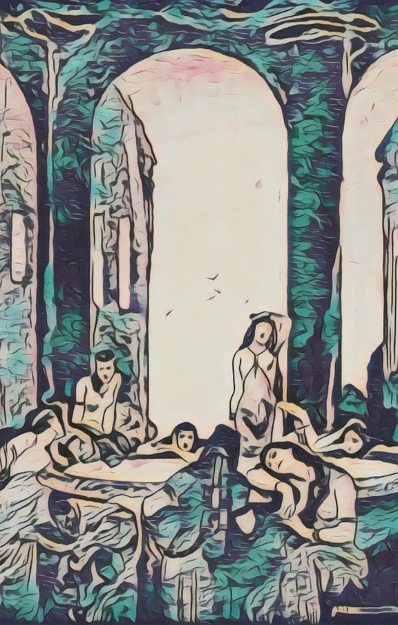
Le Chaudron de l'inspiration par Ernest Wallcousins (1882-1976)
Cymraeg (Gallois)
Francais
Preideu Annwfyn
1. Golychaf wledic
pendeuic gwlat ri.
2. [R]yledas y pennaeth
dros traeth mundi.
3. Bu kyweir
karchar Gweir [1]
yg Kaer Sidi [2]
4. Trwy ebostol Pwyll
a Phryderi. [3]
5. Neb kyn noc ef
nyt aeth idi.
6. Yr gadwyn trom las
kywir was ae ketwi.
7. A rac Preideu Annwfyn [4]
tost yt geni.
8. Ac yt urawt
parahawt
yn bard wedi. [5]
9. Tri lloneit Prydwen [6]
yd aetham ni idi.
10. Nam seith
ny dyrreith
o Gaer Sidi.
11. Neut wyf glot geinmyn
cerd ochlywir.
12. Yg Kaer Pedryuan
pedyr y chwelyt.
13. Yg kenneir
or peir [7]
pan leferit.
14. O anadyl naw morwyn
gochyneuit.
15. Neu peir pen Annwfyn
pwy y vynut.
16. Gwrym am yoror
a mererit.
17. Ny beirw bwyt llwfyr
ny rytyghit.
18. Cledyf lluch Lleawc [8]
idaw rydyrchit.
19. Ac yn llaw Lleminawc
yd edewit.
20. Arac drws porth Uffern
llugyrn lloscit.
21. A phan aetham ni gan Arthur
tra fferth lechrit
22. Namyn seith
ny dyrreith
o Gaer Vedwit.
25. Echwyd a muchyd
kymyscetor [9]
26. Gwin gloyw eu gwirawt
rac eu gorgord.
27. Tri lloneit Prydwen
yd aetham ni ar vor.
28. Namyn seith
ny dyrreith
o Gaer Rigor. [10]
29. Ny obrynafi lawyr [11]
llen llywyadur. [12]
30. Tra Chaer Wydyr [13] ny welsynt wrhyt Arthur.
31. Tri vgeint canhwr
aseui ar y mur.
32. Oed anhawd
ymadrawd
aegwylyadur
33. Tri lloneit Prydwen
yd aeth gan Arthur.
34. Namyn seith
ny dyrreith
o Gaer Golud.
35. Ny obrynaf y lawyr
llaes eu kylchwy
36. Ny wdant wy pydyd
peridyd pwy.
37. Py awr ymeindyd
y ganet cwy. [14]
38. Pwy gwnaeth
arnyt aeth
doleu Defwy.
39. Ny wdant wy yrych brych [15]
bras y penrwy.
40. Seith vgein kygwng
yny aerwy.
41. Aphan aetham ni gan Arthur
auyrdwl gofwy.
42. Namyn seith
ny dyrreith
o gaer vandwy.
43. Ny obrynafy lawyr
llaes eu gohen.
44. Ny wdant pydyd
peridyd Pen.
45. Py awr ymeindyd
y ganet Perchen.
46.Py vil agatwant
aryant y pen. [16]
47. Pan aetham ni gan Arthur
afyrdwl gynhen.
48. Namyn seith
ny dyrreith
o Gaer Ochren.
49. Myneich dychnut
val cunin cor.
50. O gyfranc udyd
ae gwidanhor.
51. Ae vn hynt gwynt
ae vn dwfyr mor.
52. Ae vn vfel tan
twrwf diachor. [17]
53. Myneych dychnut
val bleidawr.
54.O gyfranc udyd
ae gwidyanhawr.
55. Ny wdant pan yscar
deweint agwawr.
56. Neu wynt pwy hynt
pwy yrynnawd.
57. Py va diua
py tir aplawd.
58. Bet sant
yn diuant
abet allawr.
59.Golychaf y Wledic
Pendefic mawr.
60. Na bwyf trist
Crist am gwadawr.
Les Dépouilles de l'Abîme
1. Gloire à Notre Seigneur,
le maître du Royaume
2. Dont l'empire aux grèves
de ce monde s'étend.
3. La prison qui retint
Gweir fut des plus solides :
Kaer Sidh, le fort puissant.
4. Or, l'histoire de Pwyll
et Pryderi l'assure,
5. Nul ne put avant lui
parvenir à ces bords.
6. Une chaîne d'azur,
entravait ce jeune homme !
7. Triste, il chantait devant
les Dépouilles opimes...
8. Et jusqu'au Jugement,
tous, bardes que nous sommes,
nous chanterons ainsi.
9. Trois fois plein le navire
Prydwen, nous partîmes...
10. Nous n'étions plus que sept
au retour
de Kaer Sidh.
11. Si l'on perçoit mon chant,
j'entends que l'on m'encense...
12. A Kaer Pedryfan
à l'enceinte quadruple,
13. Mon talent,
le Chaudron
lui seul, le dispensa.
14. Lui que le souffle de
neuf Muses réchauffa.
15. Ce chaudron d'Annwfyn,
quelle est son apparence ?
16. De perles sa bordure
alentour est ornée.
17. Il n'a pas à bouillir
de lâches la pitance.
18. D'Excalibur il a
raffermi la substance,
19. Avant que Llyminawc
en sa main l'eût serrée ...
20. Sur le seuil de l'Enfer
une lanterne guète.
21. Nous suivîmes Arthur
- O la splendide quête ! - ...
22. Nous n'étions que sept au
retour
de Kaer Medwyd.
23. Si l'on entend mon chant,
quelle gloire ineffable !
24 Au Fort aux Quatre Murs, (Pedryfan),
cette île inexpugnable,
25. On vit la méridienne
au jais mêler les ors
26. De l'enivrant vin blond
qui précédait l’Escorte !
27. Trois fois la nef Prydwen:
c'était notre cohorte ...
28. Nous n'étions plus que sept,
rentrés
de Kaer Rigor.
29. Je fais bien peu de cas
des piètres gens de lettres :
30. Au Fort de Verre, Arthur,
ta vertu l'ont-ils vue ?
31. Six mille hommes couvraient
les murailles peut-être.
32. Eux, dont la
sentinelle
obstinément s'est tue !
33. Trois fois plein le vaisseau
d'Arthur, nous embarquâmes ...
34. Nous n'étions que sept au
retour
de Kaer Golud.
35. A d'autres mes lauriers,
cuistres aux targes traîtres !
36. Vous ne savez le jour
où Kwy commença d'être.
37. Quelle heure de midi,
ce Kwy, l'aura vu naître ;
38. Et qui ne permit point
qu'aux vallées de Defwy
jamais il arrivât.
39. Et le bœuf tacheté
et sa large encornure,
40. Aux cent quarante nœuds
sur sa longe : ignoré !
41. Nous, c'est avec Arthur,
un jour, que nous partîmes...
42. Nous n'étions plus que sept
rentrés
de Kaer Mandoué.
43. Je fais bien peu de cas
des scribes aux vues grises.
44. Qui ne savent le jour
où leur Chef a paru.
45. Quelle heure de midi
vit naître son emprise.
46. Quel animal au front
d'argent leur fut confié.
47. Nous suivîmes Arthur
au milieu des tourmentes...
48. Mais nous n'étions que sept
rentrés
de Kaer Ochren.
49. Ainsi qu'un chœur de chiens,
tant de moines en meute,
50. S'élancent au-devant
des quelques herméneutes
51. Qui savent que le vent,
la mer, n'ont qu'un chemin,
52. Qu'une étincelle peut
réduire tout à rien !
53. Ces moines
tels des loups.
54. Courent à la rencontre
de ceux qui savent. Eux
55. Ignorent quand la nuit
accouche de l'aurore,
56. Quel est le cours du vent ;
sur quel roc il se rompt ;
57. En quels lieux il fait rage
et quel sol il harcèle.
58. Et la tombe du Saint
s’évanouit : la stèle,
le fonds et le tréfonds ...
59. Je rends grâce au Seigneur
Christ, maître du Royaume :
60. Il console tout homme :
Il m'a pourvu de dons.
[1] Gweir Map Geirioed
: est décrit dans une « Triade de l'Île de Bretagne », la Triade 52, comme l'un des trois prisonniers fameux de ladite île. Il subit sa punition dans une prison préparée pour lui dans la forteresse de l'Au-delà où il chante devant les « dépouilles d'Annwfyn ». Il est délivré par Arthur dans le conte des "Mabinogion", Culhwch et Olwen.
[2] Kaer Sidh
: L'au-delà de la mythologie irlandaise ("sidh") est évoqué dans un autre poème du « Livre de Taliésin » de la même façon :
« Ys kyweir vyg kadeir yg kaer sidi »
, "On m'a préparé mon siège à Kaer Sidi" = Ma réputation est immortelle. Un trône m'attend dans l'Au-delà. Dans ce poème, il est aussi question de forteresse marine, d'une fontaine d'abondance, d'un breuvage plus suave que le vin blanc.
[3] Ebostol Pwyll a Phryderi
: Pryderi est le fils de Pwyll dans le conte gallois des Mabinogion, « Pwyll, prince de Dyfed ». En breton, "poell"= raison, bon sens, "prederi"= préoccupation, réflexion, "ebestel"= apôtres ou épître (ici 'conte'). C'est un autre personnage, Manawydan, fils du roi Llyr qui est associé à Pryderi dans la 3ème "branche" (conte) des Mabinogion.
[4] A rac preideu Annwfyn
. Rac= breton rak, "devant". Ces "dépouilles" (breton : preizh-où) sont sans doute le chaudron que convoitent les compagnons d’Arthur. Mais il peut s'agir en outre du vin enivrant (str. 25) et de l'animal fabuleux dont il est question, str. 39 et 46.
[5] Yn bard-wedi.
Gwedi= prière. Yn= breton, "hon", notre. Ce mot se rapporte-t-il à l'auteur+ Gweir ? Ce peut-être aussi un "nous" de majesté. Ou l'équivalent du breton "goude"= par la suite.
[6] Prydwen
(face blanche) est le nom du bateau d'Arthur dans la « Conquête d'Olwen » des Mabinogion.
[7] Or peir
(du chaudron) : Dans « Y Gododdin » d'Aneurin, on voit Taliesin subir une initiation poétique (« o feg gywrennin » = sa bouche exercée) décrite comme un emprisonnement sous terre. Dans le « Conte de Gwion Bach » et le « Conte de Taliesin » c'est le jeune Gwion qui reçoit la science infuse du chaudron de Cerridwen, à la place de son fils, le vilain Afangddu. Gwion échappe à Cerridwen sous diverses formes jusqu'à être avalé par elle et renaître sous la forme du Barde Taliésin qui éclipsera par son talent les bardes du mauvais rois Mael Gwen. (cf. annexe1 et annexe 6)
Le chaudron magique qui est ici source de talent littéraire, ressuscite les soldats morts dans la 2ème branche des Mabinogion, l'« Histoire de Branwen ». Le chaudron est brisé quand le frère de celle-ci, Bran-le-Béni attaque l'Irlande pour la délivrer. Seuls 7 héros (dont Pryderi et Taliesin) revinrent de cette expédition.
Dans « Culhwch et Olwen », Arthur prend la mer pour aider Culhwch à accomplir un des exploits exigés par le géant Ysbaddaden : la conquête du chaudron du géant irlandais Diwrnach. Il rentre victorieux, en possession de l'objet convoité.
Un raid pour s'emparer d'un chaudron magique est au centre d'un poème irlandais « Dun Scàith » (La citadelle de l'ombre) : expédition maritime, île fortifiée aux portes de fer, cellule souterraine, bétail surnaturel, chaudron contenant un trésor, un prisonnier qui s'échappe, sont quelques-uns des traits qui rapprochent ce conte des « Preideu Annwfyn ».
[8] Cledyf lluch Lleawc
: peut-être s'agit-il de Llwch Lawwyn(y)awg (Llwch "à la main de vent") cité 2 fois dans "Culhwch et Olwen". Certains voient en ce "Llwch", le Lug de la mythologie irlandaise qui donne, semble-t-il, son nom aux 'innombrables "Lugudunum": Lyon, Laon, Leyde, Loudun...
L'importance de ce personnage conduit parfois à voir dans le Lancelot des romans de Chrétien de Troyes le successeur du Lug gaulois.
Toutefois "lluch" signifie "brillant" (breton : luc'hañ=briller, luc'hed=éclair) et "Lleawc" signifie "mise à mort" (breton : lazh), tandis que "Cledyf" signifie "épée" (breton : kleze). L'ensemble pourrait donc signifier "épée de la mort foudroyante". A moins que "Cledyfluch" doive se lire "Calydfulch", en breton "Kaletvoulc'h" (Dure entaille) et désigne l'épée d'Arthur appelée "Excalibur" dans les romans français.
Quant à Llyminawc (str. 19) dans la main de qui est remise l'épée, il peut s'agir de Llenlleawg l'Irlandais cité, lui aussi, 2 fois dans l'interminable liste des personnages invoqués par Culhwch dans le récit dont il est le héros. Ce Llenlleawg Wyddel (l'Irlandais) tua le géant Diwrnach, permettant la conquête du chaudron.
Est-ce le même personnage que le Llemenic Mab (fils de) Mawan cité dans une (N°42) des Triades de l'Île de Bretagne ?
Ce nom, parent du breton "lamm" (saut) signifierait "le Bondissant". Si l'épée est bien Excalibur, "Llyminawc" (llyminiog) devrait logiquement être un qualificatif désignant son propriétaire, Arthur.
[9] Echwydd a muchyd cymyscetor
: "Méridienne et jais se mélangent". Mais "echwyd" signifie aussi "eau courante". Il est difficile de voir ici une allusion à une croyance mentionnée par Isidore de Séville dans ses « Etymologiae », selon laquelle le mélange d'eau et de jais engendre le feu... Le breton traduit "noir comme jais", soit littéralement par "du evel jed", soit par "ker du evel dour-derv" = "aussi noir que le gui du chêne". L'idée semble être qu'une semi-obscurité règne en permanence sur cette île, ce qui conduit certains à lire à la strophe 28, "frigor" au lieu de "rigor". Bien que ce mot latin n'existe pas, ils y voient la "preuve" que l'Annwfyn se situe près du pôle et qu'il y fait aussi froid que dans l'enfer breton (an ifern yen).
[10] Le nom de la forteresse
("Caer") de l'Autre-monde change 8 fois: strophes (3) et (10) Sidh, (12) et (24) Pedryfan = aux quatre monts (breton : peder=quatre), (22) Medwit = med+gwit =banquet (breton : mezv=ivre), (28) Rigor (latin= rigueur), (30) Gwydyr = de verre (breton : gwer) (33) Golud (=obstacle, allusion à la sentinelle récalcitrante?), (42) Man-Dwy : Mont de Dieu (breton : Doue), (48) Ochren = enfermement.
Certains critiques comprennent qu'il s'agit de 8 expéditions différentes.
[11] Ny obrynafi lawyr
: Cf. breton : gopr= salaire, goprañ=rétribuer, ici « faire cas de ». "Lawyr" semble se composer de « llaw » (breton : le) =petit, mesquin, piètre, médiocre et de « gwyr » (breton : gour) =homme. On peut aussi lire « llewyr » (breton : lenner) = lecteur du fait que dans la suite du poème, s'agit bien de copistes négligents, d'imitateurs inaptes et de critiques incompétents. Plusieurs traducteurs anglais semblent lire "lawyer", d'autres "laurels" (lauriers, Breton "lore").
[12] Llen llywyadur
: tous les traducteurs de langue anglaise s'accordent pour voir dans cette combinaison de mots une référence aux Saintes écritures en prélude à l'attaque finale contre des moines.
[13] Kaer Wydyr
: La forteresse de verre. Ce motif se trouve associé à celui de la sentinelle dans l'Historia de Nennius, à propos des premiers habitants de l'Irlande, un peuple venu d'Espagne. En route ils rencontrent une tour de verre en pleine mer dont les occupants ne répondent pas à leurs appels. Ils attaquent la forteresse avec trente bateaux qui coulent tous, sauf un, dont l'équipage peuplera l'Irlande. Le roman de Chrétien de Troyes, Erec, appelle Méléagant (Maelwas) le "seigneur de l'Île de verre".
[14] Strophes 36 et 37
: Les commentateurs gallois eux-mêmes hésitent sur le sens à donner à ces strophes :
- Ny wdant wy pydyd peridyd pwy. (Breton : N'ouzont (ket) e pe deiz...piv. Ils ne savent pas quel jour... qui. "Peridyd" pourrait signifier "créateur" ou "être créé".
- Y meindyd : pourrait signifier "à midi". "Cwy" pourrait être un personnage (inconnu par ailleurs). A moins qu'il ne s'agisse de "Dwy", Dieu. Et si on corrige à la strophe 36 "pwy" en "plwyl" (peuple), on obtient pour (36) et (37) : "Ils ne savent pas quel jour l'homme fut créé / Ni à quel moment Jésus est né."
[15] Yr ych brych
(le bœuf tacheté) est également cité dans les Triades et dans Culhwch et Olwen où sa capture et sa mise sous le joug est l'un des exploits imposés à Arthur. Cependant l'auteur omet de le raconter par le menu.
[16] Py vil a gatwant aryant y pen
(quel animal à la tête d'argent ils gardaient) et "Caer Ochren" font sans doute allusion à un autre conte arthurien. Le nom "Cad Achren" (Le combat d'Achren) est cité dans le manuscrit Peniarth 98B où il équivaut à "Cad Goddau" (Le combat des arbres). Dans le poème du Livre de Taliésin intitulé "Kad Godeu", des sages sont invités à "darogenwch y Arthur", à prophétiser sur Arthur. On peut de ce fait supposer que celui-ci intervient dans ce conflit dont l'origine est le vol d'un lévrier et d'un chevreuil appartenant à Annwfyn.
[17] Ae vn hynt gwynt
: les 4 éléments réunis en une strophe !
On comprend en lisant la suite pourquoi l'auteur méprise les copistes et commentateurs qui ne sont pas au fait de ses connaissances ésotériques !
On constate que comme dans la tradition orale bretonne,
Merlin est absent des multiples références arthuriennes galloises
de ce poème : Gweir, Pwyll et Pryderi, Prydwen, le chaudron, les neuf muses, Excalibur, Kwy, le bœuf…
On verra en outre que cette polémique littéraire opposant les bardes gallois aux scribes « incultes » des monastères occupe une place centrale dans un autre poème, celui d’
Yscolan
, un personnage que l'on est en droit de considérer comme un double de Myrddin.
On a vu que Gwendoleu, chef et ami de Merlin mourut en 573 à la bataille d'Arthuret (en gallois : Arfderydd), selon les
Annales de Cambrie
. On sait aussi que le manuscrit du 13ème siècle,
Le livre d'Aneurin
attribue à ce poète un chant
Y Gododdin
qui déplore le sort de guerriers de la nation des Votadini engagés contre les Angles à Catraeth vers l'an 600 et qu'il est question dans cette élégie du
"beau chant de Myrddin"
. Ces deux textes illustrent l'existence entre le 5ème et le 11ème siècle de
royaumes brittoniques
au nord de l'actuelle Angleterre
, dans ce qu'on appelle le "Vieux Nord" (gallois :
Yr Hen Ogledd
). Les considérations exposées dans la note 8 conduisent à localiser la berceuse
"La robe de Dinogad"
ci-après sur les rives de la
Derwent de Cambrie (Cumbria)
, dans l'
ancien royaume de Rheged
.
Bien que
La robe de Dinogad
fasse partie intégrante du poème
Y Gododdin
dans le livre d'Aneurin, il s'agit sans doute d'une
adjonction en marge
qu'un copiste a intégrée à tort dans le texte principal, pensant qu'elle en faisait partie. La teneur du poème et le dialecte qu'il utilise suggèrent qu'il date d'environ
650
et qu'il fut rédigé dans le royaume de
Strathclyde
(en gallois,
Ystrad Clud
). Une mère s'adresse en le berçant à son petit Dinogad, enveloppé dans une pelisse de martre, à qui elle vante les talents de chasseur de son père. Elle énumère les animaux figurant à son tableau de chasse. La berceuse étant exclusivement au passé, on peut supposer que ce père n'est plus de ce monde.
Le
Cambrien
(Cumbrian)
était un dialecte brittonique du nord, rameau de la branche orientale des langues celtes. De cette branche il existe encore de nos jours trois représentants : le gallois et le breton encore parlés et le cornique que l'on tente de faire renaître de ses cendres. La traduction bretonne que nous proposons également ne rend compte que de quelques allitérations qui émaillent l’original. Elle conduit à suggérer certaines remarques indiquées en notes.
Une grande quantité de mots "cambriens" et bretons se correspondent, en particulier tous les noms d'animaux, sauf la "martre". Il est remarquable qu'à
Brest ou à Vannes
, on puisse sans trop d'effort, comprendre un langage qui se parlait
au 7ème siècle au nord de l'Angleterre
.
Cymraeg (Cambrien)
Brezhoneg (Breton)
Francais
Peis Dinogat
1. Pais [1] dinogat
[2] e vreith vreith.
o grwyn balaot [3]
ban wreith.
5. Eñ a lazhe pesk
er “gorig” [6]
‘Vel ma lazh
ul leon ul loenig.
6. Pa'z ae da dad-te
d'ar menez,
ur penn yourc'h [7]
eñ degase
Penn gouez-hoc'h,
pe penn heizez,
7. Penn glujar
vrizh eus ar menez,
Pesk eus Red-dour
an Dervenneg [8].
8. Kement gourhede
da dad-te
e c'hoaf:
Pe gouez-hoc'h, pe liñ,
pe louarn:
Netra anezhe-holl.
‘vit diflippat!
La robe de Dinogad
1. Dinogad, ta saie
tachetée,
De peaux de martre
je l'ai faite.
2. Siffle, siffle,
ta mélodie !
Huit fois le roitelet
répète :
3. Lorsque ton père
allait chasser,
Crosse en main,
gaule sur l'épaule,
4. Ses chiens
fermement
il hélait :
« Allons, attrape,
attrape, apporte !"
5. Tuant en coracle
un poisson,
Comme un lion
tuerait une bête.
6. Lorsqu'il s'en
allait sur les monts,
Il nous rapportait
de sa quête,
Sanglier, chevreuil
ou bien biche,
7. Perdrix bigarrée
des montagnes
Poisson de la
Cascade aux chênes.
8. Qu'à portée
de son épieu
passe
Sanglier, lynx ou
bien renard,
De sa main toute
proie trépasse !
"Pais Dinogat" chanté par Mari Mathias
[1] Peis
: le gallois pais et l'ancien breton peis viennent du latin pexa qui désignait une tunique de femme ou d'enfant.
[2] Dinogad
: nom porté par le dernier roi de Strathclyde, Donnchad, le Duncan du Macbeth de Shakespeare. Il signifie "fort de combat" (Dun- Kad).
[3] Balaod
: Ce mot est aujourd’hui en gallois le pluriel de diverses formes (bela, bele...) qui désignent la martre (ou la belette ou le putois).
[
4] Wythgeith
: il faut sans doute lire « eizh gwech », huit fois, peut-être un chant d’oiseau par strophe.
[5] Llath et llory
: correspondent aux mots bretons lazh et lorc'h(enn), gaule ou latte et limande de charrette.
[6] Corwg
: Coracle. Le nom de cette barque ronde individuelle pourrait être d'origine latine : corium.
[7] Penn ywrch, penn gwythwch etc.
: "tête" de chevreuil, de sanglier, etc. Cette façon de désigner les animaux pris individuellement n'est plus en usage en gallois, contrairement au breton moderne.
[8] Rayadyr Derwennyd
: Si le premier mot est l'ancêtre du gallois moderne rhaedr, il signifie cascade, chute d'eau. S'il répond au breton red-dour, il signifie rivière. L'ensemble traduit le toponyme anglais "Derwentwater". Deux localités peuvent correspondre à cette dénomination : Durham Derwent à l'est, sur le territoire des Gododdin qui n'a pas de cascades et Cumbrian Derwent ou Lodore Falls à l'ouest dans l'ancien royaume de Rheged, où Falls signifie chutes d'eau. « Derv » signifie « chênes » (singulatif : « dervenn »).
[9] Le vêtement animalier
: La pelisse de l’enfant, cousue de peaux de bêtes fait de lui, symboliquement, un chasseur par héritage initiatique de son défunt père. Dans ce chant, les huit strophes traduisent ce que chante le roitelet, l’oiseau (gochenyn= petit oiseau rouge) associé à Merlin-le Sauvage que les chasseurs de la chanson bretonne ont tant de mal à capturer. Le lion métaphorique marque une influence latine ou biblique sur ce chant du « Vieux Nord » où les proies réelles appartiennent aux trois éléments : la terre, l’eau et l’air, comme les animaux des trois royaumes du conte de « Jobig » noté par Jef Philippe (N° 17).
On peut supposer qu’en 1858, année où le poème qu’on va lire fut publié pour la première fois dans « le Merveilleux au moyen-âge. L'enchanteur Merlin", La Villemarqué avait effectivement collecté cette berceuse de la bouche d’une femme du peuple, lui qui disait au philologue Emile Ernault en lui montrant ses cahiers d’enquête, qu’il « lui semblait encore voir et entendre la nourrice de qui il le tient... »
Comme on ne le trouve dans aucun autre recueil, selon Luzel et Joseph Loth, cités (P. 389 de son "
La Villemarqué
") par Francis Gourvil qui se range à leur avis, ce chant mythologique ferait partie de la catégorie des chants inventés. C’est fort improbable.
En revanche, Dans un entretien accordé à "Ar Gedour", l'abbé Marcel Blanchard fait remarquer que la
mélodie
de cette berceuse est celle d'un cantique à Sainte Anne
"Dirak ho relegoù sakred"
. Il ne se prononce pas sur la question de l'antériorité d'une pièce par rapport à l'autre.
Dirag ho relégoù sakret,
Santéz Anna, Rouanéz or bro
Chetu ni hoah ur wézh tolpet,
Tolpet evid laret kénavo...
Devant tes saintes reliques,
Sainte Anne, reine de notre pays,
Nous voici à nouveau réunis
Réunis pour te dire « au revoir » ...
Les diverses traditions littéraires s'accordent pour faire de Merlin le fils d'une vierge.
Les
Myvyrian Archaeologiae
, citées par La Villemarqué, l'appellent
"Ap-Lean"
, le "Fils-de-la nonne".
Dans l'
Historia Brittonum
de Nennius (9ème siècle), Ambrosius est l'enfant sans père dont les sorciers ont prescrit au roi Vortigern de verser le sang dans les fondations de la tour Dinas Emrys qui s'obstine à s'effondrer chaque soir. Vortigern trouve un tel jeune homme en la personne d'Ambrosius, qui réprimande les sages et révèle que le trouble était causé par deux dragons, un rouge et un blanc, allégories des Celtes et des Saxons, enfouis sous terre.
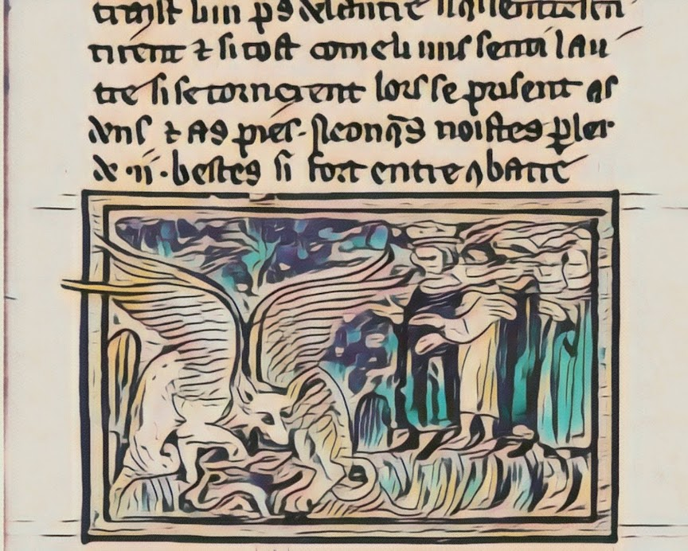
Merlin, Vortigern et les dragons
Cet épisode est repris et embelli trois siècles plus tard (1138), dans son
Histoire des rois de Bretagne
, par Geoffroy de Monmouth chez qui l'enfant sans père est Merlin(us) dont il dit qu'il s'appelait aussi Ambroise.
La mère de l'enfant, la fille du roi de Démétie (Dyfed) qui vivait au milieu de religieuses dans l'église de la ville que l'on appela Kaermerdin (Carmarthen, gall. Caerfyrddin), déclare au roi :
"Quelqu'un m'apparaissait sous la forme d'un très beau jeune homme qui après s'être attardé quelque peu avec moi, disparaissait complètement à mes yeux. Plusieurs fois il s'unit à moi charnellement sous l'aspect d'un homme, m'abandonnant lorsque je fus enceinte."
Le sage Maugantius explique au roi qu'il a lu dans les livres des philosophes que beaucoup d'hommes ont été conçus de la sorte :
"Ainsi que l'expose Apulée dans son "De Deo Socratis", des esprits que nous appelons 'démons incubes' habitent entre le ciel et la terre ; ils participent à la fois de la nature des hommes et de celles des anges et lorsqu'ils le souhaitent, ils prennent figure humaine et s'unissent avec des femmes. Peut-être est-ce l'un d'eux qui a engendré ce jeune garçon."
Cette référence à la doctrine platonicienne des "daimones" n'a rien à voir avec des créatures diaboliques.
Les clercs de la fin du 12ème siècle, Robert de Boron, ainsi que ses innombrables successeurs, commettent un contresens lorsqu'ils font un
"fils du diable"
de ce bénéficiaire d'une ascendance céleste. Robert de Boron nous raconte comment un
consistoire de diables
décida de répondre à l'avènement du Christ qui leur faisait perdre tant d'âmes damnées en suscitant la venue d'un Antéchrist conçu par un
diable
incube. Et voilà pourquoi une vierge se retrouva enceinte.
L'auteur, quel qu'il soit, de "Merlin au berceau", n'a pas commis cette erreur d'appréciation.
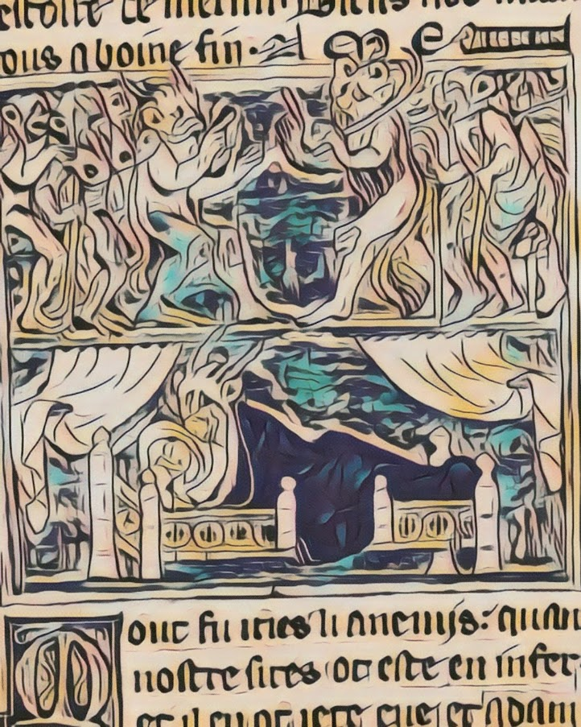
Engendrement de Merlin
selon Robert de Boron (BNF, F95, f.113v)
1. Bremañ trizek miz ha teir sun
(2 wech)
Dindan ar c'hoad e oan e hun.
diskan:
O hun eta, va mabig, va mabig!
O hun eta, toutouig la la!
2. Klevis o kanañ ul lapous
Kane ken flour, kane ken dous.
diskan
3. Kane ken dous, kane ken flour,
Flouroc'h eget hiboud an dour.
4. Kement ma'z is d'e heul, diboell,
Touellet gantañ va spered.
5. D'e heul pell-pell, pell-pell ez is,
Siwazh, siwazh, d'am yaouankiz!
6. Merc'hig Roue, e lavare,
Kaer out evel gliz ar beure.
7. Ar goulou-deiz a zo souezhet
Pa sell ouzhit, ne ouzout ket?
8. Pa bar an heol, na souezhet eo!
Na piv a vo da bried-te?
9. Tavit, tavit kozh lapousig!
C'hwi zo gwall-lik gant ho pegig!
10. Mar zellfe Roue al Laez ouzhin
Ar goulou-deiz ne ra van din.
11.Ne ra van din-me sell an heol
Na kennebeut sell ar bed holl.
12. Mar ‘gomzit din eus dimezi
Komzit d‘eus Roue an Neñv din!-
13. Kanañ ‘ rae brav ouzh brav vel-kent
Ha me d'e heul, souchet va fenn.
14. Ken e kouezis skuizh-stank kousket
Dindan un dervenn, er gwasked.
15. Hag eno em-boa un huñvre
Am sabatuas betek re:
16. E oan e-barzh ti un Duzig;
Ha tro-war-dro ur feunteunig.
17. He mein ken boull, he mein ken sklaer!
He mein ken splann evel ar gwer!
18. Ur gwiskad man war al leur-di
Bleunioù nevez strevet warni.
19. An Duzig ne oa ket er ger,
Ha me diogel ha seder.
20. Pa wellis o tont d’eus-a-bell
Un durzhunell a denn-askell.
21. Hag e stokas gant he begig
Ouzh moger voull ti an Duzig
22. Ha me, sot, gant truez outi
Da vont da zigor an nor dezhi.
23. Hag hi e-barzh, ha da rodal
Tro war dro d'an ti o nijal.
24. Gwech war va skoaz, gwech war va fenn
Gwech e nije war va c'herc'henn.
25. Teir gwech ouzh va skouarn e pokas
Ha kuit drev en-dro d'ar c'hoad glaz.
26. Mar oa drev hi, me ned‘on ket
Mallozh d'an eur ma oan kousket.
27. An dour a ver diouzh va lagad
Pa dlean kavell luskellat.
28. A-youl ‘vefe en ifern-skorn
An Duarded, kig ha askorn!
29. A-youl ‘vefe gaou va huñvre!
Na oufe den eus va doare!
30. Ar mab, hag eñ nevez-ganet
O c'hoarzhiñ en-deus diskanet:
31. "Tavit va mamm, na ouelit ket!
Ganin n'ho-po preder ebet!
32. Nemet em-eus gwall-galonad
Pa ’rit un Duard eus va zad.
33. Etre an neñv hag an douar
Va zad zo ken kann hag al loar.
34. Va zad a gar an dudoù kaezh
Ha, pa gav an tu, o gwarez.
35. Ra viro Doue da viken
Va zad diouzh puñs an ifern yen!
36. Nemet bennozh a ran d'an eur
Ma voen ganet evit an ëur…
37. Ganet ‘vit an ëurvad va bro:
Doue diouzh anken d'he miro!"
38. Ar vamm a chomas souezhet-bras:
"Hemañ zo MARZH mar voe biskoazh!"
O, hun eta, va mabig, va mabig,
O, hun eta, toutouig la la!
MERLIN AU BERCEAU
1. Voilà treize mois et demi
(bis)
que sous ce bois je m'endormis.
refrain
Dors maintenant, bien vite, bien vite ;
Dors maintenant, mon petit enfant.
2. J'avais ouï chanter un oiseau
au chant si doux, au chant si beau,
refrain
3. Si doux ce chant et aussi beau
que l’est le gazouillis de l'eau.
4. Si bien que, sans même y penser,
je le suivis l'esprit charmé.
5. Et je m’en fus bien loin, bien loin,
moi, la jeune et sotte nonnain !
6. - Fille de roi, son chant disait,
aussi belle que la rosée,
7. Le jour levant en te voyant
se pâme de ravissement !
8. Le soleil lui-même est ravi.
Dis-moi, qui sera ton mari ? -
9. - Mais tais-toi donc, oiseau maudit,
toi dont le babil m’étourdit !
10. Puisque le Roi d'En-haut m'honore,
je me moque bien de l'aurore,
11. De tous les regards du soleil
et de l'univers, tout pareil !
12. Je ne connais qu'un seul époux:
Le Roi du ciel, un point, c'est tout! -
13. Mais, doux était son gazouillis :
tête baissée, je le suivis.
14 Et voilà que je m'endormais
de fatigue dans un fourré.
15. En rêve, j'eus une vision
qui causa ma stupéfaction :
16. J'étais dans l'antre d'un
duzig
[1]
Entourée d'eau jaillie d'un d'un puits
17. Dont les pierres étaient d'opale
diaphanes comme du cristal !
18. Sur le sol, toute une épaisseur
de mousse parsemée de fleurs.
19. Le duzig n'était pas chez lui.
J'étais sans peur, l’esprit ravi.
20. Lorsque, volant à tire d'aile,
j'aperçus une tourterelle.
21. Qui de son bec s’en vint frapper
le mur clair qui nous séparait.
22. Et moi, j'eus pitié, pauvre sotte,
je m'en fus entrouvrir la porte.
23. Et elle entra dans la maison
et vola le long des cloisons.
24. Elle effleurait tantôt ma main,
tantôt ma tête, ou bien mon sein,
25. Et mon oreille, par trois fois,
et s'en retourna vers le bois,
26. Joyeuse, mais moi je pleurais :
Maudit soit ce songe à jamais !
27. Je verse des larmes à flots,
moi qui balance ce berceau.
28. Qu'ils soient voués à l’enfer glacé [2]
ces esprits noirs, ces farfadets !
29. Si ce rêve pouvait passer !
Si je pouvais me réveiller ! -
30. L'enfant, aussi jeune qu’il fût,
en souriant a répondu :
31. - O ma mère, ne pleurez pas :
Je ne vous cause aucun tracas !
32. Mais vous faites mon désespoir
en nommant mon père "esprit noir".
33. Car entre le ciel et la terre,
comme la lune luit mon père
34. Mon père aime les malheureux,
Il veut les aider de son mieux.
35. Que Dieu le préserve à jamais
Du puits de cet enfer glacé !
36. L'instant soit à jamais béni,
Où, pour bien faire, je naquis,
37. Pour le seul bien de mon pays
Que Dieu garde de tous soucis.
38. La mère, abasourdie, reprit
"Quel est donc ce PRODIGE (3) inouï ?"
Dors maintenant, bien vite, bien vite,
Dors maintenant, mon petit enfant !
[1] "Duzig" signifie "esprit noir" ("du"= "noir").
[2] Une conception de l'enfer, peut-être héritée des anciens Celtes.
[3] (PRODIGE = "Marzh", MERLIN = "Marzhin"). Le miracle dont il s’agit est la faculté qu’a Merlin de s’affranchir du cours du temps : A quatre mois, il se fait l’avocat de son père !
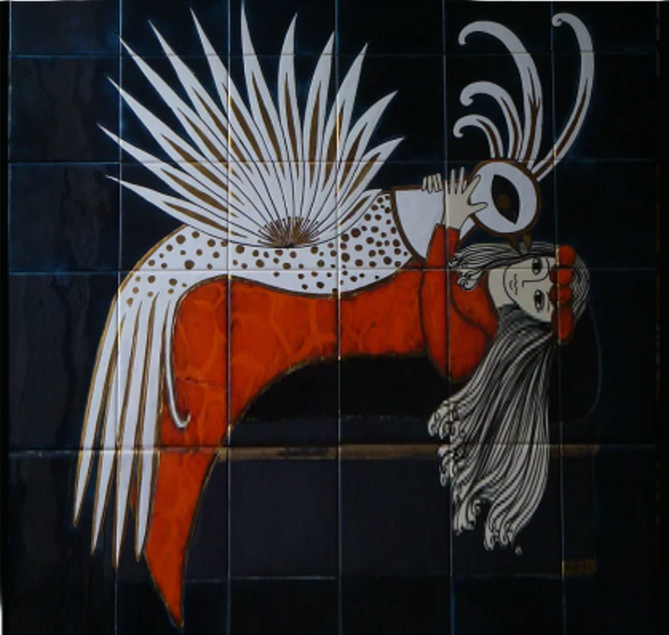
Engendrement de Merlin
selon Dodig Jegou (1934-2024)
Ce conte occupe dans la collection définitive des "Kinder- und Hausmärchen » (Contes enfantins et domestiques) des Frères Grimm la 136ème place et est donc repéré sous le N° KHM136. Il ajoute au schéma narratif du conte breton de Merlin une allusion aux métaux et aux symboles qu’ils véhiculent, opposant le fer (Eisen) à l’or (Gold). Une part importante du récit reprend «Der eiserne Hans" (Jean de Fer) de Friedmund von Arnim et de son recueil "Hundert neue Märchen im Gebirge gesammelt" (Cent Nouveaux Contes recueillis dans les montagnes) dont la première édition date de 1844. Il n’apparaît dans le recueil des Frères Grimm que dans la sixième et dernière édition de 1850.
La classification Aarne-Thompson-Uther, dédiée aux contes-types, associe à Jean de Fer les codes ATU 502 (l’Homme sauvage) et ATU 314 (le Garçon aux cheveux d’or).
Voici un résumé du conte :
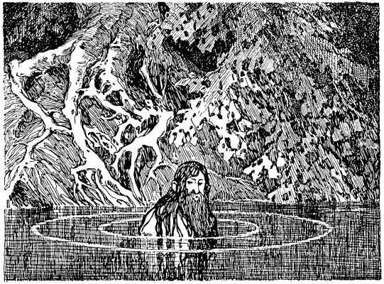
Le sauvage dans la mare par Otto Ubbelohde
Dans un royaume arrive un nouveau chasseur, qui s'en va parcourir la forêt avec son chien. Le chien découvre une mare au fond de laquelle se trouve un
homme sauvage
, des hommes et des animaux. Le chasseur laisse la mare se vider et
capture
l’homme sauvage, nommé
Jean de Fer
.
Jean de Fer est enfermé dans une cage dans la cour du roi où il reste prisonnier. Le fils du roi se laisse convaincre par Jean de Fer de le libérer en
volant la clef de la cage
qui se trouvait sous l’oreiller de la reine sa mère.
L’homme sauvage emmène le fils du roi et il s’enfonce avec lui au fond des bois. Le prince doit veiller sur le
puits magique
de l’homme sauvage, dans lequel tout ce qui entre se trouve
changé en or
. Le prince commet trois fois l’erreur d’y laisser tomber quelque chose, notamment les mèches de sa longue chevelure, qui en devient dorée. Jean de Fer est furieux de voir qu'il a failli à sa mission, mais il lui laisse une chance.
En le laissant partir, Jean de Fer
promet au Prince qu’il lui portera secours
lorsqu’il en aura besoin.
Le fils ne retourne plus à la cour de son père : il parcourt le monde avant d'être embauché comme
jardinier
auprès d’un autre roi. Il tombe amoureux de la fille de ce roi, qui a elle aussi de l’affection pour lui. Alors que le roi s’engage dans une guerre avec un autre royaume, le prince recourt à l’aide promise par Jean de Fer. Celui-ci rejoint le roi et lui
assure la victoire
, après quoi il disparaît.
Le roi organise
un tournoi
de trois jours afin d’inciter le victorieux inconnu à se montrer et de pouvoir le remercier. La fille du roi doit chaque jour du tournoi récompenser d’une pomme d’or le vainqueur. Le prince ne peut résister à la tentation : il participe lui aussi au tournoi,
avec chaque jour un cheval et une armure différents
, donnés par Jean de Fer. Il remporte les pommes d’or l’une après l’autre les trois jours de lice. À sa
troisième victoire
pourtant, les hommes du roi démasquent le jardinier. Prié de s'expliquer, il avoue sa véritable origine et raconte toute son histoire. En tant que prince, et vainqueur, il réclame la main de la princesse. Le roi aussi bien que sa fille accèdent volontiers à sa demande.
Lors de la fête des noces, les parents du prince peuvent à nouveau serrer dans leurs bras le fils qu’ils pensaient avoir perdu. On voit aussi
surgir un roi étranger
et très majestueux, qui se présente comme Jean de Fer. L’homme explique au prince que celui-ci l’a délivré d’un enchantement ; pour le remercier, il le fait héritier de son immense fortune.
Giovanni Francesco Straparola, Gianfrancesco Straparola ou encore, en français, Jean François
Straparole
de Caravage (Caravaggio, province de Bergame), v. 1480 - Venise, v. 1558, est un écrivain italien de la Renaissance. Son œuvre majeure,
Les Nuits facétieuses (Le piacevoli notti)
, fut publiée
entre 1550 et 1555.
Le conte de l’Homme sauvage (Tome I, Nuit V, Fable 1) est résumé ainsi en préambule du récit :
« Guerrin, fils unique de Philippe-Marie, roi de Sicile, délivre un homme sauvage de la prison de son père et sa mère, craignant la colère de son époux, envoie l’enfant en exil. L’homme sauvage, étant apprivoisé, délivre Guerrin de plusieurs situations désagréables. »
Le rapprochement de cette histoire avec les contes bretons est fait pour la première fois par Luzel, comme on l’a dit.
L’épisode de l’être surnaturel doué de double-vue qui rie et pleure à contretemps relie le Merlin breton au Lailoken écossais. C’est pourtant un thème qui déborde largement le domaine celte. Il est représenté dans la tradition juive par le personnage du démon Asmodée.
Dans le
Livre de Tobie
(du Deutéronome) on parle du démon Asmodée qui empêche à plusieurs reprises le mariage de Sara : « Elle fut mariée à sept hommes successivement, mais le démon mauvais Asmodée les avait tous tués, avant que le mariage fût consommé Tob.3.8). L’archange Raphaël conseilla à Tobie de brûler le cœur et le foie d’un poisson pour conjurer ce diable. L’exorcisme réussit car Asmodée fut banni en Egypte.
Dans le
Talmud et le Midrash
, vers
350 après J-C.
, on trouve l’épisode de l’alternance du rire et des larmes. Il est dit qu’Asmodée fut mâté par le roi Salomon qui en fit son esclave, grâce à un anneau que lui avait offert l’archange Michel. Il contraint le démon à lui construire le temple de Jérusalem. Asmodée
parvient à s’emparer de l’anneau
, mettant fin à sa servitude, et à le jeter dans la mer. Le conte du Merlin breton substitue la clé à l’anneau de Salomon.
Mais un poisson rapporta l’anneau à son propriétaire. Comme Benaïa amenait au roi Salomon le démon captif, tous deux passèrent près d’un lieu où se célébraient joyeusement des noces et à cette vue Asmodée)
se mit à pleurer
, « parce que les joies de l’homme sont éphémères et qu’avant trente jours la mort séparerait les nouveaux époux. ».
Dans l’
Agada
, Asmodée devient une figure littéraire sympathique qui ne peut cependant se retenir de convoiter les femmes de Salomon et sa mère Bethsabée. C’est cet Asmodée coopératif qui
construit le temple de Jérusalem
. Il subtilise le trône de Salomon pendant quelques années et s’enfuit au retour de Salomon.
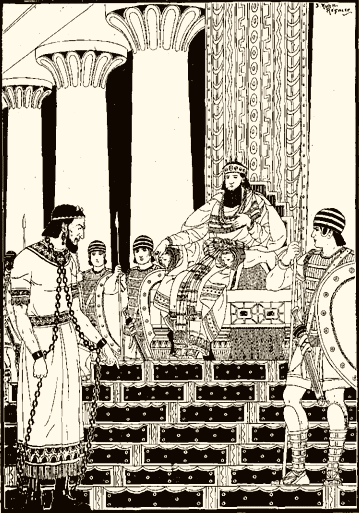
Asmodée devant Salomon
par Kuhn Reigner (1927) pour
"Contes et légendes d'Israël" d'Arthur Weil
Silène
(en grec ancien : Silènos, en latin : Silenus, Selenus) est un personnage de la mythologie grecque, distinct des satyres et « des silènes », qu'il est parfois difficile de différencier. Ses origines sont obscures : selon Nonnos de Panopolis, il serait né de la terre, Gaïa. Selon Claude Élien, il était le fils d'une nymphe. On le disait parfois fils d'Hermès ou encore de Pan et d'une nymphe. Bref, comme le Merlin de la littérature, on ne savait trop qui était son père.
Nonnos attribue trois fils à Silène : Astrée, Maron et Lénée. Selon Pline l'Ancien, il est le père de Staphyle, qui introduisit la coutume de mêler le vin à l'eau. Dans la Bibliothèque d'Apollodore, il est cité, avec une nymphe du frêne nommée Mélia, comme le père du centaure Pholos. Il fut le
précepteur
de
Dionysos
dont, avec les Ménades, il est le compagnon lors de processions.
Le Merlin breton hérite de la
gourmandise
de Silène dans le conte de « Miserere » (auteur Barthélémy, vers 1220) où il se fait prendre attiré par une odeur de cuisine. Ce serait la première mention d’un conte où l’être surnaturel appelé Merlin se serait laissé capturer comme Silène, Picus et Faunus et Asmodée. Il n’y a rien de semblable à ce folklore merlinesque chez Geoffroy ni chez Robert de Boron :
« Un cœur n’a pas raison entière/ Lequel son nez après soi traîne. / Ainsi fut Merlin entraîné/ Et de son bon sens délesté : / Par le nez fut Merlin mené, / Flairant de la grasse cuisine »
(Str. 141, éd. Van Hamel).
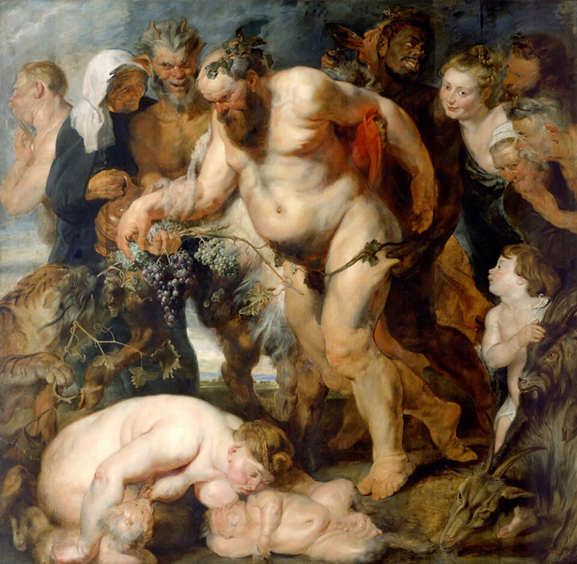
Silène par Pierre-Paul Rubens (1577-1640)
Silène n'est pas seulement un ivrogne et un fêtard de la suite de Dionysos, mais aussi une
source de sagesse
, comme le montre
l'histoire de Silène et du roi phrygien Midas
. Selon une version de ce récit, Silène se moqua des longues oreilles de Midas, révélant ainsi la parenté de ce dernier avec les Silènes et le peuple des satyres. Midas décida alors de
capturer Silène
et, pour ce faire, mélangea l'eau d'un puits avec du vin et le força à boire, afin qu'il s'enivre et puisse être capturé.
Toutefois, Ovide, Claude Élien, et Hygin le Mythographe ne font aucune mention de cette capture : Silène, compagnon de Dionysos lors de la campagne des Indes, perdit le contact avec les troupes et fut
accueilli
par Midas comme un hôte de marque. En guise de remerciement, Dionysos accorda à Midas un vœu. Comme chacun sait, Midas souhaita, à sa perte, que tout ce qu'il toucherait
se transforme en or
. Si la capture de l’être sauvage - et néanmoins source de sagesse - évoque le Merlin du conte breton, ce dernier trait rappelle en outre le
Jean de Fer
germanique.
Faune
(latin Faunus) est le dieu italien antique de la
nature et de la forêt
, protecteur des agriculteurs et des bergers, de leurs troupeaux et de leurs champs.
Il apparaît sous de nombreuses formes et sous de nombreux noms. Sa fête, les Lupercales, a lieu le 15 février. Dans la mythologie grecque, il correspond au dieu berger
Pan
.
Plus tard, Faunus fut conçu comme un esprit cornu de la forêt ou comme une
créature hybride, mi-homme, mi-bouc
. Les
satyres
sont des figures correspondant aux faunes dans la mythologie grecque.
Dans la mythologie romaine, Faunus est le fils de
Picus
(un disciple de Mars ou assimilé à lui) et le petit-fils de Saturne. Selon Virgile, il est le père de Latinus, roi du Latium.
À l’instar de son homologue grec, le dieu Pan, Faunus assure la fertilité des humains et des animaux, effraie les gens dans les maisons et les forêts, parfois par le biais de cauchemars (incube), et apparaît souvent non pas comme un être unique, mais comme une multitude de faunes. En tant que
Fatuus
, il fait même des
prophéties
.
C’est un dieu qui protège contre les loups et sa fête s’appelait Lupercales.
Par la suite, Faunus fut dépeint comme une créature mythique de la mythologie grecque, semblable à un
Satyre
(le terme « faune » pouvant donc être employé comme synonyme de « satyre ») : un esprit cornu de la forêt jouant du chalumeau ou de la flûte, une créature hybride, mi-homme, mi-bouc, généralement représentée avec un torse humain et des pattes et une queue de bouc. On disait que les faunes veillaient sur les champs de céréales et favorisaient leur croissance.
Cette créature hybride
née d’un père qui fut un oiseau
(Pic-vert) évoque donc, elle aussi, l’engendrement du Merlin breton, tel que la berceuse notée par La Villemarqué nous le dépeint.
Dans deux de nos contes le personnage surnaturel vient en aide au héros lors d’une poursuite ralentie par l'abandon d'objets que le poursuivant ne peut s’empêcher de rapporter chez lui.
Frédéric Mistral (1830 – 1914) a reçu le Prix Nobel de Littérature en 1904 pour son œuvre
"Mireio"
comprenant la chanson "O Magali" à la fin du Chant Troisième.
Avec cette poursuite entrecoupée de métamorphoses, ce chant fait de
Mireille
la gracieuse compagne du
Gwion Bach
de l’
Hanes Taliesin
gallois (annexe 1 et annexe 6), mais aussi de
Margot l’Eau-froide
(ch. 18) et du fils de
Coatalan
(ch. 9) des contes bretons.
Provençal
Francais
1- O Magali ma tant amado
Mete la tèsto au fenestroun !
Escouto un pau aquesto aubado
De tambourin e de vióuloun!
- Es plen d'estello, aperamount!
L'auro es toumbado,
Mai lis estello paliran,
Quand te veiran!
2- Pas mai que dóu murmur di broundo,
De toun aubado iéu fau cas!
Mai iéu m'en vau dins la mar bloundo
Me faire anguielo de roucas.
- O Magali! se tu te fas
Lou pèis de l'oundo,
Iéu, lou pescaire me farai,
Te pescarai!
3- Oh! mai, se tu te fas pescaire,
Ti vertoulet quand jitaras,
Iéu me farai l'aucèu voulaire,
M'envoularai dins li campas.
- O Magali, se tu te fas
L'aucèu de l'aire,
Iéu lou cassaire me farai,
Te cassarai.
4- I perdigau, i bouscarido
Se vènes, tu, cala ti las,
Iéu me farai l'erbo flourido
E m'escoundrai dins li pradas
- O Magali, se tu te fas
La margarido,
Iéu l'aigo lindo me farai
T'arrousarai.
5- Se tu te fas l'eigueto lindo
Iéu me farai lou nivoulas
E lèu m'enanarai ansindo
A l'Americo, perabas!
- O Magali, se tu t'envas
Alin in Indo,
L'auro de mar iéu me farai,
Te pourtarai!
6- Se tu te fas la marinado,
Iéu fugirai d'un autre las:
Iéu me farai l'escandihado
Dóu grand soulèu que found lou glas!
- O Magali, se tu te fas
La souleiado,
Lou verd limbert iéu me farai,
E te béurai !
7- Se tu te rèndes l'alabreno
Que se rescound dins lou bartas,
Iéu me rendrai la luno pleno
Que dins la niue fai lume i masc!
- O Magali, se tu te fas
Luno sereno,
Iéu bello nèblo me farai,
T'acatarai.
8- Mai se la nèblo m'enmantello
Tu, pèr acò, noun me tendras ;
Iéu, bello roso vierginello,
M'espandirai dins l'espinas!
- O Magali, se tu te fas
La roso bello,
Lou parpaioun iéu me farai,
Te beisarai.
9- Vai, calignaire, courre, courre!
Jamai, jamai m'agantaras.
Iéu, de la rusco d'un grand roure
Me vestirai dins lou bouscas.
- O Magali, se tu te fas
L'aubre di moure,
Iéu lou clot d'èurre me farai
T'embrassarai!
10- Se me vos prene à la brasseto,
Rèn qu'un vièi chaine arraparas...
Iéu me farai blanco moungeto
Dóu mounastié dóu grans Sant Blas!
- O Magali, se tu te fas
Mounjo blanqueto,
Iéu, capelan, counfessarai,
E t'ausirai!
11- Se dóu couvènt passes li porto,
Tóuti li mounjo trouvaras
Qu'à moun entour saran pèr orto,
Car en susàri me veiras!
- O Magali, se tu te fas
La pauro morto,
Adounc la terro me farai
Aqui t'aurai!
12- Aro coumence enfin de crèire
Que noun me parles en risènt :
Vaqui moun aneloun de vèire
Pèr souvenènço, o bèu jouvènt!
- O Magali me fas de bèn! ...
Mai, tre te veire,
Ve lis estello, o Magali,
Coume an pali!
1- "O Magali, ma tant aimable,
A ta fenêtre, montre-toi donc !
Prête l’oreille à mon aubade
De tambourins et de violons !
- Que d'étoiles au firmament,
Et que l’air est calme !
Mais en te voyant
Les étoiles pâliront.
2- Pas plus que des bruissantes branches
De ton aubade je ne fais cas !
Mais je m'en vais dans la mer blanche
Me faire anguille, de ce pas.
- O Magali, si tu te fais
Le poisson de l'onde,
Alors pêcheur je me ferai,
Te pêcherai !
3- Malgré cette métamorphose,
Lorsque tu jetteras tes filets,
Je serai l'oiseau qui se pose
Sur la lande et je m’envolerai
- O Magali, si tu te fais
Cet oiseau qui vole,
Alors chasseur je me ferai,
Te chasserai !
4- Perdreaux, becs-fins, si tu viens tendre
Aux gentils oiseaux tes lacets,
Herbe fleurie, sans plus attendre,
Me cacherai dans les vastes prés.
- O Magali, si tu te fais
L’humble marguerite,
Je me ferai, moi, l'eau limpide,
Je t'arroserai !
5- Si tu te fais l'onde limpide,
Le grand nuage ce sera moi.
Et ainsi m'en irai bien vite
En Amérique, tout là-bas!
- Magali, si tu t'en allais
Aux lointaines Indes,
Je serais sur la mer la brise,
Je te porterais !
6- Si ton haleine la mer hante,
Je m’enfuirai d'un autre côté.
Je serai l'échappée ardente
Du grand soleil où fond le glacier !
- O Magali, si tu te fais
Le soleil qui brille
Du vert lézard prenant la forme,
Et te boirai !
7- Deviens la salamandre brune
Qui se blottit au fond du hallier !
Je serai, moi, la pleine lune
Qui la nuit éclaire les sorciers!
- O Magali, si tu te fais
La sereine lune,
Alors moi, devenu la brume,
T'envelopperai !
8- Allons, que la brume m'avale,
Tu ne me tiendras pas pour autant.
Devenue rose virginale,
Je m'épanouirai dans les champs !
- O Magali, si tu te fais
La rose si belle,
Frêle papillon de mon aile
Je te frôlerai !
9- A quoi bon vouloir me poursuivre :
Jamais, jamais tu ne m'atteindras.
Quand c’est l'écorce d'un grand rouvre
Qui dans la forêt me vêtira !
- O Magali, si tu revêts
L’écorce grossière,
Je me ferai, touffe de lierre,
Je t'étreindrai !
10- A bras-le-corps tu veux me prendre,
Tu ne me tiendras pas pour autant :
Je me ferai nonnette blanche
Du couvent de Saint Blaise le Grand !
- O Magali, si tu te fais
La nonnette blanche,
Prêtre, je te confesserai,
Et t'entendrai !
11- Quiconque dans ce couvent entre
Toutes les nonnes trouvera
Autour de moi, tristes, errantes
Car dans un suaire on me verra!
- O Magali, si tu devais
Etre cette morte,
Alors je me ferai la terre,
Et là je t'aurai !
12- Maintenant, je commence à croire
Que tu ne parles pas en riant.
Voici mon annelet d’ivoire
En souvenir, jeune homme avenant !
- O Magali, que de bonheur ! …
Dès qu'elles te virent
Les étoiles, O Magali,
Comme elles ont pâli !
Nous avons mentionné au chapitre 3 consacré aux traditions bretonne et galloise, l’existence d’une gwerz bretonne, la
gwerz de Yannig Skolan ou Skolvan
qui présente des analogies évidentes dans la littérature ancienne galloise avec un quasi-homonyme,
Yscolan
.
Le chant breton fut collecté pour la première fois par La Villemarqué et publié dans la 1ère édition du Barzhaz Breizh, celle de 1839, puis par Luzel et d’autres celtisants. On recense aujourd’hui une vingtaine de versions réparties dans deux zones distinctes : une version trégoroise dont le thème central est l’expiation et le purgatoire chrétien et une version plus archaïque de Haute-Cornouaille. C’est à ce deuxième groupe qu’appartient la variante ci-après, chantée par Jean-Louis Le Rolland à Jef Philippe en 1979. En voici des extraits :
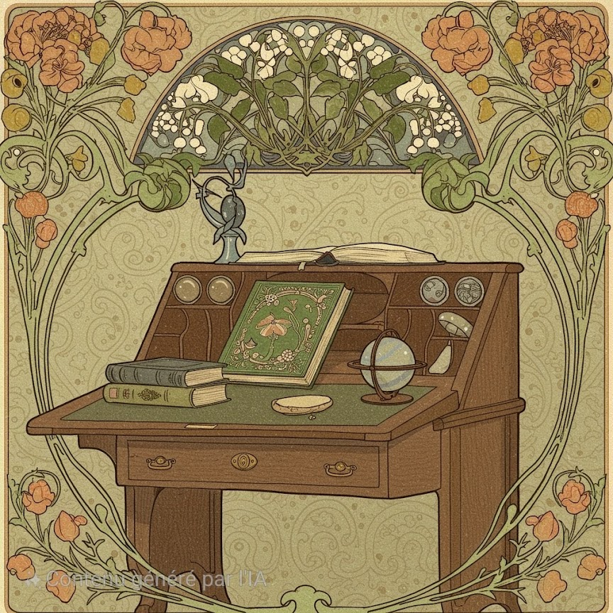
Le petit livre selon l'IA
Breton
Francais
Buhez Skolvan zo deut er vro
D’an holl dud yaouank da gano
Ha d’ar re gozh, nep hen gouio
Nep hen gouy e gano bemdez
‘N-do daou-c’hant deiz pardon gant Doue
‘n-do daou-c’hant devezh pardon
Ha gant Doue E venediksion.
- Piv zo amañ 'r poent-mañ 's an noz
Skeiñ war ma dor'joù serret kloz?
- Ma mamm baour, na spontit ket:
Ho mab Skolvan deut d’ho kwelet. [1]
Ma’z eo ma mab Skolvan deut amañ
Ma mallozh e leuskan gantañ, […]
***
Pa oa gant an hent o vonet,
E dad paeron ‚deus rankontret:
-Du eo da varc’h , du out-te ; [2]
P’lec’h out bet ha da b’lec’h ez it?
-Diouzh ar Purgator don’t a ran
Ha d’an Ifern mont a ran.
Gant mallozh ma mamm pa’m-eus ‘nañ.
- O ma filhor, deut war ho kiz!
Me’z a da c‘houlenn vidoc’h iskuz . – [9]
***
- O, petra-ta, komer ingrat,
C’hwi ne bardonit ket ho mab ? […]
-Violet ‘deus seizh eus e c’hoarezed,
Ha lazhet o inosañted
N’eo ket se e vrasañ pec’hed!
Mont en iliz, terriñ ar gwer [3]
Lazhañ ur beleg ouzh an aoter
N’eo ket e vrasañ pec’hed!
Poazhet ‘n-deus din triwec’h anel-korn, [4]
Ur c’hraou, ur c‘harrdi, un ti-forn
N’eo ket se e vrasañ pec’hed!
Lakaet an tan din barzh ma ed
Kaset ‘c’hanon da glask ma boued
N’eo ket se e vrasañ pec’hed!
E levr bihan en-deus kollet (*) [5]
Oa skrivet gant gwad Hor Salver
Honnezh e vrasañ pec’hed!
- MA levr bihan n’eo ket kollet
‘Mañ er mor don triwec’h gourhed [6]
E beg ur pesk bihan o viret.
’Neus barzh ‘met teir follenn dianket,
Unan gant dour, unan gant gwad,
Unan gant daeroù ma daoulagad.
Ma mamm baour ma fardonit!
Me ‚m-eus graet pinijenn galet ! [7]
Me ‘m-eus tremenet nozajoù
Etre dreid ho kezeg er parkoù!
Dindan ar glav, an erc’h pa rae
Dindan ar skorn pa rielle! [8]
- Ma vec’h pardonet gant Doue,
Ma mabig paour, me ‘ ra ivez… -
***
Pa oa gant an hent o vonet,
E vamm-baeron ‘deus rankontret:
-Gwenn eo da varc’h ha gwenn out-te!
P’lec’h out bet ha da b’lec’h ez it?!
- Diouzh ar Purgador don’t a ran,
Ha d’ar Baradoz mont a ran
Gant bennozh ma mamm, pa 'm-eus 'nañ!
Pag an ar c’hog da c’houloù-deiz
’c’h an Anaon dirak Doue:
Ma mamm baour-me ’c’h ay ivez. – (**)
(*) La mère de Skolvan est habituellement la propriétaire du livre. La présente version est plus proche du poème gallois qui parle du livre qui fut donné à Yscolan.
La « Vie de Skolvan » vient chez nous :
Que les jeunes la chantent tous
Et les vieux, dès lors qu’ils la savent !
Qu’on la chante une fois par jour
Afin d’obtenir en retour
De Dieu deux-cents jours de pardon,
Ainsi que Sa bénédiction !
- Qui donc si tard pendant la nuit,
Bien qu’il soit clos, frappe à mon huis ?
- Pauvre mère, ne craignez rien :
C’est votre fils Skolvan qui vient. [1]
- Si mon fils Skolvan est ici,
Ma malédiction soit sur lui ! - […]
***
Comme il poursuivait son chemin,
Il a rencontré son parrain :
- Noir ton cheval, toi, tout autant ; [2]
D’où viens-tu ? Où vas-tu, Skolvan ?
- Je viens du purgatoire et suis
Aux peines de l’enfer promis,
Puisque ma mère m’a maudit !
- Filleul, retournez sur vos pas !
Votre pardon je l’aurai, moi. – [9]
***
- O commère ingrate, est-ce ainsi
Qu’on prive de pardon son fils ? […]
- Sept de ses sœurs il a violé,
Et tué le fruit de ces forfaits
!
Ce n’est pas son plus grand péché !
L’église eut ses vitraux brisés [3]
Et le prêtre à l’autel fut tué
Par lui : c’est son moindre péché !
Vaches, crèche, grange et fournil…
Dix-huit bêtes brûlées par lui ! [4]
Le pire, je ne l’ai pas dit !
Je fus, quand il brûla mon blé,
Réduite à la mendicité,
Ce n’est pas son plus grand péché !
SON petit livre qu’il perdit (*) [5]
Ecrit avec le sang du Christ…
C’est le pire péché qu’il fit.
- MON livre n’est point perdu, non,
Car à dix-huit brasses au fond [6]
De la mer le garde un poisson.
Trois feuilles manquent seulement,
Gâtées par l’eau et par le sang
Et les pleurs que mes yeux versèrent.
Mère, pardonnez ! Il le faut.
Ma pénitence fut sévère :[7]
Dans vos champs, c’est des nuits entières
Qu’entre les pattes des chevaux
J’ai passées, sous la pluie, la neige
Et la glace quand il gelait ! [8]
Le plus étonnant, c'est que cette histoire se retrouve dans un dialogue gallois extrait du Livre noir de Carmarthen datant du 12ème ou 13ème siècle. Le héros porte le même nom "Yscolan" et ses crimes sont analogues :
Gallois
Francais
- Du dy varch,
du dy capan,
Du dy pen,
du du hunan. [2]
Ia du! Ae ti Yscolan?
- Mi Iscolan,
yscoelheic [1]
Uscawin y puill
iscodic .
Guae ny bauth
a gauth guledic,
O losci ecluis [3]
a llath buch iscol [4]
A llyvir rod [5]
y vothi …[6]
Vy penhid
ys trum kynhi.[7]
Creaudir y creaduriv
pthidev muyaw.
Kyrraw de i mi
vy gev! [9]
Ath vraddaf Te
am thuyllaf ynneu.
Bluytin llaun
ym rydoded
Ym bangor
ar paul cored.
Edrich de poen imy
gan mor pryved,
Bei ys cuypun
ar un mor amluc guint
Y vlaen bric
guit fallum. [8]
Arav uvneuthum
e bith nys gunaun!
Noir, noir est ton cheval,
Noire, noire ta cape,
Noire, noire ta tête,
Noir es-tu tout autant, [2]
Noir ! Es-tu Yscolan ?
- C'est moi Yscolan,
l'érudit, [1]
Je hais les esprits
trop agiles.
Honte à qui n’a jamais subi
Ni jamais brandi la férule !
Incendiant l’église, [3]
tuant les bœufs du couvent [4]
Le livre à lui donné [5]
Il l’a jeté dans l’eau ! [6]
Ma pénitence est une
affliction amère. [7]
Tout-puissant Créateur
de toutes créatures,
Donne-moi le pardon
de mon iniquité ! [9]
Celui qui T’as trahi
à mon tour m'a trompé !
C’est une pleine année
qui me fut infligée,
Dans une claie de pêche
et sur un pieu de digue.
Regarde comme j'ai
souffert des vers marins !
Il est un frêle abri
face aux vents de la mer
Sur le front bigarré
des arbres dénudés. [8]
Je l’ai construit jadis,
mais nul n’en sait plus rien !
C'est
La Villemarqué
lui-même qui signale cette parenté entre la gwerz bretonne et le texte gallois qu'il connaissait par la
Myvyrian Archaiology
. Dans l'édition de 1845, il en cite les 4 premiers vers dans les "Notes", puis les 4 premiers tercets en 1867. Sa traduction est sensiblement différente de celle ci-dessus. Selon lui le parrain ne prononce que la deuxième strophe et le pénitent prononce le reste. Il indique qu’Yscolan est le nom gallois de
St Colomban
et il en déduit que, dans la ballade bretonne, c'est ce saint irlandais qui assiste en tant que "parrain" son malheureux homonyme.
De plus, suivant en cela l'avis du gallois Edward Davies (qui dans
Mythology of the Druids
attribuait le poème à « Myrddin »),
La Villemarqué affirme que le pénitent du poème gallois est le barde Merlin.
Les investigations de M. Donatien Laurent vont dans le même sens ! Même si la question n’est pas tranchée, une fois de plus, on est frappé par la pertinence des intuitions du « Barde de Nizon ».
Donatien Laurent a publié en1971 dans Ethnologie française, une analyse de ce chant très originale. Outre le poème gallois ci-dessus (« Du dy farch, du dy capan... »), il existe toute une série de références galloises, à propos de cet ennemi des livres, citées par des érudits du XIXème siècle :
• E. Davies (cf. supra),
• Th. Stephens (1849, Merlin est le confesseur à qui Colomban -Yscolan exprime ses regrets d'avoir détruit les temples et les livres des Druides) ,
• J.G. Evans (1888, le pénitent est le barde Taliesin du VIe s.),
• I. Williams (1935), selon qui c'est Yscolan qui s'accuse des trois crimes,
• un avis partagé par T. Parry (1952) qui signale l’existence de la tradition bretonne
• et G. Williams (1953) qui voit dans la perte du livre un épisode de la saga irlandaise où Sweeney petit roi d'Ulster s'en prend au psautier de Saint Ronan.
Plusieurs textes anciens:
• Guto'r Glyn (1450),
• T. Jones (1588),
• D.L de Mathafarn (15e s.)
associent le nom d’Yscolan au vol ou à la destruction de livres précieux.
"Yscolan" dans le "Livre Noir" de Carmarthen
Il faut prêter attention à la note manuscrite en marge du poème qui apparaît clairement sur le Livre Noir de Carmarthen (cf. fig. ci-dessus) :
« Merddin a Thaliesin ar pawl ym angor »
= Merlin et Taliesin sur un pieu de barrage d’une pêcherie.
Donatien Laurent en tire un rapprochement tout à fait intéressant entre les trois figures écossaise, irlandaise et galloise de l’
homme sauvage
:
Lailoken, Sweeney et Myrddin.
Le mot
iscodic
à la 2ème strophe aurait, selon lui, ici ce sens.
Ce rapprochement s'organise autour des trois thèmes :
• le livre,
• le pieu,
• le supplice du vent au sommet des arbres.
La tradition bretonne connaît d'autres hommes sauvages : Gwynglaff dont La Villemarqué a fait Gwenc'hlan, Salaün ar Foll, et Merlin appelé Marzhin dans le Barzhaz...
Dans la gwerz de Skolan,
l'homme sauvage
Yscolan a fait place au
revenant
Skolan qui a conservé certains traits de son archétype gallois : couleur noire, enfer froid…
Par ailleurs la figure du
druide ennemi de l'écrit
n'est pas étrangère au récit. Selon Michel Tréguer, dans l'ouvrage coécrit avec Donatien Laurent, "La nuit celtique", PUR 1997, p.19:
« Il n'est pas jusqu'à l'opposition entre
culture orale [des druides] et culture écrite [prônée par le christianisme]
qui ne puisse se trouver dans [les] récits [apparentés aux Vies des Saints] : c'est le
crime majeur
et bien singulier d'un méchant païen, dans la gwerz bretonne de Yannig Skolan, que de jeter à l'eau le petit livre de sa mère ».
L'analyse que nous avons faite dans un autre ouvrage (*), à savoir que cette gwerz est l’illustration d'une conception ancienne du
purgatoire
, recoupe par certains aspects celle de Donatien Laurent.
Par ailleurs, celui-ci cite un texte irlandais qui présente
Sweeney / Suibhne
comme un
homme-oiseau
. On peut reconnaître dans la tradition bretonne aspect de la figure de Merlin, comme je l'ai exposé ailleurs à propos du Merlin du Barzhaz. (**)
On peut supposer que ce nom était connu de Geoffroy de Monmouth quand il a nommé
Merlinus
le personnage né de la fusion d’Aurèle Ambroise et de Myrddin. Inutile, dès lors, d'imaginer comme on le lit parfois qu'il voulait éviter une fâcheuse dissonance.
On doit toutefois remarquer que cet aspect de la théorie est bien fragile : Il repose essentiellement sur le sens à donner au mot
guit
dans la dernière strophe. Si l’on y voit l’équivalent du gallois moderne
coed
(des arbres), on peut effectivement comprendre qu’il s’agit d’un malheureux exposé aux vents au sommet d’un arbre dénudé et faire le rapprochement avec Sweeney.
Cependant la transcription en moyen-gallois de ce texte semble être :
Pei yssyd cwepyn ar un môr amlwg gwynt,
y flaen bryc,
gwynt
falw.
Er pan wneuthum, yn y byd nis gwnawn.
Soit en français :
Où se trouve l’abri sur la mer éventée
Devant le bord jaspé où la
bourrasque
meurt ?
Je l’ai construit jadis. A présent, qui le sait ?
Ici pas d’arbre, sans arbre pas d’oiseau, sans oiseau pas d’homme-oiseau.
(*) Christian Souchon, « Les mystères du Barzhaz Breizh, T. II », p. 5-26, Amazon, 2020
(**) Christian Souchon, « Les mystères du Barzhaz-Breizh, T.III », p. 424, Amazon, 2020
De même, il n’est pas certain que ce texte parle d’homme-sauvage.
La première strophe transcrite en moyen-gallois normalisé pourrait se lire :
Mi Iscolan, ysgolheic,
ysgafnwyf y pwyll esgudig;
Gwae ny bu ac a gaff gwledig!
dont la traduction serait :
C’est moi Yscolan, l’érudit
Je ris des esprits trop agiles
Honte à qui n’a jamais brandi
Ni jamais subi la férule.
Le motif principal de cette strophe et peut-être de l’ensemble du poème semble alors être plutôt
l’opposition entre les érudits et les dilettantes
(qui n’ont jamais ni étudié, ni enseigné). Le poème
Preideu Annwfyn
que nous donnons également en Annexe 2, montre qu’il s’agit d’un sujet récurrent dans la littérature galloise ancienne, bien distinct de celui de l’homme sauvage.
Tout dépend de la traduction de certains mots :
Ysgafnwyf
est une forme verbale signifiant « Je me moque, je fais peu de cas », dérivée de l’adjectif
ysgafn
= « frivole », apparenté au breton
skañv
= « léger ». La terminaison
wyf
étant la 1ère personne du singulier du verbe
bod
= « être » au présent, ce composé signifie « Je suis léger, je suis frivole ».
Dans le contexte de ce poème, il faut peut-être comprendre : « je ne suis pas sérieux au sujet de », « je traite à la légère », « je fais peu de cas » … (des raisonnements hâtifs,
Y pwyll esgudig
, en breton
ar poell oueskig
). Le mot breton
ouesk
signifie à la fois « agile » (
troioù ouesk
= « tours d’adresse »), et « souple » et « affable ».
De sorte que le vers
ysgafnwyf y pwyll esgudig
signifie « faisant fi des esprits trop accommodants ».
Les deux vers suivants parleraient donc d’érudition, d’enseignants et d’enseignés et de leurs ennemis, les dilettantes.
Ce n’est donc qu’en sollicitant assez fortement ce texte qu’on peut faire de ce poème un discours sur l’homme sauvage et d’Yscolan un double évident de Lailoken, Myrddin et Sweeney.
la phrase notée en marge du poème d’
Yscolan
sur le manuscrit de Carmarthen,
"Merddin a Thaliesin ar pawl ym angor"
(Myrddin et Taliesin sur un pieu de clayonnage de pêcherie) fait référence :
• D’une part au 1er conte de
Lailoken-Myrddin
où celui-ci apprend à saint Kentigern qu’il mourra le jour même d’une triple mort : lapidé, percé par un pieu et noyé. Et de fait, le jour même, il est lapidé par des bergers et jeté dans la rivière Tweed où il se noie, empalé sur le pieu d’une pêcherie.
• D’autre part au Conte de
Taliesin
d’Elis Gruffydd qui raconte comment l’enfant Taliésin, réincarnation de Gwion Bach (cf. annexe 1), fut couché par Ceridwen dans un coracle et abandonné à la mer. La frêle embarcation va s’échouer, au bout de quarante ans (!) sur la barrière de la pêcherie de Gwyddno Garanhir, à Caer Ddegannwy, dans l’estuaire de la Conwy. Le fils de Gwyddno, Elffin, recueille le barde qui entame aussitôt un chant, pour consoler le malheureux pêcheur de n’avoir pris aucun saumon.
L’examen du poème d’Yscolan montre que les trois personnages, Myrddin, Taliesin et Yscolan ont deux choses en commun.
• Un
pieu de pêcherie
joue un rôle crucial dans leur existence : à la mort de l’un, à la renaissance de l’autre, après la mort du troisième qui y expie ses fautes.
• Ce sont tous les trois
des bardes et des lettrés
, si toutefois on admet que le barde Myrddin et Lailoken n’en font qu’un.
Le poème d’Yscolan ne vise pas à établir qu’Yscolan était un homme sauvage, identique à l’un ou l’autre des deux autres personnages.
En revanche l’érudit Yscolan est sans aucun doute le frère jumeau du revenant Skolan qui, après un long séjour dans un purgatoire fort semblable à l’
enfer froid
des Bretons, muni du
pardon de l’âme
, prend le chemin du paradis.
Dans le tableau récapitulatif ci-après Merlin et Skolan sont les avatars bretons des Myrddin et Yscolan brittoniques.
Les diverses versions de la gwerz de Skolan ne font pas de Skolan/Skolvan un fin lettré comme Yscolan, mais certaines le présentent comme « évêque de Léon », donc comme un homme instruit, même s’il est dans toutes les variantes celui dont le pire péché fut de
« noyer un certain livre »
.
La littérature anglo-saxonne a approfondi l’étude comparative des trois grandes figures des deux îles sous l’aspect des quatre éléments : l’
intelligence artificielle
a dressé les deux tableaux suivants, riches d’enseignement. Elle a en outre, spontanément suggéré de reprendre cet exposé sous forme d’un récit en prose et, s’agissant de poésie, d’en présenter une synthèse poétique ainsi qu’un chant scénique !
Cédons la parole à l'
IA
:
Observations
•
Châtiment triadique
: Chaque figure incarne une triple épreuve (feu, eau, air/bois).
•
Motif du livre
: Le crime central est dirigé contre l’écriture sacrée ou savante — noyade, destruction ou attaque d’un psautier.
•
Motif du pieu
: Le pieu de pêcherie est le pivot du destin — mort, pénitence ou renaissance.
•
Motif du vent
: L’exposition aux vents (cimes des arbres, air marin) marque la souffrance liminale de l’homme sauvage.
•
Tension identitaire
: Savant contre homme sauvage — Yscolan oscille entre érudition et marginalité, reflétant la folie de Sweeney et l’exil prophétique de Myrddin.
Ce cadre triadique montre qu’
Yscolan n’est pas simplement un « double » de Myrddin ou de Sweeney
en tant qu’homme sauvage, mais bien un érudit‑pénitent dont la punition reflète la leur à travers les
épreuves élémentaires.
Ce cadre montre qu’
Yscolan, Sweeney et Lailoken/Myrddin
sont des variations d’
un seul archétype
: celui du
savant‑prophète
devenu
homme sauvage pénitent
, puni par les
épreuves élémentaires
.
Ainsi, Yscolan n’est pas simplement un double de Myrddin ou de Sweeney : il est un
érudit‑pénitent
dont la punition reflète la leur, à travers les épreuves élémentaires, et qui illustre la permanence d’un archétype celtique du «
barde sauvage
» pris
entre savoir et transgression
.
Voici à présent une synthèse poétique originale qui réunit les voix d’Yscolan, de Sweeney et de Lailoken/Myrddin en un seul chant imaginaire :
Cette synthèse poétique fait dialoguer les trois traditions comme si elles formaient une seule voix, celle du
barde sauvage celtique, partagé entre érudition et folie, entre crime et rédemption.
Voici une synthèse en
vers libres modernes
, qui reprend les voix d’Yscolan, de Sweeney et de Lailoken/Myrddin dans une tonalité contemporaine, presque minimaliste :
Cette version en vers libres modernes conserve la densité symbolique des traditions celtiques, mais avec une respiration plus contemporaine.
Nous avons arrêté là le recours à cet outil aux possibilités illimitées, semble-t-il.
Est-ce le Crépuscule des magiciens ? Merlin a-t-il atteint l’âge de la retraite (comme l’auteur de ces lignes) ?
On remarquera que le logiciel n’a pas intégré la composante bretonne dans ses exercices littéraires.
Espérons que le présent ouvrage contribuera à combler cette lacune !
 Introduction
Introduction